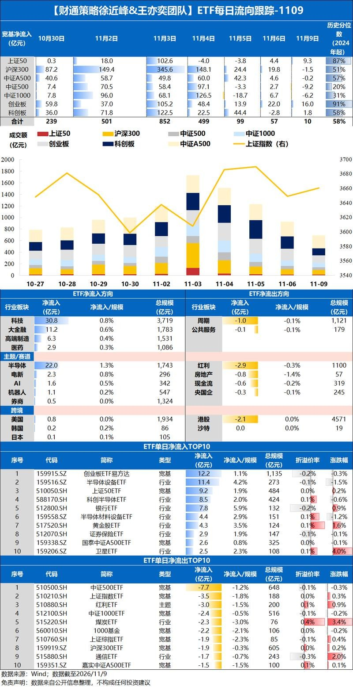
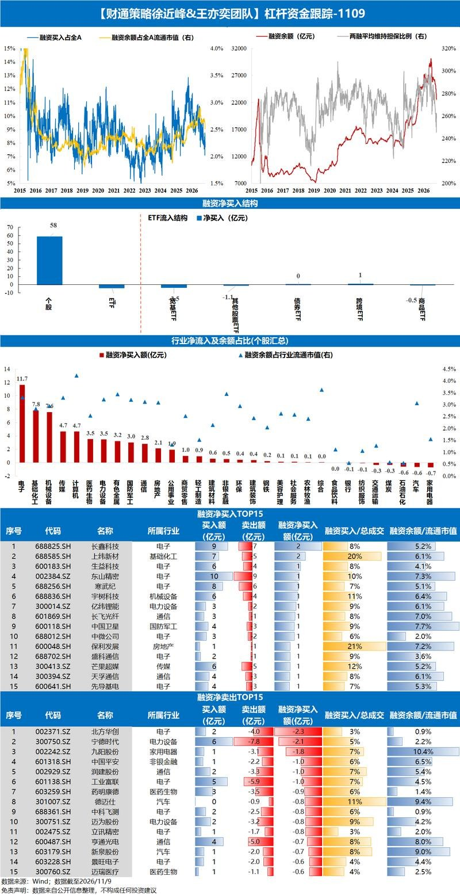
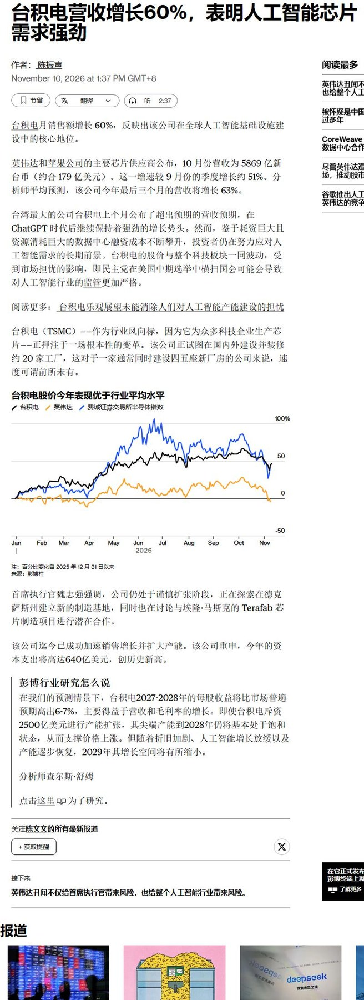
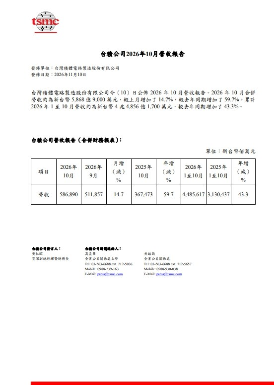
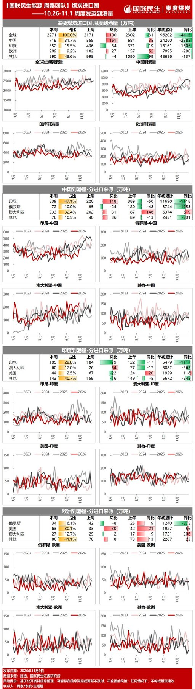
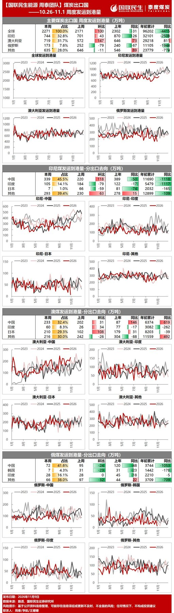

调研纪要 · 2026-11-10 新闻日报
星球 ID: 28855458518111 | 共 348 条帖子 | 精华 97 条
| 查看研究积累
书签
【方正零售】出口跨境数据月度跟踪 202610
【方正零售】出口跨境数据月度跟踪 202610
美联储主席沃勒支持12月加息，并对更大幅度的加息持开放态度
美联储主席沃勒支持12月加息，并对更大幅度的加息持开放态度
英飞凌上调人工智能销售预期，因数据中心增长计划
英飞凌上调人工智能销售预期，因数据中心增长计划
软银因美国数据中心成本飙升而亏损70亿美元
软银因美国数据中心成本飙升而亏损70亿美元
泰国为数据中心设定70分贝噪音及散热限制
泰国为数据中心设定70分贝噪音及散热限制
如果查看用于人工智能数据中心的连续波激光器 ASP，会发现价格差异相当大
如果查看用于人工智能数据中心的连续波激光器 ASP，会发现价格差异相当大
软银今天就埃隆·马斯克4天前的帖子发表了新的评论
软银今天就埃隆·马斯克4天前的帖子发表了新的评论
尽管交货时间略有放宽，DRAM依然非常紧张，交期缩短至18周。
尽管交货时间略有放宽，DRAM依然非常紧张，交期缩短至18周。
但在表面数字之下，区域需求差异在DRAM和eSSD中变得更加明显。
20261110盘后消息汇总
20261110盘后消息汇总
宏观
1.美联储理事沃勒放鹰，支持12月加息，称对加息50个基点持开放态度
2.交易员加大对美联储升息的押注，完全消化12月升息25个基点的预期
3.瑞银：美联储料再加息两次 但难以终结美股上涨行情
题材
1.端侧
①字节AI世界模型与硬件新品有望密集落地，世界模型推动交互内容形态升级，互动影游有望率先受益
②当前OpenAI甜甜圈指引4-5条产线预期，对应设备端能见度已较高
科技
1.Anthropic：IPO目标市值约1万亿美元 下周三确定发行价、周四开始交易
2.微软正在游说美国政府放弃中国光收发器进口限制计划
3.阿里巴巴：拟分拆平头哥赴港独立上市 已于9月11日秘密递交上市申请
其他
1.上海：加快海洋观测设备、海洋卫星通信、水下通信导航等发展 推进海洋传感器、海洋智能机器人、潜水器等关键装备研发应用
【广发机械】光设备更新：海外大厂反对FCC，板块有望反弹
【广发机械】光设备更新：海外大厂反对FCC，板块有望反弹
#微软反对FCC。海外媒体报道，微软一直在向特朗普政府施压，要求其停止禁止中国进口人工智能数据中心关键部件的计划；我们认为，很多事情在议会选举之后陆续曝出，显示此次民主党大胜，FCC等规则的制定过程预计将有较多阻力；
整个光板块，回调自高点有70%+，近日外围利空而板块股价坚挺，显示筹码结构有所改善。我们建议首选，光里面未来2-3年产业趋势向上的CPO等新技术，其次为高扩产背景下高确定性的光模块设备。
CPO设备关注罗博特科、联讯仪器、天准科技、强一股份、科瑞技术等，光模块设备关注联讯仪器、罗博特科、华兴源创、、华盛昌（伽蓝特）猎奇智能、矽电股份、凯格精机、博众精工、奥特维、快克智能、科瑞技术、智立方等。
欢迎交流。
孙柏阳/汪家豪/王宁/许贝尔
微软敦促特朗普取消对中国数据中心技术的预期禁令
微软敦促特朗普取消对中国数据中心技术的预期禁令
重大监管边际变化 · Reuters独家
重大监管边际变化 · Reuters独家
微软正游说白宫阻止中国光模块进口禁令
2026年11月10日 19:15（北京时间）｜新闻发表于19:02
本轮发现值得立即关注的新消息：禁令仍在酝酿，但美国大型云厂商正在直接推动白宫放弃限制。 这对中国光模块企业属于政策风险缓和信号，而不是禁令已经取消。
Reuters记者Alexandra Alper于11月10日披露：
* 微软已直接介入游说。 微软与其他企业在9月会见白宫科技政策办公室及国家安全委员会官员，强调限制中国光模块可能拖慢美国AI数据中心建设。这些游说细节此前未公开。
* 3.2T可能成为限制门槛。 Reuters援引知情人士称，FCC正在考虑针对3.2Tbps光收发器实施限制，但尚未确定。大摩10月报告预计3.2T在2028年开始规模放量、2029年广泛部署。
* 美国供应链替代能力不足。 Reuters援引行业研究指出，Coherent、Lumentum目前缺乏迅速替代中国供应商的规模。Reuters +1
对四家公司的差异化影响
公司 本次边际判断 核心逻辑
中际旭创 偏利好 直接受潜在光模块限制影响；微软反对全面禁令，有助于缓和未来美国订单风险
新易盛 偏利好 同属直接暴露企业；若限制最终仅针对3.2T，现有800G、1.6T业务面临的新增政策压力可能较小
天孚通信 间接利好 光学器件、精密组件与光引擎相关供应链受益于客户出货稳定；是否直接受限仍取决于最终产品定义
太辰光 间接利好 光纤连接及无源互连产品不等同于完整光收发模块；客户供应链稳定性改善，但直接受益程度尚无法量化
以上是产业链传导判断，并非公司订单或EPS已发生变化。
法律状态与风险判断
尚未正式出台
FCC光模块进口限制仍处于政策研究阶段
截至本轮核查，没有发现正式公布的3.2T禁令条款、生效日期或针对800G、1.6T的新增直接进口限制。FCC 10月29日的测试实验室表决与此次潜在光模块禁令是不同监管事项；S.5548仍处于参议院委员会阶段。Reuters +1
投研判断： 此次最重要的变化不是3.2T门槛本身——市场此前已有相关传闻——而是微软等终端客户正直接向白宫施压。它增加了政策被缩窄、推迟或撤回的可能性，但不能据此确认政策转向。
后续最关键的验证点是FCC是否发布正式文本，以及限制范围究竟是全部中国制造光模块、特定企业产品，还是仅针对3.2T及以上的新型号。
原始出处：
Reuters 11月10日独家报道全文ITI提交FCC的8月13日正式反对意见
本次符合可靠媒体独家消息的预警条件。
【国信互联网&海外科技】Anthropic IPO目标估值1万亿美元，10月ARR达到810亿美元，环比加速
【国信互联网&海外科技】Anthropic IPO目标估值1万亿美元，10月ARR达到810亿美元，环比加速
Anthropic更新S1/A文件，核心变化信息如下：
1、IPO募资规模最高904亿美元，目标估值约1.02万亿美元。拟以70-78美元/股发行约8.25亿股，IPO发行规模最高644亿美元；此外，谷歌、英伟达、AMD、博通、微软、美光及台积电等战略投资者拟通过私募认购260亿美元（其中谷歌英伟达各100e），合计融资规模最高904亿美元。目标估值约1.02万亿美元，较此前市场预期的1.5-2万亿美元下调。
2、10月末ARR约810亿美元，较9月末ARR710亿美元，环比+14%，重新恢复加速增长（7-9月2个月仅增长约90亿）。
3、总采购承诺小幅上调55亿美元（8954→9009亿），未来12个月（698→707亿），其中微软相关算力采购承诺上修23亿
欢迎联系国信互联网&海外科技 张伦可/张昊晨
🍬#今天大家都沉浸在开盘红的喜悦里没人点评claude新模型我来点评下
🍬#今天大家都沉浸在开盘红的喜悦里没人点评claude新模型我来点评下
fable 5.2的机器人能力速评
在RoboDojo Sim机器人仿真评测中，Fable 5.2直接拿到了64.9%，上一代Fable 5.1只有27.6%，Opus 5.5是39.4%，GPT-6 Astra只有29.8%。
一代模型更新，直接提升了37.3个百分点，得分翻了2.35倍。而恐怖的地方在于，这是一个通用大模型。
过去大家都觉得，机器人需要专门训练具身模型、世界模型，解决空间理解、动作规划、长程控制等问题。
结果现在通用大模型的机器人任务能力，也开始出现这种幅度的跃迁。
#以前以为具身智能公司的竞争对手是其他机器人公司，现在发现，最大的竞争对手可能是Anthropic的一次模型更新
这次机器人行情和之前行情最大的不同在于，#无比依赖大模型能力的进展和飞跃，我会密集跟踪，也会持续挖掘更多股票，欢迎领导们和我交流
by ty
❗【天风电新】美国算力基建相关法案参议院终止辩论投票通过，AIDC建设有望加速-1110
❗【天风电新】美国算力基建相关法案参议院终止辩论投票通过，AIDC建设有望加速-1110
————————————
美国时间11月9日，美国参议院以73：25票通过《美国可负担性和就业法案》（BAAJA）终止辩论，73票赞成票中有22票来自民主党，法案具体细则：
20MW及以上的AIDC需支付现有电网系统费率，外加扩建带来的电网新设施增量成本，包括发电、储能、输电和配电，并在退出电网时承担搁浅成本。
各州可对AIDC收取高于成本的费用，并将盈余转给其他用户。
各州可设立单独的用户类别、开展公开招标、要求AIDC自带发电设施或限制其从电网的取电量。
加强各州政府在输电许可规划中的发言权，天然气管道、输电线路建设的审批得到简化，后续建设有望加速。
⭐下一步
本次仅为终止讨论表决，后续仍需要参议院最终表决；后将法案送至众议院，若无修订、将投票表决。
1、若法案最终通过：AIDC和相关基建加速，AIDC电费上涨，#利好输电相关的电力设备、AIDC自建电源（SOFC、燃机、气发等）。
2、法案最终通过的概率有多大：中期选举后民主党27年1月3日开始实际控制两院，即1月3日之前共和党需快速推进、完成投票，变量在于民主党期间是否提出法案修订、拖延时间。
————————————
欢迎交流：孙潇雅/吴佩琳
[红包]【HYCM】五大AI影视标的情况再更新
[红包]【HYCM】五大AI影视标的情况再更新
①中设咨询1、星阅辰石借壳上市预计将于近期落地，是市值+估值最低的新增头部IP标的。持有《
遮天 ↗》系列、《
那年那兔那些事 ↗》、《
轩辕剑 ↗》系列等头部IP。2、联合地方政府搭建全球首个AIGC的OPC合作平台。社区将依托四川文娱产业基础及人才资源，构建“平台发单—中设承接与任务分发—OPC社区成员制作”的协同生产模式，其商业模式类似于AI内容创作领域的“滴滴”，已与爱奇艺、腾讯视频等平台达成深度合作意向。3、储备有《
轩辕剑 ↗》（路阳导演）、《
仙剑奇侠传1 ↗》、《
遮天 ↗》等AI电影，并将持续产出《
遮天 ↗》《
那年那兔那些事 ↗》《
轩辕剑 ↗》等IP相关AI短中长剧内容。
②华策影视：1、公司9月26日推出五人AI男团MO:V墨伍，后续将通过综艺、音乐、剧集及互动内容持续增加曝光。公司希望逐步形成制作团队之外的IP及艺人溢价，将AI技术服务于虚拟艺人养成，缓解现阶段AI内容变现压力，并将自有AI形象与衍生价值沉淀在公司内部。2、多元布局AI影视内容：AI动画《西游记：消失的500年》预计2027年Q1上线，海内外均有发行，首季6集、每集15分钟；储备AI仿真人历史剧《
资治通鉴 ↗》；爱奇艺合作AI演技竞演恋爱综艺《心动再开机》将于11月上线，启用自有AI艺人。AI互动影游《借你的眼睛》正制作推进，由自有AI艺人主演；真人互动影游《代号：迷失》预计2027年上线。
③上海电影：1、控股子公司上影元核心运营IP总量约60个，为商业化运营的核心资产。2、布局互动影游，2024年推出《谍影成双》，2026年9月23日推出全球首款双人互动影游《新世界：暗影成双》，登顶App Store付费榜3、推出AIGC短片《我可能确诊为葫芦娃》，参与出品AIGC武侠电影《山竹刀》。揭牌专业AIGC厂牌“上海昊袋影智”，并发布了覆盖短剧、经典改编、动画电影的AIGC片单，包括红色IP《新51号兵站》、全AI创制院线动画《超迷你战士大电影》等。4、参投《流浪地球3》春节档上映；集团主控、公司参投《千里·江山图》、《浮华之上》预计将于2027年上映。美影厂成立70周年，储备《
雪孩子 ↗》《
斑羚飞渡 ↗》《
葫芦兄弟 ↗》《
天书奇谭 ↗》《浪浪山小妖怪2》等精品动画电影。
④中国电影：1、《流浪地球3》上部已定档2027年春节档，重科幻内容AI降本空间巨大。2、A股唯一拥有进口片引进资质的主体，2026Q4《复仇者联盟5》《
沙丘3 ↗》等头部IP续作集中上映。3、旗下中影科技所参与发起的“人工智能+电影虚拟拍摄融合创新实验室”2026年2月已在德清揭牌。
⑤芒果超媒1、CEO直管AIGC中心，“芒果灵创”聚合40余种模型。“芒果灵创剧场”已上线AIGC文博剧《永恒：辛追的一生》、微短剧《
永不掉队 ↗》等，AI院线电影已完成内部立项，5位原生AI艺人官宣出道，2026年计划上线微短剧万部、精品短剧超200部。2、AI长剧《
后西游记 ↗》登陆湖南卫视黄金档，落地冠名与中插广告，跑通商业化。其为''广电21条''（2025年8月发布）后全国首部''边审边播''剧集，缩短创作播出周期、依审核意见与观众反馈动态优化剧情。3、国资渠道壁垒：湖南广电体系提供制作资源与卫视播出渠道，纯市场化平台难以复制。4、综艺IP护城河：《
乘风 ↗》《
大侦探 ↗》等综N代构成流量基本盘，2025年全网综艺TOP10占6席。
物理AI：渲染侧世界模型落地更快[色] AI互动娱乐！
物理AI：渲染侧世界模型落地更快[色] AI互动娱乐！
1、北美巨头集体入场，物理AI成为全球 AI 新主线，后续催化频繁。应用方向分类：渲染器对应娱乐内容，模拟器规划器对应具身和智驾。#渲染器有望更快形成商业闭环实现爆发。
2、国内大厂看字节。近期世界模型渲染侧进展十分明显，国内在应用落地上领先，具备较快变现的条件，字节也有商业闭环的能力。视频生成和 3D生成能力都在快速提升。#年内字节视频模型+世界模型+Pico三重大催化。AI互动内容迎来拐点变化[色]
3、核心标的：
1）#风语筑： 大厂核心数据供应商（有壁垒、可复用、GPT6带动3D数据价值重估）+下游应用全生态合作（AI互动影游已有获奖作品、Pico VR大空间）
2）#上海电影： AI互动娱乐（新硬件新形态），与字节合作紧密
3）#传智教育： AI教育龙头，未来三年业绩有望高增
国海传媒 | 杨仁文：重申AI长内容-3A逐步共振：AI院线电影/AI长剧/AI互动娱乐或游戏！#第三个：AI互动娱乐正在揭幕[色]
【zx电新】AI自备电源板块点评：软银SB7燃机槽位调整，BTM模式预期重定价
【zx电新】AI自备电源板块点评：软银SB7燃机槽位调整，BTM模式预期重定价
燃机板块三重核心变化：1）软银FY2026Q2财报确认旗下SB7（PORTS-Pike项目）调整发电设备采购，累计预付95亿美元，66亿美元继续履约对应约4GW设备，29亿美元槽位预付款沉没、叠加9亿合同结算损失合计37亿美元损失；本次取消标的为产能预留Slot协议，并非已经锁交付的Firm正式订单，对应体量接近GE Vernova年化产能75%，槽位可二次转售，但市场此前AI配套燃机高增预期下修。2）北美IDC供电路线出现明显分化，csp优先采用并网方案，表后自备占比我们预计提升幅度不大；xAI等仍坚持BTM大燃机路线。3）行业供给格局变化，大量前期锁定AI算力槽位回流市场，公用事业客户涨价难度更大。
GE Vernova：槽位不计入在手Backlog，当期无存货减值，定金已预收无需退回，核心损失为未来整机+长期高毛利服务收入；原有指引中AI配套槽位转单率预期下调，估值确定性溢价承压，我们预计该笔15GW槽位若无法转让，未来2-3年对应收入弹性减少约28-30亿美元，毛利损失约4.5-5.5亿美元。
西门子能源：北美IDC槽位布局与GEV结构类似，北美份额相对更低，直接基本面冲击有限，情绪层面同步承压，市场将开始严格区分Slot预留订单与Firm交付订单，AI增量订单估值折价。
欢迎联系交流！
🧧【中泰电新】#液冷：海外放量新周期，重视板块超跌反弹机会
🧧【中泰电新】#液冷：海外放量新周期，重视板块超跌反弹机会
#今日，液冷板块大涨，判断系1）跟随科技板块反弹；2）属于科技板块后置环节，当前时点，国内供应商海外订单提速、有望明年大幅兑现，27年板块业绩弹性大
#Q3国内Tier1厂商前瞻指标持续新高、代工加速释放业绩
#国内Tier1，英维克、申菱环境存货与合同负债均创新高，环比增幅达几十到翻倍以上，反应备货发货加速、利润兑现在即；立敏达前三季度收入同比+80%，全年指引15-20亿，VR200光模块液冷、Manifold已实现量产
#国内部件级厂商，飞龙液冷大泵Q3交付、Q4确收；金富Q3液冷收入环增50%、净利率维持29%；江南新材液冷Q3收入加速、月度收入1亿，订单毛利率30%+
此外，国内链鸿富瀚Q3业绩兑现；一次侧厂商冰轮环境Q3海外数据中心业务贡献核心利润，在手订单再上新台阶达80亿26Q4/27Q1交付进一步加速
#台系液冷大厂月度收入持续新高：奇宏10月营收221亿台币、已连续4个月创新高，同环比+34%/+5%，Q3毛利率33.9%再创新高，同环比+7.7pct/+1.3pct；富世达10月营收16.5亿台币，同环比+26%/+2%；双鸿10月营收33.7亿台币、为单月历史次高，同环比+45%/+17%；健策10月营收30.7亿台币，同环比+81%/+1%，海外AI散热需求持续释放、复杂难度及用量也持续提升
#投资建议：国内厂商液冷业务进入放量周期，27年弹性可期。#建议关注：1）稀缺性和弹性都很大的Tier1：英维克/申菱环境等；2）部件级核心龙头：金富科技/鸿日达/同飞股份/飞龙股份/大元泵业/江南新材/鼎通科技/奕东电子/磁谷科技/鑫磊股份/ 强瑞技术/科创新源等
风险提示：需求不及预期、竞争加剧等
☎️【中泰电新 曾彪团队】
【国联民生电子】国产模拟芯片在端侧场景导入加速
【国联民生电子】国产模拟芯片在端侧场景导入加速
1️⃣模拟芯片在端侧应用广泛：前端信号采集、后端声音输出、给芯片供电需要模拟芯片。端侧AI的诸多新要求都推动模拟芯片品类扩张：常开语音交互需要麦克风前端/Codec/ADC，开放式音频需要音频功放，环境生理感知需要传感器前端，大算力协同需要多相PMIC/高精度ADC/DC-DC/LDO，续航快充需要充电管理与OVP，交互反馈需要触觉马达驱动，新增散热需要微泵液冷驱动。不管是眼镜还是AI手机等终端，模拟芯片价值量都处于较高的水平。
2️⃣国产模拟厂商在端侧导入加速：艾为电子产品方案覆盖Meta、Rokid、雷鸟、XREAL等超90%主流AI眼镜品牌，多款自研芯片应用于Meta系列产品；南芯科技推出国内首颗电池均衡限流芯片SC7613，配套同步降压充电芯片SC89622，AI眼镜相关产品已在多个国内头部品牌客户应用。
🎁涉及标的：艾为电子、龙迅股份、南芯科技、帝奥微、圣邦股份、希荻微、思瑞浦、纳芯微等。
免责声明：基于公开资料整理，可能存在信息滞后或更新不及时，任何情况下不构成投资建议
[玫瑰]国联民生电子 薛宏伟/贾国瑞
【野村电子｜戴洁、李之婧】全球科技股调整节奏与半导体设备配置机会
【野村电子｜戴洁、李之婧】全球科技股调整节奏与半导体设备配置机会
近期全球科技股波动加剧，市场普遍认为A股科技承压更明显。但复盘本轮行情，A股科技实际上领先于海外成长资产调整，部分板块已较充分消化估值压力，有望率先迎来修复；海外科技资产则可能面临估值滞后调整的压力。
☑️全球科技股：A股率先调整，海外估值压力可能滞后释放。 本轮科技股调整并非普遍由盈利预期下修驱动，更多反映AI投资回报、融资成本及宏观风险的重新定价。随着2027年盈利预期仍有上修空间，科技股调整后的配置机会值得重新评估。
☑️半导体设备：资本开支与国产替代双主线，关注订单兑现。 国内晶圆厂扩产规划相对明确，存储扩产、先进制程及混合键合等先进封装技术持续带来设备增量。全球部分头部客户设备订单锁定周期由12个月延长至24个月，订单能见度有所提升。国内设备国产化渗透率提升的长期逻辑不变，回调后重点关注订单落地与盈利兑现。
☑️重点标的与投资方向： A股重点关注#拓荆科技 （688072 SH） 的PECVD/ALD及混合键合业务、#中微公司 （688012 SH） 的刻蚀设备国产替代机会；日本方面关注#爱德万 （6857 T） 的GPU/ASIC测试需求，以及#东京电子 （8035 T） 受益于存储扩产、设备升级与潜在涨价。
🤖英伟达发布GR00T 2世界动作模型，人类视频训练与智能体协同打开机器人泛化空间20261110【浙商新兴产业吴婷婷/钟凯锋团队】
🤖英伟达发布GR00T 2世界动作模型，人类视频训练与智能体协同打开机器人泛化空间20261110【浙商新兴产业吴婷婷/钟凯锋团队】
#事件
当地时间11月9日，英伟达在CoRL发布基于Cosmos的世界动作模型GR00T 2，联合预测未来视频与机器人动作，预训练融合40.3万小时人类第一视角视频、1.02万小时UMI夹爪示教及2.35万小时机器人遥操作数据。在72项真机任务测试中，加入完整人类视频预训练后，平均任务完成进度由50%提升至70%；在50项目标机器人此前未训练过的任务中，零样本平均成功率达到40%，每项任务仅需1次、5次示教并微调，成功率分别提升至71%、95%。
#点评
1️⃣ #少量示教适配新任务取得突破，机器人技能开发有望大幅降低数据成本。 GR00T 2在跨本体及人类视频预训练基础上，将每项新任务所需的真机示教数据压缩至不足3分钟，单张RTX 5090仅需约30分钟即可完成微调。#核心意义在于机器人能够从人类操作经验及其他机器人数据中迁移技能，减少新任务对专门遥操作数据的依赖，拓宽人类第一视角视频、UMI穿戴式设备及多源异构数据的应用空间。
2️⃣ #推理与动作执行协同获得真机支持，机器人从单点技能向复杂任务执行迈进。 英伟达将推理智能体与GR00T 2结合，由智能体负责任务拆解、过程检查及异常恢复，GR00T 2负责精细动作执行，在三类玩具装配任务中分别完成98/100、97/100、97/100次测试。产业应用方面，富士康正将GR00T 2用于服务器制造自动化，技术验证开始向具体工业场景延伸。#随着机器人大脑泛化能力与复杂任务执行能力持续提升，有望推动机器人从专用场景走向通用任务，进一步打通人形机器人量产外售的商业化逻辑。#重点看好具备核心零部件卡位优势及总成能力的🤖四大龙【峰岹科技+新泉股份+科达利+恒立液压】。
[玫瑰]风险提示
人形机器人产业链进展不及预期；特斯拉机器人进展不及预期等。
[加油]欢迎联系浙商新兴产业团队吴婷婷13472717082/钟凯锋/谢雨晨/翁雨晴#文字观点
【天风传媒互联网】再次强调重视XR产业链价值及元宇宙生态
【天风传媒互联网】再次强调重视XR产业链价值及元宇宙生态
此前XR（VR/AR/XR）的产业桎梏，核心矛盾集中于两端：
①较重的硬件佩戴体验和续航制约C端渗透率（晕动症可以通过AR或MR解决）。
②内容供给较高成本、高门槛拖累生态飞轮运转。（线上线下也没有一体化打通抓手）。
所以，元宇宙更多停留在主题叙事阶段。
本轮产业催化已出现双向破局信号。
①供给侧，硬件轻量化且融入便利性Agent。
Meta迭代路线清晰：100g轻量化Meta VR Glasses对标Quest 3大幅减重，兼顾MR融合显示与沉浸体验，并搭配端侧AI智能体Muse，持续推进消费级XR设备向日常穿戴形态迁移，硬件佩戴痛点持续修复，产品商业化节点落于2027年春季。
②内容侧，内容生产便捷化解决“鸡蛋蛋鸡”矛盾。
字节在内容生产底座发力，将于11月火山引擎发布会推出世界模型，叠加180°全景3D视频生成、零代码3D应用开发平台，配合PICO Space Pro“所见即采集、采集即计算”一体化空间采集方案，直击行业长期痛点——内容产能不足、制作链路割裂。
一个工具被赋予时代标签必然伴随着生产力的发展，比如石器时代/蒸汽时代/电气时代/计算机时代，而21年把元宇宙称为一个时代是缺乏生产力抓手的。
当前在AI大模型的技术进步为元宇宙时代构想奠定了一个长期的发展方向，元宇宙时代或是一个【线上线下+AI+虚拟现实设备】相融合的未来。
建议关注囊括物理AI，设备硬件产业链，虚拟空间娱乐内容/工具，IP等多元方向。
娱乐互动内容建议关注：丝路视觉，春光科技，盛天网络，华策影视，芒果超媒，上海电影，天娱数科及广告营销公司。
工具建议关注：掌趣科技
物理AI建议关注：风语筑、宝通科技、凡拓数创等。
IP建议关注：上海电影，奥飞娱乐，恺英网络等。
元宇宙及字节概念方向：中青宝，富春股份，名臣健康
设备硬件产业链建议关注：视涯科技，恒玄科技，创维数字，歌尔股份等。
【智能眼镜】近期政策与新品催化共振，建议关注端侧AI标杆
【智能眼镜】近期政策与新品催化共振，建议关注端侧AI标杆
[玫瑰] 政策端：10月30日，#北京市商务局发布《促进智能眼镜消费政策指南》，供给与消费双向发力：消费端单件最高补15%/500元，降低尝鲜门槛；企业端支持首店首秀、跨界联名等（最高100万）及地标级消费体验项目（最高2000万）。补贴+奖励组合拳有望降低尝鲜门槛、加速渗透。
[玫瑰] 产业端：#字节跳动或于“双十二”前后发布旗舰MR头显PICO Space Pro及自研世界模型，以AI重构内容入口；影目科技11月4日发布第四代AI+AR眼镜INMO FUTURE并设立3000万元内容基金。大厂与创企新品密集落地，共推端侧AI形态迭代，有望催化新品形态及供应链增量关注度。
[玫瑰] 数据端：根据维深信息，Q3全球智能眼镜销量350万台/同比+72%、环比+1%，环比降速主要系Meta Ray-Ban系列功能迭代放缓、存量用户更新频率低以及AIAR尚未放量。预计Q4旺季叠加新品上市，出货量有望突破550万台，全年超1500万台，中长期看，2030年全球出货量有望突破9000万台。
短期聚焦AI/AR新品催化，关注终端动销与订单落地节奏；标的建议关注卡位定制镜片的#康耐特光学。
AI4E：AI加速硬件工程设计，重视生态+设计+制造一体化平台嘉立创 20261110
AI4E：AI加速硬件工程设计，重视生态+设计+制造一体化平台嘉立创 20261110
#AI4E有望主导下一轮token增长叙事。硬件工程比 Coding 的复杂度更高，涉及机械、电气/EMI、软硬一体、材料、热力学等多个自由度，且设计约束相互耦合。AI for Engineering 理解工程约束、设计产品结构、运行仿真验证、管控品质，并将设计转化为现实世界中的可量产产品。模型能力提升后，硬件工程领域可能出现比Coding 更大的生产力释放空间。
#OpenAI 11月3日《Accelerating engineering
for the physical world》揭示 GPT-6 Astra 与 Codex 实践用于工业设计、机械设计、PCB 电路设计、CAD、ECAD、有限元仿真 和制造流程。OAI内部硬件团队的模型使用量自今年2月以来增长了23倍，并与Mazda合作探索汽车空气动力学和碰撞安全设计。
#北美一级资本在押注。硬件开发与系统工程 Agent 平台 #Flow_Engineering 已获得 Rivian、Anduril（AI国防）、Joby（低空）、Astranis（航天）等客户。近期以7.5亿美元估值完成B轮融资，由Valor Equity Partners（创始人A. Gracias早期投资TLSA，且为SPCX、Neuralink董事会成员）、Atreides Management（合伙人Gavin Baker早期投资NVDA/TSLA/SPCX）领投，美国红杉继 A 轮领投后跟投。PCB设计与制造自动化平台 #CircuitHub 5月完成A轮融资，AI Agent 对 PCB 设计渗透率已从 6 月的 0% 提升至 24%。
#A股已有规模化标的。重视创客生态+机电设计+制造一体化平台嘉立创。Q3超预期后，上修26-27E归母净利润预测至28亿/35亿，但仍代表市场保守下界。整合电子EDA、电气ECAD、Forface 3D软件，推出“智能机器人研发一站式服务平台”，从概念设计到产品落地，提供完整的机器人开发工具链和生态服务。AI Agent EDA亦加速电子设计平权。
磁电存储：温冷数据存储，替代空间广阔
磁电存储：温冷数据存储，替代空间广阔
⭐《
电子信息制造业发展“十五五”规划 ↗》新提出研发“磁电存储器”等新型存储产品，什么是磁电存储？根据测算，到2030年温冷数据磁存储市场空间将超过200亿美元。磁电存储主要面向广阔的温冷数据市场，突破海外垄断格局。
⭐替代逻辑明确，前景广阔。访问延迟、部署便捷性、成本、能耗多维度对比，磁电存储与机械硬盘、磁带存储相比在温冷数据具备明显综合优势。
⭐磁电存储包括磁带、读头、NAND存储等多个单元，关注产业链上游材料的投资机会。
锂电材料每日价格261110
锂电材料每日价格261110
[太阳] 钴：
电解钴SMM 26.25万/吨，+1.00万/吨，+4.0%
金川赞比亚 26.268万/吨，+1.00万/吨，+4.0%
长江有色市场 26.6万/吨，+0.80万/吨，+3.1%
钴粉SMM 29.25万/吨，+0.50万/吨，+1.7%
[太阳] 前驱体：
四氧化三钴SMM 20.25万/吨，+0.75万/吨，+3.8%
氯化钴SMM 5.75万/吨，+0.20万/吨，+3.6%
氧化钴SMM 17.5万/吨，+0.50万/吨，+2.9%
三元523型 8.48万/吨，-0.07万/吨，-0.8%
[太阳] 镍：
上海金属网 12.449万/吨，-0.04万/吨，-0.3%
[太阳] 正极：
三元811型 单晶型 16.89万/吨，-0.08万/吨，-0.5%
三元111型 16.19万/吨，-0.08万/吨，-0.5%
三元622型 单晶型 15.66万/吨，-0.08万/吨，-0.5%
三元523型 单晶型 15.27万/吨，-0.08万/吨，-0.5%
磷酸铁锂-动力SMM 4.1895万/吨，-0.03万/吨，-0.7%
[太阳] 六氟磷酸锂：
SMM 9.45万/吨，-0.05万/吨，-0.5%
百川 9万/吨，-0.25万/吨，-2.7%
[太阳] 添加剂：
SMM电池级VC 20.75万/吨，-0.25万/吨，-1.2%
SMM电池级FEC 7.55万/吨，-0.20万/吨，-2.6%
EC碳酸乙烯脂 0.65万/吨，-0.03万/吨，-3.7%
[太阳] 碳酸锂：
电池级SMM 9.125万/吨，-0.13万/吨，-1.4%
工业级SMM 8.795万/吨，-0.13万/吨，-1.4%
电池级百川 9.1万/吨，-0.15万/吨，-1.6%
工业级百川 8.8万/吨，-0.15万/吨，-1.7%
[太阳] 氢氧化锂：
国产SMM 8.2万/吨，-0.13万/吨，-1.5%
百川 8.75万/吨，-0.20万/吨，-2.2%
[太阳] 碳酸二甲酯：
工业级 0.53万/吨，-0.03万/吨，-5.4%
[红包]【申万宏源家电】扫地机10月数据更新：#大促基数压力仍较高、科沃斯份额提升势头突出
[红包]【申万宏源家电】扫地机10月数据更新：#大促基数压力仍较高、科沃斯份额提升势头突出
#行业线上销售数据：
#去年同期双十一及预售成绩较好，且有上市公司自补，基数压力高，行业销额仍同比双位数下滑： 据奥维云网数据，2026年10月扫地机器人线上市场销额同比-15.3%，销量同比-0.7%。
#公司份额及销额变化：
市占率方面，10月线上石头/科沃斯/云鲸/追觅/大疆销额市占率同比
-0.3/+4.4/-6.8/-1.6/+3.0个百分点，
达36.8%/33.7%/8.5%/6.3%/5.1%；
石头/科沃斯销售额同比-16%/-3%。
#科沃斯份额同比提升最为明显，也与去年同期份额基数相对较低有关，大疆表现突出，石头基本盘稳固仍保持份额第一，云鲸、追觅份额同比持续回落。
#新品及大单品份额：
石头科技：10月线上销额冠军单品P30 PRO（上下水版），份额12.6%；P30 PRO上下水 + 标准合计份额约19.7%，占石头品牌约54%。
科沃斯：T90S PRO上下水 + 标准合计约18.5%，成为科沃斯新支柱大单品；T90 PRO上下水 + 标准合计约5.1%，T80S Plus上下水 + 标准合计约2.6%，多系列接续支撑科沃斯线上份额升至33.7%。
[發]详细交流及数据欢迎联系【申万家电团队】刘正17316395519/刘嘉玲15221561909/沈呈熹15026575335/程恺雯18502163860
【中金汽车】10月客车数据更新
【中金汽车】10月客车数据更新
#10月内销同环比回落，出口同环比增长
10月大中客批发9,413辆，同比-17%/环比-10%，公交同比下降19%；
10月大中客出口4,596辆，同比+19%/环比+4%；
10月大中客内销4,817辆，同比-36%/环比-20%，其中公交客车内销同比-40%。
#10月大中型新能源客车内销同环比回落，出口同环比增长
10月大中型新能源客车批发5,503辆，同比-23%/环比-7%；
10月大中型新能源客车出口1,705辆，同比+72%/环比+24%；
10月大中型新能源客车内销3,798辆，同比-38%/环比-16%，其中公交客车同比-43%。
#10月宇通客车出口同比恢复增长。
大中客批发：10月宇通/金龙/中通/比亚迪分别为2,410/1,950/1,157/600辆，同比-2%/-27%/+11%/+65%。
大中客出口：10月宇通/金龙/中通/比亚迪分别为1,042/937/766/549辆，同比+8%/-4%/+103%/+76%。
大中型新能源批发：10月宇通/金龙/中通/比亚迪分别为1,309/964/329/600辆，同比+7%/-39%/-48%/+65%。
大中型新能源出口：10月宇通/金龙/中通/比亚迪分别为394/120/43/549辆，同比+55%/-37%/-22%/+76%。
详细底稿欢迎联系中金汽车邓学/常菁/陈雅婷或对口销售
📈【高盛 A 股市场复盘】
📈【高盛 A 股市场复盘】
📊 上证综指 +0.08%，科创 50 +0.64%
📊 上证 50 -0.58%，创业板指 +1.46%
📊 沪深 300 +0.07%，中证 500 +0.91%
💰 A 股总成交额：1.52 万亿元人民币
🌤️ A 股今日受隔夜市场修复行情带动高开，但临近午后收盘上涨动能逐步衰减，上证综指最终几乎收平。创业板指上涨 1.46%，光模块相关标的对板块形成支撑。油价回落引发资金从价值板块回流成长板块，泛科技板块整体走强。半导体板块普遍走高，寒武纪（688256.SH）在前一日大涨 6% 之后，今日出现回落。机器人赛道热度延续，宇树科技再度上涨，市值突破3100 亿元人民币。药明康德（603259.SH）早盘冲高后涨幅收窄、小幅收涨；虽然有消息称其被移出相关清单，但 8 月美国法院裁定之后，市场已经很大程度提前消化了该利好。
📋 宏观数据方面，出口数据略低于市场一致预期，进口数据大幅超预期，带动中国累计贸易顺差突破1 万亿美元，这在历史上仅为第二次出现。市场资金主要关注英伟达以及阿里巴巴，投资者问询大多围绕这两家标的展开。A 股场内交投活跃度依旧偏弱。
💸 资金流向：多空力量相对均衡。资金买入CPO 板块和材料板块，同时卖出 GPU 板块以及医疗板块。
📊【高盛港股市场复盘】
📊【高盛港股市场复盘】
📈 恒生指数上涨 0.4%，恒生中国企业指数上涨 0.1%，恒生科技指数上涨 1.1%，成交额 1780 亿港元
✅ 领涨板块：原材料板块 + 0.8%、金融板块 + 1.8%、医疗保健板块 + 1.4%
📉 领跌板块：地产及必需消费板块 - 0.2%，非必需消费板块 - 0.6%，能源板块 - 2.2%
🌊 港股全天走势震荡，但韧性较强，最终收涨。尽管多项利空因素压制市场情绪，恒生指数仍然守住24500 点关口。利空因素包括：1. 双十一数据表现分化，反映消费情绪偏弱；2. 电动车出口增速预计放缓；3. 中美就下周美中俄三方峰会的形式存在分歧。南向资金在连续两日净买入后，今日转为卖出，本地资金支撑力度偏弱。和亚洲其他市场一致，港股交投保持清淡，隔夜 AI 板块回调后的抄底资金，在亚洲市场跟进意愿不强。
💹 资金流向方面，今日买入力量相对占优，交易柜台观察到消费、餐饮标的出现不错买盘，比如百胜中国。
🤖 AI 模型相关标的同样获得买盘，有资金买入智谱相关标的；而其他科技板块，哔哩哔哩等标的出现卖盘。
🏥 医疗板块方面，药明生物以及中国生物制药获得资金买入。
🛍️ 平台科技之外，周大福这类消费珠宝标的遭遇卖出，新秀丽等零售标的持续被抛售。
🩺 医疗板块再度领涨，本轮走强核心驱动是药明康德被移出美国国防部中国军工相关公司清单。
🏦 金融板块内银行股表现亮眼，汇丰控股上涨 3.8%，渣打集团上涨 3.8%。
✨ 科技板块中，AI 模型标的受益于隔夜 AI 板块回调后的抄底行情大幅走高，Z AI 上涨 11%，Minimax 上涨 10%。
📉 平台型科技标的走势偏弱，阿里巴巴下跌 2.7%，京东下跌 0.45%，腾讯下跌 0.5%，双十一不及预期的数据压制平台及电商板块。
⛽ 与之相反，能源板块受隔夜油价回落拖累走弱，地产这类传统经济板块同样表现落后，资金向 AI 模型相关标的转移。
📌【高盛韩国市场收盘点评 —— 反弹行情】
📌【高盛韩国市场收盘点评 —— 反弹行情】
📊 韩国综合指数（KOSPI）+4.39%，点位 5239.1，成交 121 亿美元；外资净买入 2.64 亿美元，本土机构净买入 3.72 亿美元，散户净卖出 10.01 亿美元
📊 韩国创业板（KOSDAQ）+4.48%，点位 667.6，成交 33 亿美元；外资净卖出 1.10 亿美元，本土机构净买入 1.61 亿美元，散户净卖出 0.42 亿美元
🔄 市场复盘：韩国综合指数迎来反弹，重新站上5200 点关口，不过在早盘冲高之后，日内大部分时间维持震荡走势。今日外资与本土机构同步净买入，终结了外资连续 7 个交易日卖出的行情。机构买盘集中在科技板块，交运仓储、互联网板块同样获得净买入。但交易柜台观察到，短线资金对科技板块的跟进买盘力度很弱，资管机构反而在科技、工业板块以卖出为主，这意味着本轮指数上涨更多属于技术面驱动，而非基本面催化。今日上涨个股数量显著增多，但行情质量偏弱，前期被大量做空的标的同步上涨。指数成交额较 20 日均值下滑 15%。韩元升值 18 个基点，汇率报 1337.55 韩元兑 1 美元。
💻 核心热点
🔹 半导体板块上涨：SEC（005930）上涨 4.7%，SK 海力士（000660）上涨 6.7%。隔夜费城半导体指数大涨 6.9%，存储芯片迎来修复行情；但正如前文所说，柜台没有看到长线资金实质性跟进买入存储标的。外资在三星电子净卖出 3400 万美元，已经连续 6 日卖出；同时在海力士净买入 8000 万美元，连续 2 日买入。两只个股的成交额均低于均值，分别下滑 22%、15%，不足以说明本轮上涨是资金坚定看多驱动。
⚗️ 石化板块上涨：LG 化学（051910）上涨 8.2%，乐天化学（011070）上涨 10.1%，韩国石油（006650）上涨 8.2%。行情同步跟随油价下行，源于特朗普表态，称不需要进一步打击伊朗，油价下跌有利于石脑油裂解利润。韩国综合指数化工板块外资净买入 1800 万美元，交易以空头回补为主。
🔋 电动车产业链上涨：高盛韩国电动车指数上涨 7.7%，大型电池厂商 LG 新能源（373220）上涨 3.9%、SDI（006400）上涨 9.9%。利好消息为宝马计划将两家公司纳入欧美供应链体系。中小市值正极材料标的涨幅更加突出，L&F（066970）上涨 11.0%、浦项 FM（003670）上涨 10.0%、Ecopro（086520）上涨 10.2%。
📊高盛｜亚太区域市场速评
📊高盛｜亚太区域市场速评
🔥市场驱动因素
亚太股市整体收涨。隔夜美股反弹、AI 板块逢低买入情绪升温，叠加油价下行，市场风险偏好抬升。韩国、日本、中国台湾领涨亚太市场，澳洲与东盟市场同样录得不错涨幅。A 股与港股走势相对平淡，早盘冲高后动能回落，成交清淡、部分资金兑现盈利，做多信心偏弱。北亚市场由科技板块领涨，但资金流向与盘面结构显示，本轮上涨一部分属于技术修复与空头挤压行情，并非基本面驱动下风险偏好的全面回归。
🌏各区域市场点评
🇦🇺澳洲：ASX200 指数 + 1.10%
指数收于 8 月下旬以来的最高点位，连续第二个交易日上涨，隔夜美股反弹、油价走弱提振市场风险偏好。金融板块领涨，联邦银行 CBA 上涨 1.8%；油价下行同样利好利率敏感板块。MND 大涨 15.3%，其一季度营收指引 17 亿澳元，超出市场一致预期；Lindian Resources 上涨 16.0%，源于达成具有约束力的独居石精矿包销协议；Downer 上涨 5.2%。澳洲航空宣布通过和埃森哲达成 AI 及技术外包方案裁员 850 人后股价走高。通信板块走弱，Superloop 因一季度订阅用户数据不及预期大幅下跌，Nuix 下跌 11.0%，为本日跌幅最大个股。宏观面好坏参半，澳洲联储今年第五次加息之后，11 月消费者信心指数下滑 2.7%，触及四年低位。
🇨🇳中国台湾：TAIEX 指数 + 2.52%
指数再度强势震荡上行，单日上涨近 1000 点，超 80 只个股涨停；不少高弹性热点标的盘中波动幅度超过 8%。本轮反弹依旧由技术面驱动，本土投资者与外资情绪出现明显分化。外资对台股态度维持谨慎，尽管认可仓位有所改善；岛内散户持续逢低加仓持有，NSF 出台市场维稳公告支撑市场信心。科技板块显著跑赢非科技板块，岛内市场风险偏好抬升。
🇰🇷韩国：KOSPI 指数 + 4.39%
指数反弹并重新站上 5200 点关口，早盘冲高后日内大部分时间维持横盘震荡。外资与本土机构同步净买入，终结连续 7 日外资卖出的行情。机构资金主要买入科技板块，交运仓储、互联网板块同样获得净买入。不过交易部门观察到，短线热钱在科技板块的跟进买盘力度很弱，资管机构在科技与工业板块仍有卖出动作，说明本轮指数上涨更多属于技术修复，而非基本面驱动。市场涨跌家数明显扩散，前期被大量做空的标的迎来挤压行情、质量偏弱，韩国高做空标的指数上涨 3.2%。指数成交额较 20 日均值低 15%，韩元升值 18 个基点，汇率至 1337.55。
🇯🇵日本：日经 225 指数 + 2.87%
日本股市大幅收涨，日经 225 跑赢东证指数，隔夜 AI、半导体板块反弹带动风险偏好回暖。在美国科技股强势行情带动下，芯片相关标的领涨，油价走弱进一步提振整体风险情绪。日经指数虽然收盘涨幅亮眼，但盘中波动剧烈，早盘冲高回落，尾盘再度收回涨幅。Kokusai Electric、古河电气是表现较强的芯片股；Toyo Engineering 上涨 11%、东京计器上涨 10%、牧野铣刀上涨 8.4%、欧姆龙上涨 8.3%。大金工业上涨 3.8%，其二季度业绩向好、上调全年营业利润预期，同时高盛将其评级上调至买入。软银集团受到市场关注，公司因持有英特尔股权录得 1.06 万亿日元投资收益。尽管市场对日本央行偏鹰预期升温，美元兑日元汇率仍维持在 158 上方。
🇨🇳中国大陆：上证综指 + 0.07%
A 股受隔夜外围反弹影响高开，但午后上涨动能衰减，上证综指收盘几乎持平。创业板指上涨 1.46%，光模块个股拉动板块行情；油价回落推动资金从价值板块轮动至成长板块，科技板块整体走强。半导体板块普涨，寒武纪在前一日大涨 6% 之后出现回调。机器人板块维持热度，优必选再度走高，市值突破 3100 亿元人民币。药明康德早盘冲高后回落小幅收涨，市场已经在 8 月法院判决后，基本消化其从美国军工相关名单移除的利好。宏观数据上，出口略低于市场预期，进口大幅超预期，累计贸易顺差突破 1 万亿美元，为历史上第二次突破该关口。市场资金持续关注英伟达、阿里巴巴相关主线，整体 A 股成交依旧低迷。
🇭🇰中国香港：恒生指数 + 0.44%
港股震荡运行但韧性尚可，尽管多重利空压制情绪，恒生指数守住 24500 点关口。双十一相关消费数据分化，指向居民消费信心偏弱；新能源车出口增速预期放缓；中美双方就下周峰会形式的博弈带来不确定性。南向资金结束连续两日净买入转为卖出，本地盘面支撑减弱，区域内整体成交清淡。医药板块领涨，药明康德（港股）被移出美国国防部中国军工相关名单催化行情。金融板块走强，汇丰控股上涨 3.8%、渣打集团上涨 3.8%。AI 大模型标的涨幅突出，智谱 AI 上涨 31.8%、MiniMax 上涨 10%；平台股走势分化，阿里巴巴下跌 2.6%、京东下跌 0.4%、腾讯下跌 0.5%。
🇮🇩东盟：印尼雅加达综指 + 1.14%
指数收涨，实现五连阳，不过随着纳指期货走弱，尾盘涨幅从日内高点回落。当日盘面核心事件为 Alamtri Resources、Adaro Andalan Indonesia 一笔 37 亿美元大宗交易，Alamtri 近 49% 股权完成过户，属于股东层面股权重组，不涉及控制权变更。MSCI 下调评级的结构性风险、持续的外资流出压力依旧存在。SET 指数上涨 1.48%，区域内表现靠前，主要由外资买入、券商上调评级带动，AMATA、WHA 表现亮眼，CB Axtra 受益于三季度销售超预期，多家券商上调评级。
🇮🇳印度：今日休市
📌腾讯专家调研：字节与腾讯短剧战略差异深度对比
📌腾讯专家调研：字节与腾讯短剧战略差异深度对比
💡本次腾讯专家调研，对比点评腾讯、字节在短剧赛道上的战略差异：字节跳动与腾讯在短剧领域生态策略差别显著，集中体现在商业逻辑、变现模式、激励机制，以及对广告主、内容方的价值层面。
🏗️商业逻辑与生态布局
字节跳动依托番茄小说网文 IP 授权、红果短剧免费分发、穿山甲广告联盟、巨量引擎站内流量，搭建起牢固生态壁垒。2026 年字节还单独设立红果电商商业化部门，尝试打造商业闭环。这套策略的核心，是依靠 IP 源头垄断、独立 App 用户时长优势以及巨量引擎广告体系实现全覆盖。
🟢反观微信 2026 年 10 月上线的绿泡泡短剧，采取防御型打法，没有推出独立 App，落地在微信生态小程序内；支持边看剧边浮窗回复消息这类社交场景，叠加 “朋友在看” 社交裂变功能。
核心目标是阻止用户时长流向红果短剧，为腾讯广告（优量汇、ADX）增加更多激励视频、插播广告库存，完成供给侧扩容。微信的商业思路偏向防御、社交裂变，同时走 IAA 与 IAP 双变现路径，IAP 变现依托微信流畅的支付体验。
🎁激励机制与效率差异
微信当前处于补贴红利阶段，联合发行模式最高可以给到制作方100% 广告收入激励。字节跳动依靠自身规模效应，自 2026 年起收紧分账比例，将一部分资源倾斜给到自建的红果电商业务。
📢面向广告主的价值分化
微信短剧对中老年、下沉市场覆盖更深，小程序激励视频广告在游戏、网文、本地生活、第三方综合电商转化表现更好，属于高质量补量渠道。字节拥有庞大流量池，是网文、游戏、品牌广告主的核心采买渠道。
📝面向内容发行方：双平台套利策略形成
差异化生态催生发行方双平台布局套利。举例：某头部短剧发行公司 2026 上半年，把 90% 剧集首发 / 独家给到红果短剧，换取保底收益、高分成，收益确定性更强。
🔄微信推出100% 补贴、不扣通道费政策之后，这家发行方已经把 30% 银发题材（婆媳、黄昏恋等）以及 AI 漫剧产能转移至绿泡泡短剧。
✨微信短剧独有的社交裂变杠杆
数据显示，微信生态通过 ADX 投放，每投入 1 元成本买到的付费 UV，借助微信关系链，能够额外裂变出0.35~0.5 个自然新增 UV。这种社交裂变带来的流量杠杆，是字节中心化算法分发模式不具备的，规模化之后利润空间潜力巨大。
📈腾讯微短剧生态远期展望
预计 2027 年，由腾讯小游戏、微信短剧矩阵、视频号微短剧、优量汇短剧联盟共同组成的微短剧生态，会成为腾讯收入增长核心支柱之一。
该生态对腾讯整体收入增量贡献率有望达到 18%~22%。这套生态一方面依靠 IAA 激励、IP 内容充值，给腾讯广告带来高频次、高 eCPM 的内部消耗增量；更深层战略目标，是对抗字节红果短剧的竞争，守住用户时长、扩充自有流量池。
MED正式商用落地，核心标的#斯迪克 继续强call[加油][加油]
MED正式商用落地，核心标的#斯迪克 继续强call[加油][加油]
#H公司磁电存储将再造斯迪克！ 磁电存储为公司Top1级别项目，国内AI产业以存强算已成趋势，H面向AI场景打造'SSD+MED"双层存储架构。
#应用场景： 主要替代现有机械硬盘+磁带市场，应用场景为“温冷数据”。我国机械硬盘技术长期受海外卡脖子影响，MED将颠覆现有技术，无论在性能、成本、寿命等方面都更具优势。
#市场空间：
冷存每年千亿市场，#斯迪克具备纳米级涂布工艺，独家负责电磁涂布，在磁电存储中价值量占比极高，🉑看千亿市值!
看好【菲利华】Q布景气向上！——【长江军工】
看好【菲利华】Q布景气向上！——【长江军工】
1️⃣公司10月需求环比显著增长，#单月需求达新高，我们判断公司11月Q布景气有望稳定向上！
2️⃣产能角度：母公司电子级石英纤维和子公司织布机充足，当前设备对应#年产能上限在2000万米；
3️⃣盈利角度：Q布全产业链净利率可达70%，扣除少数股东损益#归母净利率可达45%；
贵州茅台2026Q3业绩说明会要点20261110
贵州茅台2026Q3业绩说明会要点20261110
[玫瑰]1、改革达到预期，经营锚定量价平衡。目前整体呈现#“产品供给适配、市场价盘稳定、渠道库存良性”的态势。但行业仍处于深度调整之中，“消费需求疲软，消费场景减少态势并没有根本性转变”。后续在供给侧平衡的基础上，建立#供需适配、量价平衡、有序稳定的市场体系，不能唯指标，更不能竭泽而渔。
[玫瑰]2、渠道协同发力，i茅台逐步转向日常售卖。下一步聚焦“渠道协同、服务跃升”，提升精细化运营水平。i茅台从当前的“抢购”模式逐步向满足消费者需求的日常售卖模式转变，同时作为新品首发平台，努力打造成为公司的服务中台。自营门店持续拓展目标客群，面向社会开放销售。在保持渠道体系、商业模式稳定的基础上，进一步优化完善社会渠道商授权合作机制。#自营渠道主要发挥“平衡器、稳定器”作用，社会渠道发挥“转换器、放大器”功能。
[玫瑰]3、代售运行平稳，精品量价整体平衡。代售模式销售符合预期，但运营仍处于探索之中，需要进一步改进完善。代售依托线下社会渠道商门店，与i茅台基本形成“线上管效率与触达、线下管转化与服务”的协同机制。精品茅台按照全年计划有序投放，市场价格稳定，后续进一步精准消费群体画像，通过建立适配的媒体传播矩阵、打造专属IP活动，在品质表达、品牌推广、文化内涵、饮用场景等方面久久为功。
[玫瑰]4、系列酒价稳量增，持续以动销定投放。前三季度聚焦#“优投放、控库存、稳价盘、强动销、提费效”，抓住双节动销契机，但产品力、品牌力、市场基础仍然有待提升，以动销为驱动的精细化市场运营水平还要提高。2027年按照“以动销定投放”的原则构建投放机制，引导渠道向C端运营转型。深耕“2+N”产品体系，持续做强茅台1935、茅台王子酒两大单品，稳健“N”系列产品经营，重点培育华茅酒新品。
[玫瑰]5、基酒产能未新增，海外主动为渠道减负。2027年度贵州茅台酒下沙生产已经结束，经前期综合评估后，#未新增茅台酒基酒产能。未来综合评估生态承载、工匠培养和基酒储备，研判市场承载能力与消费需求变化，科学统筹项目建设、产能释放和市场供给节奏。海外合理调整投放节奏，同时持续整治回流酒，上述调整对当期国际化业务收入产生一定影响。
【国金商社】💎小商品城调研notes 20261110
【国金商社】💎小商品城调研notes 20261110
【业绩指引】#全年业绩增长双位数以上维持不变，管理层表示不会低于指引。分红率≥65%。义乌市场上半年受中东贸易影响承压，三季度有一定回暖；9月出口增速受海运及天气等影响出货仍有压力，但预计保持两位数增长。
【租金】过去几年提租年化约6%，近两年提速放缓，中长期中枢约5%。老市场拟改造数万平方米作为蓄水池，弥补七区投用前的收入空档。26年一区、四区续租，27年三区、五区部分到期；租金收款集中在下半年，现金流下半年偏强。
【六区与七区】#六区成交规模已基本达到老市场平均水平，成熟速度快于公司预期，四层布局无人机、智能穿戴等新品类集群效应初步显现。两栋超高层写字楼计划27年底前确收，销售额预计不到10亿元，毛利率30%以上。七区规划市场部分38万平方米，预计28年底至29年初投用。
【贸易服务】CG平台收入体量高于义支付，是贸易服务的主要来源；六区服务费每户每年8000元。义支付26年目标100亿美元，对义乌7300亿元出口渗透率不足10%。公司现阶段优先做大规模与份额，服务升级包括1039系统上线、与工行合作的数币达试单。
【竞争格局】广州国际商业港位于花都，计划28年投用，存在租金让利。实际经营商户多持观望，投机性需求较活跃。义乌的壁垒在于下游采购商客流与全链条服务，复制义乌生态需较长时间，义支付等服务平台亦可与广州合作，并非零和。
【进口】公司为进口贸易创新发展试点首批唯一试点企业，正面清单首批35种商品覆盖玩具、日用杂货、家电，26年新增化妆品、保健品备案10款以上。模式目前有一定审批效率优化，但仍受品类、数量与备案流程约束，关注后续政策推进。
详细jy可私信～
202611 建信天津临港港口REIT调研要点
202611 建信天津临港港口REIT调研要点
1、底层资产为2、3号粮油码头项目和粮油物流中心一期工程项目；拥有自动化装卸流程，装卸效率高且损耗少，两个泊位，4台带斗门机（500吨/h），2台连续式卸粮机（1000吨/h）；写一条船预计4-5天，不冻港但雨雪天无法开展作业，后端加工厂预计一天提1.5万吨的粮食；淡季为12月，由于后端加工厂的持续用粮需求，因此不太存在淡季；
2、提升库容以提升吞吐量：吞吐量受进口政策（如控大豆进口量），仓容及装卸效率影响；目前共约29万吨的仓筒库容，后续建设的40个仓筒（1万吨/个）中20个已验收在使用，20个还没有竣工验收，预计明年上半年竣工验收，后续还要做还管备案申请；库容扩大后旺季能够承接更多船量，淡季也可以接一些贸易粮。同时基于粮油收储加工基地的建设目标，后端客商有拿地扩产需求；
3、在建4号泊位，最早2028年投运，按10万吨级涉及，配套39.1万吨混凝土仓，离粮油物流中心二期工程项目较近，二期项目目前还处于招标阶段。
【华创交运】青岛港：拟收购董矿公司70%股权，提高干散货业务服务能力与竞争力
【华创交运】青岛港：拟收购董矿公司70%股权，提高干散货业务服务能力与竞争力
11月10日，青岛港发布公告，公司拟以公开摘牌方式收购贯星投资（持股25%）、中远海运港口投资（持股25%）、万邦投资（持股20%）合计持有的青岛港董家口矿石码头有限公司70%股权，#交易挂牌底价为19.18亿元。
董矿公司拥有4个大型矿石泊位，通过能力超过1亿吨，并配套约240万平方米专业化堆场等核心战略资源，#是董家口港区大宗干散货业务的主要经营主体。
2025年董矿公司实现营收12.08亿元，净亏损3844万元，主要是部分堆场更新改造产生资产报废损失所致；2026年1-8月实现营收18.09亿元，净亏损1.1亿元，主要是2025年10月新投产大型码头，导致折旧、人工和财务费用等刚性成本增加。目前，青岛港前湾港区北岸部分泊位正在进行转型升级改造，#董家口港区将逐步承接前湾港区的干散货业务，且随着配套设施逐步完善，预期董矿公司的经营业绩将逐步改善。
公司现持有董矿公司30%股权，#交易后将持有100%股权并纳入公司的合并财务报表，有利于增强公司对大宗干散货业务的掌控力和运营管理权，提高大宗干散货业务的综合服务能力和市场竞争力，夯实青岛港综合性港口运营商的定位。
注：本次交易尚需提交公司股东会审议批准，关联股东将在股东会上回避表决。若公司成功摘牌，本次交易尚需通过国家市场监督管理总局经营者集中审查，并办理有关手续。
【国金电新】#爱旭股份：电新非科技线最具α的标的，重视加仓机会！
【国金电新】#爱旭股份：电新非科技线最具α的标的，重视加仓机会！
🌟产能更新：义乌技改5GW已进入满负荷状态，截止目前25GW满产、预计年底产能达到~30GW。
🌟出货预期：11月排产达到满产状态，我们预计Q4出货量接近5.5-6GW区间上限。
🌟价格：根据infolink，近两周TOPCon组件小幅回落，BC价格持稳，溢价向8分扩大；从近期央国企开标价格来看，BC也有5-7分溢价。
[红包]投资建议：当前盈利持续的情况下，我们预计27年公司业绩有望达到20亿，对应明年估值仅13x，持续重点推荐
联系人：姚遥/曾爽
扬子江2026Q3经营情况发布
扬子江2026Q3经营情况发布
[玫瑰]#手持订单创新高： 截至10月底，手持订单金额263亿美金，较26H1的224亿美金增长17.4%；订单285艘，较年中的256艘增长11.3%。分船型看，集装箱船173艘/194亿美金；散货船43艘/23亿美金；油轮44艘/24亿美金；气体船25艘/22亿美金。清洁能源船舶占手持订单金额的67%。
[太阳]#交付完成81%： 26年全年交付目标58艘，截至10月底已完成交付47艘，较26H1的27艘增加20艘，全年交付按计划推进。
[庆祝]#下半年接单明显提速-达成全年目标： 前10月新签订单69.8亿美金、87艘，较全年45亿美金目标超出55%。其中7—10月新签订单52.3亿美金，明显超过26H1的17.5亿美金，大型LNG双燃料箱船及大型散货船支撑接单增长。
[礼物]#新增产能逐步落地： 宏远项目总投资约30亿元，已启动运营，预计2027年初全面运营；
[福]#向下游及修船改装延伸： 26年5月完成收购Poseidon公司10%股权，投资约8.26亿美金，加强班轮客户联系，提前掌握船队需求；设立江苏扬子宏达船业，布局船舶坞修及改装业务，目前处于开工前规划阶段。
[福]#链接：
yangzijiang-cn.listedcompany.com ↗
【天风机械】科瑞技术#700亿市值目标逻辑再拆解：三大核心技术下的平台型公司
【天风机械】科瑞技术#700亿市值目标逻辑再拆解：三大核心技术下的平台型公司
1）机器视觉 × 运动控制 × 软硬件耦合，是科瑞能跨场景复用的技术底座
科瑞干了二十多年非标/半非标自动化设备，起家场景是移动终端的检测与装配相关设备，但让它"不止于果链设备商"的关键，是它在亚微米/纳米级精密定位、视觉引导对位、高速高精度运动控制和多轴耦合算法上沉淀了一套可迁移的平台能力，因此其产品覆盖自动化检测/装配设备 + 高精密度零部件，下游横跨移动终端、新能源、半导体及光模块、硬盘、汽车智驾、医疗等。
#机器视觉，解决"看见与对准"（摄像头模组AA对位、外观/尺寸AOI、光耦合对准等）；
#运动控制，解决"纳米/亚微米级的稳定到位与节拍"；
#软硬件耦合（工艺包、calibration、补偿算法、数据闭环），解决"从一台样机变成可复制产线"——而这正是大客户最在意的点：设备不仅要准，还要稳、可追溯、可快速二次开发。
2）"平台型公司 + 只做最好的客户"：公司核心竞争力是"在顶级客户里被反复验证"，不是单纯卖一台设备
"只要大客户有需求，第一个找科瑞""器件能力加设备能力，搞定客户之后就双向正向循环"——科瑞的核心销售/交付模式：直销绑定各行业品牌客户，在客户产线里做定制化开发、长期陪跑、持续迭代，从而形成高转换成本与客户黏性。
最终实现#同一客户不同需求的深度开发or不同客户先用器件或设备接触到科瑞之后持续十年以上的深度合作
更多详情，欢迎私戳~
天风机械：朱晔/文毓 18916600404
【普元信息】基本面更新
【普元信息】基本面更新
✨ 发布2026年三季报：
🟠普元前三季度实现1.14亿元营业收入，业绩短期承压，主要源于主动转型与业务季节性波动特征叠加；
🟠前三季度公司新增订单中软件产品订单金额同比增长16.72%，高附加值产品的市场接受度持续提升；
🟠前三季度公司研发投入4,879.78万元，占营业收入的比例42.67%，同比增加10.94个百分点，近期“即联”和“易数”产品线先后重磅发布AI升级版本。
✨ 签约上海市某区委员会：
普元易数支撑上海市某区委员会政策服务平台数据中台建设，产品体系全栈支撑政策服务应用，补齐智能化与数据治理短板，推动政策精准推送、直达快享。
✨ 联合编制中国生产力学会重大智库成果发布：
由国家统计局指导的战略智库中国生产力学会牵头、普元联合编制的《
中国新质生产力发展报告2026——“十五五”时期我国高质量数据集建设研究报告 ↗》成果发布。
✨ 入选高质量数据集应用开发和数据治理市场“领导者”：
普元入选计世资讯发布的《2025-2026年中国高质量数据集应用开发和数据治理解决方案市场研究报告》，在高质量数据集应用开发和数据治理市场中处于“领导者”象限。
✨ 普元数智基座巡展 · 绍兴站：
普元2026数智基座城市巡展绍兴站成功举办，围绕“高质量数据集×AI编程实战论道”主线，结合需求方与供给方的实践展开，拆解“AI为什么落不了地、实践中该怎么保障落地”。
🔥请重视优质制造业高股息【凌霄泵业】，股息率6.3%、业绩有望触底反弹
🔥请重视优质制造业高股息【凌霄泵业】，股息率6.3%、业绩有望触底反弹
✨稳健是历史底色：凌霄泵业是以塑料卫浴泵为核心产品的优质水泵企业，近年来在波谲云诡的外部环境下，公司始终保持坚强的韧性，在经历了21-23的后疫情时代海外去库存和24-26的原材料涨价双重压力，21年以来公司净利润始终维持在4亿左右。
✨高股息：截止2026Q3，公司资产负债率仅7.41%，23.66亿净资产中货币资金和交易性金融资产合计13.59亿。21-25年，连续5年现金分红3.58亿，对应当前市值股息率6.3%。
✨27年有望业绩反转：26年前三季度，实现收入13.72亿元，同比增长7.98%；扣非归母净利润3.05亿，同比减少8.97%，主要受原材料铜、不锈钢、铝合金、塑料等价格上涨影响，毛利率较23年高点37.9%回落至31.9%。目前公司订单情况良好，2025年12月，广湛高铁通车后，交通便利性大幅提升，2026年秋季交易会期间海外客户到访量较往年大幅增加。
✨当前时间很类似于23年，公司业绩触底，24年红利行情中公司表现优异。若以4.5%股息率锚定公司目标市值79.5亿（假定维持分红3.58亿），则较当前市值57亿，41%空间。
华利集团更新：华利集团拟以自有资金不超过5亿美元，投资光通信标的公司不超过25%股权，主要为自有资金进行财务投资（不控股）从而增加投资收益，目前管理层仍专注主业...
华利集团更新：华利集团拟以自有资金不超过5亿美元，投资光通信标的公司不超过25%股权，主要为自有资金进行财务投资（不控股）从而增加投资收益，目前管理层仍专注主业；
此前26中报管理层表示公司原总经理刘总调任投资部负责人，负责数亿至数十亿的投资项目，主要方向为半导体/AI，市场有初步认知，但落地节奏确实超预期，估值层面目前也未体现新项目影响，
预计短期有望带动公司股价，在原有主业困境反转的基础上，股价进一步向上催化[玫瑰]
【中信互联网】SEA（SE.N） 26Q3业绩速览
【中信互联网】SEA（SE.N） 26Q3业绩速览
🌹#核心观点： 26Q3收入同比+43.4%，超一致预期约6%；经调整EBITDA同比+28.9%，低于一致预期约6%。收入增速明显快于利润，公司仍以增长为优先。#本季核心矛盾：一是营销费用同比+64%，压制利润释放；二是Monee贷款余额同比+60%，但不良率升至1.3%，信用减值损失随之放大；三是Garena Bookings因高基数，增速放缓。
🌹#经营指标： GAAP收入85.8亿美元（YoY+43.4%），毛利率45.9%；净利润5.02亿美元（YoY+34.0%）；经调整EBITDA 9.31亿美元（YoY+28.9%），利润率10.9%（vs 25Q3的12.1%）。
🌹#成本费用： 销售及营销费用18.9亿美元（YoY+64.0%），费用率22.0%（vs 25Q3的19.2%），其中Shopee营销费用+60%，Monee营销费用+112%；信用减值损失（Monee贷款坏账拨备）6.8亿美元（YoY+82.3%）；研发费用3.02亿美元（YoY+5.4%），基本稳定。
🧧#游戏业务： 收入8.40亿美元（YoY+28.6%，超预期11%）；Bookings 8.90亿美元（YoY+5.9%，超预期6%）；经调整EBITDA 4.58亿美元（YoY+45.9%）。付费用户6860万（YoY+4.1%），付费率10.2%（vs 25Q3的9.8%）。Free Fire保持较强增长，Arena of Valor延续十周年活动带来的热度。
🧧#电商业务： 收入60.7亿美元（YoY+41.3%，超预期5%），其中核心平台收入46.0亿美元（YoY+50.6%）。GMV 397亿美元（YoY+23.3%，符合预期）。经调整EBITDA 2.69亿美元（YoY+44.7%），EBITDA/GMV 0.68%（vs 25Q3的0.58%），收入与利润均创新高。
🧧#数字金融业务： 收入16.2亿美元（YoY+63.9%，超预期12%），经调整EBITDA 2.98亿美元（YoY+15.5%）。贷款余额126亿美元（YoY+60.0%），逾期90天以上不良率1.3%（vs 25Q3的1.1%）。
🧧#其他业务： Other Services经调整EBITDA亏损0.84亿美元（vs 25Q3亏损0.25亿美元），亏损扩大。
🎆#回购： 原10亿美元回购计划已基本用尽，董事会新增10亿美元授权，无到期期限。
[玫瑰]欢迎联系中信证券互联网团队
廖原 / 徐航 / 丁晓月 / 王悦如 / 李康威 / 张苡铭 / 韩启琛
【国信社服】亚朵2026Q3业绩速递：零售延续高增，Q3RevPAR保持韧性，继续上修全年收入
【国信社服】亚朵2026Q3业绩速递：零售延续高增，Q3RevPAR保持韧性，继续上修全年收入
🌹 2026Q3公司收入34.29亿元/+30.5%，归母净利润4.49亿元/-5.3%，调整后净利润6.15亿元/+26.2%，调整后EBITDA 8.83亿元/+28.8%。前三季度收入97.31亿元/+39.0%、归母净利润14.60亿元/+28.0%、调整后净利润16.64亿元/+32.1%。
[啤酒]酒店业务：2026Q3酒店收入20.12亿元/+16.7%（Q2 +28.2%），其中加盟酒店收入18.78亿元/+20.4%（Q2 +32.8%），增长主要来自酒店网络扩张，下半年供应链基数开始提升；租赁酒店收入1.34亿元/-18.6%（Q2 -11.8%），租赁门店由去年同期24家减少至17家影响。酒店业务毛利率37.9%，同比提升0.7pct，轻资产化助力。
开店层面，Q3新开128家/关闭15家，净开113家（Q2净开87家，去年Q3净开124家）；季末在营酒店2288家/+17.5%（Q2 +19.2%），客房25.48万间/+16.2%（Q2 +18.4%）。管道储备778家/+3.2%。
经营层面，Q3整体RevPAR 373.0元/+0.5%（Q2 +0.7%），OCC 79.7%/同比-0.5pct、ADR 452.9元/+1.3%（Q2 +1.2%），房价提升支撑整体RevPAR维持韧性。成熟门店同店RevPAR 356.6元/-4.2%（Q2 -3.0%），OCC 79.5%/同比-1.6pct、ADR 433.7元/-2.1%（Q2 -1.7%）。
[啤酒]零售业务：Q3零售收入13.62亿元/+61.0%（Q2 +63.2%），占总收入39.7%。公司披露增长来自品牌认知提升、产品创新及产品组合拓展，核心品类持续强化、战略品类取得进展。零售毛利率52.1%，同比下降0.6pct、环比提升0.7pct。集团销售费用率15.4%，同比提升1.9pct，零售业务结构性占比提升。
🌹 费用端：Q3管理及研发费用率合计9.6%，同比提升4.1pct，其中管理费用率7.7%/同比+3.9pct，主要受股权激励费用增加影响，剔除后管理费用率为3.7%（去年同期3.4%）；研发费用率2.0%/同比+0.3pct，主要因酒店网络及零售业务拓展带动技术系统与基础设施投入增加。Q3股权激励费用合计1.67亿元，去年同期0.13亿元，错期影响表观净利润。
🌹 业绩指引与股东回报：公司将2026全年收入同比增速指引由30%上调至33%-35%，对应收入约130.21亿-132.17亿元；扣除前三季度已实现收入，隐含Q4收入约32.90亿-34.86亿元、同比增长18.0%-25.0%。前三季度累计分红4.92亿元、回购8.20亿元，合计13.12亿元。
【长江社服】亚朵发布2026年第三季度业绩
【长江社服】亚朵发布2026年第三季度业绩
🌷财务：2026年第三季度收入同比增长30.5%，净利润同比下降5.5%，调整后净利润同比增长26.2%。
🌷经营：第三季度公司RevPAR同比增长0.5%；Occ同比下降0.5个百分点；ADR同比增长1.3%。
＃底部独家～ 明月镜片：主业拐点确立，持续重点推荐❗️
＃底部独家～ 明月镜片：主业拐点确立，持续重点推荐❗️
#我们底部持续重点提示明月～
🌹收入盈利提速。Q3收入+20.3%、扣非净利润+33%～
🌹高端产品放量。Q3 PMC超亮/1.74/渐进多焦点yoy 76%/170%/49%，合计占比近40%。预计中长期有望保持30%以上增长。
🌹医疗渠道放量，零售渠道拐点向上。Q3医疗渠道增长113%，与爱尔眼科等客户的合作逐步放量。零售端目前覆盖约4万家门店，区域经销商拓展与存量门店深耕共同支撑增长。
🌹智能眼镜带来潜在估值催化。Q4关注小米新品及配套合作进展，有望强化成长预期。
继续推荐 #MiniMax ：Anthropic 上市在即，模型价值重估——MM Agent 跻身头部，ARR加速兑现，底部价值凸显20261110
继续推荐 #MiniMax ：Anthropic 上市在即，模型价值重估——MM Agent 跻身头部，ARR加速兑现，底部价值凸显20261110
1️⃣ #Agent能力跻身头部序列： M3.1 Flash在AutomationBench取得62.8，超过DeepSeek的60.5；DeepSWE 73.7，接近DeepSeek的77；OSWorld V2达到61.7，CyberGym达到82.2，Coding及Agent能力位居国产前列；
2️⃣ #任务成本降低70%，推理速度提升近3倍：输入/输出价格仅¥1/4元每百万Token，缓存¥0.1元；AutomationBench单任务成本仅0.045美元，输出速度200+ TPS，能力、成本、速度跻身领先梯队；
3️⃣ #商业化加速兑现，后续模型升级可期：2026H1收入同比+283%，企业服务收入同比+703%；8月ARR超8亿美元，To B贡献约80%。MiniMax Code持续升级，M3 Pro即将推出，H3.1多模态亦在路上。
4️⃣ #估值处于底部，绝对价值凸显：当前市值约600亿元人民币，若年底ARR达12亿美元，对应P/ARR约7x；若明年ARR达35—50亿美元，对应仅1.7—2.4x，显著低于全球头部模型厂商估值。
❗️建议重点关注！
步科股份推荐-国产链业绩受益，海外链潜在空间大
步科股份推荐-国产链业绩受益，海外链潜在空间大
#质地优质的电机龙头、产品获国际客户背书
公司是国内最早一批研发无框力矩电机玩家，研发能力强，产品系列完善。作为中国供应链企业，无框力矩电机产品进入工业机器人四大家族K、A供应链，协作机器人龙头UR，产品力获国际大客户认可。
#人形机器人龙头客户全覆盖、业绩受益高速增长
人形机器人领域，公司与ZY、YS、YH、UBT均有合作配套，国内龙头客户全覆盖。随着国内机器人产销量快速提升，2026年前三季度无框力矩电机销量21.95万台，同比+410%，机器人业务收入高速增长，带动公司整体营收同比+47%，归母净利润同比+58%
#大力发展海外市场、北美客户开启对接
2026年公司德国、日本和美国三个海外子公司落地和运营，重点布局海外市场。凭借国际客户的供应背书，公司目前和O、M等北美大模型客户对接电机产品需求，有望成为其潜在供应链企业。
#市值仍在低位、未来可对标减速器细分赛道龙头
电机是机器人核心零部件之一，当前的电气化架构下电机是最确定性受益的零部件。步科是国内优质的伺服和无框电机龙头，业绩已受益于国产链爆发，远期具备海外大模型企业链期权，对标谐波减速器赛道龙头，公司具备3倍以上空间
资金往端侧切可能才刚刚开始
资金往端侧切可能才刚刚开始
#C端AI应用观点更新-1110
#C端AI应用观点更新-1110
🔺本轮以AI漫剧为代表的内容创作热潮，底层的产业变化源于AI降低了创作门槛，大幅提升制作效率，并在创作者的经济效应上率先达到了PMF。本质上是一种收入创新型经济，而非裁员型的仅降本增效。当前红果月活3.68亿、绿泡泡1.56亿，多平台竞价抢爆款，淘宝、京东等大厂都在加速入局。AI剧漫剧从业者和个人创作者已超50万，由宝妈、网约车司机等6人主创组成的草根团队做出的AI短剧《持械入宋》，全网播放已破120亿。由此可见，以漫剧作为起点的AI内容创作经济是继视频Up主、直播主播之后的又一次UGC革命；
🔺尽管红果已经完成了对豆包的DAU反超，在字节内部仅次于抖音，用户规模从1000w到4e+仅用了不到3年，但我们认为这只是AI对2C内容消费变革的起点。AI按内容门槛由低到高渗透三大载体：移动端（漫剧/短剧/互动影游）→TV端（长剧）→院线端（电影），从产业的生命周期来看才刚刚走到第一步。未来我们有望看到更个性化、强体验感的内容互动形式，包括但不限于互动式内容点播、AR/VR硬件设备的加持、介于游戏与电影之间的沉浸式体验等；从广大人民群众的第一性原理出发，科技对生产效率的提升和对娱乐需求的增长本是一币的两面；
🔺模型和工具链的快速进步仍在继续推高制作的质量&提升内容的创意。Seedance 2.5把单次生成上限从15秒翻倍到30秒，参考素材上限提升到原来的3倍以上，30秒内就能组织多个逻辑连贯的镜头。模型已从“出画面”进化到“按剧本调度镜头”，能力跨越正兑现为收入。12月即将上线的Seedance3.0和字节世界模型有望进一步抬高行业水位；工具链角度看，传统抽卡式生成的平均成功率仅约40%不到，但Agent可将剧本拆解、分镜、批量生成、筛选串成流水线。AI短剧专用Agent已形成Model+Harness双驱动，模型正变成Agent调用的可替换组件，和过去我们看到大语言模型的发展轨迹一致；
🔺政策口近一周密集定调，一手规范“稳量提质”，一手扶持精品与出海。11/5广电总局在微短剧论坛重申“扶持真人剧，规范AI剧”，明确规范AI剧并非不发展，而是要“稳量提质”，并肯定AI正在重塑从剧本、制作到分发、出海的全链条，一刀切担忧解除；同场论坛上，发改委区域开放司与广电总局网络视听司联合启动“跨越山海的温暖创作计划”。发改委与广电联手背书，微短剧升级为对外叙事载体，具备海外发行渠道与本地化能力的公司受益；11/6披露新一轮微短剧低俗化同质化专项治理，出清后集中度提升，具备正版IP+工具链+精品化能力的头部受益。因此，我们认为AI内容创作经济是明确受政策重视，且与扩大内需、支持就业的方向共振，具有明显的外部性；
🔺建议关注：高景气度的漫剧（华是科技）、卖铲子的模型&工具链&IP（MiniMax、华是、德才等）、困境反转的院线（上影、中影等）
DJN
[红包]【方正机械】OAI 端侧设备更新~
[红包]【方正机械】OAI 端侧设备更新~
[玫瑰]当前甜甜圈指引4-5条产线预期，对应设备端能见度已较高。其中：
[玫瑰]#自动化组装, #【博众精工】, 作为A老牌供应商，在3c FTPA工艺覆盖度广，#当前基于OAI新端侧硬件的自动化订单体量及能见度均较高。
[玫瑰]#测试, #【智立方】, 测试可覆盖视觉、触觉、压力传感器，传感作为硬件交互过程中的核心路径有望充分受益、#公司对接OAI测试设备已完成NPI+小批量阶段、量产线亦将于年内开始交付。此外#【华兴源创】，也有相关测试设备，#订单千万量级、年内开始交付。
[玫瑰]#加工设备，#【博硕科技】，公司积极布局端侧 AI 产品，已进入#亚马逊、LG、whoop 等全球知名终端品牌供应链。
另外关注，其他3c设备#【赛腾股份】、以及【荣旗科技】（meta VR眼镜组装设备）。
[拥抱]欢迎联系：赵璐/郝润祺~
[红包]【浙商轻纺 史凡可/马莉/詹陆雨】眼镜更新：AI端侧热度再起，智能眼镜产业稳步成长
[红包]【浙商轻纺 史凡可/马莉/詹陆雨】眼镜更新：AI端侧热度再起，智能眼镜产业稳步成长
[太阳]AI眼镜：AI应用热度催化，AI、AR共同发展
#国内：彩显新品增多、AI相关功能增加。26Q3国内AI/AR眼镜销量21/16万台（同比+1%/+64%），随MicroLED等显示技术进步，#AR形态增速更快，Rokid、雷鸟近期均发布全彩显示AI眼镜；AI功能持续迭代，24年AI功能仍集中于拍照识物/导航/翻译/提词器，25年出现扫码支付等，26年点外卖、记忆提醒等功能扩充；此外近期北京商务部发布政策鼓励智能眼镜消费（补贴15%）。
#海外：大厂持续优化AI眼镜、Meta推进带显布局。26Q3海外AI/AR眼镜销量329/23万台（同比+80%/+9%），#不带显形态增速更快； Meta 9月推出AI音频、AI拍摄眼镜升级款，并表示正在把Muse纳入AI眼镜产品线；谷歌、苹果等大厂从AI拍摄产品切入，谷歌vs三星合作产品（不带显）预计于11.12开启预购，苹果AI眼镜有望于27/6发布。
[太阳]康耐特光学：绑定智能眼镜头部大厂，赛道卡位稀缺
预计26H2公司传统眼镜收入增速较上半年改善，国内依托产品质价比+B端服务能力+1.74产品稀缺性覆盖近4万家渠道，海外依托快速定制化服务能力+性价比突破B端客户；智能眼镜布局深入，#海外核心客户供应目前稳步推进、并持续切入国内大厂。
[太阳]明月镜片：高端单品加速放量，小米AI眼镜2代有望发布
公司26Q3收入增长提速，其中PMC超亮（拍照不反光）、1.74系列贡献增加，渐进片国内潜力较大；#公司25年进行架构改革，推进以销售部门为核心的战略转变，从专注C端营销向“B+C”联动转变，直销+经销共同推进渠道变革；智能眼镜绑定小米，关注小米2代后续发布节奏。
✨风险提示：产业进展不及预期，客户合作不及预期风险
[玫瑰]欢迎联系：史凡可18811064824傅嘉成/曾伟/褚远熙/曹馨茗15620152051
【东吴电子陈海进】终端方案多点开花，国产SoC落地国内外大厂产品供应链
【东吴电子陈海进】终端方案多点开花，国产SoC落地国内外大厂产品供应链
💡端侧解决方案百花齐放
NAS、AI眼镜、轻量机器人等IoT赛道高景气，#IoT走出独立于传统消费电子的成长曲线，细分设备千万台级增量持续释放。下游终端方案快速迭代，端侧方案商与SoC“卖铲子”芯片企业同步优先受益。
💡大厂终端密集落地，国产SoC落地标杆项目导入
Meta‑Muse硬件搭载乐鑫ESP32，阿里千问AI眼镜使用恒玄BES2800，瑞芯微芯片赋能泛机器人终端。从AI穿戴到具身智能设备，算力持续向终端下沉，国产端侧SoC迎来产品兑现窗口期。
🧩相关标的
#端侧SoC芯片 瑞芯微、晶晨股份、乐鑫科技、恒玄科技、翱捷科技、炬芯科技
#解决方案&终端 移远通信、传音控股、歌尔股份、绿联科技
📕深度报告：
【东吴电子陈海进】端侧AI百页深度报告——应用迭代驱动终端重构，见证端侧SoC芯片的价值重估与位阶提... ↗
⚠️风险提示：大模型迭代及新品落地不及预期；终端商业化进度低于预期；行业竞争加剧。
🎁东吴电子：陈海进/刘玥娇
🚀【中信传媒】字节世界模型+PICO新机双重催化，看好AI互动影游产业机会
🚀【中信传媒】字节世界模型+PICO新机双重催化，看好AI互动影游产业机会
#字节AI世界模型与硬件新品有望密集落地。据AR圈报道，字节PICO Space Pro预计12月2日发布，世界模型有望于11月火山引擎发布会率先亮相，同时推出180°全景3D视频生成及零代码3D应用开发平台。字节正加速打通AI内容生成、实时3D交互与沉浸式硬件入口，推动AI原生内容生态发展。
#世界模型推动交互内容形态升级，互动影游有望率先受益。当前互动影游主要依赖预设分支剧情，内容制作成本及交互自由度仍有较大优化空间。世界模型有望通过实时场景生成、动态剧情演绎及智能NPC交互，降低3D内容生产与开发门槛，推动互动影游由预设剧情向开放式探索升级。叠加PICO等XR终端迭代，AI影视、互动影游与AI游戏融合有望加速，带动内容供给扩容与沉浸式应用商业化。
🧧 核心关注标的：
#互动影游与IP内容：上海电影（互动影游《
新世界：暗影成双 ↗》）、芒果超媒（《
法医探案团 ↗》已上线Steam）、华策影视（《
借你的眼睛 ↗》《
代号：迷失 ↗》等互动影游储备）、南方传媒（投资的《
对不起，我是警察 ↗》已上线）、中文在线（IP储备丰富，布局AI互动叙事）。
#世界模型与AI游戏生成：昆仑万维（Matrix-Game 4.0世界模型、GameWave AI游戏平台）、中青宝（VR互动影游《
心跳女友 ↗》已上线PICO端）、巨人网络（参投VAST，布局视频世界模型及AI原生互动娱乐）、恺英网络（SoonPlay AI游戏生成平台、投资大朋VR）、盛天网络（海外AI游戏生成平台及互动游戏研发）。
#XR沉浸式内容与3D空间应用：丝路视觉（VR/MR交互内容、VR大空间项目）、风语筑（携手VAST布局世界模型及生成式3D）、凡拓数创（数字孪生、三维仿真及空间智能应用）。
[玫瑰]详询：中信传媒 叶敏婷/林圳杭/卞榛
【电子策略｜苹果＋字节＋物理AI三重共振，重点关注科瑞技术（002957）！】
【电子策略｜苹果＋字节＋物理AI三重共振，重点关注科瑞技术（002957）！】
核心观点：苹果MR、字节PICO新品、人形机器人量产三大产业趋势共振，眼球追踪、XR精密检测与机器视觉有望迎来新一轮需求扩张。重点关注科瑞技术，具备“苹果产业链＋眼球追踪标定＋机器视觉＋人形机器人”四重逻辑！
第一，眼球追踪是下一代空间计算的核心交互技术！
苹果Vision Pro已经将眼球追踪作为核心交互方式。未来AI眼镜要真正实现“眼神控制、空间感知、虚实融合”，必须依赖高精度眼动追踪、传感器标定及光学检测技术。
科瑞技术已布局XR眼球追踪标定、Pancake光学检测、光波导及整机测试，相关XR检测设备已向头部客户批量出货。 随着字节PICO新品发布预期升温，XR产业有望迎来新一轮硬件创新，眼动追踪检测设备值得重点关注！
第二，苹果产业链＋字节PICO，双重科技巨头催化！
公司长期深耕消费电子精密检测，被机构研报纳入苹果MR测试设备产业链。随着苹果空间计算持续迭代、字节世界模型与XR硬件生态融合，相关光学检测、传感器测试及自动化设备需求有望持续提升。
第三，人形机器人零部件已经实现实际供货！
公司此前披露，已直接或间接向国内外品牌客户提供人形机器人髋部、四肢、骨架、关节及固定支架等精密零部件，同时具备机器人零部件自动化组装及检测设备的技术能力。
第四，机器视觉＋物理AI，打开第二成长空间！
公司自主研发2D、3D及AI视觉算法，掌握高精度运动控制、传感量测及自动化检测技术。随着人形机器人从实验室走向工厂，关节精密装配、视觉检测、运动精度验证等环节有望成为智能制造的重要增量市场。
我们认为，科瑞技术值得关注的核心逻辑是：苹果XR检测技术积累＋眼球追踪标定＋人形机器人精密制造＋物理AI检测需求升级。随着AI从数字世界走向物理世界，公司有望受益于下一代智能终端与机器人制造的双重产业机遇！
🔥#字节世界模型（基于Seedance，0.05秒低延迟、20帧/秒、可实时交互）核心产业链
🔥#字节世界模型（基于Seedance，0.05秒低延迟、20帧/秒、可实时交互）核心产业链
1. 丝路视觉：CG数字视觉龙头，子公司瑞云科技做云渲染，字节是渲染客户 → 渲染算力底座
2. 凡拓数创：自研FT-E三维引擎，数字孪生+物理AI，参与广东具身智能训练场
3. 掌趣科技：AI游戏创作平台（联合悠米、英伟达技术支持），间接参股MiniMax → 轻量游戏落地
4. 海天瑞声：AI训练数据龙头，多模态+动作+3D数据采集标注 → 数据底座
5. 索辰科技：工业CAE仿真龙头，自研“营造万象”世界物理模型 → A股稀缺工业世界模型
6. 昆仑万维：自研Matrix-Zero世界模型，3D场景+可交互视频，全栈自研 → 最贴主线
#风语筑与字节跳动在AI及空间智能领域的合作分处于内容生成、底层模型与硬件生态三个不同层面 即梦AI是合作的总入口与独家AIGC技术支持方，Seedance是嵌...
#风语筑与字节跳动在AI及空间智能领域的合作分处于内容生成、底层模型与硬件生态三个不同层面 即梦AI是合作的总入口与独家AIGC技术支持方，Seedance是嵌入其中的视频生成能力，而Pico则指向VR大空间硬件的落地。三者共同服务于风语筑从“数字空间搭建”向“物理AI与空间智能”延伸的战略。
#即梦AI：独家的AIGC内容生产引擎
即梦AI的合作是整个字节系协作的顶层框架。2025年11月，风语筑与字节跳动旗下AI创作平台即梦AI达成合作，即梦AI作为“独家AIGC技术支持方”，深度参与风语筑的非遗数字化与新文旅业务。
#Seedance：嵌入即梦生态的视频生成能力
Seedance是即梦AI技术底座（火山引擎）中的视频生成模型，被风语筑用于具体的生产场景。风语筑已明确与即梦AI合作，探索Seedance等视频生成模型在数字内容生产、非遗数字化及新文旅内容创作中的应用。
#Pico：VR大空间的内容落地载体
Pico的合作落在体验端，具体载体是风语筑打造的全国首个悬河地质主题VR大空间项目《
铁犀镇河录 ↗》。该项目依托Pico硬件与技术生态，以空间原生3D构建数字大河场景，让观众以第一视角进入黄河治河传说。
风语筑与字节系的协作呈现出一条清晰的链条：即梦AI提供独家AIGC技术框架，Seedance在其中承担视频内容的高效生成，Pico则作为VR大空间体验的硬件与交互载体，将生成的内容推向线下沉浸式消费场景。三者的共同指向，是风语筑以空间数字化能力为基底，借字节的AI生产工具与硬件生态，完成从“数字展示”向“物理AI训练基础设施+沉浸式文化消费”的双线延伸。
【招商机械】 光伏设备说两句
【招商机械】 光伏设备说两句
光伏设备行业今年的业绩代表去年的订单，基本上就是内需的底部，可能内需后面也起不来，但也不会再差了。外需是未来几年的主旋律，如果大家仔细去看过去两个季度相关上市公司的合同负债、存货、现金流，就能看出倪端。
昨天与光伏设备上游的零部件厂商沟通，有些设备厂为海外客户备货量极大，交期很紧。
#情绪化之外关注基本面。民主党胜选对新能源友好，这是一种简单的逻辑体操。如果我们跟踪EIA数据，我们发现共和党控制两院的过去两年，美国一年的光伏装机20-30GW，远高于拜登执政期间的10GW+。#在美国商业逻辑大于政治逻辑。PPA电价上涨（电力需求大涨）是核心逻辑，政策的稳定性和贸易环境的改善会加强光伏行业的景气度。
#光伏设备公司的第二成长曲线转型也很有看点。由于过去几年光伏行业的下滑，很多设备公司都在寻找第二成长曲线转型，而且有不少公司转型非常成功，典型代表就是迈为与晶盛，并且进入开花结果期。还有一些后排厂商的转型刚进入0到1，值得关注。
相关标的：
拉普拉斯：外需弹性最大标的，半导体转型未来可期，BC期权。
迈为股份：太空光伏+钙钛矿叠层标志性旗帜，半导体业务开花结果。
晶盛机电：主业筑底，外需向上，SiC困境反转。
奥特维：外需弹性第二大，光模块设备、先进封装设备持续突破。
高测股份：切片平台化公司，今年业绩触底，外需带动回升。
🌈【中金机械】机器人走势持续，重点标的
🌈【中金机械】机器人走势持续，重点标的
💎预期差：维宏股份、德尔股份、宁波东力
💎国产链：宇树、上纬新材、绿的谐波
💎数采：海天瑞声、凡拓数创、风语筑、龙旗科技、索辰科技、福莱新材、日盈、慈星股份
💎T链：浙江荣泰、双环传动、震裕科技、蓝思、长盈、领益新泉、科达利、万向钱潮等
💎Open AI：领益智造、长盈精密、博众精工、创世纪
💎应用：杰克科技、永创智能、德马科技
💎H股：估值洼地
💎一站式零部件：嘉立创
北美物理AI Huge Update，应该怎么买？1110
北美物理AI Huge Update，应该怎么买？1110
#近期北美三家大厂更新
1）苹果HALO：通过仿真合成数据，训练人形机器人在陌生环境中完成全身动作；
2）英伟达更新GR00T2，GR00T 2代表英伟达从“VLA动作基座”升级到世界动作模型路线，主打灵巧装配、长任务泛化；
3）根据Anthropic最新发布，Fable 5.2在双臂机器人仿真评测中得分64.9%，较Fable 5.1提升37.3个百分点，并展示了拧瓶盖、解益智方块等真机操作，横向对比来看，也有较强的评测成绩。
#北美CSP大厂正在齐聚物理AI、应该怎么买：
1）北美开源生态的硬件供应商：整机端#宇树，数采端#长盈（天机）、汉威、福莱、泛亚，零部件端#长盈、科森、兆威、鸣志、中坚、维宏，设备端#博众精工 等
2）仿真数据评测重要性日益体现，真实数据训练同样快速上量，建议关注具有仿真数据及真实数据能力的厂商#群核、宝通、海天、凡拓、天奇（银河）、奥比、凌云光、天准、兆丰、东方精工 等
3）特斯拉仍为量产最确定的产业链，我们看好已经批量且具备较强增量弹性的#科森、东力、光洋、万向、福赛、恒勃、恒立、世运、斯菱、北特、荣泰 等
#近期CoRL及特斯拉等厂商将密集更新、我们坚定看好物理AI板块、密集电话会及观点推荐、欢迎联系交流～
🤖【建投汽车】物理AI布局思路更新_20261110：主线逐步清晰，1-2月后特斯拉机器人视频发布值得期待。
🤖【建投汽车】物理AI布局思路更新_20261110：主线逐步清晰，1-2月后特斯拉机器人视频发布值得期待。
近期板块内部轮动加快，本质是增量资金催化下，市场快速寻找真正具备宏大叙事与市场空间的方向和标的。
叠加周末以来两大事件，后续的市场主线会更清晰：
①Anthopic发布Claude Fable 5.2，机器人控制提升最突出的单项之一。根据 Anthropic 自报的 RoboDojo Sim 模拟双臂机器人测试，Fable 5.2 成功率 64.9%，上一代27.6%；且领先于GPT-6 Astra、Gemini 4 Carbon。同时展示了实体机器人演示，Fable 5.2 控制机械臂完成了还原魔方、拧开瓶盖、绘画等任务。
②苹果团队发表论文《Perceptive Humanoid Motion from Simulation》，提出人形机器人自主系统 HALO，并在宇树 G1 上完成验证。该系统无需提前扫描或建图，即可在陌生环境中执行坐下、走向指定物体、通过半开门、蹲行、匍匐和推箱等任务。在 6 个真实环境中进行的 360 次单任务测试中，平均成功率为 91%；组合任务平均成功率为 70%。
综上，我们认为有空间的方向如下：
1️⃣本体&场景：单纯硬件本体已不足够，还需要具备大脑能力和场景需求。相关标的：上纬新材、杭州柯林、胜通能源、宇树科技、锋龙股份、继峰等；
2️⃣核心T链：再次强调，Q3电话会披露内容超预期，且1-2个月后有演示视频发布预期，股东大会也召开在即。相关标的：斯菱、万向、双环、光洋、宁波东力、五洲新春、三花、拓普、新泉等。
3️⃣物理AI新关键词下，具身数据（视觉、触觉，后续可能还会有嗅觉/听觉等）与大脑。相关标的：福莱新材、世运电路、思看科技、泛亚微透等。
[玫瑰]中信建投汽车团队：具体标的情况欢迎交流~
【中信医药】《关于进一步做好创新药安全合理配备使用工作的通知》点评——创新药商业化落地再提速，考核与支付“双松绑”打开入院空间
【中信医药】《关于进一步做好创新药安全合理配备使用工作的通知》点评——创新药商业化落地再提速，考核与支付“双松绑”打开入院空间
[太阳]今日四部门联合印发《关于进一步做好创新药安全合理配备使用工作的通知》（国卫办医政发〔2026〕18号），围绕创新药“配备—培训—支付—管理”四个环节提出更具体要求。文件核心是要求省、市级医院发挥示范带动作用，将“两目录”内具备条件的1类新药及时纳入用药目录；同时松绑“一品两规”、总品种品规数量限制及多项绩效监测指标（含次均药品费用增幅等），并配套特例单议机制。我们认为，这是2025年《
若干措施 ↗》之后针对“进院难、用得慢”的实质性落地文件，有望加快1类创新药从目录准入到临床放量的节奏。
[玫瑰]考核与目录限制松绑是最大突破。各地卫健行政部门不得限制药品总品种品规数量；两目录内1类新药不计入“一品两规”，也不纳入基本药物相关占比及门诊/住院次均药品费用增幅等绩效指标。本次将适用范围明确聚焦于“两目录内1类新药”，并要求改进信息系统，政策约束力和可执行性明显增强。
[玫瑰]配备要求从“鼓励”转向“示范带动”。二级以上医院须优化进院流程并及时召开药事会；省、市级医院需将两目录内1类新药按积极规范配用原则纳入目录并录入系统；紧密型医联体同步动态调整，促进基层衔接。对已进入或即将进入两目录的1类新药，入院时间窗口有望明显缩短。
[玫瑰]支付端同步配套。对合理使用医保目录内创新药、不适合按病种支付的病例，支持医院自主申报特例单议，医保部门按季度或月度评议，可按项目付费或调整标准；商保创新药目录品种经评议后可不纳入按病种支付范围。操作频率更明确，有助于缓解DRG/DIP下的支付压力。
[玫瑰]培训与监测形成闭环。要求定期开展用药与支付政策培训（覆盖地市级以上医院），推动III期牵头医院在纳入两目录后半年内发布专家共识，并加强临床使用信息收集、指南更新及定期调度督导。
[玫瑰]与前期政策衔接。2025年《
若干措施 ↗》已提出相关原则，本次文件将受益对象更清晰地聚焦于“两目录内1类新药”，并增加了示范带动、医联体衔接、信息系统改造等具体抓手，可执行性进一步增强。
[太阳]建议关注：研发管线丰富、商业化建设成熟的龙头药企恒瑞医药、百济神州、复星医药、中国生物制药、翰森制药、信达生物、先声药业等，以及以创新研发为驱动、国际化布局领先的生物技术公司科伦博泰生物、康方生物等。
酒店周度跟踪（11.2-11.8）：入住率降幅扩大，价格端支撑RevPAR维持正
酒店周度跟踪（11.2-11.8）：入住率降幅扩大，价格端支撑RevPAR维持正
【行业数据】
⭐26年第45周（26/11/02~26/11/08 vs 25/11/03~25/11/09）全国酒店RevPAR同比+1.4%（前值+2.8%），拆分量价，ADR同比+2.8%（前值+3.2%），OCC同比-0.8pct（前值-0.2pct）。
本周结构：
⭐分城市线看，酒店RevPAR一线+14.4%/新一线-0.8%/二线+2.0%/三线-0.3%/四线及以下-1.7%。
⭐分档次看，酒店RevPAR豪华+3.8%/高档+6.0%/中档-2.5%/经济+0.2%。
⭐供给看，26W45行业15间客房以上酒店数同比+4.5%、客房数+4.5%。
【公司数据】
⭐华住酒店：ADR 301元，同比-3.0%；OCC 74.6%，同比-1.2%；RP 224.5元，同比-4.2%（前值-3.5%）。
⭐锦江酒店中国区：ADR 240元，同比+0.0%；OCC 62%，同比-0.3%；RP 148元，同比-0.3%（前值-3.3%）。
🔥我们的观点：本周酒店行业RevPAR同比+1.4%，增幅环比前周收窄1.4pct。ADR同比+2.8%，增幅环比收窄0.4pct，价格端仍是RevPAR维持正增的主要支撑；OCC同比-0.8pct，降幅环比扩大0.6pct，入住率进一步承压。展望后续，行业供给扩张趋势逐步放缓，重点关注需求端恢复节奏及供需关系的边际变化。A股买贝塔回暖，推荐锦江、首旅。美股关注亚朵、华住。
数据来源：酒店之家，RevPAR为行业OCC*ADR计算得到，对比基准按周度计算。
🌹最新数据库及观点欢迎交
【国金商社】酒店周度：RevPAR连续5周正增长，供需改善趋势延续，继续重点推荐酒店板块！
【国金商社】酒店周度：RevPAR连续5周正增长，供需改善趋势延续，继续重点推荐酒店板块！
📈 #RevPAR连续5周正增长。26W45（11/2—11/8）全国酒店RevPAR同比+1.4%，OCC同比-0.8pct，ADR同比+2.8%。北方冰雪旅游旺季陆续启动，有望为冬季酒店需求提供增量。
📊 #高档酒店表现突出。 本周经济/中档/高档/豪华RevPAR同比分别+0.2%/-2.5%/+6.0%/+3.8%，高档型OCC同比+2.5pct，量价齐升；中档型OCC同比-1.5pct，仍然承压。
🔥 #供给降速叠加需求增长，27年RevPAR修复可期。 26Q1-Q3住宿餐饮业固定资产投资同比-16.6%，供给扩张有望逐步放缓；休闲出游需求长期+5%左右，Q2低基数进一步提供弹性。
酒店板块兼具低位、现金流好、龙头份额持续提升三重优势，看好27年业绩估值双击机会。重点推荐锦江酒店，改革持续兑现；长期看好华住集团，加盟商回报优势驱动持续拓店，规模扩张形成长期复利。
☎ 欢迎交流：于健15821682853 / 代宇星
电子材料：自主可控逻辑强化，半导体板块配置机会
电子材料：自主可控逻辑强化，半导体板块配置机会
#自主可控逻辑强化。美国民主党拿下两会控制权，随着靴子落地终结不确定性，短期对情绪面形成利好。市场担忧民主党对于AI的限制，导致美国本体AI资本开支放缓，但此前硬件板块的下跌已经反馈。另外值得注意的是，海外预期降温，国产链更加值得重视，尤其无论民主党还是共和党对中国半导体的管制是一致共识，A股从芯片、封装、设备、材料等板块此前也均大幅调整，有望迎来显著反弹。
半导体材料方面推荐：
#高壁垒&高国产化率品种，这意味着有核心企业具备极强能力，助力完成自主可控，27年开始将显著受益下游产能释放。#相关标的：雅克科技、鼎龙股份、安集科技、广钢气体等。
#高壁垒&低国产化率品种，低国产化率意味着具备极大的渗透率提升空间，卡位领先的标的将受益0-1突破后2-3年的快速增长阶段。相关方向：光刻胶、掩膜板、超纯水树脂、封测材料等，#相关标的：彤程新材、路维光电、艾森股份、华海诚科、蓝晓科技等。
#低壁垒&高国产化率品种，如部分湿化学品、电子特气等产品，部分产品进入同质化阶段，赢者通吃的行业背景下，这些板块预计逐步进入整合，具备技术、规模、客户资源等领先企业将最终走出来。短期关注存积极边际变化品种，#相关标的：兴福电子、江化微、翰博高新等。
其他国产替代重点推荐：#天禄科技
#TAC项目投产在即，高确定性&广阔市场空间。一期产线Q4点起密集开启投产、送样等工作，同时下游客户验证资源已准备就绪。二期项目将根据一期经验优化，已开始部分设备的提前询价，预估单产线投资额大幅下降40%以上。此外，DBEF项目也在顺利推进中，产线有望于明年上半年落成。
航空三季报总结：潜龙在渊，静待风起
航空三季报总结：潜龙在渊，静待风起
利润端：3Q26春秋航空盈利韧性凸显，高油价压制航司利润的同时也应看到多手段节油累计边际α，淡季削减运力、改善销售管理为票价超预期提供可能。3Q26春秋航空、华夏航空、吉祥航空、中国东航、南方航空实现归母净利润分别同比下降31.4%、77.8%、69.7%、98.2%、115.9%，至8.01、0.82、1.77、0.64、-6.09亿元，料主要受航油成本大幅增长（我们测算同比增幅48%~52%）和7~8月国内线票价短期失序的影响。4月以来上市航司通过减班、数字化与业态融合强化节油管理，尤其春秋航空穿透底层数据，细化对每条航路及飞行剖面的研究，提高对各运行环节的关注和监控水平，并根据不同运行环境提供智能化推荐。近期淡季民航业国内线减班或8%左右，通过削减运力、改善销售管理、调整飞机引进计划以及调整飞机维修安排等方式控制实际运力投放，叠加秋季及公商务需求的进一步恢复，4Q26民航票价表现有望好于市场悲观预期。
成本端：航油成本高企催生成本管控累计的边际α，节油之外渗透至起降自动结算细化等多环节细分把控，同时提升存量机队利用率等多项措施推动上市航司单位扣油成本的同比下降，其中春秋航空达到历史最低水平，期待政策助力效率进一步提升打开单位扣油成本的下降空间。我们测算3Q26上市航司航油成本同比增长48%~52%，占同期营业成本增量的82%~94%，成为当期压制航司利润释放的首要因素。油价不确定性致使航司采用多重手段节油，期待累计的边际α与未来某个时间段油价回调共振。同时航司通过提升存量机队利用率等实现单位扣油成本节降，我们测算春秋航空、中国东航、南方航空单位ASK扣油成本分别同比下降3.1%、2.8%、2.4%，随着《国内航线航班评审优化措施》等政策端反内卷起效，除了季节性航司控制运力，监管层政策优化为航司飞机利用率进一步提升奠定基础。
票价端：国庆后国内线票价改善延续，考虑高油价扰动11月民航内减班有望扩大，料国内线票价或两位数增长。《国内航线航班评审优化措施》调整已经开始产生影响，期待供给端控制由“航司季节性的削减航班”转向“监管反内卷的有效发力”。以春秋为例，我们测算3Q26国内线RRPK同比下降3%~4%。国庆后民航国内线票价同比状况延续8月以来改善趋势，淡季航司迅速调整运力，重点缩减旅游航线和偏长距的国内航线，民航业国内线减班或8%左右，11月有望进一步扩大，料行业国内线同比增幅有望维持两位数。复盘2026年不同节点票价表现，削减运力、改善销售管理成为票价端改善最直接的因素。《国内航线航班评审优化措施》调整已经开始产生影响，行业内已有公司注销部分航权，为航司挤出航权和时刻储备中的水分，准确识别各航司实际拥有并能够经营的航权及时刻，为后续资源规划和分配提供基础。
航空货运：3Q26东航物流业绩同比端微增，高油价叠加关税导致欧美电商需求承压背景下凸显盈利韧性，料至1Q27公司机队规模增至23架，稀缺航空货运资产有望持续释放业绩成长。3Q26东航物流归母净利润同比增长2.8%至7.3亿，聚焦枢纽建设持续调优航网结构，机队产能扩张&优化燃油附加费征收实现逆势成长。其中AI链带来的云服务商及高科技客户资本开支需求对冲关税扰动带来电商需求短期承压，我们预计同期公司全货机周转量同比增长15%。考虑稀缺货机资源引进叠加飞行员逐步到位，4Q26公司全货机有望环比增加2架至22架，考虑交付具体时间节点机队规模有望同比增长20%左右。
投资策略：国庆后长航线航空货运价格持续走高，AI链带来的云服务商及高科技客户资本开支需求旺季出货效应明显，叠加机队产能扩张&优化燃油附加费征，东航物流的成长性持续显现。同时关注航空客运左侧布局机会，建议关注差异化竞争、盈利确定性较强的民营航司龙头：春秋航空、华夏航空、吉祥航空，同时建议关注周期弹性显著的中国东航（H+A）、南方航空（H+A）。
中国的出口管制正挤压 AI 硬件供应链：
中国的出口管制正挤压 AI 硬件供应链：
中国占全球钨产量的 ~79%。2025 年，中国钨产量为 ~67,000 公吨，全球总产量为 85,000 公吨。
钨用于制造硬度极高的钻头。这类钻头可在计算机和 AI 服务器所用的电路板及芯片基板上钻出微小孔洞，使不同层之间实现电气连接。
与此同时，中国于 2025 年初出台的钨相关材料出口限制收紧了供应，基准钨价从 2025 年 2 月的每吨 212,750 元涨至超过 530,000 元，涨幅接近 +150%。
此外，据报道，中国以外的价格最高可达国内价格的 3 倍，微型钻头的价格也已飙升数倍。
AI 需求推动电路板和芯片基板日趋复杂，加大了对精密钻孔的需求，同时导致日本、台湾、美国和欧洲的供应商面临短缺。
中国对一种 AI 供应链关键材料的掌控正日益加强。
📡广光模块
📡广光模块
🔄2027 年光模块总体需求维持不变，但采购渠道正在重新平衡。部分客户（例如 M1），从直接采购模式切换为通过新云渠道采购英伟达捆绑成套方案，使得英伟达代为加大相关产品采购。与之相反，另外一部分客户（例如 M2），减少向英伟达采购完整集群，改为直接下单采购光模块。
🔒2027 年绝大多数订单已经锁定落地。倘若客户执行订单削减，光模块供应商可以收取约60% 的订单取消费（覆盖物料清单成本），已经预留的原材料能够调配供给其他客户。
📈客户对2028 年初步需求预期向好，至少有一家头部云服务提供商（CSP）预测自身需求同比增速会进一步加快。
🚚北美云服务提供商正在强力催促即刻交货，供应商管理库存（VMI）积压延迟问题快速消化。供给依旧高度紧张，头部供应商四季度订单履约率预计仅维持在 50% 上下。
⚙️激光器、DSP 等上游元器件依旧是 2027 年制约光模块出货的核心瓶颈。元器件紧缺情况对比今年虽会小幅缓和，但该环节情况仍需要持续跟踪观察。
✅ 太空计算观点总结
✅ 太空计算观点总结
🔹 我们预计到 2028 年通过约 10,000 个 Kessel 机架（供应链在 2027 下半年至 2028 年加速）实现约 5GW 太空计算容量，用于 SpaceX 太空计算。
🔹 Kessel = 紧凑型 NVL72：72 个 Rubin GPU，每个约 4,000W TDP！！！
→ 峰值机架功率 350–400kW（推理平均约 280kW）
→ 从传统的 48U 压缩到9U 低矮宽胖设计
🔹 下一代 AI 卫星太阳能很可能升级到350–400kW 峰值计算（从 AI1 的 210kW 太阳能 / 250kW 峰值升级）
🔹 硬件：约 60 层 PCB 中平面 + Amphenolol Paladin 连接器 + PTFE + M9 混合（TLPS）
→ 中平面 ASP > $20k
→ 单回路液体冷却至外部散热器
🔹 发射支持：到 2027 年底 4 个运营 Starship 发射台 + 2027 下半年目标每周两次发射
📊 供应链：
鸿海独家组装商；
AVC 用于超高 TDP 的冷板；
Taiflex/EMC 用于 PTFE & M9 CCL；
Fositek 占据 > 50% QD 份额；
太阳能供应链：Brave C&H Supply、TSEC
🚀大摩｜NASA 百亿美元月球拓展计划：商业航天的长期机遇
🚀大摩｜NASA 百亿美元月球拓展计划：商业航天的长期机遇
📰📌事件要点
NASA 选定八家公司，包括萤火虫航天、旅行者技术、洛克希德・马丁、诺斯罗普・格鲁曼、SpaceX 等，将在全新商业月球载荷服务二期（CLPS2）框架下，角逐未来月球运输任务。这是一个为期 10 年的项目，拓展 NASA 商业月球运输相关工作，重点转向更大吨位货物运输、基础设施部署、建立月球长期驻留能力。NASA 同时将原有 CLPS 一期项目合同金额上限，从 26 亿美元提升至 42 亿美元。需要重点注意：100 亿美元为整体合同金额上限，不是已经拨付的资金，也不等于入选公司新增确定订单储备。
💡🔍大摩核心观点
本次公告对萤火虫航天以及整个商业月球生态属于利好消息，印证 NASA 持续推进月球基础设施建设的决心。
萤火虫航天（FLY）处于格外有利的竞争位置：依托 “蓝幽灵一号” 成功登月、已拿到多笔 CLPS 订单，同时布局大型登月着陆器以及 Elytra 轨道运输系统。任务向大载荷、高频次转型，有望打开萤火虫航天的目标市场空间，帮助其实现更大规模量产。
旅行者技术（VOYG）同样具备不错竞争力，收购 Astrobotic 之后叠加现有 CLPS 合同形成竞争筹码。
洛克希德・马丁、诺斯罗普・格鲁曼虽然入选，但自身整体营收基数庞大，该项目带来的财务增量相对有限。
未来拿到实际合同、任务顺利落地是需要重点跟踪的核心催化因素。
📑高盛｜鼎泰高科管理层交流纪要：PCB 钻头订单景气旺盛，自研设备推进产能扩张
📑高盛｜鼎泰高科管理层交流纪要：PCB 钻头订单景气旺盛，自研设备推进产能扩张
🤝📌调研背景
近期我们在东莞接待了鼎泰高科（301377.SZ，高盛未覆盖）管理层。该公司是 PCB 钻头头部供应商。整体来看，管理层对 PCB 下游客户旺盛的需求保持乐观，公司将持续扩产 PCB 钻头新产能直至 2027 年，以此承接不断增长的订单。公司依靠自研设备加速产能爬坡，同时改善零部件供应、扩充团队。伴随着新一代 AI 平台带来 PCB 规格升级，管理层强调，公司将受益于产品结构升级，高纵横比产品带来单值价值提升。
🌐🔎延伸至国内 PCB 行业
管理层对于 AI PCB 的乐观表态，和我们对国内 AI PCB、覆铜板供应商的积极观点相契合。正如我们 10 月报告提及，高盛美国互联网团队预测，美国头部云服务商 2026‑2028 年资本开支总规模同比分别增长 84%/52%/13%；2026‑2028 年预测值分别上调 4%/17%/22%，到 2028 年总规模将达到 13970 亿美元。
国内市场方面，我们预计国内头部云平台 2026‑2028 年资本开支同比增速 105%/21%/14%，2026‑2028 年预测分别上调 14%/15%/11%。
我们判断四大逻辑将利好头部 PCB 与覆铜板厂商，支撑未来数年强劲盈利增长：
AI 服务器、高速交换机的 PCB 规格升级
AI 服务器当中 PCB 与覆铜板单车价值量提升
全球范围内 AI PCB、覆铜板需求持续上行
AI 相关 PCB、覆铜板相较传统主流 PCB 拥有更高均价与利润率
🏭👥公司简介
鼎泰高科（301377.SZ）成立于 1997 年，专注 PCB 钻头、铣刀、自动化设备、表面涂层材料等产品的研发、生产与销售，服务行业内头部 PCB 供应商；产品应用于数据中心、汽车电子、消费电子领域。公司在中国内地、泰国、德国完成全球化布局，充分把握全球 AI PCB 增长红利，带动自身盈利上行。
✨💡核心要点
📈产能持续扩张
公司现有 PCB 钻头年产能超 2.2 亿只，正在持续加速新建产能，目标到 2027 年末 PCB 钻头产能至少达到4 亿只。管理层表示，公司可以使用自研设备搭建产线，扩产不需要依赖第三方设备，形成扩产优势。同时管理层提到关键零部件供应紧张，公司正与合作方紧密协作保障物料供给。
2.🔥下游需求前景向好
管理层表示，受益于 AI PCB、ABF 载板、光模块 PCB 对应的钻头订单火热，目前 PCB 客户订单与行业供给之间依旧存在缺口。随着 PCB 向更高层数、新材料迭代，PCB 钻头同样迎来产品升级，带动单台价值提升以及耗材消耗量增长。
❗【天风电新】胜宏科技：主业拐点26Q4有望开启，正交背板再送一个太空光伏期权-1110
❗【天风电新】胜宏科技：主业拐点26Q4有望开启，正交背板再送一个太空光伏期权-1110
————————————
🌼#【胜宏科技】主业进入业绩拐点、26Q4起有望逐季放量，当前市值对应明年PE仅10X出头；太空光伏上的正交背板新业务目前未给估值，相当于买主业、白送一个看涨期权。
1、主业拐点：
1）#近期NV-Rubin上量、预计12月谷歌V8放量。高阶HDI/高多层板份额与单价齐升，单柜价值量抬升，量、价、份额三击。
2）#传统业务主动往高毛利切。不是靠抢量，是产品结构本身在优化，毛利率中枢上移。
3）#新产能爬坡走完。利用率与良率过了磨合期，规模效应开始摊薄单位成本，利润率弹性开始释放。
预计#26Q4是第一个兑现季，是产能+结构+客户三轮驱动的中期趋势。主业上量后利润看120亿+，当前市值对应明年仅10X出头PE。
2、正交背板权值：
这一轮太空光伏切到#机柜上天的供应链，最大增量在【钛板】和【正交背板】。
节奏：Flight 15最早11月13日首次尝试双捕获（机械臂同时抓回助推器+上面级），Starship保持1.5个月左右发射频次，每一次复用突破都把期权往实值推一步；Starmind AI1 27Q3开始部署，28/29年太空算力5/30GW、30年100GW，#3.2GW订单可能只是开始。
🌟投资建议
买主业、送期权。
主业120亿+利润、当前对应明年仅10X出头PE，预计26Q4起逐季兑现。
————————————
欢迎交流：孙潇雅/高鑫
【天风医药杨松团队】和黄医药推荐：赛沃替尼两项III期ESMO读出，ATTC平台有望持续兑现
【天风医药杨松团队】和黄医药推荐：赛沃替尼两项III期ESMO读出，ATTC平台有望持续兑现
[玫瑰]赛沃替尼打开全球空间，呋喹替尼持续放量，索乐匹尼布接力商业化
赛沃替尼全球III期SAFFRON（奥希替尼耐药后、MET过表达和/或扩增）联合奥希替尼对比含铂化疗，mPFS为7.6 vs 5.4个月（HR 0.55），mOS 17.8 vs 12.9个月（HR 0.68，p=0.010），AZ已向FDA递交NDA。中国III期SANOVO（一线、MET过表达）联合奥希替尼对比奥希替尼单药，mPFS为24.9 vs 13.8个月（HR 0.56），mOS 44.5 vs 34.9个月（HR 0.48），有望支持国内一线申报。呋喹替尼稳健放量，2026H1海外销售额1.854亿美元（yoy+14%)，其中美国以外市场增长约70%至6890万美元；国内销售额6080万美元（yoy+41%)。
索乐匹尼布ITP与wAIHA两项上市申请均被纳入CDE的优先审评，并于2026年10月、11月先后获FDA授予ITP、AIHA孤儿药资格，有望成为下一个商业化接力品种。
[玫瑰]ATTC平台三款分子均进入临床，A830授权GSK验证平台价值
ATTC以小分子靶向抑制剂替代细胞毒载荷，有望降低传统ADC常见的毒性问题。海外权益授予GSK的A830（EGFR抗体+KRAS）全球I期已于2026年9月启动，由公司负责，后续开发由GSK承接。HMPL-A251（HER2抗体+PI3K/PIKK）与HMPL-A580（EGFR抗体+PI3K/PIKK）均已进入临床I/II期。
[咖啡]更多联系：天风医药 杨松/曹文清/吴卓瑾
【东财海外】群核科技：携手禾赛发布3D空间相机，空间数据资产化加速，关注具身智能数据基础设施布局
【东财海外】群核科技：携手禾赛发布3D空间相机，空间数据资产化加速，关注具身智能数据基础设施布局
11月9日，群核科技与禾赛科技联合发布“AholoxKosmoOne”3D空间相机，实现专业级空间采集硬件与AholoReality空间重建平台原生打通。我们认为，随着具身智能与世界模型持续发展，真实三维空间数据的重要性有望提升，群核正从传统空间设计与可视化工具，向覆盖空间采集、重建、理解及仿真应用的空间智能平台延伸。
1）软硬件协同打通空间数据采集与重建流程。联名设备集成激光雷达、8K超高清影像系统、一英寸CMOS及高精度IMU，可同步采集空间几何、色彩纹理及设备位姿信息，并直接接入AholoReality平台，自动完成空间对齐、点云融合及3DGS重建。软硬件原生打通有望降低真实场景数字化门槛，提高高质量三维空间资产的生产效率。
2）从空间可视化迈向可编辑、可理解的数据资产。相较于传统三维场景重建侧重视觉呈现，AholoReality进一步支持语义分割、对象编辑、智能补洞及空间对象的结构化标注，使真实场景不仅能够被还原，还能被识别、修改和复用。我们认为，空间数据从视觉内容向结构化资产演进，有望为机器人环境感知、仿真场景构建及世界模型训练提供数据支持，但物理交互准确性仍需结合仿真系统进一步验证。
3）具身智能与数字孪生拓展空间数据应用边界。同一份三维空间资产可进一步用于机器人仿真训练、影视虚拟片场、工业数字孪生及文博数字化等场景。对于具身智能而言，真实场景重建有望丰富机器人训练环境及场景多样性，缓解高质量三维数据供给不足的问题。随着下游应用逐步成熟，空间数据的价值有望从单次建模交付，向可复用的数据资产及持续性平台服务延伸。
4）生态合作持续深化，关注商业化落地。群核与禾赛此前已于2025年合作推出机器人仿真训练场景方案，此次进一步延伸至专业级空间采集硬件；同时，公司与影石创新合作覆盖消费级影像采集，逐步完善从数据获取到空间智能应用的产业链布局。我们认为，软硬件生态完善有望扩大群核的客户覆盖与应用场景，后续重点关注空间重建平台的客户拓展、项目交付及实际收入贡献。
我们的观点：持续关注群核科技由空间可视化向空间智能基础设施的业务延伸。短期看3D空间相机与Aholo平台协同带来的场景落地，中期看具身智能仿真数据、工业数字孪生及影视制作等应用的商业化验证，长期看真实空间数据资产化对世界模型及物理AI发展的支撑作用。核心跟踪指标为一、空间重建平台客户及项目落地；二、具身智能数据与仿真场景的实际应用；三、相关业务收入及商业化模式的持续验证
欢迎联系东财海外团队交流
【天风海外科技】Onto 2026Q3业绩会：Q4指引超预期，此前股价调整已部分反映台积电先进封装G5订单下达慢于预期之担忧
【天风海外科技】Onto 2026Q3业绩会：Q4指引超预期，此前股价调整已部分反映台积电先进封装G5订单下达慢于预期之担忧
#Q3收入及EPS超预期、毛利率持续改善。收入4.097亿美元（YoY+87.8%，QoQ+19.4%），较此前公司指引3.8-4.0亿美元的中点高5.1%、上沿高2.4%，较彭博一致预期高4.5%。Non-GAAP毛利率57.6%（YoY+360bp，QoQ+60bp），较彭博预期高7bp。Non-GAAP摊薄EPS为2.44美元（YoY+165.2%，QoQ+26.4%），较彭博预期高5.9%。
#Q4收入及EPS指引明显超预期、全年收入预计增长超过45%。收入指引4.3-4.5亿美元，中点4.4亿美元（QoQ+7.4%），较彭博预期4.109亿美元高7.1%。Non-GAAP毛利率指引57.7%-58.3%，中点58.0%，较彭博预期高12bp。Non-GAAP摊薄EPS指引2.59-2.79美元，中点2.69美元（QoQ+10.2%），较彭博预期2.46美元高9.3%。按指引区间中点计算，全年收入预计约14.85亿美元，同比增长约47.7%。毛利率未来数季有望平均每季提升约50bp，供应链压力目前可控。
#积压订单再增约20%至超过13亿美元。客户自身获得多年期业务承诺，正向Onto提供更长期扩产计划，部分订单能见度延伸至2028年及以后。公司强调，backlog扩大主要源于客户提前锁定扩产所需设备，当前并未看到产品组合层面的交期延长。
#Dragonfly G5客户已超过10家、现有2027年采购订单对应收入已达2026年的两倍。G5已获得领先2.5D及HBM客户批量订单，并向更多客户及应用拓展；季度内新增应用需求翻倍，管理层预计2027年收入仍有进一步增长空间。G5增长主要来自高分辨率新应用，G3转G5的替换贡献相对较小。前道检测验证进展良好，预计2027年开始陆续完成。不过……根据我们的产业链调查，台积电先进封装相关G5订单确实仍未下达，进度慢于此前预期，主要因KLA通过升级既有机台、提升吞吐量，承接了现有厂区原本需要新增设备满足的需求，这也是此前Onto股价跌幅大于同业的原因之一，但仍预期AP8等新增产线会购置G5，具体数量及下单时点有待跟踪。
#3Di收入加速兑现、先进封装2026年预计增长超过80%。前三季度3Di收入已超过2025全年收入的两倍，Q4预计进一步超过2026年前三季度合计，主要来自新增应用及量产扩张，涉及OSAT高端bump三维量测及硅光相关量测。公司预计2026年先进封装收入增长超过80%，收入增量由2.5D逻辑及HBM较均衡贡献。
#面板光刻贡献新增量。JetStep面板stepper收入预计2026年翻倍，现有backlog已支持2027年增长超过40%，订单延伸至2028年。根据我们的产业链调查，力成为重要客户。
详讯天风海外科技团队 刘欣/李奇/邱怡瑄
＃底部独家～ 【国泰海通轻工 刘佳昆】明月镜片：主业拐点确立，持续重点推荐❗️
＃底部独家～ 【国泰海通轻工 刘佳昆】明月镜片：主业拐点确立，持续重点推荐❗️
#我们底部持续重点提示明月～
🌹收入盈利提速。Q3收入+20.3%、扣非净利润+33%～
🌹高端产品放量。Q3 PMC超亮/1.74/渐进多焦点yoy 76%/170%/49%，合计占比近40%。预计中长期有望保持30%以上增长。
🌹医疗渠道放量，零售渠道拐点向上。Q3医疗渠道增长113%，与爱尔眼科等客户的合作逐步放量。零售端目前覆盖约4万家门店，区域经销商拓展与存量门店深耕共同支撑增长。
🌹智能眼镜带来潜在估值催化。Q4关注小米新品及配套合作进展，有望强化成长预期。
🌈珠海冠宇催化：首批星链终端订单下达，正式迈向星辰大海#申万电新
🌈珠海冠宇催化：首批星链终端订单下达，正式迈向星辰大海#申万电新
＃星链终端革新，星链Mini 2量产。相较一代，二代新增4S软包锂电，冠宇为主力供应商。
#近期首批大订单下达，金额及数量均超预期。近日星链首批电池订单下达，预计金额约2e，asp 超300元。
＃26年x链持续催化，公司份额爬升。预计26年公司星链订单超10e，持续释放业绩弹性。
＃星辰大海不止x。品牌背书下，北美及国内新客户或持续斩获。
#ai端测 钢壳 韩系 硅碳持续突破，细节可联系
领益智造策略会更新20261110：
领益智造策略会更新20261110：
1、苹果DUO、Pro、ProMax 加单；
2、物理 AI 新接到北美机器人客户数亿元数据采集设备订单；
3、AI算力业务，新接到国内头部 AI模型客户超十亿元整机订单。
富临精工继续推荐-20261110
富临精工继续推荐-20261110
高压实铁锂明年供不应求，机器人关节有望成为智元一供，继续推荐
#铁锂Q3单吨利润3k、已做到行业第一
碳酸锂跌价背景下行业盈利显著分化：富临Q3单吨利润3k，考虑减值2e实际经营性利润超4k、环比逆势提升，高端溢价＋客供比例高＋规模效应共同贡献；其余企业单吨利润环比普遍下滑，部分二线已亏损。三季报已验证，Q3单季归母3.63e、同比+141%。Q3只是第一个拐点，四代半&五代放量、草铁与磷酸二氢锂自供降本3-4k尚未兑现。全年出货50万吨+，明年保底120万吨＋（客户需求指引180万吨）
#明年四代以上高压实供不应求、富临最受益
今年行业需求630万吨、四代以上不到130万吨（渗透率<20%），明年820万吨×40%渗透率对应超300万吨、翻倍以上增长，C要货一半以上是四代品。供给端批量稳定供应仍只有富临/裕能/协鑫3家，明年合计最多255万吨（富临120万吨），依然紧缺。三年300万吨采购协议、C明年指引180万吨+，120万吨仅对应40%份额，确定性极强。
#机器人关节近期有大订单+产能实质性催化、目前市场尚未开始交易
公司目标是智元减速器及关节模组一供，至少30%份额，明年在手订单20-30万套，供应智元和上纬两个主体，近期月度供应量已经达到2-3 万套。后续规划产能200万套，有望在27Q4达产。公司此前和智元合资的安努智能，主要做垂直类应用场景的训练，已经在公司汽车零部件工厂做了大量数据集采和训练，后续有望进一步打开应用空间
#盈利预测：2027年保底120万吨×3k+×78%权益≈28e，叠加零部件3-4e，整体31e+利润，对应估值仅8x！机器人200万套→收入40e、6e利润、30x看增量市值180e！宁德30.5e定增11月落地、股权绑定深化，筹码干净＋拐点明确＋催化临近，建议重点布局，继续按手推荐~
【中信新材料】策略会交流更新20261110
【中信新材料】策略会交流更新20261110
#菲沃泰
✅光刻机是最硬的期权。对接浸润式DUV，耐紫外疏水/超平整技术国内唯一，年内正式订单上半年约2000万元；有机膜耐紫外3–4 个月、原理上必须更换，若国产机转量产，收入随存量机台滚动，另国内已有200台ASML存量维保的远期空间。此外，HFCVD金刚石载台已实现"客户买设备、公司留配方耗材"。
✅AI眼镜直接接触人体，环保与安全要求高，公司作为0-1的开拓者首创PECVD纳米膜在AI眼镜上的应用，独供Meta、TCL雷鸟、Rokid、华为、明月科技等。
业务增量清晰。1）AI硬件：曙光算力大板、中兴SSD卡、台达电源、经AVC进入英伟达机柜的散热风扇（每机柜10–12个）。2）汽车：30+定点，明年有望翻倍。3）消费电子：Meta透明增硬、铝/钛中框、三星Deco、MacBook键鼠。
#斯瑞新材
不是单赛道beta，而是同一套铜合金高温/导热工艺在光模块、CT球管、液体火箭、电力四条曲线上的平台化兑现。
新业务高斜率：光模块最陡，去年0.7亿 → 今年3亿以上、前三季度约+340%；医疗影像前三季度1.1 亿、约+80%，联影为核心受益于球管国产化；液体火箭全年约+66%–70%（Q3约+40%），客户以航天六院等国家队为主（国家队/民营约70/30）。
✅火箭材料为耗材，复用后推力/载荷打折、零件不再用；国内若5–8次复用落地，发射频次抬升，叠加星舰类单箭40台发动机、全流量补燃单台价值量更高，有望放大总需求。
老业务给预期差：深耕31年的中高压电接触材料，从常年10%–15%跳至前三季度 36%–38%，未来两三年仍35%+；驱动来自欧洲外销（西门子、ABB、施耐德），海外增量在输电网/高压特高压、国内在配网。
#太力科技
✅上市后转向纳米流体/涂层/薄膜三大材料。
看点一：机器人，流体材料复合超高分子量聚乙烯做腱绳，实验室耐磨100万次、抗冲击几十万次，已达厂商指标；另有传感纤维+耐磨织物一体成型感知手套，区别于膜路线。
看点二：商业航天，2008年起为航天封装配套供应商，现沿既有卡位向压敏胶、安全防护、防结冰涂层延伸，并围绕2030年前探月计划做出舱手套最外层织物的月壤防护验证。看点在于“唯一供应商+先发身位”。
看点三：半导体，由自身流体材料过滤需求复用至晶圆打磨过滤膜、TGV玻璃基板涂层。
#瑞联新材
✅最实的兑现线是PSPI单体：60吨专线单月5-6吨已近满产，量产型号从半年度2个增至Q3末5个；海外半导体客户给出3-5年千吨级需求。200吨新线明年9-10月产生收入。
印刷OLED已与华星签独家协议并公告，客户口径满产材料需求约10 亿元。
欢迎交流与索要相关资料🌹
——————————————
中信证券新材料
李超/陈旺/俞腾/郭柯宇/何鑫圣/陈健/杨博钧
【华安电新&汽车】兆丰股份数采和本体持股核心标的，继续推荐
【华安电新&汽车】兆丰股份数采和本体持股核心标的，继续推荐
我们路演重点推荐的兆丰股份今日大涨10%。主要逻辑如下：
➡数采中心建设陆续中标
机器人数采中标3亿大单
公司子公司中标金华机器人创新服务平台项目，公司负责EPC建设，项目金额3亿元，预计春节前后交付。有数百台ego和真机训练，有海外潜在客户。公司自己工厂已经有数十台乐聚真机机器人进行汽车零部件上料的数据采集，累积了可观的真机数据。
➡投资了多家本体厂商，有望上市
公司间接持股乐聚2%、云深处0.5%、银河通用0.5%股权，乐聚和云深处有望在明年于创业板、科创板上市。这些公司的上市有望给公司带来丰厚的财务收益。同时成为公司数采服务项目以及零部件代工制造的战略合作伙伴。
➡主业好转
前三季度公司海外业务受贸易政策影响，有所调整。4季度有望改善，恢复增长。
详情欢迎联系
☎联系人：张志邦/刘千琳/杨柳青
【华创机械】震裕科技：机器人少有低估值标的，业务有边际变化-20261110
【华创机械】震裕科技：机器人少有低估值标的，业务有边际变化-20261110
我们长期跟踪公司，再次重申推荐逻辑，坚定推荐，向上弹性很大、向下安全垫厚，欢迎领导交流～
1⃣️储能主业高景气：近年净利润增速持续超40%，27年净利润对应当前市值仅18倍，人形机器人板块当中稀缺的低估值T链标的。
2⃣️机器人业务持续突破：主业已是多年T汽车供应商，泰国工厂即将落地；机器人丝杠稳步推进，除T外，已切入智元、优必选、小鹏等供应链。
3⃣️为什么积极推荐：板块少有的低估值票，机器人业务有边际变化，我们认为春节前仍旧是机器人大行情，把握后续主升浪🌊
☎️欢迎联系华创机械 范益民/朱珠及对口销售
【中信电子】亿道信息：新品周期优先受益的端侧卖水人，#当前仅60+亿市值的端侧弹性进攻标的
【中信电子】亿道信息：新品周期优先受益的端侧卖水人，#当前仅60+亿市值的端侧弹性进攻标的
各位领导好，#我们前期提示的亿道信息今天涨停，此前三季度因持有股票亏损导致归母表现一般（更多的是市场情绪差的时候错杀！），但今年经营拐点十分明确，端侧扩散行情下建议重点关注#低估值（26年25倍不到）+产业稀缺卡位（卖水人）的优秀公司
一句话介绍：#端侧AI硬件IDH龙头（类ODM），已有产品覆盖AI/VR眼镜、AI玩具、家居机器人、NAS、AI家庭智能中枢、AI服务器、AI工作站、AI PC等。端侧创新处于周期初期、产品百花齐放的阶段，除龙头品牌外一定有大量厂商跟进，优先利好具备设计+硬件落地能力的卖水人。在过往两年演绎苹果MR、AI眼镜行情中已证明亿道的端侧卖水人标签明确。
#26年进入盈利拐点，#Q3利润端表现一般主要是受持有股票的投资收益影响！
AI期权丰富：1）先进封装：与华封科技合资先进封装企业亿封智芯。2）AI NAS（25年1.6亿营收同比9倍）、AI工作站。3）AI眼镜、AI玩具、NAS等。4）更多AI相关业务布局中。
考虑阶段性投资收益带来的盈利波动，稳健测算#全年2.5亿利润（前三季度约2亿了），#当前仅对应20+倍PE，后续AI领域业务更多落地有望带来业绩端非线性爆发。估值角度，可比公司龙旗科技30~40倍PE，#当前公司正迎主业业绩爆发+端&云AI丰富期权渐次落地的关键窗口期，建议重点关注
【长城机械 杨青】博众精工观点
【长城机械 杨青】博众精工观点
国内自动化技术平台型企业：下游覆盖3c/新能源/汽自/半导体，明年多赛道有望同时发力：
🧧#截止2026年6月底，公司在手订单达96e，2026年全年预期新签订单140e+(新能源/3C/半导体与光模块分别占比为50%/40%/10%)，营收有望达100e，净利润8/9e；
🧧#2027年下游业务有望全部发力：
1）消费电子基本盘稳固，2027年有望稳步增长：2027年是苹果20周年，多款新品推出，是设备大年，此外openai订单还有高增长；预期3C业务增长20%+；
2） 新能源业务成第二增长极：市场担忧博众新能源业务增速问题，其实博众新能源业务大头是宁德换电站业务（这也是最赚钱的业务），宁德对换电站的投入才刚刚开始（远期3万座，中期1万座，预计到26年底建成0.3万座）；
3）半导体业务高速增长，光模块全产业完善：半导体有特气相关设备（上海栎智），布局的光模块设备有贴片机(共晶机+固晶机)、耦合机（中南鸿思）、整机段自动化产线，。
2027年全年预期新签订单170e+(新能源/3C/半导体与光模块分别占比为40%+/40%+/10%+)，营收有望达120e+，净利润12e+。
❗️#投资建议
预计公司明年12e业绩，目前对应估值17倍，强烈推荐
【达瑞电子】端侧AI+机器人，主业21倍PE标的
【达瑞电子】端侧AI+机器人，主业21倍PE标的
1️⃣主业：消费电子与新能源结构件，26/27年预计利润3.5/5亿，当下市值105亿，对应PE估值27/21倍。
2️⃣端侧AI：PICO+Whoop+A客户
3️⃣机器人：OAI+启元（上纬）+字节+T手套
公司为wuji织物手套核心一供（明年订单需求已确定），为启元提供手套、衣服、皮肤（已批量），为字节PICO提供织物及数采手套（已出货）。#T已向公司提出手套代工意向，#进展超预期。当下市值基本没有打入机器人相关预期。
——————————————
[玫瑰]结论：space pro + T +智元/启元 核心织物一供，当前估值未包含任何端侧/机器人预期。后续有望延伸到手套整体出货，进展超预期
11.11线下调研欢迎报名前往【华安机械】
【国泰海通|医疗器械】奕瑞科技深度：全链自研夯实探测器龙头地位，多极驱动蓄力新增长
【国泰海通|医疗器械】奕瑞科技深度：全链自研夯实探测器龙头地位，多极驱动蓄力新增长
[玫瑰]维持增持评级。考虑公司业务拓展潜力，调整2026-2028年预测EPS为2.63/3.77/4.65元，给予公司2027年目标PE 30X，对应目标价113.23元，维持增持评级。
[玫瑰]深耕数字化X线探测器领域，全球龙头地位持续稳固。公司是全球少数几家同时掌握非晶硅、IGZO、柔性和CMOS四种传感器技术并具备量产能力的公司之一，已形成“探测器+高压发生器+球管”全影像链闭环。数字化X线探测器累计出货近60万台，产品远销80余个国家和地区，全球市占率由2021年的16.46%提升至2024年的19.83%，行业地位稳固。
[玫瑰]底层工艺积累构筑延伸能力，硅基微显示背板批量交付。硅基OLED微显示背板与公司自产X射线传感器同属CMOS晶圆工艺体系，公司依托自有Fab工厂积累的工艺认知，以CMOS工艺迁移切入背板赛道，有望获益于XR设备放量带动的硅基OLED需求增长。2026年前三季度公司实现营业收入25.00亿元，同比增长61.41%，主要系硅基微显示背板新业务较去年同期大幅增长，同时X线核心部件及综合解决方案业务保持平稳增长，第二增长曲线加速兑现。
[玫瑰]拓展PCB及半导体检测领域，工业检测打开成长空间。公司工业检测业务已跨越式拓展至新能源、电子制造与半导体三大高端制造领域。平面CT检测系统面向先进封装与多层电路板，依托全链路自研优势精准锁定TGV、微盲孔等深层缺陷；2.5D X-Ray检测系统覆盖电子元器件表面焊点批量检测；RGA产品已在多家半导体客户完成验证并实现销售。2024年中国半导体及电子制造领域X射线检测设备市场规模39.8亿元，2025-2030年复合增速预计达12.4%，高端设备国产渗透率仅约5%，公司以核心部件到算法的全链自主能力有望承接国产替代需求。
[庆祝]余文心/赵峻峰/江珅
11月申万金股铁三角，涨停仅为开始
11月申万金股铁三角，涨停仅为开始
————
【#申万宏源电子+机械等】嘉立创： 增长与质量兼备，硬件创新基建平台受益物理AI+端侧AI创新繁荣 202611
#高增长与高质量并重。26Q3营收48.2亿元，YoY+86%；归母净利润8.4亿，YoY+142%。单季经营性现金流入49亿，OCF 11亿；测算收现比102%、净现比131%。今年有望触及30% ROE。指标优于大多数景气主导的硬科技公司，却未被市场认知。#预计景气动量因子疲劳、价值质量平衡市场风格下有超额表现。
#天花板高、护城河深：机械+出海+软件化铺就用户基数、ARPU增长路径。据申万测算嘉立创（电子+机械一站式定制）可触达市场空间5000亿+，潜在用户规模2000-3000万人（25年付费用户数136万），综合渗透率份额不足5%。测算ARPU约8000元，3D打印&CNC制造SKU放量下有望快速提升。26H1海外收入占比21.1%，增速、毛利率高于境内业务。因率先完成平台化+规模效应，难见直接对标竞争对手。
#上修盈利预测、短期有可见催化剂。Q3超预期后，上修26-27E归母净利润预测至28亿/35亿，但仍代表市场保守下界。整合电子EDA、电气ECAD、Forface 3D软件，推出“智能机器人研发一站式服务平台”，从概念设计到产品落地，提供完整的机器人开发工具链和生态服务。AI Agent EDA亦加速电子设计平权。
9月深度报告：#小程序://申万宏源研究/n7j54YSAcK3hE7n
电子 #陈俊兆/杨海晏+ 机械王珂+ 梁廷/刘洋等
【财通策略徐近峰＆王亦奕团队】ETF＆融资日跟踪-1109
【财通策略徐近峰＆王亦奕团队】ETF＆融资日跟踪-1109
#ETF已有3天未大买
#融资恢复流入风险基本解除
🔵杠杆资金
1️⃣总量-昨日(11.9)杠杆资金净流入54.4亿元，10日流入分位数升至9%。其中个股58.4亿元，ETF-4亿元。杠杆资金成交占比达8.1%，为近1年9%分位。
2️⃣中观-行业层面，净流入前三行业为：电子(12亿)、基础化工(8亿)、机械设备(8亿)；净流出前三行业为：家用电器(-0.7亿)、汽车(-0.6亿)、石油石化(-0.6亿)。
3️⃣微观-融资净买入前三为长鑫科技、上纬新材、生益科技，所属行业分别为电子、基础化工、电子；融资净卖出前三为北方华创、宁德时代、九阳股份，所属行业分别为电子、电力设备、家用电器。
🔵ETF资金
ETF层面，资金主要流入创业板、上证50，行业层面流入科技、半导体、大金融，流出红利、周期、房地产。
🔵主动偏股
基金净值方面，昨日(11.9)净值>1基金占比为69.27%，前日(11.6)为69.23%。
[玫瑰]详细数据库欢迎交流


2 图
台积电10月收入同比增长60%，表明人工智能芯片需求强劲
台积电10月收入同比增长60%，表明人工智能芯片需求强劲


2 图
【华创机械】宏润建设 #本体+场景:机器人本体核心标的、大脑进化加速场景落地
【华创机械】宏润建设 #本体+场景:机器人本体核心标的、大脑进化加速场景落地
A股唯一同时控股2家机器人公司（星际动力、宏润金石）和同时投资2家本体公司（镜识科技、矩阵超智）的上市公司，打造机器人本体细分龙头！
建筑场景入口稀缺:硬核优势直击行业痛点：解决建筑行业劳动力问题，中国有4156万，全球有2.2亿建筑工人，而且老龄化问题严重，按机器人单价15万替代传统劳动力，国内需求6.2万亿元，全球需求33万亿元。深耕基建一线实景场景，提供隧道，桥梁，危化园区等专业测量，巡检一站式解决方案！
自研【技能智脑Skill Box】零代码组态｜60+巡检视觉算法，跨品牌机器狗兼容，支持模型自学习，填补本体与应用的鸿沟！
机器人电池：高性能电池工厂已建成拉通，两期规划预计产值50亿元，打造机器人电池高效供应链！
从传统基建龙头转型成基建物理AI综合方案服务商，#在手现金充沛、人形生态仍有想象空间！主业年利润稳定约3亿，考虑在基建领域机器人上万亿劳动力替代需求，公司长期空间广阔，稀缺#本体+场景！
[红包]推荐关注拓斯达：苹果20周年设备大年+具身智能放量+来勒光电国产替代，三重驱动打开成长空间，建议重视公司明年业绩释放潜力！
[红包]推荐关注拓斯达：苹果20周年设备大年+具身智能放量+来勒光电国产替代，三重驱动打开成长空间，建议重视公司明年业绩释放潜力！
苹果20周年设备大年，公司深度绑定伯恩光学，后续有望进入放量周期。 苹果20周年玻璃加工工艺迭代，催生精雕、磨机、石磨、热弯等新设备需求。公司精雕机、热弯机、磨机等新品均已通过苹果验证，进入导入阶段，部分有望取得较高份额。公司为伯恩光学唯一自动化合作方、合作超十年，后续订单有望较快增长。据产业链调研，因3D玻璃大量使用，明年供应链玻璃相关设备扩产金额有望达百亿以上规模，公司为核心受益方，已接到部分订单，放量确定性极强。
具身智能加速落地，小拓已进3C头部客户，明年有望进入规模放量阶段。 小拓定位工业级具身智能体，为国内首个落地注塑场景的具身产品，已进入3C头部大客户并实现招投标订单销售，落地搬箱码垛、注塑分拣、摆盘、搬运等场景，预计明年规模订单落地。具身工作站累计收入2000余万元，均为真实场景。公司拥有1.5万家客户、20万场景积累，是国内少数同时具备本体、设备、场景与数据能力的厂商，有望充分受益具身智能产业化浪潮。
来勒光电快速放量，AI光通信进一步打开公司天花板。 公司8月参股来勒光电，耦合设备行业前三，起步精度±10nm，平台兼容400G-3.2T。目前耦合设备快速上量，国内外头部客户验证顺利，芯片测试设备已获订单，CPO共晶持续推进研发。光通信行业自动化程度远低于3C，无人工厂需求强烈，公司与来勒协同可推出一体化方案，明年有望落地。随800G/1.6T放量，来勒有望加速国产替代，成为重要业绩增量，且后续股权有望进一步回收，增厚业绩弹性。展望后续，苹果设备、具身智能、来勒光电等新业务贡献明确增量，建议重视公司明年业绩释放潜力！
AI影视与春节档更新 261110
AI影视与春节档更新 261110
☀AI影视
我们判断行情主要是A股业绩空窗期下，相对较低机构配置、风险偏好回升所致，建议关注AI影视精品内容与商业模式突破。
多模态模型能力升级叠加标志性作品上线，AI影视内容成为市场选择的AI模型能力到AI应用落地相对显性的方向之一。产业趋势确定，AI短剧、漫剧持续高景气度，多模态能力升级推动AI影视由短内容向精品化、工业化演进。
#重点内容储备
【芒果超媒】 《
后西游记 ↗》《
同行相轻 ↗》《
搜神 ↗》等
【阅文集团 】《
赛博英雄传 ↗》《
不科学御兽 ↗》《
裁决 ↗》《
镇妖博物馆 ↗》等
【华策影视】 《
西游记：消失的五百年 ↗》《
资治通鉴 ↗》《
超新星纪元 ↗》等+AI综艺/AI男团
☀️2027年春节档
2027/2/5-2027/2/13，假期9天，票房有效期8天
#重点内容储备
【流浪地球3（上）】27/2/6已定档
出品：中国电影/儒意电影/猫眼娱乐 等
【转念花开】
出品：儒意电影
【熊出没】
【狠家伙】
出品：儒意电影
【千里·江山图】
出品：上海电影
【第十七条】
出品：光线传媒
*具体以定档为准
AI 影视方向，新增推荐#游戏板块
AI 影视方向，新增推荐#游戏板块
核心逻辑：
1、产业有变化，互动影游商业模式开始跑通，有望接档 AI 短剧成为下一个高斜率增长的方向，目前看稀缺的能力在游戏端。AI生成影视内容让互动影游的制作周期、制作成本下降了接近一个数量级，让一个本身用人去拍很差的商业模式，用AI去做有机会跑通，也可能成为 AI 短剧之后下一个高斜率增长的内容形态。但传统的游戏设计、交互的know-how 以及游戏基建等传统游戏公司的禀赋，仍然是目前看#最稀缺的能力。
2、估值处于低位，目前核心公司普遍 27 年估值在 10 x出头，低于中枢 15 x；
3、后续有催化，包括11月的字节世界模型、双十二字节VR设备 Pico 更新，以及互动内容定档、上线等；
推荐标的：三七（SLG Q3流水拐点，储备自研SLG，可见季度维度流水上行趋势）、华通（Merge产品起量，低估值）、恺英、巨人等。锐度方向关注：盛天网络、掌趣科技、富春股份、宝通科技等。
【申万交运】近期运价回撤原因
【申万交运】近期运价回撤原因
上周VLCC运价回撤主要系Suezmax运价跌幅过快，导致对VLCC需求的分流和运价的拖累。Suezmax运价的回撤，主要系大西洋市场货盘需求较为低迷，叠加前期VLCC外溢需求的边际减少，运力供给有所累积，导致运价回撤。
周一VLCC运价下跌原因：上周因美伊和谈预期下导致油价快速下跌，在此过程中中东原油现货价格跌速远超过美国的WTI油价，美湾原油（加上运费）套利窗口从微利（2-3美金/桶）快速回撤至负10-13美金/桶，美湾原油现货套利窗口关闭，导致大西洋原油出货困难。因此拖累了太平洋市场运价（尽管太平洋市场中东货盘仍较为积极）。
中东出货依然较为积极，波斯湾上周装货量约710万桶日，近4周均值约990万桶日。但中东出货积极的背景下，美国上周柴油库存向下击穿1亿桶，为近20+年以来首次。开工率拉满但是无法累库，反映了原油以及成品油需求依然非常刚性。
大西洋的套利具有间歇性特点，随着美湾出口减少，本土供应增加，WTI与中东油价的价差会重新出现，当跨区套利重新打开，则有望开启新一轮运价上涨。
电力设备3Q26回顾：特高压建设高景气；4Q海外业务有望交付加快
电力设备3Q26回顾：特高压建设高景气；4Q海外业务有望交付加快
[太阳]3Q26收入稳健，盈利有所承压：
👉3Q26各板块同比收入增速来看一次设备（+19.7%）>二次设备（+12.5%）>电网数字化（+1.3%）>智能配用电（-6.3%）。
[玫瑰]#国内特高压建设加快；出海景气度延续。1-9月全国电网工程完成投资同比+5%，今年特高压核准“三直四交”，国网配用电招标改善；海外电网需求景气延续，1-9月中国变压器出口金额+25%，我们看好中国电力设备企业加快全球布局。分板块看：
👉#一次设备： 业绩整体扎实，国内网内主网公司迎来业绩兑现期，网外表现相对平淡；海外订单表现强劲，我们看好四季度海外业务有望加快确收，高毛利产品交付改善盈利质量。
👉#二次设备： 表现稳健，网内需求保持稳增，同时高比例新能源电力系统衍生的储能、电力电子设备需求贡献网外市场增量，此外我们看好国际业务高增为各公司带来新机会。
👉#智能配用电： 由于国内低毛利电表和配电产品交付，以及加大费用投入影响，经营仍有承压，我们认为在国内招标拐点背景下，叠加各企业加快配电产品出海，业绩有望回暖。
👉#电网数字化： 表现分化，注重创新业务投入，各公司加大AI应用布局，我们看好头部企业凭借技术及渠道优势有望在电力交易、算电协同等新业态发展下迎来较大增长潜力
[礼物]推荐：#国内电网： 平高电气、国电南瑞、中国西电、许继电气等；#出海方向： 思源电气、华明装备、威胜控股、金盘科技、伊戈尔、明阳电气等； #AIDC&电网智能化： 四方股份、东方电气、良信股份、国能日新（联合计算机组）、威胜信息（联合计算机组）等。
风险：国内电网投资不及预期，国际贸易政策变化，汇率波动风险。
【国联民生电子】端侧：模型催化+利空触底+筹码结构三重共振，持续看好AI2C
【国联民生电子】端侧：模型催化+利空触底+筹码结构三重共振，持续看好AI2C
1️⃣催化端，模型带动硬件：
📍OAI-dot和硬件的组合拳，dot智能硬件产品有望在q4拉货27q1发货
📍字节q4发布pico新vr和世界模型；
📍每年Q1 CES大会（27.1.6-9）往往会带动端侧关注度。
2️⃣成本端，存储逐渐松绑：TrendForce 预测，26Q4 dram合约价格将环比+10%-15%，预期涨幅小于Q3；nand价格环比上涨15-20%，且明年nand市场供应压力会缓解。
🤔市场对于Q3业绩的交易和对于端侧个股的悲观预期已经比较充分，且个股位置都在底部，此前我们也在muse等催化事件中提示过底部关注端侧的β行情，AI2C有望成为新的AI下游应用场景。
＃建议关注
①品牌与整机：传音控股、立讯精密、歌尔股份、蓝思科技、领益智造、华勤技术、龙旗科技、漫步者、国光电器
②SoC：瑞芯微、乐鑫科技、恒玄科技、炬芯科技
③端侧IC：艾为电子、汇顶科技等
④视觉感知：豪威集团、思特威、水晶光电
⑤电池：豪鹏科技、珠海冠宇
风险提示：终端销量不及预期，原材料压力持续上行等
☎️薛宏伟/仇方君/蔡濠宇
【电子观察】🤖字节XR链今天再起，再回复下大家关心的三个问题
【电子观察】🤖字节XR链今天再起，再回复下大家关心的三个问题
1️⃣PICO Space Pro的核心看点是什么？
#不在整机而在"显示＋光学"两条价值量最高的环节同时国产化。MicroOLED单眼有望4K、Pancake压缩厚度，索尼双屏约700美元、国产视涯双屏约3000元，#降本约四成是这轮最硬的逻辑。#对应 京东方A、水晶光电、蓝特光学。
2️⃣世界模型和硬件是什么关系？
#世界模型是XR的"内容与交互底座"，硬件是"载体"。字节世界模型11月先行、整机12月2日开售，#软硬同月落地形成正循环，这是过去XR最缺的一环。#对应 佳创视讯、瑞芯微、恒玄科技。
3️⃣现在追还是等回调？
#板块今日已用真金白银投票，情绪已启动。节奏上，#发布会前炒预期、开售后的销量才是验证，建议以光学与显示龙头为底仓、整机与SoC做弹性。#弹性 龙旗科技、天键股份、长盈精密、联合光电、中光学。
Anthropic 计划与 Amodei、摩根大通 CEO 戴蒙举行 IPO 直播
Anthropic 计划与 Amodei、摩根大通 CEO 戴蒙举行 IPO 直播
中国贸易顺差第二次突破1万亿美元大关
中国贸易顺差第二次突破1万亿美元大关
[烟花]出口延续高增
[烟花]出口延续高增
10月出口同比35.2%，环比-7.8%，略低于季节性，进口同比41.6%，贸易顺差小幅回落至1053亿美元，前值1335亿美元。
AI链增速加快，出口"含AI量"持续提升。10月集成电路、自动数据处理设备累计拉动出口同比13.6个百分点，前值为13个百分点。一方面，AI商品产能短缺问题依旧存在，10月集成电路数量同比-2.5%，但价格同比上行至143%。另一方面，AI商品拉动了中国、中国台湾、韩国等之间的互贸往来，10月对韩国、中国台湾出口同比92%，61.8%，累计拉动出口4.6个百分点。
量价齐升，全球外需均维持高位。10月除中国台湾、韩国出口同比58.9%、93.7%高增外，出口商品含AI量相对较低的越南出口也上行至53.8%，其中越南机械设备与配件、化学品等出口增速分别为52.2%、87%。国内如成品油、稀土、服装、汽车等出口增速也均在19%以上，除AI外的消费品和资本品出口增速并不弱。
在AI和汽车等商品的支撑下，出口依旧是当前确定性最强的基本面。出口高涨时，政策继续加码迫切性并不高，后续以存量政策落地和储备明年年初“开门红”行情为主。今年高涨主要是由价格驱动，关注高基数对明年出口的拖累。
国金宏观
【天风传媒】物理AI叙事不断强化，再次提示重视数数据！数据！数据！
【天风传媒】物理AI叙事不断强化，再次提示重视数数据！数据！数据！
🔺数据是本轮行业的最大变化。核心是GPT 6的具身控制能力大超预期，Open ai为代表的海外语言模型大厂开始下场投入具身模型，复刻24年GPT3吞噬NLP的叙事，具身模型进入“大力出奇迹”的的阶段。Open AI今年真实数据需求在百万小时数量级，明年千万小时级别，考虑英伟达/Google/deepmind等大厂竞争，北美行业需求将迅速提升至亿小时级别，十倍以上行业空间。
🔺海外大厂纷纷下场，Open AI官宣下场布局大脑和本体，英伟达推出Issac新一代机器人数据平台，海外客户数据要求更高，单小时单价是国内具身数据的3-5x，北美初创具身数据公司World engine成立不足1年，ARR已到1亿美金级别。
🔺海外产业趋势已经明确向国内扩散，字节、阿里、腾讯等大厂也进入具身数据的大规模采购周期，行业需求迈入百万至千万小时门槛，创业公司觅蜂、简智终端订单持续加速。产业趋势确立。
💪💪💪再次强call我们的物理ai数据三剑客：宝通、凡拓、风语筑。
1）🔥宝通科技：合资光轮智能，卡位英伟达，稀缺海外客户资源；光轮智能是英伟达Issac数据平台的核心供应商，北美Newton 机器人仿真技术指导委员会的唯一中国企业，与英伟达并列。宝通科技和光轮智能成立宝光科技，上市公司并表，未来有望承担光轮智能的“数据工厂”的角色，参与北美具身数据市场
2）🔥凡拓数创：公司Ego无本体数据布局早，且体外自研头戴式采集硬件（稀缺），具备体外设备量产能力，叠加场景资源、AI+人工标注、算力存储构建完整壁垒。当前单日可采集近千小时数据，已实现批量交付。
3）🔥风语筑：字节世界模型合作预期，与松应科技合资布局数据方向，同时公司落地杭州具身智能中试基地，联动宇树等本体厂商，承接真机测试、场景验证等多场景落地。
（几家公司均有调研纪要欢迎私戳）
福立旺：高赔率的OpenAI端侧硬件核心供应商
福立旺：高赔率的OpenAI端侧硬件核心供应商
1、端侧硬件产品进展：公司是OpenAI硬件设备核心供应商，已为OpenAI硬件设备提供8种料号，预计在年底开启量产交付，并有10多种料号正在送样测试进展中，单套设备对应公司料号ASP 100元+；目前已拿到数亿元订单，若其他10多种料号测试通过后预计订单规模可大幅增长；
2、主营业务情况：苹果是公司核心客户，27年新一代Air pods、AI眼镜、桌面机器人预计驱动公司价值量提升，整体营收与利润保持稳定；服务器连接器配套方管已取得订单约25亿元（20亿套），26Q4预计交付金额千万级别。Pogo pin产品正在测试中，单套方管对应4套Pogo pin，ASP 2元，若通过打开160亿元市场空间；
3、市值空间：（1）OpenAI硬件设备ASP 100元，1200万套对应12亿营收，20%净利率，20倍PE对应50亿市值；（2）仅考虑连接器方管25亿元订单，20%净利率，20倍PE对应100亿市值；（3）传统主业50亿市值，合计对应200亿市值，若OpenAI硬件10多种测试料号导入或Pogo pin开启量产交付，有望进一步打开市场空间。
欢迎联系：舒迪/段笑南
【产业观察】字节PICO Space Pro定档12月2日、世界模型11月先行，MicroOLED＋Pancake国产链迎兑现窗口
【产业观察】字节PICO Space Pro定档12月2日、世界模型11月先行，MicroOLED＋Pancake国产链迎兑现窗口
事件重点催化：
据《
AR圈 ↗》独家报道，字节PICO Space Pro拟于12月2日发布并同步开售，整机搭载MicroOLED显示＋Pancake光学模组；字节世界模型将于11月率先亮相，推动VR由娱乐硬件向''下一代AI生产力终端''升级。产业侧，字节下一代PICO头显的MicroOLED屏拟由视涯供货，单眼规格有望提升至4K；相较Vision Pro所用索尼方案（双屏成本约700美元），国产视涯方案双屏成本约3000元人民币，规格更高、成本更低，MicroOLED国产替代进入兑现窗口。Pancake以折叠光路压缩模组厚度，是头显轻薄化的必经路线，光学件、贴合与检测环节单机价值量同步抬升。
后续催化：11月字节世界模型亮相；12月2日PICO Space Pro发布并开售；26年底至27年初，Meta、字节有望推出更轻薄的新一代智能眼镜；谷歌Genie、OpenAI世界模型持续迭代，为XR内容与交互提供底层能力。
需求：26H1，XR与AI眼镜两条下游同步起量。XR端，MicroOLED在高端头显加速渗透，Pancake成为轻薄机型标配，拉动硅基OLED、光学棱镜/非球面、OCA贴合与检测设备；AI眼镜端，无显示/单绿显示产品放量，SoC、存储、声学与整机代工订单环比改善。具备MicroOLED显示、Pancake光学与整机交付能力的厂商，优先分享终端升级红利。
📍核心标的
【MicroOLED/OLED显示】京东方A、视涯科技、维信诺、莱特光电
【Pancake光学】水晶光电、蓝特光学、中光学、比依股份
【整机代工/结构件】歌尔股份、龙旗科技、天键股份
【SoC/存储】瑞芯微、恒玄科技、兆易创新
☎最新更新欢迎联系
[太阳]【国金电子】端侧芯片观点更新：看好产业周期与公司产品周期共振
[太阳]【国金电子】端侧芯片观点更新：看好产业周期与公司产品周期共振
[玫瑰]#复盘24年端侧SoC行情，24年Q1起补库带动业绩高增eps上修，24年下半年起出现密集行业催化抬升pe中枢。
[玫瑰]26年下半年开始，行业有望迎来密集催化，新产品即将迎来密集发布期。OpenAI宣布布局机器人、海外META/苹果AI眼镜产品推出在即、Openai端侧硬件供应链接到订单（音箱26年底订单，27Q1发布，其他项目都在推进中）、字节新AI终端等事件强化端侧AI/物理AI叙事，MATA/OPENAI推出个人Agent，行业利好信息催化密集。
[玫瑰]27年国内SoC龙头厂商都有望进入产品周期，头部厂商均推出更高算力、更先进制程产品，有望与行业周期形成共振。经过2年消化估值后，行业明年平均估值不足30x，估值低位置低。
[玫瑰]我们持续看好国内SoC厂商的卡位及竞争优势，充分受益端侧落地带来的升级，叠加合理的估值以及位置，#建议关注：瑞芯微、恒玄科技、乐鑫科技、晶晨股份、汇顶科技、泰凌微、炬芯科技、中科蓝讯、全志科技、星宸科技、富瀚微、安凯微等。
[礼物]联系人：国金电子樊志远团队 应明哲
【国金电新_液冷】板块大涨，重视27年业绩释放的提前布局机会
【国金电新_液冷】板块大涨，重视27年业绩释放的提前布局机会
今日液冷板块整体大涨，我们认为主要原因：
1⃣前期跌幅充分。大部分公司明年估值10-15x；
2⃣筹码相对干净。Q3公布的液冷机构持仓占比普遍在1-3%；
3⃣明年业绩增速大幅提高。从渗透率提提升和确收节奏来看，27年将是液冷板块真正的业绩放量元年。
因此在任何科技beta的带动下，#我们强调液冷板块会是其中弹性最强的方向，并且在年报业绩期前存在板块α机会！
[红包]重点推荐：申菱环境、冰轮环境、英维克、同飞股份、鸿富瀚等。
机器人：期待从研发验证走向产业化落地
机器人：期待从研发验证走向产业化落地
近期巨头机器人进展密集，我们的一些思考：
1、英伟达、Anthropic最近的进展说明什么？
英伟达GR00T 2：人类视频学到的技能，可以迁移到机器人；测试中每个任务补1次示范后微调，平均成功率71%，5次升至95%。核心变化是#新任务不必从头教。
Anthropic Fable：仿真任务表现亮眼，结合此前Astra机械臂操控的进展，共同方向是#降低对专门训练的依赖，让机器人更容易学会干活。
2、巨头整体处于什么阶段？
结合此前OpenAI Astra、苹果HALO等进展，我们判断：整体已经处于【研发验证和应用探索的早期】，距离落地相当于黎明前夜。OpenAI推进相对更快，Anthropic和苹果也在紧密跟上。
智能化在加速，但#模型能力突破到工业化产品之间，硬件、整机与制造能力可能也迎来加速。
3、为什么期待12月的T？
巨头们持续突破智能能力，T除了大模型更最早深耕硬件、整机与制造。我们期待看到的，不只是动作惊艳，而是【真正面向工业场景、能够持续作业、具备规模制造潜力的机器人】。
如果12月展示足够惊艳，并进一步验证量产与部署路径，就有望成为#机器人从研发周期走向产业化落地的重要一步。
4、投资逻辑会怎么变？
我们的判断：届时机器人有望从【主题投资】走向【赛道投资】，从关注演示和催化，进一步转向产量、订单、交付与业绩兑现。
#智能能力看突破，产业落地看兑现。持续关注真正具备配套能力、产能建设与交付进展的T链核心供应商。
核心标的：
T 链：北特科技、模塑科技
o链：兆威机电
数采：福莱新材
风险提示：产业进展不及预期
【招商机械】物理AI持续性怎么看？哪些标的？
【招商机械】物理AI持续性怎么看？哪些标的？
这一波行情怎么演绎？怎么起来的？如果梳理时间顺序的话：
●9月3日，OpenAI发布GPT-6 Astra，机器人大脑能力跃升。次日奥特曼官宣下场做机器人
●10月20日，英伟达GTC发布Isaac Lab 3.0和Human1M数据集。
●10月22日，宇树科技在世界物理AI大会上说“物理AI已看到被击穿的苗头”。
●10月22日，特斯拉Q3电话会宣布，首批1-2万台机器人，一台都不卖，全部拿去采集数据、训练模型。
●10月22日，智元发多款机器人产品，还开源了首批150小时真机数据集。
?综上来看，模型其实9月就出来了，但产业叙事层面的积极变化，集中在10月中下旬，不管是AI硬件，还是AI应用，核心锚点就是产业叙事。叙事有变化，未来预期有变化，那可能就会涨or跌。筹码资金等都是配合的催化剂。
那么，持续性的话，也还是看产业叙事。至少目前展望未来，tesla12月初三代机，27年openai推机器人产品等，都是可期待的。
标的的话，这一轮市场聚焦本体＃宇树＃上纬新材，认为模型采集数据，前提是真机得有，且有量。按照叙事逻辑演绎的。
我们这一轮主要推荐的
＃奥比中光＃思看科技（宇树）、
＃杰克科技&永创智能&视涯科技（场景&端侧产品）
＃博众精工、震裕科技（机器人+太空算力）、
＃恒立液压（t链核心）、兆威机电、长盈精密，这些票都是可以买上量的，核心大票。
其他的市场方向票，凡拓&海天（数采，情绪龙头），光洋股份&宁波东力（t链硬件弹性票），这些股价表现很好，我们没有主要推，第一反应慢了，第二从机构配置角度，市值小，买不上量。
此前在进门上讲过专题会议，欢迎收听回放！
招商机械郭倩倩团队
#算力新叙事：英伟达正在让出的，是国产GPU的入场券
#算力新叙事：英伟达正在让出的，是国产GPU的入场券
11月10日，英伟达单日跌4.27%，一夜蒸发1900亿美元市值，创七个月收盘新低。压住股价的是“能不能卖”和“能不能造”同时出问题，并非需求本身。
第一层：订单端主动降温。 台媒引述供应链称，英伟达近期有意放缓芯片订单，砍单风险上升，台积电、日月光首当其冲。但这不意味着需求崩塌，英伟达其实是在给自己的出货节奏降温：在CoWoS-L与HBM4极度紧俏的背景下，放缓下单，实质是把上游稀缺产能从“英伟达独家包场”变成“排队分配”。而这些被释放出的产能，正被AMD以及博通、联发科的ASIC阵营全数承接。算力总需求并未消失，只是转移到了其他厂商。
第二层：政策端受到监管压力。民主党掌控国会后，Warren等人同时就出口管制合规、芯片走私疑点以及英伟达对Groq的200亿美元“反向收编”是否规避反垄断发起质询，黄仁勋面临听证压力。
#两条因素交汇恰好形成国产GPU最有利的局面。中国客户买不到或买不稳英伟达的产品，并非因为不想买；全球算力总量未减，英伟达供给受限，中国区供给更受限。因此国产替代靠的是订单的实际转移，并非单纯讲故事。
相关公司：
寒武纪——国产算力主线上业绩和订单能见度最高的纯算力标的，情绪与资金第一承接位。
华虹宏力——属于“卖水人”逻辑：设计端越活跃，本土晶圆代工产能就越紧。国产GPU、ASIC放量终究要落到本土工艺上，弹性不如设计端，确定性更高。
弹性标的：
科德教育：参股中昊芯英，后者是全自研TPU架构AI芯片。
华东重机：控股锐信图芯，GPU已实现量产出货。
天普股份：中昊芯英已完成入主。
风险提示：
1.天普股份已被证监会立案（涉异动公告重大遗漏）。
2.砍单目前仍只有供应链传闻，尚未有财报层面证据。
英伟达退一步，国产算力进一步；但“进一步”的是订单，不一定是股价。参股类的弹性来自预期差，也同样来自预期本身。
传媒低位票，还能买什么？
传媒低位票，还能买什么？
1⃣️#天下秀：艺人经纪AI化
🌸市场需求：整体广告大盘增速放缓，明星AI广告性价比显著高于传统真人广告，或有一定替代，且AI广告按月授权的短平快模式更适配品牌灵活投放需求
🌸业务进展：26H1陆续开展业务，当前处于推广期，正面向所有KOL广告主推广明星AI广告产品，原有品牌广告客户渠道与短平快业务模式适配AI广告需求，该项业务快速增长
🌸AI艺人：在日本打造了人设为唱跳歌手的虚拟AI艺人，正在尝试商业化布局
2⃣️#引力传媒：布局短剧出海、合作token分销
🌸布局短剧业务：目前团队70人、年底扩充至百人，当前月流水环比高增长，tiktok上短剧渗透率高，预计meta、youtube将发力短剧，三家平台的流量竞争将带来巨大内容红利
🌸和BytePlus合作：获得日韩地区的独家分销牌照，长期看字节在日韩地区市占率提升，并交叉销售自研saas工具形成商业闭环
3⃣️#风语筑：布局物理AI、深度合作大厂
🌸业务能力：基于公司20年空间展示的经验，可提供空间数据；投资松应科技，建设杭州国家具身智能中试基地，发力真机遥操和ego人类数据采集
🌸客户情况：多年行业经验，与政府及大厂有深度合作，公司合作头部模型大厂及机器人本体客户，重点关注字节世界模型推出及订单落地节奏
🔥观点重申：多次确认传媒主线地位，今年胜负手靠物理AI及传媒，#先推仓位、再择优个股，后续大模型、节目上线催化(电影、综艺、互动影游等)，AI应用最早落地场景，详询联系☎️
【华西计算机刘泽晶团队】太空算力：Starmind定档2027年，从0-1迈入1-10
【华西计算机刘泽晶团队】太空算力：Starmind定档2027年，从0-1迈入1-10
🚀 #定档与时间表：据观点网报道，11月6日马斯克披露与英伟达联合研发的Starmind太空算力时间表——首批预计2027年内启动发射、2028年达到可观体量、2029年进入大规模部署；其核心逻辑是，若要实现每年200GW的算力增长，地面电力供给存在刚性约束，算力扩容必须向太空延伸。据网易转引半导体产业纵横，首代Starmind计算卫星采用经适配的英伟达Vera Rubin NVL72系统；据泰伯智库10月研究，全球太空算力市场将由2025年约29亿美元增至2030年190亿美元。
🚀 #订单兑现与产业链：据21经济网援引FundaAI消息，SpaceX已订购6000个专用机架、2027年交付，目标2028年实现1GW在轨算力。据界面新闻，卖方口径下供应链已接到150万张太空算力卡需求、对应约3.2GW，机柜增量来自钛板与84层正交背板、对应约150亿元市场空间；StarLink V4单星标配10条10Tbps星间激光链路，若11月13日星舰首次整体回收成功、完全复用问题解决，入轨成本有望降至100美元/kg以下。散热端，据IT之家转述马斯克回应，背向太阳的铝制散热器可实现约1300W/㎡热辐射功率，太阳能电池板功率密度约250W/㎡、面积约为散热器的5倍。国内，据21世纪经济报道，国星宇航手握114颗待交付AI卫星订单、合计34.75亿元；据21经济网，杭州方案到2028年在轨卫星达300颗、营收规模突破400亿元。
🚀受益标的：
SpaceX，北美客户：信维通信，钧达股份，西部材料等。
太空光伏：迈为股份，钧达股份等。
火箭：航天动力，超捷股份，再升科技，航天机电等。
太空算力：顺灏股份，臻镭科技，普天科技，中科星图等。
卫星：西测测试，天银机电，中国卫星等。
通信载荷和激光通信：航天电子，烽火通信，新光光电，上海瀚讯等。
地面站和用户终端：海格通信，北斗星通等。
⚠️ 风险提示：火箭发射与星座组网进度不及预期；在轨芯片可靠性与散热方案验证不及预期；频率协调与监管政策变化。
☎️ 联系人：华西计算机刘泽晶(SACNO:S1120520020002)/张祺昌
京东带货短剧点评：
京东带货短剧点评：
11月10日，京东低调内测独立短剧产品"京东追剧福利社"，采用免费模式，支持看剧领福利、领优惠；可在剧中直接购买同款商品，由京东发货。很明显，京东追剧直奔电商带货去的，与红果/绿泡泡纯娱乐模式完全不同。
受益优先顺序：
交易方：京东追剧最终目的是促成京东商品交易，短剧内容筛选上更侧重带货或者植入带货广告！
重点关注遥望科技：同时具备短剧与带货属性，直播电商与达人资源可承接短剧引流后的成交环节！
其它：值得买/青木科技
---------------------
投流方：投流占短剧成本的90%以上，京东追剧模式也不例外！
重点关注引力传媒：引力传媒本身是京东的长期营销服务商，设有“京东事业部”发力电商全平台业务，获得过京东京易投优秀合作伙伴奖项；同时，它也是快手精品短剧的第一批合作伙伴和星芒计划的深度参与者。
其它：环球印务/省广集团/天龙集团
---------------------
内容方：大体跟红果/绿泡泡无太大区别，内容筛选上偏向“带货”性质有待细节发布确认！
重点关注：掌阅科技，德才股份
其它：芒果超媒/中文在线
欢迎交流！
【国联民生能源 周泰团队】煤炭产业链进出口数据跟踪：2026年10月煤炭进口量同环比-230.88/-393.74万吨，变动幅度-5.5%/-9.1%
【国联民生能源 周泰团队】煤炭产业链进出口数据跟踪：2026年10月煤炭进口量同环比-230.88/-393.74万吨，变动幅度-5.5%/-9.1%
🛳煤炭进口：2026年10月，我国进口煤及褐煤3943万吨，同比减少230.88万吨(-5.5%)，环比减少393.74万吨(-9.1%)；1-10月累计进口煤及褐煤39296万吨，同比增加534万吨(+1.4%)。
⛴钢材进口：2026年10月，我国进口钢材39万吨，同比下降21%，环比下降19.7%；1-10月累计进口钢材446万吨，同比下降11.6%。
⚓钢材出口：2026年10月，我国出口钢材985万吨，同比增长0.8%，环比下降6.1%；1-10月累计出口钢材9549万吨，同比下降2.3%。
🔩铁矿石进口：2026年10月，我国进口铁矿砂及其精矿10566万吨，同比下降5.1%，环比下降3.8%；1-10月累计进口铁矿砂及其精矿106055万吨，同比增长3.1%。
数据来源：海关总署，国联民生证券研究所
风险提示：基于公开资料信息整理，可能存在信息滞后或更新不及时、不全面的风险；任何情况下，不构成投资建议。
联系人：国联民生能源开采团队 周泰/李航/王姗姗
【兴证医药】国内部分医疗设备招标采购月度数据整理（不完全统计）
【兴证医药】国内部分医疗设备招标采购月度数据整理（不完全统计）
[太阳]分产线统计：
[玫瑰]超声（US）26年10月国内招投标中标金额约为19.08亿元，同比+22%，环比-6%；26年1-10月累计中标金额约为135.17亿元，同比-12%。
[玫瑰]内窥镜26年10月国内招投标中标金额约为16.50亿元，同比-11%，环比+2%；26年1-10月累计中标金额约为129.55亿元，同比-14%。
[玫瑰]X射线机26年10月国内招投标中标金额约为41.07亿元，同比+14%，环比-7%；26年1-10月累计中标金额约为315.95亿元，同比-4%。
[玫瑰]磁共振（MR）26年10月国内招投标中标金额约为17.21亿元，同比-7%，环比-27%；26年1-10月累计中标金额约为164.84亿元，同比-1%。
[玫瑰]正电子断层（PET）26年10月国内招投标中标金额约为2.85亿元，同比+171%，环比+88%；26年1-10月累计中标金额约为24.92亿元，同比+65%。
[玫瑰]医用电子加速器26年10月国内招投标中标金额约为10.81亿元，同比+34%，环比+10%；26年1-10月累计中标金额约为90.01亿元，同比+50%。
[玫瑰]手术机器人26年10月国内招投标中标金额约为2.98亿元，同比-34%，环比-0%；26年1-10月累计中标金额约为24.71亿元，同比-28%。
[玫瑰]监护设备26年10月国内招投标中标金额约为3.25亿元，同比+41%，环比-3%；26年1-10月累计中标金额约为24.55亿元，同比+14%。
[太阳]分公司统计：
[玫瑰]迈瑞医疗26年10月国内招投标中标金额约为13.06亿元，同比+33%，环比+6%；26年1-10月累计中标金额约为90.97亿元，同比+10%。
[玫瑰]联影医疗26年10月国内招投标中标金额约为14.91亿元，同比+36%，环比-4%；26年1-10月累计中标金额约为120.56亿元，同比+33%。
[玫瑰]开立医疗26年10月国内招投标中标金额约为2.13亿元，同比+16%，环比+7%；26年1-10月累计中标金额约为14.76亿元，同比+15%。
[玫瑰]澳华内镜26年10月国内招投标中标金额约为0.84亿元，同比+13%，环比+24%；26年1-10月累计中标金额约为5.16亿元，同比-6%。
[玫瑰]万东医疗26年10月国内招投标中标金额约为1.91亿元，同比+22%，环比-17%；26年1-10月累计中标金额约为12.32亿元，同比-1%。
[玫瑰]山外山26年10月国内招投标中标金额约为0.93亿元，同比+78%，环比-33%；26年1-10月累计中标金额约为6.80亿元，同比+56%。
风险提示：第三方不完全统计数据，与公司实际业绩可能存在较大偏差；中标金额统计口径为中标价，非出厂价；月度数据可能出现大幅波动；数据具有滞后性；招标采购或实际执行进展低于市场预期；联影医疗为我司做市企业
数据来源：众成数科医械数据云，兴业证券经济与金融研究院整理
本信息仅为公开资料整理，不涉及研究观点和投资建议
联系人：东楠（13917252436）/龚涵清/黄翰漾/孙媛媛
坚定看多国产算力链投资机会，首推中科曙光
坚定看多国产算力链投资机会，首推中科曙光
在海外AI建设叙事逻辑再次被质疑的当下，我们继续坚定看好国产算力建设前景，对于行业β：
1） 国内算力高赤字。我们统计2026年中国AI基础设施Capex仅为美国基础设施Capex的17%，占中国GDP比重约0.67%，大幅低于美国的2.47%。未来几年国产算力建设依然维持高景气度；
2） 以DeepSeek V4.1 Flash为代表，原本需在Blackwell系列64卡系统承载的10T模型所需能力，有望在这一代国产算力芯片得以满足，国产算力需求的逻辑闭环被印证；
3） 随着新一代产品推出，新的量产周期到来，公共部门有望弥补中美AI算力资本开支差距，投资方向无疑会是国产侧；
4） 扶持自主国产硬件链是国家战略需要，国产链崛起的关键是迭代，而跌打的基础是规模，国产算力未来在国内量的大幅增加是确定的。
为什么是中科曙光：
1） 国产算力单芯片能力不行的现实未来很长时间无法改变，因此通过提高系统集成能力用“堆卡”的模式弥补单卡能力的不足是国产算力发展的必然选择。中国过去超算能够领先全球，依靠的正是这种“堆叠”能力，而中科曙光一直是超算的龙头；
2） 主要服务于科研的超算市场过去是个小众市场，但因为战略需要过去30多年一直在持续升级演进，过去叫堆砌，现在叫Scale-up，这种长期积累的优势短期很难被取代；
3） 郑州十万卡集群证明能力，央视四集纪录片是最高级的广告。从样板间到摩天大厦，等待供给侧瓶颈缓解就是公司的放量之时；
4） 作为唯一过程可管理的国家队，其地位短期也没有其他公司可以替代，会是“十五五期间”中国算力网工程，国家算力中心建设的核心供应商。
展望明后年，国内经济下行压力大，居民资产负债表没有扩张迹象消费短期难振，出口在历史高位继续高增长难以持续，投资是拉动经济增长的必然选择。但是当下的中国基建发达，边际改善空间有限，因此算力建设是我们能看到的最佳投资方向。国内新一代算力芯片将在27年进入商用周期，我们判断在经过一年商业打磨期后，随着28年海外需求放缓，国内上游供给瓶颈有望大幅缓解，将进入到国产算力基础设施建设的黄金期。国产算力产业链有望实现全面高增长。
中科曙光未来2年展望千亿级营收，建议领导逢低关注，有路演需求欢迎随时与对口销售联系[呲牙][抱拳][抱拳]
【招商电新】美国新能源政策预期改善，关注LG产业链
【招商电新】美国新能源政策预期改善，关注LG产业链
#民主党夺回两院，新能源政策预期改善
2022年民主党推动IRA，2025年共和党通过大美丽法案，取消电动车购置补贴、强化PFE限制，但保留45X制造补贴。此次民主党夺回两院，新能源支持政策及供应链限制有望边际调整，动储增长有望预期改善，考虑到扶持本土制造业政策趋势的延续性，北美产能较多的LG值得关注。
#储能持续高增，LG北美扩产加速
美国AI数据中心及电网储能需求强劲，叠加本土制造补贴及进口关税保护，LG竞争优势突出。LG规划26年底北美储能产能超50GWh、27年底超70GWh，26Q3北美生产补贴4169亿韩元，扩产及订单持续兑现。
#动力需求有望修复，三元正极弹性值得重视
美国电动车补贴退出后需求承压，若后续政策支持恢复，LG动力产能利用率有望改善。26Q3 GM合资工厂恢复生产，欧洲高电压中镍产品放量。当升与LG签订11万吨三元正极协议，华友签订8.8万吨三元正极、7.6万吨前驱体协议，动力修复有望带动材料订单增长。
#LG材料长单持续兑现，政策改善带来弹性
龙蟠与LG签订26万吨LFP协议，26年前三季度履约进度达年度标准量85%；恩捷签订约35.5亿平方米隔膜协议。龙蟠印尼、当升芬兰、华友匈牙利等海外产能持续推进。若PFE限制边际宽松，已有海外客户及长期协议的材料龙头有望迎来订单与估值双重修复。
#锂电产业链目前估值较低
全球储能高增，电池和材料供需改善、盈利修复，锂电板块27年PE仅11x左右，叠加美国政策预期改善，若后续对华锂电政策有所放松，有望形成产业景气与估值修复双重催化。
重点关注：龙蟠科技、恩捷股份、当升科技、华友钴业、贝特瑞
⭕煤电涨价推升现货峰谷价差，储能经济性有望修复
⭕煤电涨价推升现货峰谷价差，储能经济性有望修复
🚀核心结论：
动力煤上涨带动中长期上涨，并扩大华东、华南等省峰谷价差，有利于储能经济性修复，后续若供给继续紧张趋势有望维持，并抬升明年长协价格。但目前仍集中在南方省份，而招标主要仍在西北。明年看点在#系统运行费分时浮动 。预计国内新增装机有望达到300GWh左右。
➡煤价上涨推动南方多省电价抬头，明年长协价有望上涨：
煤价9月中旬秦皇岛Q5500达995元/吨、同比+320元/吨，广东二季度起电力市场电价同比+47.95%，三季度以来现货均价389元/MWh、高于2026年长协17元/MWh。#明年广东、江苏、浙江、安徽等南方多省预计长协价上涨20-80元/MWh。
➡现货电价已有所反映，多省峰谷价差呈现上涨趋势：
三季度末多省现货峰谷价差环比逐渐扩大，比较明显的包括华东、华南、华北等。10月广东、广西、云南4小时现货峰谷价差继续扩大，部分省份达400至500元/MWh以上。
➡结构性改善而非全面反转，储能经济性重心南移
#目前煤电电价、峰谷价差上涨的重点是华东、华南等南方省份，西北由于高耗能行业用电量下滑、风电晚高峰出力大等因素，峰谷价差仍处于低位。
同时今年以来储能招标50%左右仍在西北省份，#我们判断重心南移需要一定时间。目前政策主要看点仍是#系统运行费参与分时浮动， 后续各省有望减少4-5分/kWh费用负担，显著提升经济性。
🚀投资建议
明年国内新增装机看到300GWh左右，建议关注#海博思创、阳光电源、上能电气、德业股份、宁德时代、亿纬锂能、鹏辉能源 等。
----------------
燃料电池行业深度报告No.2：SOEC—从地面绿氢迈向火星制氧
燃料电池行业深度报告No.2：SOEC—从地面绿氢迈向火星制氧
[玫瑰]SOEC是SOFC的逆向运行装置，我们本篇报告聚焦SOEC，对其原理和优点进行详细介绍。SOEC与SOFC共享电解质、燃料电极、氧电极和连接体等核心结构与材料体系，同一电堆可在发电与电解两种模式之间切换。SOEC将电能和高温热能转化为化学能，电效率可达80%-90%，是效率最高的电解槽，并具备直接电解CO₂及H₂O/CO₂共电解的独特能力。
[玫瑰]绿氢是SOEC现实需求的主要载体，Power-to-X、核能耦合和可逆储能进一步拓展应用空间。在高温热源可得、运行时数较高且氢气消纳规模较大的工业场景中，SOEC能够凭借低电耗形成差异化优势，其电耗较传统的碱性电解槽或PEM方案有20%-30%的电耗优势。其在合成氨、绿色甲醇、炼化脱碳、核能制氢及“电—氢—电”储能等场景的应用潜力值得长期跟踪。
[玫瑰]SOEC还是唯一完成火星制氧验证的电解装置，孵化出Bloom Energy和OxEon两家明星燃料电池公司。SOEC是目前少有的可直接电解二氧化碳制氧的电解装置。2021年，NASA毅力号的MOXIE项目即搭载了一套SOEC装置，之后于2021-2023年间完成16次制氧，累计产氧122克。NASA的火星探索经验和成果，也预示着中国即便不存在北美缺电的因素，未来也将因为火星探索的规划，大力发展SOFC/SOEC技术。
[玫瑰]Bloom Energy作为本轮量产的龙头企业，已经通过巨量的订单和快速的商业化能力证明了行业的需求前景。我们认为中国在SOFC/SOEC行业上游材料具备绝对领先的供应链地位，制造成本和加工工艺也具备很强的快速迭代能力，中国预计将是SOFC行业未来降本、量产和技术进步的最核心的主战场。重点推荐国内SOFC整机龙头潍柴动力，此外我们同样推荐BE供应链公司及其他深耕SOFC行业的企业：包括三环集团、龙佰集团、振华股份、冰轮环境等
欢迎交流！
美国出口工具链：加息预期改善、地产链预期松动带来弹性
美国出口工具链：加息预期改善、地产链预期松动带来弹性
[玫瑰]美国中期选举从三条路径影响宏观并传导至工具板块：
1）#财政-加息预期路径： 民主党控制国会后，未来两年新增财政刺激的空间收窄，赤字路径可能逐步向现有政策基准收敛，有利于缓解长期通胀及利率上行压力
2）#地产链需求路径： 长端利率预期回落带动按揭利率预期小幅松动、悲观情绪修复，地产链板块有望迎来估值修复
3）#关税路径：国会制衡使激进加征关税的增量预期降温，但行政端仍保留发起调查调关税的权限
[玫瑰]#泉峰控股：弹性最大，核心是EGO锂电OPE，#需求高度绑定美国住宅翻新、庭院消费，对按揭利率预期最敏感；自有品牌具备一定定价权，越南产能覆盖50%以上对美需求。
[玫瑰]#巨星科技：以手工具代工为主，对美收入占比高、价格转嫁能力弱，采用“流浪工厂”应对关税；#需求上受地产影响较大，同时电力、基建类工业订单可以部分对冲地产下行；人民币报表受汇兑影响较大。
[玫瑰]#创科实业：以Milwaukee专业工具为基本盘，面向承包商、工业维保，#不依赖居民DIY地产需求，多区域产能布局成熟，关税转嫁能力最强；业绩核心看B端渠道库存、份额提升和AI基础设施需求增量。
🔥 #Anthropic：Fable\Mythos 5.2发布，AI 向复杂工程与科研创新迈进 20261110
🔥 #Anthropic：Fable\Mythos 5.2发布，AI 向复杂工程与科研创新迈进 20261110
🚀 Anthropic 发布 Claude Fable\Mythos 5.2，重点突破 #复杂编程、多Agent协作、科学研究及机器人控制等能力，模型输出速度最高提升30%，API价格下降20%。
1️⃣ #物理AI： RoboDojo机器人仿真测试达到64.9%（上一代27.6%），并展示魔方操作、开瓶盖、绘画等真实机器人任务，通用大模型向物理世界延伸的技术路径进一步得到验证。#中控技术\五一视界\井松智能\海天瑞声\索辰科技
2️⃣ #工业软件： BenchCAD 2.1提升至83.5分（上一代44.4分），自主设计3款可工作的电子设备原型，覆盖PCB、CAD、固件等环节，推动AI向软硬件协同设计、工程仿真与验证延伸。#华大九天\中望软件\索辰科技\概伦电子\浩辰软件
3️⃣ #网络安全： Mythos 5.2漏洞发现测试达到89.6%（上一代78.3%），强化漏洞识别、复现及自动修复，推动网络安全由人工分析向自动化安全闭环升级。#深信服\绿盟科技\天融信\安恒信息
4️⃣ #AI Coding： FrontierCode 2.0达到49.1%（上一代32.4%）；超1000个Agent自主协作8天，完成可启动的操作系统原型，推动AI由代码辅助生成向复杂软件工程交付升级。#MiniMax\智谱\九安医疗
5️⃣ #AI4S： 完成两项黑洞理论物理开放问题研究，1000个Agent仅用30小时完成费马大定理已有证明的形式化，并实现34个病毒衣壳中28个的准确结构建模，推动AI从辅助科研向自主探索演进。#晶泰控股\英矽智能\华兰股份
6️⃣ #企业Agent： AutomationBench达到51.4%（上一代31.4%），真实工作任务完成率提升至41.3%。支持高端模型调度小模型协同执行，推动复杂业务流程自动化与多模型协同应用。#金蝶国际\金山办公\鼎捷数智\用友网络
☎ 华创计算机 周志浩16619701157/吴鸣远
字节跳动世界模型近期发布，AI应用从内容观看走向沉浸互动【中泰传媒互联网】
字节跳动世界模型近期发布，AI应用从内容观看走向沉浸互动【中泰传媒互联网】
1、字节跳动世界模型计划于近期发布。根据《
AR圈 ↗》报道，PICO Space Pro将在12月2日发布并开售。字节正基于Seedance开发实时空间视频生成模型，并计划适配PICO头显，为AI生成内容提供沉浸式体验入口。
2、世界模型拓宽互动娱乐形式。10月12日抖音《2026美好奇妙夜》上，影视飓风Tim演示了字节在研世界模型：通过语言生成房间，在场景中放飞纸飞机、生成物体，并推门进入外太空。随着生成内容能够响应用户操作，AI视频有望进一步发展为可探索、可互动的娱乐空间，为互动游戏、虚拟场景与社交体验提供新的内容形式。
3、AI开发工具有望扩大文娱内容供给。据报道，火山引擎还将推出180°全景3D视频生成能力，以及无需编写代码即可生成3D应用的AI开发平台，分别降低沉浸视频制作与互动应用开发门槛，让更多创作者参与场景和玩法制作，拓展UGC内容生态。
我们认为，世界模型与MR终端结合，有望让用户从观看内容进一步走向参与剧情、探索场景和共创玩法，打开AI互动文娱的新空间。
建议关注：
#互动应用： 春光科技；
#世界模型布局： 腾讯控股、阿里巴巴；
#三维内容与数据采集： 风语筑、凡拓数创；
#基础模型协同： 智谱、Minimax
风险提示：政策风险、市场风险、技术风险等
更多观点欢迎交流&派点请支持中泰传媒互联网团队：
康雅雯 18521305887
陈志祥 18217440602
【华创传媒互联网】互动影游行业：头部IP入场，发行渠道拓宽；激励政策持续加码，平台争夺优质内容，供给端有望加速！
【华创传媒互联网】互动影游行业：头部IP入场，发行渠道拓宽；激励政策持续加码，平台争夺优质内容，供给端有望加速！
🌟#网易天马：11月9日升级激励政策，单部最高奖励100万元
1️⃣9月1日发布内容引入激励，10月16日宣布平台将上线，要求单部总时长不低于120分钟，上线满60天完成数据评级后发放现金奖励：S级100万元、A+级30万元、A级10万元；
2️⃣厂牌年度激励：年产3部及以上S级奖励60万元，3部A+级奖励30万元；
3️⃣11月9日升级激励：S+保底30万元以上、S级20万元、同时享100%激励分成、非独家70%激励分成、首发S级10万元、历史爆款5万元，UGC算力补贴。
🌟#腾讯：多业务线布局互动内容赛道，提供工具与入口
1️⃣造化工坊：光子工作室群推出，9月完成大版本更新，内测沉淀600余款AI互动内容；
2️⃣空弧TDream：开启删档测试，支持微信、QQ登录；
🌟#快手：入口独立化配合分档保底
1️⃣10月26日上线“快手互动内容世界”独立入口，覆盖互动剧情、AI互动叙事、模拟养成与轻度休闲；
2️⃣同步推出磁力新剧-互动掘金计划：S/A+/A档保底分别为10/5/3万元，要求作品时长不低于80分钟且需具备分支与角色切换。
🌟#抖音：以发行与IP资源介入
1️⃣9月互动剧专区配套90万DOU+专项激励，10月19日抖音集团短剧版权中心发布《互动剧和互动影游合作征集》，真人及AI内容、横竖屏、个人与机构均可参与；
2️⃣合作模式：联合发行、联合出资、IP联合开发（含IP版权费补贴），要求成品总时长不低于30分钟，含分支总时长建议60分钟以上。
🌟#优酷：高保底+高分成锁定独家
1️⃣亿闪计划于26年7月启动，征集横屏互动影游，AI与真人内容均收，时长30至300分钟；
2️⃣单项目现金激励上限100万元；独家合作另享10万元起保底、70%分成及2.2倍奖励系数。
🌟#百度：三种合作模式并行，现金量级较小
1️⃣10月30日发布引入、定制、参赛三类政策。①引入：按B/A/S级给予70% IAA分成（超保底），现金激励0.5/1/2万元；热播作品激励1.5/3/5万元。②定制：100%采买，保底之外另加30%超额保底激励。
🎬相关标的：上海电影、百纳千成、华智数媒、慈文传媒、阅文集团、华策影视。
🔥我们持续更新互动影游Pipeline，欢迎联系团队获取~
AI影视近期持续大涨，最近会有密集的AI综艺，AI剧，AI互动影游发布，一定要坚定AI影视芒果上影华策博纳光线阅文掌阅等龙头，同时关注华智数媒，幸福蓝海，掌趣，...
AI影视近期持续大涨，最近会有密集的AI综艺，AI剧，AI互动影游发布，一定要坚定AI影视芒果上影华策博纳光线阅文掌阅等龙头，同时关注华智数媒，幸福蓝海，掌趣，盛天，春光，百纳千成，中文在线昆仑横店等世界模型影视受益公司[抱拳]
【电子策略｜字节PICO新品发布在即，AI眼镜与空间计算产业链有望迎来价值重估！】
【电子策略｜字节PICO新品发布在即，AI眼镜与空间计算产业链有望迎来价值重估！】
核心观点：字节PICO Space Pro新品催化叠加世界模型、AI生成3D内容落地，有望推动XR产业进入新一轮创新周期。重点关注整机代工、Micro-OLED、沉浸式内容、光学镜片及智能眼镜渠道五大方向！
据产业媒体消息，字节PICO Space Pro计划提前至12月2日发布，火山引擎同步推进世界模型、180°全景3D视频生成及无代码3D应用平台。我们认为，字节正尝试打通“AI大模型＋空间计算＋硬件终端＋内容生态”的完整商业闭环。
重点覆盖六大产业链公司：
①歌尔股份（002241）： XR整机制造核心企业，具备Pancake光学模组及精密制造能力，有望受益于头显产品迭代。
②比依股份（603215）：重点关注跨界转型弹性！ 公司AR眼镜整机组装产线已经建成，2026年上半年完成首批订单出货；同时战略投资几何光波导企业理湃光晶，后者进入Rokid、INMO等品牌供应链，形成“核心光学＋整机制造”双重布局。
③佳创视讯（300264）： 深耕VR/MR内容生态，与PICO开展业务合作，布局沉浸式剧场、空间交互及终端适配。
④博士眼镜（300622）： 智能眼镜线下渠道核心标的，已与阿里、Rokid、雷鸟等品牌合作，160余家门店铺设智能眼镜专柜。
⑤明月镜片（301101）： 小米AI眼镜官方光学合作伙伴，布局高折射率镜片、智能变色技术及全国验配渠道。
⑥视涯科技（688781）： 国产Micro-OLED微显示代表企业，具备高分辨率、高像素密度显示技术，受益于XR显示升级。
我们认为，AI眼镜正从尝鲜型硬件向下一代智能终端演进。随着字节、阿里、小米等科技巨头持续投入，产业链有望迎来硬件升级、内容繁荣与商业化放量的共振窗口！
风险提示：新品发布时间尚待官方确认，产业链映射不等于新机直接供货，关注订单兑现及产品销量。
上纬新材交流要点
上纬新材交流要点
#模型能力
公司在System 1层面处于行业领先地位。自研的VLA+世界模型在各个相关行业榜单的打榜成绩均为第一名。核心在于公司的训练数据被有效的蒸馏到System 0/1模型中，降低机器人端侧执行任务时的推理压力，且增加了低层级模型的兜底能力。
#数据采集
公司自研的Q-umi方案实现了核心技术突破，无需真机支持即可完成后训练数据采集，可通过云端手持设备视觉引导操作人员直接定位真机策略瓶颈，采集后训练所需的对应数据，大幅降低后训练环节对真机的依赖。
#订单情况
公司全年计划销售3万台（目前已实现1万台产品出货）按单台约2万元的均价计算，对应全年收入目标约为6亿元。2027年机器人业务整体收入目标为15亿元，对应同比2026年增长160%。
🔥【GJJX】维宏股份更新：灵巧手电机路线收敛"无刷+微型伺服"，头部客户卡位超预期
🔥【GJJX】维宏股份更新：灵巧手电机路线收敛"无刷+微型伺服"，头部客户卡位超预期
🌹一句话：子公司汉姆电机"电机设计+驱动控制"全栈能力，无刷路线龙头，客户大超预期。
1️⃣ 技术路线之争——无刷（无齿槽）+微型伺服或为未来主要技术路线。
❗️空心杯电机因无铁芯结构→堵转气电流激增→发热问题短期无法解决。行业共已逐步转向无刷无齿槽微型伺服：体积小+响应快+发热可控，适配手指关节高密度集成；有望成为主流。
2️⃣ 头部客户进展顺利→ASP价值量显著→明年放量确定性最强
❗️除个别自研厂商外，国内主流人形机器人本体厂与数采硬件厂商基本均为公司客户，头部客户验证进展顺利（#信息敏感欢迎私信）。公司提供"电机+驱动+编码器"一体化关节模组，ASP显著高于一般零部件环节。无论明年数据采集（数采手套/夹爪）先行放量、还是本体放量，灵巧手电机都是确定性最强的刚需环节——公司有望成为手部放量的核心电机供应商。
⚠️风险提示：人形机器人及数采放量不及预期；客户验证到批量的转化节奏存在不确定性。
德马科技：Ego数采布局加速，物理AI物流场景应用，关注海外数据网络及客户拓展【华源机器人】
德马科技：Ego数采布局加速，物理AI物流场景应用，关注海外数据网络及客户拓展【华源机器人】
🔺#真机向Ego数采转型、数采业务有望率先兑现 25/07曾联合智元建设物流场景人形机器人训练与数采工厂，由于真机实采瓶颈，公司逐步将重心转向Ego数据。26/04联合麦擎智能发布OmniEgo全管线，覆盖数据采集、清洗、自动标注及质检，面向不同机器人模型提供训练数据服务
🔺#德马负责数采场景与数据生产、麦擎提供数据处理技术 德马依托既有物流客户和海外布局，负责场景开发、采集网络组织、数据生产及商业化拓展；麦擎智能侧重数据处理管线及算法能力。
OmniEgo理论采集效率较传统方案提升10倍+，综合成本降低80%，自标注覆盖率85%+，千人团队月产有效数据有望突破20万小时。目前Ego业务重点由数据质量验证向规模化采购推进
🔺#海外数采网络加速布局、关注海外潜在需求 据德马全球化2.0战略，公司计划在亚太、北美、欧洲等核心市场搭建本地化数据采集节点，构建多场景、多语种、多工况的全球具身数据网络
🔺#数据与本体、模型、应用协同、形成具身智能第二增长曲线
26/04 优必选 设立德优智联，依托物流场景布局开展数采合作
26/04 麦擎智能 联合发布Ego具身智能数据采集全管线OmniEgo
26/10 蚂蚁灵波 首期以海量包裹高速柔性分拣场景为核心落地方向
☎️华源机器人：赵梦妮/傅雨蓉
[红包]【金固股份】：#携手上纬启元布局机器人制造，拓展具身智能第二增长曲线【浙商化工&算力 杨占魁】
[红包]【金固股份】：#携手上纬启元布局机器人制造，拓展具身智能第二增长曲线【浙商化工&算力 杨占魁】
[太阳]#携手上纬启元，机器人生产基地项目正式签约。据富阳发布11月9日消息，上纬启元机器人生产基地暨全国首个Expert个人机器人制造基地项目在富阳正式签约，并举行上纬启元机器人全国总部运营中心揭牌活动。#上纬启元、金固股份、富阳产业投资集团三方在富阳开发区设立项目运营主体，推动具身智能与高端制造融合发展。
[太阳]#上纬新材旗下上纬启元聚焦消费级个人机器人规模化量产。新闻介绍，启元机器人依托启元Q1、T1等产品体系，构建从研发、供应链整合到标准化交付的完整能力。本次项目将通过“政府搭台、龙头牵引、链主配套”，#进一步打通机器人从研发验证、中试量产到场景应用的链条，带动精密结构件、关节模组、传感器、控制系统等配套企业集聚，推动富阳具身智能产业集群发展。
[太阳]#精密制造与供应链能力跨赛道复用，有望打开第二增长曲线。上纬启元机器人首席执行官田华表示，选择落地富阳、携手本土龙头企业金固股份达成深度合作，核心是认可富阳的先进制造基础、丰富工业应用场景及高效政务服务。金固股份董事长孙锋峰表示，此次合作是公司向具身智能制造全新赛道延伸的关键战略布局，#有望将多年沉淀的精密制造、供应链管控等核心能力实现跨赛道复用，打开全新的第二增长曲线。
[红包]欢迎联系【浙商化工&算力‖杨占魁】
【ZYCM】阜博集团：Q3收入再加速，AI影视“铲子股”迎版权与算力双催化
【ZYCM】阜博集团：Q3收入再加速，AI影视“铲子股”迎版权与算力双催化
1、Q3收入保持高增，AI业务已有收入贡献。公司披露Q3未经审核收入同比+约32%，中国内地、美国及其他地区分别+约31%、32%，MRR同比+约29%，客户留存率达99%。Q3活跃资产达633万项，环比+9.8%，其中AI相关资产占比由去年同期的9.1%升至26%。前三季度平台算力服务收入超1.4亿港元，主要来自DreamMaker，现阶段主要依托第三方算力。
2、广电两个月专项治理，短剧版权监测有望成为平台标配。广电总局自11月1日至12月底开展专项治理，覆盖AI短剧盗用人脸和声音、同剧改名反复播出等问题。AI短剧上新越快，平台越需要批量识别、监测和取证。阜博是红果独家版权服务商，Q3红果AI剧版权监测服务量环比增长逾106%，这套API已复制至海外平台ReelShort。腾讯侧已服务腾讯视频、腾讯音乐腾讯游戏以及微信短剧小程序绿泡泡。
3、文莱首批1MW瞄准年底点亮，打造DreamMaker影视工厂实现token出海。美国部分民主党议员提出暂停新建AI数据中心的联邦法案，纽约州已暂缓发放部分新建超大规模数据中心的环保许可。若美国本土新增供给放缓，具备电力和机房资源的东南亚项目有望承接部分海外算力需求。阜博与文莱UNN的合作安排为25MW+25MW扩容预留，首批1MW计划部署512张英伟达B300，目标2026年底首次点亮。公司正与好莱坞中小型制片工作室推进合作，拟用自有算力支持AI内容制作取得token收入，并提供配套版权服务。
4、盈利预测及投资建议：我们预计公司26—28年营业收入分别为37.11、48.72、66.52亿港元，同比+29.20%、31.29%、36.52%；归母净利润分别为3.45、5.02、7.77亿港元，同比+73.13%、45.44%、54.79%。按照2026年11月6日收盘价，对应PE分别为19.51、13.42、8.67倍。看好公司版权主业的增长基础及AI内容生成与变现的拓展空间，给予“买入”评级。
[呲牙]#【峰岹科技】大涨📈📈：强势看好，坚定推荐！！：机器人数采触觉传感器技术+空心杯电机最硬核最稀缺的公司[加油][加油]20261110【浙商新兴产业吴婷...
[呲牙]#【峰岹科技】大涨📈📈：强势看好，坚定推荐！！：机器人数采触觉传感器技术+空心杯电机最硬核最稀缺的公司[加油][加油]20261110【浙商新兴产业吴婷婷/钟凯锋团队】
[玫瑰][玫瑰]富瀚微20cm涨停，关注#富满微！-1110
[玫瑰][玫瑰]富瀚微20cm涨停，关注#富满微！-1110
————————————————
[太阳]【国金电子】半导体芯片观点更新：反弹优先关注估值及位置合适，且兼具高产业景气度的模拟及端侧板块
[玫瑰]模拟行业仍处于供需紧张的高景气阶段，海外龙头厂商涨价且交期持续拉长。国内模拟公司平台化布局初显成效，数据中心、服务器、汽车等非消费类下游占比逐年提升，行业上行周期有望持续。龙头公司明年估值不足30x，低于历史估值以及海外龙头估值，#建议关注：圣邦股份、纳芯微、思瑞浦、南芯科技、杰华特、晶丰明源、艾为电子、帝奥微、必易微等
[玫瑰]端侧AI加速落地，正处从技术验证迈向商业化的关键节点。1）AI应用及端侧有望成为AI落地的更大场景，2）27年国内SoC龙头厂商都有望进入产品周期，推出更高算力、更先进制程产品，有望与行业周期形成共振，3）经过2年消化估值后，行业明年平均估值不足30x，估值低位置低。我们持续看好国内SoC厂商的卡位及竞争优势，充分受益端侧落地带来的升级，叠加合理的估值以及位置，#建议关注：富瀚微、富满微、瑞芯微、恒玄科技、乐鑫科技、晶晨股份、泰凌微、炬芯科技、中科蓝讯、全志科技、星宸科技、安凯微等。
[礼物]联系人：国金电子樊志远团队 应明哲
📈【中信传媒】持续看好传媒板块行情，AI内容主线延续，关注AI营销、互动影游及AI游戏扩散机会
📈【中信传媒】持续看好传媒板块行情，AI内容主线延续，关注AI营销、互动影游及AI游戏扩散机会
#持续看好行情，产业趋势与个股逻辑支撑行情延续。我们自8月以来持续看好传媒板块，预计本轮行情有望延续至明年春节附近。核心在于AI内容产业已发生实质性变化，短剧等场景率先实现规模化商业变现，精品内容及IP价值持续释放，重点公司产业布局和业务逻辑逐步兑现。展望年底至明年春节，AI精品内容密集上线、重点影视项目及春节档催化、模型能力持续迭代，有望共同支撑行情持续。短期市场波动仍是核心标的值得关注的配置机会。
#行情有望由AI影视向AI营销、互动影游及AI游戏扩散。AI影视仍是核心主线，AI短剧已实现规模化商业化，下一阶段重点关注精品长剧、AI电影及优质IP开发。AI营销方面，海外AppLovin等平台验证AI算法提升广告变现效率，国内程序化广告及Token运营等新业务开始贡献收入与利润增量，商业化确定性逐步增强。AI互动影游及AI游戏方面，世界模型持续迭代，有望推动内容从线性观看向实时交互延伸，带来新一轮产业催化。此外，AI语料及国企改革同样值得关注，优质版权数据价值有望重估，文化国企资源整合持续推进。
🎯 #核心标的与关注方向：
#AI影视及IP商业化：重点推荐上海电影、芒果超媒、华策影视、中国电影、捷成股份等。
#AI营销：易点天下、引力传媒、蓝色光标、天下秀等。
#AI互动影游：上海电影、芒果超媒、华策影视、中文在线、完美世界等。
#AI游戏：世纪华通、恺英网络、巨人网络、吉比特、完美世界、三七互娱、昆仑万维等。
#AI语料及版权数据：中广天择、捷成股份等。
[玫瑰]详询：中信传媒 叶敏婷/林圳杭/卞榛
【HYDZ HL】为什么我预判本轮零部件行业能显著超额半导体整体beta
【HYDZ HL】为什么我预判本轮零部件行业能显著超额半导体整体beta
1. 行业景气度持续穿透，提供前所未有的增长动能！从存储/逻辑扩产【25.09启动】传导至设备订单加速【26.03启动】进一步传导至海外缺货【26.06启动】最终传导至大陆零部件企业订单大提速【26.09启动】，订单节奏反映了整个产业的产业景气度
2. 判断零部件公司是否值得下重注，一定要看【订单环比是否已经实现季度/月度跳增】，这就是我路演中反复提到的，跨过订单增长的甜蜜点，经过一遍摸排，几家核心零部件厂商已经映射该判断标准
3. 全球共振扩产+大陆芯片国产替代+大陆设备国产替代+零部件海外交期迟滞+零部件企业订单爬坡，大陆零部件公司的订单释放比大陆设备企业更晚，但是我认为本轮零部件企业订单增速和增速持续性显著优于整个二级的判断
4. 股价位置都非常低【预期很低】，但是产业落地基本超预期
5. 筹码相对主设备更轻，目前的流动性完全支撑相关公司股价弹性
目前推荐：【正帆】【新莱】【高凯】【江丰】
📶 AI端侧全面爆发，射频需求有望迎来数倍增长！
📶 AI端侧全面爆发，射频需求有望迎来数倍增长！
AI端侧的普及，不仅带来算力芯片的增量，也将推动射频产业进入新一轮升级周期。AI Agent让终端从被动联网转向全天候实时连接，多设备协同、海量数据传输、多频段并发以及卫星直连，将显著提升射频芯片、滤波器及射频前端的用量和价值量。
📱 AI手机： AI Agent需要持续联网、云端交互及多设备协同，叠加WiFi 7、6GHz频段、UWB及卫星通信，乐观情况下单机射频价值量有望提升20%—50%。
👓 AI眼镜： 实时语音、图像识别、视频传输及手机协同，对低功耗WiFi、蓝牙和射频连接提出更高要求。相比传统音频眼镜，射频配置价值量有望达到1.5—2倍，独立蜂窝通信方案弹性更大。
💻 AI PC： 本地模型运行与云端协同，对高速无线传输、多天线及WiFi 7/8提出更高要求，乐观情况下射频价值量有望提升30%—80%。
🎧 AI耳机及可穿戴设备： 全天候语音交互、低延迟传输、多设备连接，将推动蓝牙、WiFi及低功耗射频芯片升级，部分高端产品射频价值量有望提升30%—100%。
🛰️ 6G与卫星直连： 这是射频产业更大的长期增量。更多频段、更高频率、更宽带宽、多频并发，以及NTN卫星通信，将带来更多PA、LNA、滤波器、射频开关及SOI芯片需求。乐观情景下，6G手机射频前端价值量有望达到5G时代的1.5—2.5倍。
📌 A股核心标的：卓胜微（射频平台型龙头）、唯捷创芯（PA发射端核心）、慧智微（可重构射频前端），分别受益于射频工艺平台升级、发射端价值量提升及多频段射频集成需求增长。
【中信建投化工杨晖团队】制冷剂更新：印度扩产影响有限，板块具备显著配置性价比
【中信建投化工杨晖团队】制冷剂更新：印度扩产影响有限，板块具备显著配置性价比
[玫瑰]印度配额预期：
印度大概率按照基加利修正案下发配额，即（2024-2026年）三代均值+二代65%配额，且按照GWP值发放，不限制品种间调整。目前比较明确的是二代65%配额为1966万吨GWP（对应3万吨R32或1.5万吨R134a）；三代配额方面，假设2024-2026年印度主流企业满产，且3万吨在2026年底投产（不贡献基线值），则对应配额约1.11亿吨GWP；以此测算，印度基线值总额约1.31亿吨GWP。
[玫瑰]印度配额对全球影响：
1）从总量来看，印度配额远小于我国，我国三代配额基线值为18.5亿吨GWP，而印度仅为1.31亿吨GWP。
2）从品种增量来看，增量产能有条件满产。根据我们了解，印度目前除了上述3万吨R32新增产能外，另外还有3.05万吨R32+2万吨R134a在建，如果R125的配额调给R32或R134a，同时二代配额全部下发，则增量产能有条件满产。
3）需求端，印度持续增长的需求可以承接扩产。二代65%配额对三代的补充的初衷也是为了顺应全球制冷剂需求增长，印度当前空调普及率仅约10%，本土空调需求空间更大，新增产能将优先覆盖国内庞大的增量需求，难以形成大规模的低价出口倾销。
4）制冷剂行业自配额制度以来，价格驱动并不是靠供需关系，而是供给协同，因此印度企业对制冷剂价格态度更为重要。此前印度长期向美国卖高价制冷剂（美进口中国制冷剂有双反税率），我们认为印度企业或许同样期待制冷剂持续涨价而不倾向于和中国卷价格。
此前出于对长协价担忧、三季报不及预期、印度扩产影响，氟化工板块深度调整。目前利空均已落地，股价尚未回归，氟化工板块具备显著配置性价比。
☎欢迎交流：杨晖 13717871708/王鲜俐13023162796
CXO 2026Q3业绩综述：景气持续向上，看好业绩估值共振
CXO 2026Q3业绩综述：景气持续向上，看好业绩估值共振
🌹成长性：1）收入YOY趋势持续向好。2026Q1-2026Q3较多CXO公司收入YOY延续了逐季度持续加速的增速趋势，2026Q3单季度增速环比进一步提升至24.1%。
2）2026年前三季度CXO板块龙头公司订单增速再超预期，其中龙头公司新签订单同比增速继续保持在历史高位水平，药明康德（+82%）、昭衍新药（+126%）、益诺思（+151%）等三季度新签订单增速环比再提速。
3）2026年多家龙头持续上调全年CAPEX指引，2026Q3药明康德调升全年CAPEX指引下限。2026年CXO龙头CAPEX披露规划均有显著增长，如药明康德预计CAPEX+44%-53%、药明生物+92%、凯莱英+105%-120%等。
🌹盈利能力：临床前&CDMO改善提速，临床CRO仍待修复。2026Q3平均毛利率35.17%（同比+1.10pct）， 2026Q3平均扣非净利率12.08% （同比+3.42pct），主要和部分安评CRO高价订单开始执行、部分CDMO高毛项目交付占比提升、产能利用率提升等因素有关。
🌹投资策略：新起点，新高度。2026年前三季度CXO板块龙头公司订单增速再度超市场预期，且部分公司进一步上调CAPEX指引，反映板块大Beta向好与高景气趋势，我们看好CXO板块2026-2028年起重回订单&业绩加速成长期（甚至快于历史增速）。
#推荐药明康德、药明生物、凯莱英、泰格医药、康龙化成、普洛药业、益诺思、昭衍新药、美迪西、皓元医药、药石科技、博腾股份，关注药明合联、维亚生物、普蕊斯、诺思格等；
🌹风险提示：订单不及预期风险，新业务拓展不及预期风险，汇兑风险，产能释放不及预期风险，地缘政治风险等
上游 2026Q3业绩综述：业绩趋势持续改善，看好新需求新弹性
上游 2026Q3业绩综述：业绩趋势持续改善，看好新需求新弹性
🌹成长性：板块收入YOY逐步提速，增速改善领域相对集中。2024Q2-2026Q3上游板块延续了持续提速的趋势，2026Q3单季度收入增速平均值达到25.6%，延续Q2较快增速水平。
🌹盈利能力：逐季恢复趋势持续，看好盈利弹性加速释放。2026Q3平均毛利率51.15%（同比+1.53pct）， 2026Q3平均扣非净利率7.45% （同比+1.83pct），主要和产品结构优化、部分产品提价、竞争格局优化等因素有关。
🌹运营效率：阶段波动，看好提升。存货周转率：2026Q1-3平均存货周转率1.83，同比提升0.06pct，主要或和大部分上游公司产品、业务等结构优化有关； 2026Q1-3平均应收账款周转率3.22，同比提升0.23pct，主要或和客户结构阶段性变化等因素有关。
🌹投资策略：新需求，新弹性。我们认为生命科学上游板块的基本面改善将持续加速，叠加AI4S的新需求逐步兑现到产业链的各个环节，我们预计板块个股表现或仍将有较大分化，其中我们更看好新分子研发以及AIDD需求传导节奏更快且业绩敏感度更高的细分环节，以及临床后期及商业化放量进入爆发期的生物工艺公司。
#关注：金斯瑞生物科技、百普赛斯、义翘神州、近岸蛋白、诺唯赞、百奥赛图、药康生物、皓元医药、毕得医药、纳微科技、奥浦迈、赛分科技、南模生物等。
🌹风险提示：需求恢复不及预期风险，新业务拓展不及预期风险，汇兑风险，产能释放不及预期风险，地缘政治风险等
【华创交运】美伊释放冲突缓解信号，重视航空板块机会
【华创交运】美伊释放冲突缓解信号，重视航空板块机会
据中东媒体报道，美伊核问题谈判取得进展，华盛顿允许伊朗在境内以3.67%的浓度进行铀浓缩，德黑兰已表示同意。双方正考虑借助第三国协助处理高浓缩铀问题，正安排讨论核查人员重返伊朗。
国际原油价格继续下跌6.2%，ICE布油收于92.2美元，关注航空板块机会。
此前市场对航油成本压力，以及需求相对较弱已经反映，当前从各航司历史单机市值指标观察，基本已落在个位数分位数。
结合筹码结构，建议关注航空股。
尤其#春秋Q3实现8亿利润，超市场预期，体现优于行业的经营能力。
关注航空股机会，油价催化➕左侧位置➕需求韧性，重点推荐 #春秋华夏，关注三大航，吉祥。
#航空货运: 继续看好ai重塑牵引需求引擎的低估值标的#东航物流。
【中信建投化工】成品油：11月出口计划上调集中于汽油航煤，继续看好柴油裂解价差维持高位
【中信建投化工】成品油：11月出口计划上调集中于汽油航煤，继续看好柴油裂解价差维持高位
[玫瑰]汽油航煤出口计划调增，柴油出口相对收紧。根据市场公开信息，10月末2026年第四批成品油出口配额下发565万吨，若据此测算，今年成品油出口配额下发约4210万吨，同比增加约190万吨。在此基础上，根据市场公开信息，11月国内成品油出口计划422万吨，其中汽油/柴油/航煤分别为100/92/230万吨，若据此测算则相较于9月实际出口量分别+38/-93/+36万吨，因而当前10月末出口配额的发放更多影响汽油和航煤边际供给，但并未对亚太地区的柴油供应产生实质性影响。
[玫瑰]海外柴油“高价差+低库存”趋势延续，刚性供给缺口仍是主要定价因素。26Q1-Q3新加坡柴油裂解价差分别为40/48/57美元/桶，9月下旬以后由于“国内柴油出口大幅增加+原油价格持续走高”双重因素影响，价差一度回落至30美元/桶附近，但从10月下旬开始逐步修复至当前56美元/桶的高位，同时新加坡中质馏分油库存再度接近6月下旬以来的最低水平。一方面，地缘冲突下俄罗斯（约1.5mb/d）与中东（约2.6mb/d）的刚性缺口短期仍难以修复，炼油产能的瓶颈使得成品油供给弹性远小于原油，因此在当前市场博弈油价中枢可能下行的情况下，成品油价差反而能够继续维持高位，另一方面，四季度传统需求旺季进一步放大了供给缺口，双重因素使得柴油裂解价差有望继续走扩。
[玫瑰]海外柴油高景气持续性或超预期，重点关注恒逸石化。一方面，恒逸文莱一期目前拥有产能800万吨/年，其中成品油产能565万吨/年（柴油约360万吨），充分享受东南亚柴油高价差红利；另一方面，中长期来看文莱二期(1200万吨)、新疆240万吨煤制乙二醇、废纺回收项目为公司提供广阔的增量空间。
风险提示：实际出口情况可能与市场公开信息存在偏差，相关数据与测算仅供参考；原油价格大幅波动；下游需求不及预期等
美国中期选举落地，金价重返4000美元
美国中期选举落地，金价重返4000美元
[太阳]民主党超预期赢得美国2026年中期选举，特朗普政府执政前景不确定性提升。民主党夺回参众两院控制权，并在得克萨斯、堪萨斯、艾奥瓦等传统红州取得突破。特朗普剩余任期内面临更多国会调查，立法受阻与两党长期僵持的风险上升。此外，美伊战争或将受到美国国会更多约束，压制金价的油价-通胀-加息交易降温，若冲突烈度下降，油价和通胀压力有望缓解，美联储持续加息的必要性也将下降，利好金价。
[太阳]10月非农数据强化12月加息预期，中国央行10月购金量再创新高。美国10月新增非农就业16.5万人，高于市场预期的6.5万人，12月加息概率小幅升至80%附近。由于此前市场已较充分反映加息预期，数据公布后金价表现平稳。中国央行10月增持黄金83万盎司，月末储备达7830万盎司，连续第24个月增持，单月增持量创2024年11月重启购金以来新高。
[太阳]预计金价短期维持震荡格局，中长期金价中枢仍将抬升。短期关注美国通胀数据、美联储议息决议及美伊局势对2027年加息预期的影响。中长期看，美债规模已突破40万亿美元，2026财年联邦利息支出超1万亿美元，占财政收入近20%。高利率持续将加重偿债负担、挤压其他财政支出，美元信用承压有利于金价中枢抬升。
[太阳]黄金股远期胜率上升，建议逐渐布局具有明显增量弹性的标的。金价阶段性底部或已形成，大幅回调后，主要黄金股2027年估值已处于历史较低水平。建议优选具备产量扩张、资产注入与成本优势的龙头，如紫金矿业、万国黄金集团、中国黄金国际、赤峰黄金、招金矿业、灵宝黄金、中金黄金、山金国际、西部黄金、四川黄金等。
❗【天风汽车】机器人散热更新（2）：海内外共振，从混沌走向清晰-1110
❗【天风汽车】机器人散热更新（2）：海内外共振，从混沌走向清晰-1110
———————————
总结：Optimus评估机器人液冷方案，国内智元&荣耀等液冷落地，灵巧手自由度提升&热量堆积，机器人液冷产业化进展加速。远期情景下年市场空间约200e，主机厂方案开发与订单落地有望带来持续催化，我们看好后市表现。
⭐为什么现在推散热？变化在哪？
一、Optimus评估机器人液冷方案，国内智元&荣耀等液冷落地
Tesla Optimus公开招聘信息提到评估两相冷却、均热板和TIM方案。
国内智元远征A1的PowerFlow关节采用一体液冷循环散热，荣耀闪电搭载关节液冷并夺得半马冠军。
二、灵巧手自由度提升&热量堆积
灵巧手自由度提升，同时相比把电机布在前臂的绳驱方案，部分新方案将电机和驱动器集成到手内，#热源集中在更小体积空间。手内散热现阶段主要靠金属壳体导热，控制板可用薄型风扇辅助排热。
⭐集中式液冷：管路布置和碰撞可靠性是主要痛点
集中式：各关节通过带水道的液冷壳取热，共用泵、水箱和胸腔换热器，最后由风扇集中排热。管路长、布置复杂，碰撞若造成漏液，可能影响整条共用回路。长水路也提高了泵的功率和转速要求，胸腔集中排热的风扇噪声明显。
分布式：需要液冷的关节可独立配微型泵和短水路，单处漏液的影响范围更小，但成本比集中式贵。逐关节独立散热是未来方向。
⭐新方案：压电风扇、压电泵和球形泵卡位狭小空间
1）压电风扇&压电泵 ：毫米级薄型设计，压电风扇可用于小关节。压电泵可搭配冷板集成进关节。
2）球形泵：没有轴承和扇叶，靠球形间压差驱动流体，噪音比普通风扇低很多，可装进关节，报价3000多元。
⭐投资建议
机器人风冷与液冷方案仍未收敛，但较前期已有TSL开发、智元&荣耀等产品披露和赛事验证。按远期机器人年出货500万台 × 液冷渗透率40% × 单机液冷系统ASP 1万元，对应200亿市场。后续催化有望持续，重点关注主机厂方案开发、供应商对接及订单落地。
推荐：散热模组【同星科技】、压电泵&风扇【奥迪威】、机器人结构件【浙江荣泰、模塑科技】
———————————
欢迎交流：孙潇雅/吴佩琳/庄恬心
【东吴电新】人形机器人：巨头纷纷加码数采及模型迭代，数据飞轮加速本体量产，持续看好！
【东吴电新】人形机器人：巨头纷纷加码数采及模型迭代，数据飞轮加速本体量产，持续看好！
[玫瑰]事件：
#苹果披露HALO机器人大脑、仿真数据驱动自主控制。苹果研究团队提交HALO人形机器人自主控制系统论文，开放数据生成、模型训练及部署代码，覆盖动作生成、跟踪及任务编排等环节。在6个未经预先扫描或建图的真实环境中完成360次单项任务测试，平均成功率91%，组合任务平均成功率70%；仿真数据生成仍需人工编写提示词及设计动作关键帧，触觉感知为后续改进方向。
#特斯拉加码Optimus数采、真实数据需求提升。新增数采协调、运营及夜班管理等岗位，覆盖Fremont、Marina del Rey等地，并设置午班、夜班采集岗位，通过动作捕捉及物体操作积累训练数据，模型迭代与场景验证持续拉动高质量真实数据需求。
#谷歌发布Genie4、世界模型持续升级。10月27日，谷歌DeepMind发布Genie 4，支持实时生成交互世界、自然语言修改场景及同步音频生成，有望丰富具身智能仿真训练环境。
#FigureAI加码数据、模型泛化取得突破。通过Index采集全球人类行为数据，计划未来12个月投入超10亿美元用于数据及算力；Helix 2.5在30个陌生家庭实现零样本全身自主作业，Index预训练推动相关测试成功率由9%升至56%。
#Anthropic公开招股书、聚焦降本与企业落地。1）模型：Opus 5.5成本降低40%。2）应用：截至26年9月底，过去12个月贡献收入超100万/1000万美元客户分别超1900/250家。3）算力：统一调度Trainium、TPU及英伟达、AMD GPU。
#特斯拉推进量产、OpenAI加码自研。Optimus弗里蒙特百万台级产线进入早期生产，奥斯汀同步扩产，计划先产1-2万台用于训练验证，预计27年底前后具备对外交付条件；OpenAI推进机器人大脑及执行器自研，预计27年演示原型，近期聚焦基础设施建设。
#观点重申：数采爆发加速模型迭代、数据飞轮有望推动机器人大规模量产。首推物理AI垂类大模型落地优势标的及量产领先的海外巨头链，看好各环节优质标的。核心T链：三花智控、科达利、浙江荣泰、斯菱智驱、北特科技、伟创电气等；物理AI：推荐汇川技术、科达利、仙工智能（大脑）、雷赛智能，关注奥比中光、福莱新材、华依科技等；优质零部件：关注儒竞科技、鸣志电器、峰岹科技等；整机：推荐宇树科技、优必选等。
[爆竹]风险提示：量产进展不及预期，竞争加剧等。
🔥🔥🔥【中金机械】人形机器人调研反馈
🔥🔥🔥【中金机械】人形机器人调研反馈
💎【恒立液压】身体丝杠14根70%份额，身体导轨2根100%份额，手部微电机70%份额，身体无框电机30%份额，覆盖产品种类和sku持续上修，超预期，当下市值1100-1200e对应合理主业市值，人形机器人补涨空间充足。
💎【光洋股份】减速器交叉滚子轴承14个拿到北美大客户定点，份额乐观，身体其余sku轴承均在合作进展顺利。
💎【柯力传感】六维力传感器上千只销量，一维扭矩传感器超万只销量。同时触觉传感器投资布局他山科技，猿声两家行业头部企业，品类完整。与深圳机器人企业布局6000平米宁波数据采集工厂，覆盖光学，力觉，触觉手套等多维度数据。是传感器与数据采集行业遗漏的行业布局龙头。
☎具体资料欢迎联系
【华鑫汽车&机器人】灵巧手三驾马车1110：手，不是手，是温柔的宇宙
【华鑫汽车&机器人】灵巧手三驾马车1110：手，不是手，是温柔的宇宙
1️⃣灵巧手是机器人落地工作最关键的硬件，也是目前为数不多技术尚未收敛的环节，sharpa主力产品对外售价超过30w人民币/只，#其上游零部件必然是投资机会最大的环节之一。
2️⃣#灵巧手硬件的三驾马车：电机、丝杠、减速器，目前看价值量都在200元/个，按照单手20个自由度，价值量都在4000元，单台机器人价值量在8000元。
3️⃣市值空间估算：按目前价值量，100万台机器人，三驾马车各有360e的市值空间。
4️⃣#丝杠： 荣泰（kgg)300e，北特180e，双林120e
#电机： 恒帅150e，维宏（汉姆）❗️48e，朗信33e❗️
#减速器： 兆威（+电机）258e，飞亚达77e❗️
5️⃣#灵巧手核心组合（考虑弹性）：#首推【飞亚达】，小市值【朗信】、【维宏】，稳健标的【恒帅】、【荣泰】
林子健
最近我们一直在提示国产本体+应用机会，模型的进步是底层逻辑，重视被低估的标的！【长江机械-赵智勇团队】
最近我们一直在提示国产本体+应用机会，模型的进步是底层逻辑，重视被低估的标的！【长江机械-赵智勇团队】
#我们反复强调，这一轮有个核心的底层逻辑，在外部模型、工具可以调用的情况下，有强本体、丰富场景数据的企业更能获得模型提升的效益，如果本身本体厂有VLA、WM的技术储备，取长补短更是锦上添花。
#目前国内人形机器人企业一般是调用千问、DP、Astra等外部模型+自身VLA和世界模型落地很具体的行业解决方案。模型的进步已经在明确优化机器人的决策成功率、算法成本，数采需求大幅提升是这一轮“卷模型”的直接受益方向，展望技术发展，也终将推动应用端落地的提速。
#不论从当前一些垂类场景的人效比、投资回收期、任务成功率等持续跟踪，我们认为诸如搬运、巡检等具身智能应用落地很可能已经处在爆发的前夕。
[玫瑰]本体的定价已经非常积极，但仍然存在较多仍然被低估的标的，不论技术本身，还是跟海外厂商的绑定，一定要充分定价。
#优必选/锋龙股份：我们预计今年公司收入35-40亿，自有VLA+世界模型，核心3C、汽车、数采客户，工业今年有明确增量
#杭州柯林：NV核心链，NV工具箱已经在帮助开普勒解决工厂场景应用核心痛点，明年出货量2000台目标
#杰克科技：纺织替人星辰大海，近期公司展示人形机器人在纺织工厂的场景应用+订单落地
#拓斯达：结合自身优秀的工业应用经验，上周全球开放日展示产品+应用，目前已切入多家头部3C客户，明年目标千台级。
#柏楚电子：焊接垂类应用“大脑”卡位，智能焊接控制系统龙头，船舶领域持续放量。
#江苏北人：推出“一脑多形”的具身焊接机器人，切入船舶、重工领域，已进入小批量阶段。
[太阳]同时，T链进展非常积极，继续坚定看好T链！
物理ai催化持续，CoRL 2026：三场核心演讲与主要发布
物理ai催化持续，CoRL 2026：三场核心演讲与主要发布
🎯 第10届机器人学习大会 CoRL 2026 于11月9日至12日在美国奥斯汀举行，两个方向分别为 Agentic Robotics 与 Real2Sim2Real。
该关注什么？
🌹 三场核心演讲：
1、NVIDIA GEAR Jim Fan《From Dreaming to Doing: World Action Models and Agentic Robotics》。围绕世界模型、机器人基础模型与智能体三条线，讲前沿 AI 如何把推理、物理技能与从经验中学习合到一起，以及人形机器人如何用人类视频、机器人数据与仿真扩大学习规模。
2、斯坦福 Fei-Fei Li，《Atlas: A Unified World Model for Generation and Reconstruction》，与 AMD 董事长兼 CEO Lisa Su 炉边对话。核心讨论世界模型前景展望
3、MIT 教授、Walden Robotics 创始人兼 CEO Russ Tedrake，《
Learning in the factories ↗》。讲大模型做操作如何在真实应用中可用、真实部署又能反哺模型什么；机器人性能如何随部署规模变化。
⚙️ 模型与工具链发布：
1、智元 AgiBot 11月3日发布 GO-3 Preview 具身基础模型。
2、NVIDIA 开源 GR00T N1.6 人形机器人基础模型，同步发布 Newton 1.0 物理引擎、Isaac Sim 6.0、Isaac Lab 3.0 与 GR00T-Dreams 合成轨迹工具
3、Sharpa 联合清华大学、UC Berkeley、上海交通大学、ETH Zurich 发布 FTP-1 通用触觉基础策略，约3,000小时、26个数据源、覆盖21种触觉传感器预训练；
💡 数据与采集设备发布：
1、诺亦腾机器人：首发 ITW-Ego Plus 多模态数据集（Body、Wrist、Exo、Touch、Sound 可选配）、Sol 头显＋Jupiter 无动捕服全身捕捉系统；HiPHI-Hand 数据集于会期通过 Hugging Face 公开发布；现场演示与 NVIDIA 合作的 EgoHand 三维手部重建。
2、简智机器人：11月9日发布 DAS 2.0 系列，含 DAS Dex 2.0 灵巧手数据手套与 DAS Ego 2.0 第一视角头戴设备，头手协同同步视觉、手部运动与触觉。
3、凌迪科技：展出形变体物理仿真引擎
机器人：北美模型多点开花，T链效果展示更值得期待，继续看好机器人板块！
机器人：北美模型多点开花，T链效果展示更值得期待，继续看好机器人板块！
#Anthropic发布新一代旗舰模型Claude Fable 5.2和Claude Mythos 5.2，其中Fable5.2在机器人操纵方面能力大幅提升，从Robodojo的跑分结果来看，其能力远超GPT-6Astra以及自己的前代Fable5.1模型。
#Groot2模型定位WAM模型，联合多模态数据完成跨本体、少样本、RL、高层智能体控制。从技术报告看：1）真机数据重要：umiego数据+遥操数据加入后，模型操纵机器人的成功率明显提升；2）零样本泛化效果开始显现，高精度动作零样本泛化在加入少量目标机器人数据后成功率显著提升；3）跨本体效果好。
#北美模型全面开花，机器人大时代已来。北美模型全面开花，同时更应该关注T的进展，
一方面海外T的产能布局较快跟往年不一样，国产供应链交付连续多月爬坡且单周已超1k台也同往年不一样。另一方面，T的Grok模型迭代完全可以期待，同时Xai给模型端的赋能将支撑T的模型加速追赶，11-12月的V3 demo展示有望成为下一轮T链核心催化，此外后续T的股东大会，11-12月以及27年的产能爬坡订单是明确的景气抓手。
#当前位置推荐T链硬件，T链硬件仍将是主线，关注其他大厂硬件公司以及数采行业机会
1）T链：轻量化龙头【福赛】，谐波龙头【斯菱】，旋转环节【新泉+凯迪】，结构件【科森】，轴承【光洋+万向】，总成【三花+拓普】，丝杠【北特+荣泰】，设备【田中】
2）模型+数采：数采【海天瑞声+均普】，触觉【福莱+汉威】
3）国产本体起量，推荐【上纬新材+宇树科技】等
物理AI加速演进，工业垂类模型价值凸显【中泰先进产业】
物理AI加速演进，工业垂类模型价值凸显【中泰先进产业】
🌹 Anthropic通用模型机器人控制能力迎来里程碑式突破！
Fable 5.2在机器人仿真测试拿下64.9%得分，相比上代27.6%实现翻倍跃升，实物端已完成解魔方、拧瓶盖等精细操控验证。物理AI正式从认知理解大步迈向实体执行。
🌹 通用模型拓展物理边界，垂类模型承担场景攻坚
垂类模型扎根工艺与现场数据，输出可靠专业判断，二者协同形成 “感知 — 决策 — 执行” 闭环，产业拐点加速临近！
🌹 三大工业物理AI方向：
1）智能机加工——【华锐精密】
“智加”基于工艺机理模型实现刀具实时监测、自适应调优；快反智能体拟覆盖图纸解析、工艺生成、仿真校核与成本优化，解决机加工普遍存在的小批量、多品种、高损耗的行业痛点。
2）自主运行工厂——【中控技术】
依托TPT时序大模型、UCS控制系统、AOP自主工厂硬核底座，驱动流程工业从生产预测、优化决策进阶到工厂自主运行，标杆项目持续跑通、跨行业复制提速！
3）设备智能运维——【容知日新】
PHMGPT深度融合专业诊断逻辑与智能推理能力，手握22万台套设备覆盖底座、海量故障案例库，推动设备运维从单纯故障预判，升级为智能诊断+维修决策一体化闭环！
✅ 通用模型打通物理执行能力上限，工业垂类模型夯实场景专业落地根基，兼具垂类模型能力与产业落地验证的标的，将优先抢占本轮红利。推荐【华锐精密】，关注【中控技术】【容知日新】。
💣 风险提示：
技术迭代、产品推广及商业化落地不及预期。
[红包]浙商机械 邱世梁|王华君【物理AI】Anthropic发布新款大语言模型，机器人控制方面提升显著，物理AI有望加速，持续推荐！
[红包]浙商机械 邱世梁|王华君【物理AI】Anthropic发布新款大语言模型，机器人控制方面提升显著，物理AI有望加速，持续推荐！
1️⃣Anthropic发布旗舰大语言模型，在机器人控制方面显著提升
11月10日，美国大模型厂商Anthropic发布大语言模型Claude Fable 5.2和Claude Mythos 5.2。据Anthropic测试结果， Fable 5.2#在机器人控制方面领先OpenAI及谷歌的竞品模型，可以完成拧瓶盖、操作魔方和绘画等任务。
#此前Anthropic已开始采用宇树机器人测试模型效果。26年7月，公司用宇树G1人形机器人测试大语言模型的机器人控制能力，包括腿式移动、空间导航、机械臂操作等。
2️⃣大模型厂商密集入局，大脑环节有望加速
1）OpenAI：计划自研制造人形机器人，将大脑作为现阶段研发重点，通用大模型GPT-6 Astra在LIBERO、SIMPLE等具身任务评测中表现饱和，2027年样机有望落地。
2）Meta：已与中国机器人企业傅利叶智能合作推出人形机器人原型机Max。Meta提供智能体，傅利叶提供本体工程与供应链。
3）苹果：人形机器人自主控制系统HALO平均任务成功率91%，落地阶段，HALO的研究团队将其部署于宇树的G1人形机器人上进行验证。
我们认为：
1）数据缺乏是模型能力提升的主要瓶颈，随数采需求逐步释放，①电子皮肤、灵巧手、传感器等#数采核心硬件 ；②有#应用场景 、有高质量数据来源的标的有望受益。
2）整机稳定性、运控能力等硬件壁垒依然重要。大模型厂商整机制造经验相对匮乏，预计将更多与整机龙头协同合作，现阶段#运控能力领先、对二次开发更友好 的机器人竞争力有望凸显。随大模型能力突破，上述深度合作的整机厂任务泛化能力有望跃升。#看好稳定性高、运控领先、二次开发友好的平台型机器人整机厂。
3）特斯拉Optimus量产时间表明确，物理AI正处于规模应用初期， #看好确定性强的整机和零部件企业。
🚀【物理AI】重视：
1、确定性强的机器人零部件供应商：恒立液压、三花智控、拓普集团、浙江荣泰、汇川技术、双环传动、绿的谐波、五洲新春、金沃股份、奥比中光、中大力德、雷迪克等
2、整机及应用场景：宇树科技、杭叉集团、中力股份、杰克科技、咸亨国际、杭州柯林、新时达、横河精密、中坚科技、优必选、安徽合力等
3、传感器等新技术或低估值转型标的：涛涛车业、上海沿浦、华翔股份、峰岹科技、安培龙、柯力传感、汉威科技、福莱新材、日盈电子等
风险提示：AI发展不及预期等
🔗浙商机械【具身智能】60多篇深度报告合集：
浙商机械【人形机器人】系列深度 ↗
浙商机械 邱世梁/王华君18610723118/蒋逸18158576706/秦乐恒15221680140
【国金计算机&科技】物理AI巨头中场时刻：Fable5.2刷榜RoboDojo Sim，GR00T 2开放具身S1
【国金计算机&科技】物理AI巨头中场时刻：Fable5.2刷榜RoboDojo Sim，GR00T 2开放具身S1
【1】#具身模型拐点持续验证_巨头布局S2/1之心昭昭
——#Fable5.2机器人能力跃升 Fable5.2在RoboDojo Sim仿真双臂任务中成功率达64.9%，较前代提升37.3个百分点。延续我们“GPT-6们有望成为新的具身S2”的判断，通用基座向物理操作延伸，具身能力拐点预期持续强化。
——#英伟达开放S1生态 GR00T 2联合预测未来画面与动作，权重计划12月开放。其定位强调“容易通过示范教会、容易被推理模型引导”，为通用大脑提供可调用的物理技能，大小脑协同路径进一步清晰。
【2】#从单项技能到连续作业_重视仿真评测与数据出海
——#分层协同的价值落到失败恢复 参考苹果HALO的任务编排—动作生成—底层控制分工，GR00T 2进一步引入智能体监督与纠错：三类玩具各100次组装测试中，加入智能体后分别成功98、97、97次，移除后为71~84次。
——#仿真从训练素材延伸至研发工具 GR00T 2披露，在相同真实数据基础上加入仿真数据，Turbo在相应分布外测试中的成功率由6.7%升至63.3%。结合HALO的仿真迁移成果，我们认为，可交互物理资产、合成数据与评测工具的价值进一步凸显。
【3】综上，建议关注超级本体、数据、供应链三大方向：
[太阳]本体：大脑本体协同发力【上纬新材】【智元】；全球训练本体平台【宇树科技】
[太阳]数据：具身数据算力平台【摩尔线程】【协创数据】；国产替代仿真平台【索辰科技】【群核科技】；数据服务商【凡拓数创】【宝通科技】【仙工智能】【海天瑞声】【宇信科技】【力星股份】；数采设备【奥比中光】。
[太阳]供应链：触觉传感器【福莱新材】Sharpa灵巧手【禾赛】；大脑迭代方向明确，大小脑本体耦合效应利好T链，关注【科森科技、光洋股份、斯菱智驱、世运电路、蓝思科技、岱美股份】。
联系人：郑元昊/孙恺祈/刘高畅
【申万机器人】Claude Fable 5.2：通用大模型机器人控制的"涌现式"跃迁
【申万机器人】Claude Fable 5.2：通用大模型机器人控制的"涌现式"跃迁
1️⃣ 评测框架与成绩
Fable 5.2 在 RoboDojo Sim 基准（基于摄像头图像，控制仿真双臂机器人完成任务）取得 64.9% 的平均成绩，达 GPT-6 Astra（29.8%）的 2.18 倍，并大幅领先上一代 Fable 5.1（27.6%）与 Opus 5.5（39.4%）。官方强调两点：其一，所有模型采用同一测试框架（harness）、各自最高推理强度，Fable 5.2 成绩来自 Max effort 配置；其二，其成绩已超过多数专门为机器人控制开发的 AI 系统——通用底座首次在机器人控制上反超垂直专用模型。
2️⃣ 能力性质：零样本泛化而非专项训练
Anthropic 在演示视频中展示了 Fable 5.2 控制实体机器人完成解谜方块、拧开瓶盖、绘制机器人图案三项未专门训练过的任务。其 System Card 中训练数据包含"互联网公开信息 + 公开/私有数据集 + 用户反馈 + 合成数据"。
⭐️标志着通用大模型的机器人控制能力进入"涌现式"阶段，将极大提高具身模型的泛化能力，技术收敛的时刻加快到来。✔️年底模型、本体、量产催化不断，继续看好机器人板块成为市场主线。
[红包]【Fable 5.2】长程任务继续强化，展现优异AI EDA&具身控制能力
[红包]【Fable 5.2】长程任务继续强化，展现优异AI EDA&具身控制能力
[太阳]【事件】2026年11月10日凌晨，Anthropic发布Claude Fable 5.2。模型支持1M上下文，已通过Claude API、Amazon Bedrock、Google Cloud和Microsoft Foundry开放调用。
[太阳]【提升一：Coding长程任务】#在Anthropic的长程开发实验中，#Fable 5.2可从空目录起步，#协调逾1000个智能体连续8天编写、测试和审查代码，#最终交付可在笔记本电脑上启动的操作系统原型，#包含内核、驱动、文件系统和图形界面。在官网披露的FrontierCode 2.0测试中，Fable 5.2得分49.1%，高于上代Fable 5.1的32.4%、Opus 5.5的45.5%和GPT-6 Astra的42.8%。
[太阳]【提升二：综合智能水平和Agent表现再上新台阶】#Anthropic强调了新模型的综合智能水平，HLE(with tool)测试中，Fable 5.2得分74.2%，高于Opus 5.5的67.7%和GPT-6 Astra的57.2%。Agent方面，在检验Agent桌面操作水平的OSWorld 2.1中，Fable 5.2得分89.3%，高于Opus 5.5的87.2%和GPT-6 Astra的79.5%，视觉理解能力同步提升。科研方面，Terminal-Bench-Science 0.1上，Fable 5.2得分74.6%，超过GPT-6-Astra(68.1%)、Gemini-4-Carbon(64.8%)。#强大的综合智能水平使其在日常办公和科研领域均有前沿表现。
[太阳]【提升三：硬件工程与机器人控制】#Anthropic强调了本代模型在EDA能力，#Fable 5.2为家用语音助手、USB会议电话和掌上电子宠物挑选元器件、设计四层电路板及外壳，#并编写设备软件，每块电路板的设计均在一天内达到可投产状态，Diode团队制板组装后，三台设备均按原电路设计运行。#具身智能方面，#Anthropic官网真机演示中，#Fable-5.2可控制机器人拧开瓶盖、绘制图画。#在要求模型根据摄像头画面操控模拟双臂机器人的RoboDojo Sim评测中，Fable 5.2得分64.9%，超过GPT-6-Astra(29.8%)、Opus-5.5(39.4%)。
[太阳]【其他亮点：前沿智能降价并面向plus用户开放】按每百万token计，Fable 5.2的缓存命中输入/普通输入/输出价格分别为0.2/8/40美元，三项均降价20%。
Anthropic新模型：产品分层进一步清晰，硬件设计与具身能力提升
Anthropic新模型：产品分层进一步清晰，硬件设计与具身能力提升
🌹11月9日，Anthropic发布Fable 5.2与Mythos 5.2，在上市筹备关键期进一步展示前沿模型能力与商业化空间。
#能力提升与降价同步。两款模型标准API输入/输出价格为每百万Token 8/40美元，较Fable 5.1的10/50美元均下降20%，为Opus 5.5的4/20美元的2倍。官方测试中，Fable 5.2以约一半的单任务成本，达到Opus 5.5在FrontierCode上的最高水平。
🔥观点一：#产品分层进一步清晰，兼顾通用市场、工程能力与高门槛行业。Opus承接日常编程与知识工作；Fable面向复杂、长周期Agent工程任务，对标GPT‑6 Astra；Mythos通过认证准入拓展网络安全与生物医药科研市场。Fable与Mythos共用底层模型，以不同安全护栏区分开放范围。编程测试FrontierCode中，Fable 5.2达到49.1%，高于Opus 5.5（45.5%）及GPT‑6 Astra（42.8%）。这一布局有助于在控制风险的同时，将前沿能力转化为不同层次的付费需求。
🔥观点二：#硬件设计门槛降低，利好端侧创新及直接服务开发者的公司。Fable 5.2已完成语音助手中枢、USB扬声电话、掌上虚拟宠物三款原型的电路、外壳与固件设计，#三款原型均无需修改电路即可运行。模型能力进步有望缩短从创意到硬件原型的周期，带动打样、开发板及芯片选型需求。优先关注直接对接研发人员、能够承接新增项目的公司：如【嘉立创】一站式打样平台；【乐鑫科技】经营开发者社区。
🔥观点三：#通用模型能力向物理执行延伸，具身智能迎来新的能力支撑。在Anthropic内部运行的RoboDojo双臂机器人仿真测试中，Fable 5.2得分64.9%，高于Opus 5.5的39.4%、GPT‑6 Astra的29.8%。通用模型在物理世界理解与执行能力上的进步，有望降低机器人任务开发成本，推动其适应更多场景。
风险提示：模型迭代不及预期、硬件与机器人进展不及预期。
Anthropic发布Claude Fable 5.2速评：能力再上新台阶，价格下调20%
Anthropic发布Claude Fable 5.2速评：能力再上新台阶，价格下调20%
【事件概览】
11月9日，Anthropic发布Claude Fable 5.2及Mythos 5.2，Fable带网络安全与生物安全防护，面向全部付费用户及API开放；Mythos仅提供给通过网络安全、生命科学验证计划的机构。新模型输出速度较5.1提升最高30%。API定价由每百万输入/输出tokens 10/50美元降至8/40美元，降幅20%，并同步上线AWS、谷歌云和微软Azure。
【后续影响】
性能方面，Fable 5.2在官方评测中多数能力超过Opus 5.5。目前Artificial Analysis指数评分为65分（Gemini 4 Carbon为60分，Opus 5.5为59分），Terminal-Bench-Science得分74.6%（5.1为52.6%），高于GPT-6 Astra的68.1%和Gemini 4 Carbon的64.8%。FrontierCode 2.0上，Fable 5.2 High档位得分与Opus 5.5 Max档位持平，单任务成本约为其一半。应用方面，1000个Fable 5.2智能体用30小时完成了费马大定理的形式化证明，在电路板设计、机器人控制等场景也有明显进展。安全分类器的不必要拦截较5.1减少约55%。我们认为本次发布正值IPO前夕，提速、降价叠加能力提升，进一步强化了公司在编程、科研和企业级场景的技术领先性，有望进一步打开变现空间。
【国联民生计算机】智谱：从【国芯配国模】到【国机配国模】
【国联民生计算机】智谱：从【国芯配国模】到【国机配国模】
[太阳]今日智谱大涨13%，#近期产业调研充分印证智谱GLM在具身大脑国内领先的市场份额，打开远期ARR增长天花板，同时A\第一轮估值1.3we（已撤回）符合市场预期，大模型厂商估值被定在10-15倍当年ARR区间：
1）今日Fable5.2发布，Fable 5.2在RoboDojo Sim双臂机器人模拟评测中得分64.9%，高于同一评测框架下Fable 5.1的27.6%及GPT-6 Astra的29.8%；官方同时展示了模型控制实体机器人完成拧开瓶盖、操作魔方类益智方块及绘画等任务。海外大模型双雄已经全面押注下一个重大AI场景：具身智能；而根据产业调研，智谱早已与国内主流本体厂达成深度合作，马上迎来智谱GLM更新潮，智谱有望带领国模在机器人领域迎来非线性高速发展阶段，正如今年年初智谱带领国模在Coding领域高速发展一样。
2）今日A\发布第一轮IPO文件，估值在1.2-1.3we，虽已撤回，但该信息为官方的首个估值指引。
欢迎联系交流~
【中信通信】国产超节点加速，首推盛科+胜蓝！
【中信通信】国产超节点加速，首推盛科+胜蓝！
我们判断未来N卡进国内的难度提高，叠加国内CSP算力缺口增大，国内超节点的进展一定会加速！重点关注连接环节的价值量通胀——交换芯片+连接器！
变化1：从产业渠道了解，预计Q4开始，非华为系超节点将逐步亮相，阿里、字节以及各类国产GPU的超节点将会推出，产品性能有望显著提升，一旦产品进展顺利，后续将大幅拉动国产GPU和连接环节的需求。
变化2：从公司渠道了解，连接器公司的订单预计Q4明显改善，交换芯片公司最新一代产品性能的客户反馈极好，IDC公司陆续拿到新的能耗指标并加速新集群交付，整个国产算力趋势向好。
#盛科（国产交换芯片龙头）：公司的51.2T产品，对标博通TH5，预计紫光和锐捷将加速推进以盛科为代表的国产芯片的使用，预计明年下半年有开始批量交付。
#胜蓝（非华为系的连接器龙头）：A客户Q4将开始正式供应，Z客户预计也能达到客观的份额和新产品的定型，公司连接器+液冷进展极快。
此外，同样可以关注交换机领域#紫光+锐捷，IDC的#润泽+东阳光+大位科技，近期我们也了解到大位获批内蒙120MW指标，张北172MW的集群加速交付，基本面明显向上。
当前国产算力的连接环节筹码极好，但基本面加速拐头向上，珍惜国产算力连接环节的底部机会，推荐#盛科、胜蓝、华丰、紫光、锐捷、润泽、东阳光、大位等！
🍁重视兆丰股份：低位本体代工+数采标的
🍁重视兆丰股份：低位本体代工+数采标的
1）公司同乐聚机器人开展合作，已签署协议，浙江和华东地区代工生产放在合资公司中，生产节奏随着乐聚放量节奏同步，公司持股乐聚机器人约 2%股份；
2）#数采大订单，10月20日公司公告中了 2.9 亿标数采工厂和服务订单，承接金华近 3 亿元训练场 EPC 总包项目，配置约 300 台机器人，此前6 月中标了 9200 万机器人训练场项目，两项目合计近 4 亿以上；
3）公司在工厂内也有机器人数采，EGO设备和数采手套都是自己设计外部代工，公司数采已经进入蚂蚁和字节链。
【博硕科技】物理AI核心聚焦视觉感知，重视O链端侧核心标的🚀
【博硕科技】物理AI核心聚焦视觉感知，重视O链端侧核心标的🚀
🍩OpenAI甜甜圈项目进展顺利。CNC铣削对于甜甜圈核心光学注塑件是加工刚需，#OpenAI光学结构件供应商均向公司采购设备、首批设备预期200台、ASP70w对应1.4e收入，是目前#实打实在O链出业绩的公司。伴随甜甜圈产品快速起量，#仅单一产品即有望带来显著业绩弹性！
🍩覆盖多家头部终端客户，AI端侧产品落地节奏清晰。#物理AI前提在于看见，光学镜头作为视觉感知核心入口，对应镜头加工及贴合工艺要求极为严苛，多镜片贴合及点胶均是影响产品良率与性能的关键环节。#公司相关加工设备与电致变色薄膜均有布局、Google设备订单预计明后年启动、A客户新品与字节PICO发布在即、相关设备均由公司供应。
🍩原有核心客户需求明确，端侧AI成长逻辑再验证。公司与Whoop合作持续深化，#手环出货量近年持续呈现倍数级增长、叠加新增业务合作、28年对应相关设备收入有望放量。此外，#Amazon产品起量同样值得重视、需求增长趋势非常明确，公司AI端侧业务成长空间远不止于此！
风险提示：业务进展不及预期
中泰机械 王子杰/谢校辉
【正泰电源】看好公司高价值光储市场持续开拓-261110
【正泰电源】看好公司高价值光储市场持续开拓-261110
[太阳]#核心逻辑： 欧洲储能差异化渠道布局有望在27年迎来收获期；美国工商业光伏top1，受益于装机需求复苏，AIDC业务蓄势待发；此前公司以21.6元/股的均价回购1.62亿元股份，约占公司总股本2.08%，充分彰显管理层对未来的增长信心。
[太阳]#欧洲光储： 凭借多年开发，形成直销团队+独家渠道伙伴的深度布局，持续发力中小型客户的中小型项目，盈利能力相对较好。我们预计相关收入27年有望50%以上增长。
[太阳]#美国光储： 公司美国业务以工商业光伏为主，接入电压在69kV以下，且近年补全产品线，均具备FCC认证，现有产品可继续销售5年左右。
[太阳]#日韩光储： 韩国市场有望维持20%的稳健增长，日本储能即将取得JC-STAR认证，通过后有望进一步放量。
【广发机械】震裕科技：主业安全垫极厚，机器人+商业航天低估值标的
【广发机械】震裕科技：主业安全垫极厚，机器人+商业航天低估值标的
#锂电：二线客户放量、明年收入目标接近翻倍。今年收入预计约100亿元，明年目标200-210亿元，主要增量来自宁德以外客户。按照净利率7%、利润约14亿元。
#铁芯+模具：盈利底盘同步抬升。铁芯明年收入预计32亿元、毛利率约25%，贡献约2亿元利润；模具明年收入目标8亿元、贡献1亿多元利润。
#T机器人：最大的边际变化是从小丝杠向身体大丝杠延伸。小丝杠已通过EDI下单，T客户近期要求同步准备国内产能，作为泰国产能的补充，并进一步提供身体大丝杠图纸，后续ASP有望提升至5-6k。
#产能和客户同步推进。泰国工厂目前以小丝杠产能为主，公司按约15万台机器人配套量准备产能，国内已覆盖ZY、YBX、XM等客户，#今年机器人收入预计8000万元至1亿元，明年不考虑T客户预计至少翻倍。
#商业航天：整星代工+国星宇航上市期权。公司通过合资公司布局国星宇航相关整星代工，打造“三体计算星座”，#太空算力标的，并与上海八院推进合作，预计明年相关收入约15亿元。
#投资思考：主业利润增长与机器人产品扩展同步发生。明年估值仅15x的机器人标的，且北美有进展（包括其他客户），欢迎交流[抱拳]
孙柏阳/蒲明琪/陈沛宇
[庆祝]机器人新的核心票，继续重点推荐！【国联民生军工】力鼎光电：机器人业务重点更新
[庆祝]机器人新的核心票，继续重点推荐！【国联民生军工】力鼎光电：机器人业务重点更新
#公司机器人业务布局远比市场了解的核心，同时卡位海外头部本体厂（Figure/1X/特斯拉）+ 海外仓储龙头（亚马逊）+ 数采基建（真觉万象）三条链！
1️⃣亚马逊：为亚马逊提供仓储、物流机器人、工业检测等视觉全套解决方案，今年已实现500w美金收入，27Q1开始大规模出货，客户指引年需求需求20万颗，对应公司收入约2000万美元。
2️⃣Figure机器人：公司通过法国Stereolabs供货Figure AI，Stereolabs目前年出货五六万颗镜头模组，主要采购公司镜头。
3️⃣1X机器人：1X机器人眼部采用双目视觉方案，镜头由公司供应，25年送样，今年批量供应约1万多颗镜头，#OpenAI正在评估直接复用1X机器人镜头，以推进自身机器人项目，稀缺的O链标的。
4️⃣Optimus：公司年初和10月份已两次赴旧金山与特斯拉美国研发团队直接对接，特斯拉已提出下一代产品概念和方向，包括深色、尺寸、角度等要求，公司已提交现有方案，目前等待特斯拉释放正式RFQ。
5️⃣数采镜头：公司参股真觉万象：供应sensor+镜头的视觉模组；整套价值约200—300元。万象产品为头戴式数据采集设备，每台设备使用约3—4个模组。万象已采购5万多个新传感芯片/传感器，并计划形成库存和批量销售，目前有约figure等十家主要供应对象。
6️⃣国内机器人布局：公司给奥比中光目前有多个案子处于送样阶段，目前部分项目已实现小批量供货。
[玫瑰]公司主业经营和机器人布局具体情况，欢迎私信交流
【XB机械】日盈电子：物理AI触觉传感赛道核心标的！
【XB机械】日盈电子：物理AI触觉传感赛道核心标的！
🔥 海外结盟北美Loomia（对标Unichem）：攻克精细抓握“剪切力”感知痛点，剑指Tesla、OpenAI、Figure、Apple等顶级AI供应链（27年初交样）。目前已斩获超2万套在手订单。
🔥 国内卡位英伟达“唯一”触觉生态：强强联手触觉明星“他山”（NV唯一的数采触觉供应商！），并深度绑定上纬新材（上纬启元）。产品横跨“线束+缓震结构件+传感器”，单机ASP 5000元！
继续重点推荐航天电器：国产算力领域迎来重磅催化，左手国产算力，右手军贸，坚定看好，欢迎私信
继续重点推荐航天电器：国产算力领域迎来重磅催化，左手国产算力，右手军贸，坚定看好，欢迎私信
靶材涨价落地盈利超预期，零部件平台化+静电卡盘未来可期#有业绩的平台型公司❗❗江丰电子❗❗反弹先锋
靶材涨价落地盈利超预期，零部件平台化+静电卡盘未来可期#有业绩的平台型公司❗❗江丰电子❗❗反弹先锋
江丰电子q3业绩，单季度营收17.28e，yoy+44.42%，qoq+20.68%，单季度扣非净利润2.27e，实现扣非净利率13.16%。
#扣非利润环比大幅提升、27年单季度或进一步上修
26q3靶材涨价仅部分客户订单落地，且零部件业务仍小幅亏损形成拖累；考虑26q4/27q1及以后，更多靶材订单体现涨价，预计27年单季度靶材贡献扣非有望在3-3.5e，全年12-15e，估值对标当前半导体材料龙头明年30xpe，400亿市值以上！
#零部件在手订单充裕、短期交付能力上限约束放量
26H1零部件在手订单已与25全年持平，7/8月显著加速，目前零部件产能扩充与零部件生产两旺，26/27年全年收入均有望实现倍增，富创精密27年收入wind一致预期70.86e，江丰零部件业务估值至少1/2富创，近200亿估值！
#静电吸盘进展超预期、作为弹性期权或贡献向上空间
据江丰电子公众号，9月29日全资子公司晶磐电子已顺利试制并成功下线首枚ESC（静电吸盘）产品，据产业链ESC已经开始与设备厂适配，27q1有望小批量，静电卡盘进度节奏已比预期超前。
市场风偏调整后，建议关注逐季度明确环比向好的公司——江丰电子
重点推荐永创智能！人形机器人整机➕有实打实订单➕有复购订单➕包装场景百亿空间
重点推荐永创智能！人形机器人整机➕有实打实订单➕有复购订单➕包装场景百亿空间
[礼物]垂类卡位+空间足够！公司在纸箱类单机设备的市占率超60%，纸箱类每年稳定出货10万台+，包装类赛道的绝对强者！包装类设备对应工人10万+，按照1个机器人替代2个工人来算，未来人形机器人空间5万台+，对应空间百亿以上！已购客户的人形机器人开支最多2年实现回本！
[礼物]实打实订单！公司截止目前已销售机器人一百大几十台，其中1/3以上已经交付给客户并实现客户复购，在医药、医疗、小食品等多个行业场景跑通！
[礼物]整机自制！一期产能已投，预计27年Q2爬坡到位，年产5000台的产能规划，预计27年出货量有望达到千台！
[礼物]有业绩！主业今年预计2.5E+，有安全边际，灌装线存在国产替代空间
中烟香港：续期三项关联交易，看好业绩底部修复+中期国际化空间
中烟香港：续期三项关联交易，看好业绩底部修复+中期国际化空间
[庆祝]公司公告与中国烟草总公司（CNTC）旗下多家主体签署协议，续期2027-2029年框架协议
[玫瑰]#烟叶进口：关注对美烟叶进口修复弹性。与中烟国际（北美）签署27-29 境外供货框架协议，24年、25年、26年前9月交易金额为5.77、6.26、1.65亿港元，协议27-29年采购上限为15.03、17.46、18.69亿港币。上调主要系中烟国际（北美）货源扩张、市场份额提升、国际烟叶价格预期上行、国际贸易环境带来业务增长机会。#26年暂停对美烟叶进口，关注后续恢复弹性
[玫瑰]#烟叶出口： 与香港红塔国际烟草有限公司、中国烟草国际（澳门）、中烟国际老挝制造等主体签署27-29 烟叶类产品出口代理协议，公司为其烟叶出口代理商，24年、25年、26年前9月佣金收入为200、420、7万港元，27-29年佣金上限为123、137、153万港元。下调主要系部分代理业务改为直销、业务重心转为烟丝等
[玫瑰]#卷烟出口：关注有税市场扩张及雪茄品类放量。与四川中烟、山东中烟、湖北中烟、安徽中烟签署27-29 向新增区域出口卷烟框架协议，#未来三年采购重点品类为雪茄，24年、25年、26年前9月采购额为1025、1311、79万港元，协议27-29年采购上限为1817、2036、2395万港元。上调主要系新增区域订单预期、海外终端消费者对中式卷烟偏好提升、公司主动开拓新市场渠道等
[拳头][拳头]#看好业绩底部修复，卷烟及新烟成长性业务空间可期，中期外延预期走强，推荐买入
☎#12号（周四）10点上海策略会小范围参加
#杭叉集团， 今年PE估值不到15倍。公司主业经营稳健，且积极大力向#物理AI转型升级，仓储物流有望成为物理AI最快商业化落地的下游大场景。公司从细分小场景的货...
#杭叉集团， 今年PE估值不到15倍。公司主业经营稳健，且积极大力向#物理AI转型升级，仓储物流有望成为物理AI最快商业化落地的下游大场景。公司从细分小场景的货料搬运叉车机器人入手，逐步获取机器人替人的万亿市场蛋糕。公司潜在的估值弹性大，当前位置投资性价比凸显！欢迎交流
各位领导，独家、底部持续跟踪推荐#瑞松科技！公司物理Ai逻辑(帮人形机器人本体厂商做体外数据采集)逐步被市场认知！后续公司会凭借机器视觉能力继续开拓机器人新客户...
各位领导，独家、底部持续跟踪推荐#瑞松科技！公司物理Ai逻辑(帮人形机器人本体厂商做体外数据采集)逐步被市场认知！后续公司会凭借机器视觉能力继续开拓机器人新客户！另外公司Mpo全自动产线已经0-1落地，远期百亿空间未，来想象空间巨大！当下位置建议重点关注[加油]
阅文集团（00772.HK）跟踪点评：深化AI+IP战略布局，优质IP价值加速释放
阅文集团（00772.HK）跟踪点评：深化AI+IP战略布局，优质IP价值加速释放
[太阳]随着视频生成模型能力的快速迭代，给公司海量优质IP储备带来了多元化改编机会。一方面，公司布局的短剧及漫剧业务2026H1收入突破4.3亿元，同比增长230%。另一方面，公司将DramaBuddy漫剧助手升级为OPC一站式平台，提供从IP源头到AI制作、全网发行的完整链路。目前，阅文已签约5000多个“个人及个人工作室”，前十大OPC创作者年收入均突破100万。同时，起点漫剧扶持策略从“超级头部”向“中腰部及潜力作品”拓展，从“完结后”前移至“连载成长中”，从“一次开发”到“系列开发”，有望持续为更多网文IP打开视觉化改编及商业化空间。
[太阳]打造AI精品内容矩阵，IP全链路运营升维。除漫剧外，AI也在与动画、“真人+AI”短剧、中长剧等全内容形态进行深度融合。动画方面，公司正式发布首批AI精品动画项目，包括《
赛博英雄传 ↗》《
不科学御兽 ↗》《
裁决 ↗》《
镇妖博物馆 ↗》等。IP运营方面，公司推出“IP委员会”模式，并官宣该模式首个新项目《
保卫南山公园 ↗》，由阅文集团与三体宇宙合作，打通动画、真人影视、线下衍生等全链路运营。游戏方面，未来三年，将上线20多款阅文IP改编游戏，互动影游等新形态将为更多IP打开游戏开发的机会，近期项目包括《
诡秘之主 ↗》（8/21上线）、《
异人之下 ↗》（12月上线，预约用户超3300万）、《
群星漫卡 ↗》（预计2027年上线）。影视剧方面，公司储备项目包括《
千里江山图 ↗》《
剑来 ↗》《
将门独后 ↗》《
庆余年3 ↗》等电视剧，以及《
年夜“犯” ↗》等电影。同时，AI也有望为传统长剧和电影制作带来可观的提效空间。
[庆祝]AI与漫剧、动画、“真人+AI”短剧、中长剧等全形态视频内容深度融合，有望加速公司海量优质IP的视觉化改编进展，并打开商业化空间。我们长期看好阅文集团成长为IP产业龙头的潜力与空间，维持“买入”评级。
【招商机械】博众精工持续推荐：平台型的自动化设备厂商，优先受益AI端侧的应用和发展
【招商机械】博众精工持续推荐：平台型的自动化设备厂商，优先受益AI端侧的应用和发展
[烟花]短期维度，凭借自动化底层技术积累+北美客户背书，进入OpenAI产业链，甜甜圈项目独供，订单实现高增。随着终端新品推出，上游设备卖铲人优先受益，未来机器人项目值得期待。预计年底分拆AI算力板块，订单业绩有望延续高速增长。
[烟花]长期维度，专用设备平台型公司，从3C、新能源、到泛半导体、AI，持续将自动化技术和解决方案拓展到新应用场景，形成“技术支撑-定制开发-客户背书-场景拓展”的复利，持续打开成长天花板，看好长期发展趋势。
近期调研情况，欢迎私信沟通～
☎️招商机械 郭倩倩/陈之馨
巨人网络（002558.SZ）：开展回购计划保障股东投资回报，Q4收入利润释放值得期待
巨人网络（002558.SZ）：开展回购计划保障股东投资回报，Q4收入利润释放值得期待
1、拟自有资金3个月内进行3-6亿回购。公司发布公告拟以价格不超过32.6元进行集中竞价交易回购，预计回购比例约为0.48%-0.97%，在今年高分红规划基础上进一步提高股东权益。此前股东会已审议通过未来三年分红回报规划，2026至2028年如无大额投资计划或重大现金支出，每年现金分红不低于当年归母净利润的70%；如有，则不低于20%。按照70%分红率计算，预计今年股息率不低于7%
2、26Q3游戏收入带动业绩高增，现金流同步增长。前三季度营业收入同比增长98.45%，主要系本报告期游戏收入上升。前三季度营业收入、归母净利润、扣非后归母净利润均已超过2025年全年的50.47亿元、17.55亿元、21.27亿元。前三季度经营活动现金流净额30.11亿元，同比增长62.64%，高于同期归母净利润，也超过2025年全年29.85亿元，主要系游戏收入上升。销售商品、提供劳务收到的现金67.32亿元，同比增长77.29%。
3、《
超自然行动组 ↗》日活再创新高，征途系列长线运营。在2月日活跃用户突破1,000万的基础上，8月24日《
超自然行动组 ↗》日活跃用户突破1,200万，7月登陆抖音小游戏后跻身平台前三。征途系列今年迎来21周年，10月23日开启周年庆版本。《
原始征途 ↗》于10月24日位列微信小游戏畅销榜第4。
4、AI应用与产业投资继续推进。公司已将AI应用于研发创新、广告投放、社媒运营及客户服务。继2025年参投LiblibAI、爱诗科技后，今年进一步参投硅基流动、光轮智能及VAST（三启万物）。今年先后披露拟以1.50亿元、1.00亿元及0.35亿元认缴云锋元创、石溪兆易一号及湖杉钇唯基金份额，合计2.85亿元。
风险提示：游戏流水波动风险、产品内容更新不及预期风险、投资收益波动风险。
巨人网络：积极回购，高分红保障股东回报
巨人网络：积极回购，高分红保障股东回报
☀事件：公司公告拟以集中竞价方式回购公司股份，回购金额3-6亿元，回购上限价格32.6元/股。
☀产品端：1）《
超自然 ↗》暑期用户规模再创新高，8月24日DAU突破1200万，7月登陆抖音小游戏并进入TOP3；2）内容更新持续验证商业化能力，《
鬼吹灯 ↗》联动带动iOS畅销榜重返TOP5，8月新皮肤上线后位列第6，产品陆续推出“无限梦境”“超级躲猫猫”等玩法，拓展社交娱乐体验；3）Q4《
超自然 ↗》国庆期间最高升至iOS游戏畅销榜第9，《
征途 ↗》系列10月23日开启21周年庆版本并联动敦煌艺术馆，《
原始征途 ↗》10月24日位列微小畅销榜第4，经典IP与小游戏渠道持续焕新。
☀＃高比例分红兑现、股东回报持续强化。公司已完成26H1现金分红，每10股派8元（含税），合计约15.15亿元，超过H1归母净利润七成。26—28年分红规划已获股东会通过：在满足现金分红条件的前提下，无大额投资计划或重大现金支出时，#年度现金分红比例不低于归母净利润70%；有大额支出时不低于20%。
☀＃AI应用与产业投资同步推进。公司已参投爱诗科技（PixVerse）、LiblibAI、硅基流动（AI算力基础设施）、光轮智能（具身智能仿真）及VAST（三启万物，AI 3D大模型），布局覆盖内容生成、算力及具身智能。
[礼物]我们认为，《
超自然 ↗》千万DAU用户基础及持续内容迭代仍是长青价值的重要支撑，高比例分红强化股东现金回报，AI布局有望提供中长期发展空间，建议把握底部机会
上海电影：上海国企改革强力导向下的系列化运作，证券化＋投资＋合作＋共创，全栈构建“市场化激励＋IP体系＋AI体系＋制作＋发行＋渠道＋衍生＋全球化”，目标是解决“...
上海电影：上海国企改革强力导向下的系列化运作，证券化＋投资＋合作＋共创，全栈构建“市场化激励＋IP体系＋AI体系＋制作＋发行＋渠道＋衍生＋全球化”，目标是解决“长内容产能瓶颈＋IP全产业链化”，实现长期业绩跃升。#全栈布局的每个动作都会是催化剂。
目标市值，欢迎讨论交流[玫瑰]
☎国海传媒 | 基于“技术拐点-产品拐点-产业拐点”判断框架，重申趋势看多“AI长内容-3A逐步共振：AI院线电影 | AI长剧 | AI互动娱乐/游戏”，#核心标的：上海电影/芒果超媒 （跟公司董事长/CEO经常探讨交流）
上海电影：集团资源丰富，AI赋能打开内容开发与IP商业化空间
上海电影：集团资源丰富，AI赋能打开内容开发与IP商业化空间
[太阳]上影集团资源丰富，上市公司长期发展空间值得关注。
上影集团拥有丰富的影视内容、经典IP及技术资源，上市公司聚焦电影宣发、院线经营和IP运营三大主业。集团资源协同与IP商业化深化有望进一步打开上市公司长期成长空间。
[太阳]经典IP储备丰富，新IP孵化能力持续验证，AI进一步打开内容开发空间。
上影不仅拥有《
葫芦兄弟 ↗》《
黑猫警长 ↗》等经典IP，《
中国奇谭 ↗》系列动画及《
浪浪山小妖怪 ↗》电影的成功，也充分验证了上影体系持续打造原创IP、孵化优质内容的能力。过去动画内容开发受制于制作成本高、周期长，AI技术有望显著降低内容生产门槛，推动经典IP焕新与新IP持续孵化，进一步打开系列化内容开发、衍生品及多元商业化空间。
[红包]上海电影依托集团资源及自身IP运营、发行渠道优势，未来有望进一步提升内容业务参与度，拓宽收入来源，改善盈利结构。 随着优质项目持续落地，内容端与商业化端有望形成正向循环。
[红包]A股电影股的定价核心是爆款预期以及IP运营可持续【参考光线传媒市值波动区间及爆款收入利润对应关系的复盘。】上海电影25年以中等爆款《
浪浪山 ↗》17亿票房初步验证能力，后续储备丰富。
芒果超媒：综艺基本盘稳固+AI剧成本重构，看好盈利能力持续改善
芒果超媒：综艺基本盘稳固+AI剧成本重构，看好盈利能力持续改善
[太阳]综艺制作能力持续验证，AI时代核心壁垒更加凸显。
《
后会友期 ↗》全网高热度，再次验证芒果不依赖顶级明星、可持续可复制的内容制作宣发能力。头部综艺依赖真实人物的情绪互动、临场反应，“活人感”才是AI时代的稀缺品。而过去几年芒果综艺份额提升明显。
[太阳]AI长剧产业化加速+叠加边审边播的政策变化，内容成本重构、ROI有望明显提升。
芒果《
后西游记 ↗》实现AI长剧落地，“灵创剧场”持续扩充AI内容供给；边审边播影响项目回收周期。AIGC+边审边播有望大幅压缩制作周期、提升ROI、并根据用户需求迭代内容。
[太阳]定价方式：估值并非锚定的今明年PE，而是触底反转的#中期方向以及#【综艺份额明显提升+AI剧ROI提升后的长期空间】。芒果过去5年毛利率变化大，意味着反转弹性也
【申万传媒】重点推荐心动公司：多重催化将近，27年9倍PE（反路演和路演欢迎联系）
【申万传媒】重点推荐心动公司：多重催化将近，27年9倍PE（反路演和路演欢迎联系）
#游戏更新：存量游戏曲线被低估，27年核心利润底：《
火炬 ↗》Q4目前强于Q3继续环比提升。《
心动小镇 ↗》也有催化：11月21日第二期“小马宝莉”联动，此前第一期联动造就国服+海外服 双流水高峰。
新品：重点《
RO2 ↗》预计12月二测，6月底内测时已有较高完成度。
字节或将推动AI游戏工具、硬件。据多个自媒体，字节AR PICO新机Space Pro以及世界模型可能于12月发布：AR延展游戏场景，世界模型带来不一样的新游戏体验：实时生成、交互叙事等。
#Tap明确受益AI游戏。工具端进步及场景扩容→创作生态受益→平台受益，短剧行业等已有充分验证。Tap生态起步快：Cindy Agent登顶Github Trending、工具Maker已贡献数千AI游戏、下游ADN业务+主站分发闭环，9月以来，AI游戏《
设身处地 ↗》、独占小游戏《柚松屋》爆火均为例证。
当前对应27年PE仅9倍，游戏新品周期+Tap平台价值被低估，产品测试、行业催化将近，重申重点推荐！
详情联系林起贤/任梦妮/张淇元13916283599
[玫瑰]致欧科技更新261109
[玫瑰]致欧科技更新261109
[太阳]新品扩张策略
新品收入占比逐季攀升，推新效率较高，整体盈利健康。新品扩张复用欧洲仓配费率与服务能力优势，以及亚马逊VC账号、官方品牌消费者心智优势，聚焦泛家居品类实现快速起量。
[太阳]仓储物流布局
欧洲仓配是公司核心竞争力之一，计划持续加强；美国仓配投入逐年增加，规模持续提升，效率亦快速提升；同时，公司将保持精细化链路管理优势。
[太阳]渠道与VC模式
亚马逊与品牌的合作关系长期健康，中国品牌的端到端供应链管理能力是核心壁垒。家居品类体积大、价值低，仓配费率高，VC模式是中大件的较优选择，而公司在亚马逊VC模式具备较强领先优势。
[太阳]欧洲关税分析
目前暂无额外有效信息，拉长来看，中国家具产业在全球范围内优势明显。若加征关税，欧洲规范的市场环境会提升行业准入门槛，合规企业有望获益。
网宿科技：AI时代的CDN重估
网宿科技：AI时代的CDN重估
🔥#CDN贡献现金流，安全与边缘AI打开成长空间。2020—2025年归母净利润由2.20亿元增至8.00亿元，复合增速29.44%。净利率由 3.9% 提升至 17.2%。轻资产及SaaS模式积累充足资金，截至2026年9月末，货币资金与交易性金融资产合计76.05亿元。公司拥有超过2,800个全球节点，2025年境外收入占比约50%。
🔥#安全SaaS模式具备高毛利与高利润弹性。2026H1安全及增值服务收入7.90亿元，同比增长22%，收入占比34%，毛利率74%。公司围绕AI时代需求，构建Web安全、AI安全、零信任及安全管理平台。CDN节点既是流量入口，也是威胁情报汇聚点，天然适合叠加安全服务。Cloudflare日拦截威胁3,100亿次，Akamai FY2025安全收入占比53.3%。网宿通过复用既有节点、客户及渠道，以订阅收入积累和平台成本摊薄释放利润弹性。
🔥#AI带来新增流量，全球CDN厂商加快布局：
1）今年9月，Anthropic与Akamai达成116亿美元多年期协议，借助其分布式AI基础设施和软件承接CPU工作负载。
2）Cloudflare推出Monetization Gateway，探索将机器访问转化为可计量、可收费的交易，对网页、数据集、API及MCP工具调用按次定价。
3）Fastly今年在边缘安全、LLM加速降本及AI统一管控等方向也取得进展。
网宿AI受益路径由流量增长逐层延伸至调用管理。短期承接Agent请求及多模态分发增量；中期组合网络、算力与安全能力，2026H1边缘AI网关、算力云规模稳步增长。
🔥#盈利预测与估值。预计2026—2028年收入52.73/60.98/71.23亿元，归母净利润8.36/10.85/13.98亿元，按2026年10月27日收盘价对应PE为46/35/27倍，首次覆盖给予“买入”评级。
重点推荐【风语筑】：字节世界模型驱动数据资产价值重估，公司积淀深厚空间智能数据，子公司风应科技发力物理AI仿真合成数据；落地AI互动影视产品
重点推荐【风语筑】：字节世界模型驱动数据资产价值重估，公司积淀深厚空间智能数据，子公司风应科技发力物理AI仿真合成数据；落地AI互动影视产品
#1、数据资源突出、字节世界模型催化有望带动空间数据价值重估
风语筑依托多年数字展陈业务沉淀，积累大量实景三维、空间数字化、数字孪生资产，同时联合松应科技设立控股子公司风应科技，布局物理仿真引擎、Sim2Real 仿真训练、空间合成数据业务，并推进真机采集、遥操作相关场景的数据布局，在世界模型训练所需空间数据资源上具备卡位优势。世界模型层面，谷歌正式发布 Genie4 新一代世界模型，面向智能体与机器人仿真训练落地；字节世界模型有望推进落地，产业对于高质量实景空间数据、仿真合成数据的需求有望进一步抬升，空间数据资产价值重估逻辑强化。
#2、风应科技布局物理AI基建、与光轮智能具备对标属性
风应科技由风语筑控股、松应科技参股设立，业务围绕物理AI基础设施展开，聚焦生成式AI与仿真融合，布局物理仿真引擎、空间合成数据、虚实融合训练；光轮智能是物理AI数据与评测基础设施方向，主打数据采集、仿真评测、真实场景部署反馈闭环，二者均属于物理AI数据与仿真基建赛道，业务方向具备对标性，但发展阶段、资源禀赋仍有差异，后续持续跟踪风应科技业务落地、世界模型数据需求兑现情况。
#3、落地AI互动影视、探索空间沉浸式内容新形态
公司依托长期数字视觉、空间交互与空间计算能力，落地《
S.I.M. ↗》AI互动影视作品，由旗下WorldX Forge打造，借助Seedance视频生成技术，以多故事单元构建未来世界观，围绕Sim to Real主线展开叙事，融合AI生成影像与互动叙事，获得华语科幻星云奖等认可。公司不止布局屏幕端互动内容，还依托VR大空间能力，尝试把AI故事世界延伸至三维沉浸式空间，探索可进入、可参与的空间化内容体验，推动 AIGC、互动叙事、空间体验融合，在世界模型大趋势下，具备虚实内容落地与场景实验价值。
【浙商AI战队冯翠婷】风语筑｜从数字展陈到机器人训练场
【浙商AI战队冯翠婷】风语筑｜从数字展陈到机器人训练场
1️⃣ 主业看交付和回款。 文化及品牌体验空间25年收入13.35亿元，占营收约八成，业务从展馆建设延伸至内容更新和场馆运营。26年前三季度归母净利润同比+29.7%，但Q3完工项目减少，单季亏损约2,538万元。短期看在手项目验收，利润修复看内容生产提效和历史应收款清收。
2️⃣ 物理AI看三维空间资产复用。 公司投资松应科技并设立控股子公司风应，将自身的空间采集、三维重建能力与松应的物理仿真技术结合，把真实场景做成可复用的机器人训练环境。同一场景可配置不同任务、生成多样化合成数据，后续看仿真训练场和数据服务订单落地。
3️⃣ 预计26年扭亏，公司盈利将延续修复。预计26–28年营收16.70/20.06/23.87亿元，归母净利润1.36/1.75/2.38亿元，26年扭亏，27–28年归母净利润同比+29.0%/+35.9%。公司26–27年预测PE为59.75/46.32倍，选取的物理AI和数字展示领域五家头部及代表性可比公司同期平均PE为136.81/90.26倍，给予“买入”评级。
风险提示：项目交付及回款不及预期、应收减值和物理AI商业化不及预期等。
☎️风语筑深度及资料详询浙商传媒互联网冯翠婷17317141123。[抱拳]
[红包][红包][红包]持续强call#正帆科技：业绩就是最硬的逻辑，石英件开启爆发，零部件弹性首推！
[红包][红包][红包]持续强call#正帆科技：业绩就是最硬的逻辑，石英件开启爆发，零部件弹性首推！
#1、正帆作为晶圆厂基建+设备商上游，是增速二阶导最敏感的位置，明确感受到国产半导体景气度不断向上！1）10月gasbox订单继续上修，#全年预计增长3倍以上； 2）系统集成业务订单也在上修，#在途询价订单保持高增（代表未来2-3年晶圆厂建设计划）！
#2、分业务趋势指引清晰，业绩新高周期开启！
26Q3报表端已经出现拐点（参考先前分析），本次调研指引各业务毛利率/费用率趋势，进一步提升业绩置信度：1）高纯系统方面，
受益大扩产龙头份额不断提升，新签订单毛利率大幅改善；2）gasbox单季度净利率已接近15%，轻资产业务毛利率有效展望20%；3）汉京石英订单开启高增，预计27年翻倍至10亿+，同时稼动率将快速带动盈利能力上行，叠加石英价格上行，我们判断25%-30%净利率是合理预期！#简单打包测算：26年新签订单80-90亿级别，净利率10%-15%，将是27年业绩爆发最明显、最有性价比的零部件！
#3、零部件紧缺加速国产化，上调扩产计划打开上限！
1）OEM厂商国产化诉求强烈，验证周期已经大幅缩短，本质就是缺货！设备商订单将持续高增，其本身产能计划也非常激进，供应链加速国产化已是现实（从26H2零部件行业增速翻倍以上就可以看到！）2）#gasbox将在一期30亿产值基础上再翻倍扩产，#石英件当前产值30亿，现有设备将支持1.5X-2X释放！至于需求：2030年石英件800亿，热石英400亿，日韩受限于工人扩产基本为0！
投资建议：维持一年500亿目标，调整就是加仓机会，零部件当前首推！
华西机械 黄瑞连/徐一凯
【正帆科技】利润拐点显现，厂务&零部件驱动新签订单加速！
【正帆科技】利润拐点显现，厂务&零部件驱动新签订单加速！
#高纯流体系统绝对龙头：大订单+盈利修复！
高纯流体系统是将高纯气体、湿化学品等供应至工艺机台的厂务系统；公司作为国内绝对龙头，长期服务中芯国际、华虹、长存、长鑫、京东方等头部行业客户；
当前国内Fab建设密集，高纯流体系统需求爆满，随前期签订的低毛利订单陆续完成验收，公司新订单逐渐确收，盈利能力有望突破前高！
#零部件供应紧张、扩产+涨价并行
随着需求旺盛，零部件供应持续紧张，当前处于涨价周期，且未来扩产上修预期强。#定价逻辑从需求侧改为产能供给侧。同时，公司产能加速建设，业绩放量在即！
公司当前布局：
1）Gas Box（鸿舸）：主要玩家UCT、Fujikin、富创精密、正帆科技等；公司Gas Box产品国内领先，已实现对国内头部设备厂商的广泛覆盖及规模化供货。
2）石英件（汉京）：主要玩家贺利氏、信越石英、正帆科技等；公司质地优异，是国内头部石英件供应商，相关产品已进入TEL、KE等设备厂商及头部晶圆厂供应链。
#利润拐点出现、新签订单加速
26Q3公司营收16.10 亿元，yoy+26.3%，qoq+27.8%，归母3.22亿元，扣非0.63亿元，同环比扭亏，进入营收快增，利润释放拐点，后续有望逐季加速。同时，#公司新签订单加速，26Q1-Q3，公司新签订单57.4亿，同增74%，其中Q3订单25.1亿元，同增92%。
风险提示：下游景气度不及预期；行业竞争加剧等
🤖 中信主题策略刘易团队-“物理AI”主题之【达瑞电子300976】数采手套从0到1，精密制造能力向物理AI入口延伸 📈
🤖 中信主题策略刘易团队-“物理AI”主题之【达瑞电子300976】数采手套从0到1，精密制造能力向物理AI入口延伸 📈
#精密制造能力延伸至物理AI入口
1、数采手套：卡住灵巧手的“手套材料”。客户为国内头部灵巧手厂商，其灵巧手供应北美头部客户；公司供软性织造手套材料，采集芯片由客户自己组装，公司为目前该客户手套材料的唯一供应商。壁垒在于无接缝、单层、超薄贴合灵巧手金属层，触感不衰减；与客户方案共创、打样一年，先发优势明确。出货已起量：累计4000多套、上月1500套，ASP近千元。
2、机器人轻量化+皮肤。供应国内头部机器人客户头颈/腰间皮肤包覆，ASP百元级，新机型皮肤/衣服在打样，ASP将继续提升；此外，碳纤维材料（维斯德）亦围绕机器人轻量化结构件、脑机接口、新型存储产品在拓展。
#端侧AI基本盘扎实，回购与激励托底
1、上月刚推出6000万—1亿元回购（上限85元/股），已开启回购。
☎欢迎来电探讨！中信主题策略 刘易/田鹏/王涛/白弘伟
推荐泛亚微透，一家"用膜做功能件"的材料平台，当前市值机器人主题是免费送的期权。在业绩底+叙事起点的组合下可以重视，按期权仓位配——右侧确认信号是 T 的正式订...
推荐泛亚微透，一家"用膜做功能件"的材料平台，当前市值机器人主题是免费送的期权。在业绩底+叙事起点的组合下可以重视，按期权仓位配——右侧确认信号是 T 的正式订单落地和 O 第二批 200 套交付，可以缓慢建仓。
① 基本面：三块业务，一套材料能力。 汽车占 60%+（车灯防雾 CMD、电池隔热气凝胶、车规线束），航天军工两成多（卫星/舰船线缆与连接器、气凝胶），消费电子一成多（手机手表防水透声膜）。看着是三个不相干的下游，本质都是 ePTFE 微透膜、气凝胶、PI 膜三张基材加自制的复合与模切工艺。今年 10 月以 1.35 亿元收购天缘电工 54.089%、控股 PI 膜供应商（2025 年营收 1.5 亿元、净利 2077 万元），补上上游基膜这一环。
② 行业与竞争：利基市场里"非它不可"。 核心产品 CMD 用一张透气膜解决车灯凝露，这是电动化之后才有的新痛点，目前各大主机厂渗透率仅约 13%，已配套奔驰、宝马、理想、蔚来。真正的护城河不在膜本身：60 多条 CMD 自动化产线基本自制，公司约 70% 设备自主设计，敢给客户约 23% 的价格优惠，毛利率还能维持 40% 以上。国内高端 ePTFE 体系里，它是少数"配方+装备+应用"打通的平台型公司，路线对标戈尔。
③ 业绩：Q3 大概率就是这一轮业绩的底。 单 Q3 营收 1.75 亿元（-19.4%）、归母 0.11 亿元（-70.4%），毛利率 41.0%（同比 -3.2pp）。原因具体是：车规线束被主机年降+铜铝涨价两头挤、仍在亏损，研发费用同比 +47%。边际上，M10 有机产品线收入已恢复两位数同比增长（公司交流口径），Q3的低基数大概率已经出清；明年三块增量是 CMD 扩产至 5483 万只、气凝胶对 T 客户电池包批量交付（公司口径今明两年合计 2–3 亿元年销售）、天缘 PI 并表。
[礼物]字节PICO新机12月2日重磅发布！世界模型+AI空间计算，MR产业链迎双重催化！
[礼物]字节PICO新机12月2日重磅发布！世界模型+AI空间计算，MR产业链迎双重催化！
[红包]据《
AR圈 ↗》独家报道，字节PICO Space Pro拟于12月2日发布并开售，搭载MicroOLED+Pancake光学模组。字节世界模型将于11月率先亮相，推动VR向下一代AI生产力终端升级！
重点关注三大核心供应链：
[红包]三利谱：PICO偏光片核心供应商，Pancake折叠光路膜材已量产，单机价值量约150—200元。
[红包]隆利科技：配套PICO精密结构件及MiniLED背光模组，VR显示产品获Meta、PICO认可并批量交付。
[红包]硕贝德：据相关供应链报道，字节PICO新机天线供应商，直接受益新机放量预期。
🚀商业航天迎来密集催化：国星宇航预计11月13日上市；spaceX星舰有望11月14日第15次试飞【中泰电新】
🚀商业航天迎来密集催化：国星宇航预计11月13日上市；spaceX星舰有望11月14日第15次试飞【中泰电新】
🧧国星宇航：国内头部民营太空AI企业，在轨AI卫星21颗，星算计划规划2800颗星座，已获批3145颗轨道频谱资源。按累计发射AI卫星数量计，在中国民营商业航天企业中排名第一。
＃震裕科技 持股国星宇航3.46%，震裕成立星算公司切入太空算力赛道，国星宇航陆川持股30%，震裕是国星宇航的卫星硬件制造伙伴。
＃晶科能源 为国星宇航基石投资者之一，总认购总额6000万港元，公司有望与国星宇航携手合作空间能源系统。
————————
🧧星舰：第15次飞行正在进行发射前的准备，预计于13日-14日试飞。星舰将向轨道部署26颗星链V3卫星，将首次尝试让星舰和超重助推器都返回发射场并由发射塔捕获。
＃钧达股份 是国内领先的SCPI膜供应商，产能已于6月投产。国内外头部企业送样中。旗下
巡天千河已成功发射14颗卫星，目前另有约30颗卫星正在研发中。
＃迈为股份 HJT设备核心供应商，未来空间能源有望采用超薄hjt晶硅体系，公司在hjt设备领域全球领先，有望显著受益。
风险提示：需求不及预期，贸易限制风险等。
❗️【天风电新&汽车】资金结构的重构，目前处于再平衡中-1109
❗️【天风电新&汽车】资金结构的重构，目前处于再平衡中-1109
———————————
近期市场走势：走向了筹码为主、边际变化为辅的边际定价，本质是资金结构的一轮重构。
机构正处于两个再平衡中，价值的人AI与非AI的再平衡，成长的人AI内部的再平衡。
一、AI内部的再平衡：从硬件到应用
✅本周新增：太空算力，1）终端反馈：27q3算力上天；2）产业链反馈：预计第一批2w柜。
这轮与上一轮最大的不一样：非capex建产能而是营运周期，且经历“GF一事一议”后，市场会更加在意什么企业能真正走出来。我们认为简单题则为跟着fii上天的增量环节龙头。
本轮增量在【钛框+正交背板，对应西部材料和胜宏科技】（非唯一，还是考虑竞争优势和股票筹码双层次）。
✅机器人：投资还是三条线，但主升阶段，考虑两个维度。
1）产品线的bottleneck环节——当前是触觉和灵巧手，下一个或是机器人散热件
触觉和灵巧手：福莱新材&浙江荣泰（T链）、安培龙&长盈精密（OAI）、禾赛科技&维宏（谷歌、英伟达）
潜在交易的散热件：散热方案-同星科技；压电风扇&泵-奥迪威；散热件-浙江荣泰、模塑科技。
但对于资金体量大的机构来说，想真正意义买上仓位还是本体和端侧，首选【上纬、瑞芯微】。
二、AI与非AI的再平衡：三季报拐点的个股为先。
确难选出巨大的产业趋势，仍以个股为主，如三季报拐点的【腾信精密、科泰电源、东方电缆、中熔电气】，看27年估值难言便宜，但核心在于配置为了不跌、少跌来平衡仓位。
新增【隆鑫通用、特锐德】，找拐点+叙事上看两年增长，趋势向上，提高估值容忍度。
三、逆风的AI硬件：看衰“溢出受益的品种”是没问题的，但也不是对所有硬件都悲观。
趁着暴跌多积累，重点关注新技术、新二线：新技术典型如SOFC，重点标的：先导、三环、振华、春晖；新二线典型如科泰（其实是自己行业的龙头，只是AI没放过利润，重视第一个季度出利润的）。
保持良好的学习心态，迎接优质资产的中期买点。
———————————
欢迎交流：孙潇雅
❗【天风汽车】机器人之夜：Claude Fable5.2 + NV GR00T2，关注多模态数采和模型分层-1110
❗【天风汽车】机器人之夜：Claude Fable5.2 + NV GR00T2，关注多模态数采和模型分层-1110
———————————
一晚两个重磅模型同时发布，机器人大小脑同步强化：
✅Fable5.2，强化版Astra，Robodojo评分从Astra的30%提升到65%；
✅GR00T2，WAM路线再进步，#强调训练数据的种类和配比：
1、预训练数据比例：40w小时ego、1w小时UMI、2w小时遥操，无本体和本体数据并举；
2、后训练中提供少量人类演示数据（触觉手套 or UMI，10-20分钟），即可明显提升如滤纸准备等复杂任务的综合成功率（40%->95%）;
3、强化模型分层逻辑：S2用LLM，S1用GR00T，玩具组装任务成功率明显提升（80%->97%，考虑长程任务成功率的累积，效果十分明显）。
🌟投资怎么看？
1、#大大强化多模态数采逻辑，特别是触觉手套（终局机器人大概率是灵巧手）和真机（缩小sim2real）。GR00T直接用天机机械臂和sharpa灵巧手：天机链-【长盈】、【安培龙】（天机）；Sharpa链【禾赛】、【维宏】；数采手套-【福莱新材】，灵巧手驱动模组【浙江荣泰】；
2、S1和S2分层做，本体厂在机器人本体和数据闭环方面更占优，有望抢占S1优势地位，重视争夺S1议价权的【上纬】。
———————————
欢迎交流：孙潇雅/董振
请大家关注【长城黄雄】🤖推荐组合，持续大涨🔥
请大家关注【长城黄雄】🤖推荐组合，持续大涨🔥
1、震裕科技：利润26/27年超10亿、15亿，T🤖丝杆+铁芯，国星宇航（港股IPO在即）卫星制造硬件代工，当前仅15倍。
2、福赛科技：特斯拉结构件核心供应商，近期收到头部客户真机样品，后续全面合作。
3、新泉股份：数采手套🧤，11月sample线下线，Tier1临近。
4、光洋股份：轴承全面突破Ｔ，ASP持续提升
5、锋龙股份：物理AI载体，优必选A股平台
🎁Anthropic发布新旗舰：机器人大脑加速进化【国金机械】
🎁Anthropic发布新旗舰：机器人大脑加速进化【国金机械】
⭕️Anthropic今日发布新一代旗舰模型Claude Fable 5.2/Mythos 5.2，编程、推理、视觉全面升级，输出提速30%。其中#RoboDojo双臂机器人测试成功率64.9%，较上一代27.6%翻倍还多，反超GPT-6 Astra的29.8%，且是在从未专门训练过的任务上实现。
⭕️意义在于：以往硬件、机器人领域大多依赖专用模型，通用大模型Fable 5.2从PCB设计、3D结构建模到机器人视觉操控的突破，说明通用模型正在学会理解现实世界的物理约束。从特斯拉、OpenAI、谷歌、苹果到Anthropic，玩家名单持续扩容，未来小批量硬件原型快速迭代、柔性任务的试错周期都有望大幅缩短。大脑进化加快，数采、触觉、本体需求同步放大。
⭕️后续催化
11月：特斯拉Optimus非预编程演示视频
12/3：特斯拉股东大会
12月：OpenAI链供应商见面
27年1月：OpenAI IPO+Astra旗舰发布
27年3-4月：OpenAI机器人原型机+特斯拉AI 5芯片集成
27年底：特斯拉对外交付，周产2万台
⭕️主线把握：T链+垂类应用有望进一步共振！
1️⃣数采设施先行。触觉+真机是最大公约数，建议关注#仙工智能、福莱新材、上纬新材、宇树科技、锋龙股份、优必选、禾川科技、步科股份等；
2️⃣T链量产共振：首推#恒立液压，新泉，福赛，三花，拓普等；
3️⃣"模型+"垂类场景从理想逐渐走入现实：推荐#奥普特、#杰克科技、永创智能、拓斯达、埃斯顿、埃夫特等。
☎️国金机械满在朋/秦亚男
#Anthropic IPO定价区间出炉【建投AI互联网】
#Anthropic IPO定价区间出炉【建投AI互联网】
1/ 定价&募资额：据路透，招股价每股70～80美元，拟发行约8.7亿股A类普通股，占发行后总股本4.9%，募资额约 607～693 亿美元，低于此前媒体报道的800～1000亿美元。
2/ 隐含估值：按发行前约169亿股+本次IPO后总股本178亿股，#发行估值约1.25～1.42万亿美元/中值约1.34万亿美金。基本落在公司目标的1～1.5 万亿，略高于周末彭博传言的1.2～1.3 万亿。
👉如果按年底900～1000亿ARR，则P/ARR约13.4～14.8x。
3/ 时间点：路演本周启动，目标11月16日当周在纳斯达克挂牌。
建投AI互联网
美国AI数据中心迎来政策利好！参议院73:25高票通过能源基础设施改革程序性投票。
美国AI数据中心迎来政策利好！参议院73:25高票通过能源基础设施改革程序性投票。
美东时间11月9日，美国参议院以73票赞成、25票反对，正式推进《两党负担能力与就业法案》（Bipartisan American Affordability and Jobs Act），其中22名民主党参议员投票支持，超过60票的程序性门槛。
这项法案与AI数据中心建设密切相关，主要涉及三个方面：
1. 加快能源基础设施审批。 包括发电厂、输电线路等项目，缩短建设审批周期，缓解美国AI数据中心面临的电力供应瓶颈。
2. 明确数据中心的电力成本责任。 要求大型数据中心承担更多电网扩建和运营成本，避免将成本转嫁给普通居民，回应此前美国社会对数据中心推高电价的担忧。
3. 推动跨党派能源政策合作。 在民主党赢得中期选举之后，仍有22名民主党参议员支持推进法案，说明加快电力基础设施建设、保护居民电费利益，仍然存在较强的跨党派共识。
【中信证券】重点晨会报告1110
【中信证券】重点晨会报告1110
总量：【宏观】PPI-CPI剪刀差；【海外】中东战争风险；【基金】2027投资策略；【指数】双创样本调整；【ETF】宽基申购升温；【新兴】亚太通胀压力
行业：【美妆】2027投资策略；【汽车】SOEC制氧；【食饮】鱼子酱龙头；【医美】2027投资策略；【食饮】Q3基金持仓；【公用】三季报回顾
--总量--
🚩【宏观】PPI-CPI剪刀差
10月PPI同比涨5.7%超预期，受原油、煤炭及水泥涨价驱动；预计11月PPI边际下行，年内维持高位。CPI同比回落至0.7%，因食品超季节性下跌及核心CPI偏弱。债市方面，通胀数据难言利空，10Y国债利率已破1.6%，货币取向未明确转紧，短期偏强震荡格局难逆转。后续需盯猪价、工业品补库及政策表态，若需求端修复加快，通胀结构或再平衡，债券波动也会放大。
🚩【海外】中东战争风险
共和党中选失利不必然导向美伊冲突升温或降温。特朗普或维持对伊朗经济高压封锁，中东风险呈“升级可控、谈判僵局”区间运行。升级约束来自国会拨款、民众不满及以色列政局；降温难点在伊朗诉求缺乏妥协空间。预计封锁策略延续，战争风险难脱僵局。能源端油价风险溢价易上难下，黄金与军工板块仍有对冲价值，需防范突发地缘事件引发的全球风险资产回撤。
🚩【基金】2027投资策略
2027年基金投资胜负手在制度、工具与策略周期适配。资管规模达193万亿，公募费率等改革闭合。股权风险溢价中性偏乐观，但盈利增速压制成长。策略上，创业板见底后前3个月风格红利集中；主观权益反弹抓景气成长再切价值；量化聚焦小微盘指增；另类配置CTA。建议投资者降低单边收益预期，用“宽基打底+行业卫星+另类平滑”的组合应对波动，避免在高拥挤赛道追高。
🚩【指数】双创样本调整
12月主要双创指数样本股调整，科创50、科创100分别调整5和9只，长鑫科技有望纳入多只指数。创业板指和创业板50分别调整7和5只。预测基于量化模型，与实际或有偏差。关注纳入个股带来的被动资金流入机会。科创侧偏半导体、AI硬件、创新药，创业侧偏新能源、医疗器械、消费科技；调出股短期流动性承压，纳入股需结合基本面判断“资金市”是否可持续。
🚩【ETF】宽基申购升温
宽基ETF持续净申购，近20日沪深300相关ETF净申购2229亿元居首。主动ETF首批18只募集360亿进入建仓期。板块景气由创业板转向科创板，两融资金回流。建议关注科创板、创业板宽基，半导体、化工、电池等细分指数及钠离子电池等主题。宽基承接险资与汇金类资金，行业ETF反映游资切换；跨年阶段“宽基底仓+主题卫星”可降低追涨杀跌，需警惕热门赛道ETF拥挤度过高。
🚩【新兴】亚太通胀压力
中东冲突与厄尔尼诺推升亚太新兴经济体通胀，各国央行偏鹰。印度、菲律宾通胀突出或加息。能源需求增长与安全诉求推动能源转型，关注新能源基建及下游产业链机遇。各国增长分化，AI及科技出口受益国表现较好，需关注贸易与地缘风险。印尼、越南承接制造转移但汇率承压，印度资本开支强但财政空间紧，配置上宜“科技出口链+本币资产+能源安全”三角平衡。
--行业--
🚩【美妆】2027投资策略
美妆板块面临收入与净利率双压，快速成长期公司稀缺，低谷修复期增多。行业低速稳健增长，费用率上行，泛100元价格带及国货白牌高增。上市企业加速集团化、全球化平滑波动。估值较充分反映担忧。推荐高端定位、主品牌恢复及多品牌集团化标的，如毛戈平、珀莱雅等。渠道端抖音与线下体验并行，研发端重组胶原、敏肌修护成差异化抓手，出海东南亚与中东是新增量。
🚩【汽车】SOEC制氧
SOEC与SOFC为一套技术平台，是高效绿氢电解槽且唯一完成火星制氧验证。短期商业化早期有波折，但绿氢、化工及航天探索将推动其应用。中国因火星计划或鼓励发展该产业。推荐上游材料领先者，整机龙头潍柴动力，及三环集团、龙佰集团等。中长期看，SOEC在高温电解效率、风光弃电消纳上优于ALK/PEM，若航天与化工示范项目落地，产业链从材料、电堆到系统集成的估值锚将重构。
🚩【食饮】鱼子酱龙头
鲟龙科技全球鱼子酱市占率36.1%，行业壁垒高、格局稳。受益海外高端餐饮需求韧性，行业供不应求、价格提升。公司产品获海外认可，养殖扩张、渠道开拓，量价齐升驱动业绩。给予目标市值86亿港元，目标价79港元，首次覆盖买入评级。壁垒来自鲟鱼养殖周期长、疫病与水质门槛高，品牌端欧美米其林渠道黏性强，后续看中国高端消费回暖与跨境电商带货对内需端的边际撬动。
🚩【医美】2027投资策略
医美行业上游注册证快速增加，竞争加剧，具备综合能力的品牌有望胜出；下游机构议价能力增强，格局优化。推荐上游运营生态完善的爱美客、四环医药，重组胶原龙头锦波生物；下游受益产业红利的美丽田园、朗姿股份。行业稳增长，结构性机会持续。监管趋严淘汰黑机构，合规龙头获客成本下降；产品端从“玻尿酸单品”走向“胶原+再生+设备”组合，复购与客单价改善是核心观察点。
🚩【食饮】Q3基金持仓
26Q3食品饮料板块基金持仓企稳回升，白酒持仓占比提升最明显，大众品中乳制品回升多。资金回归基本面企稳、高股息龙头。建议底部增配白酒头部酒企，大众品关注竞争改善、高股息及成长景气三条主线，推荐茅台、汾酒、蒙牛、农夫山泉等。渠道库存去化接近尾声，次高端修复慢于高端；若消费刺激政策落地、宴席场景回补，板块从防御转向双击的触发条件将逐步成熟。
🚩【公用】三季报回顾
前三季度电力行业营收持平，净利润降19%，火电与新能源下滑突出，煤价高企压制盈利。行业投资强度趋缓，供需再平衡时点临近，27年沿海电价有望重回上涨周期，驱动盈利改善。推荐水电、核电、港股火电及新型电力系统相关标的。容量电价、辅助服务市场落地将重估电源资产；煤价回落后火电现金流修复，绿电从“抢装逻辑”切到“消纳与回报逻辑”，板块防御属性重新增强。
【华泰固收】今日投资提示1110
【华泰固收】今日投资提示1110
【Top Call】
油价回落叠加半导体设备与存储领涨，美股如期反弹，A股情绪或迎来改善，关注今晚美国CPI数据。
【夜盘主线】
①美股三大指数收涨逾2%，，费城半导体指数涨6.85%，AMD涨超13%、应用材料涨超11%，但英伟达逆势收跌4.20%→美股科技如期反弹，治理与监管不确定性仍压制英伟达，但市场尚未将事件等同于AI需求全面转弱；
②美联储12月加息25bp的市场概率升至84.20%，2年期美债收益率约4.57%（升约4.90bp）、10年期约4.89%（升约2.25bp），美元指数回落，里士满联储Barkin称加息方向明确但节奏需审慎，芝加哥联储Goolsbee称必须直面通胀；美国2026财年联邦赤字2.0万亿美元，占GDP的6.20%，公众持有联邦债务占GDP的100.00%，为1946年以来最高→油价回落只缓解通胀预期，尚未改变加息定价，财政压力也限制长端收益率下行空间，本周美国10月CPI与PPI是验证12月加息路径的关键；
③特朗普称目前看来没必要对伊朗采取军事行动、看到冲突结束的势头，沙特媒体称美伊核谈判取得进展、美方允许伊朗境内以3.67%浓度铀浓缩且伊方接受（尚未获官方证实），布伦特原油创8月以来新低，摩根士丹利称10月全球原油已出现供应过剩→地缘风险溢价回吐叠加需求端压制，能源通胀压力边际缓解，利好整体风险偏好、利空能化；但伊朗外交部发言人仍称取消制裁、停止战争是启动谈判的前提，11月8日霍尔木兹海峡另有油轮爆炸起火，谈判反复风险犹存；
④贸易缓和窗口延续，稳市资金继续落实。中方自今日起继续暂停实施24%的对美加征关税两个月，保留10%的加征关税；多家券商9日披露完成互换便利项下融资及首批股票买入→有助于稳定外贸预期和市场承接，但延期不等于永久取消关税，资金入场也仍需盈利改善配合。
【海外复盘】
上周五美国三大股指全线收涨；欧洲三大股指全线收涨；美债收益率集体上行；国际油价收跌；Comex黄金收涨；LME铜收涨；美元指数收跌；比特币收涨。
【产业热点】
①AI芯片：谷歌发布第八代TPU两款新系统TPU 8tx与TPU 8i Max，机构预计2028年TPU相关销售额将突破1350.00亿美元，同时英伟达因CEO事件承压→算力供给由单一GPU向定制芯片多元化演进，国产算力与ASIC链受益逻辑强化；
②半导体设备与存储：费半涨6.85%，应用材料、拉姆研究涨超10%，希捷、西部数据涨超9%；Terafab拟于2032年实现月产100.00万片晶圆，其中存储70.00万片→设备与存储同步走强，存储扩产预期支撑设备需求，A股半导体设备、存储链受益；
③AI电力：新设备交付周期已排至下一个十年，公用事业与开发商搜寻二手燃气轮机，SpaceX拟在德州投资240.00亿美元建设数据中心与天然气发电厂→电力成为算力扩张的硬约束，燃气轮机、电力设备与发电配套环节受益；
④太空算力：我国“星云星座计划”发布，覆盖国产算力芯片到卫星应用全链条，快舟航天计划未来三年完成50次以上发射，A股太空算力板块昨日走强→产业由技术验证转向产业化布局，商业航天与太空算力延续主题催化；
⑤AI模型：Anthropic最快周二启动IPO路演，计划下周周四、周五开始交易，同时发布新一代旗舰模型fable 5.2，输出速度最高提升30%、API价格下调20%→AI抛售后的首个大型发行，定价与认购将校准AI资产风险偏好，价格下调利好应用层；
⑥新能源车：10月狭义乘用车零售164.30万辆同比下降27.10%，新能源乘用车零售110.90万辆同比下降13.70%，渗透率升至67.50%→总量承压而渗透率结构性提升，“金九银十”效应弱化，行业分化延续。
【今日关注】
①美国10月CPI；
②美国10月NFIB小型企业信心指数；
③中国10月贸易帐；
④CoreWeave三季报发布。
【市场判断】
隔夜美股三大指数涨逾2%、费半涨6.85%，油价回落缓解通胀担忧是主要驱动，对A股半导体设备、存储、算力方向有正向映射；叠加国内股票型ETF已连续25个交易日净流入，央行互换便利下券商完成首批股票买入、上市公司回购增持公告密集披露，资金面形成托底，今日A股或震荡偏强，关注有实际订单支撑的ASIC配套、国产算力与电力设备，但英伟达相关供应链仍需区分客户暴露和事件风险。
【华泰宏观】海外每日评论
【华泰宏观】海外每日评论
政策：联储方面，里士满联储行长暗示利率需要进一步上调，但加息步伐应保持谨慎；芝加哥联储行长警告经济过热风险，称必须应对通胀问题。地缘政治方面，特朗普表示伊朗战争正在走向结束，外交斡旋推动原油价格触及8月以来最低水平；伊朗表示，在面临美军事打击威胁下，没义务接受全面的核监督。美国方面，美国防长海格塞斯再次面临弹劾，众议院最快周三表决相关动议；民主党考虑利用即将到来的政府拨款到期日施压特朗普结束伊朗战争。欧洲方面，法国将网络攻击事件归咎于伊朗伊斯兰革命卫队，并寻求报复措施。科技方面，Anthropic最快周二启动IPO推介；谷歌推出两个新版本的张量处理单元（TPU），进一步挑战英伟达。
股市：周一美股三大股指大幅上涨，标普、道指、纳指分别上涨2.3%、2.2%和2.7%。分行业看，软件、半导体等板块上涨，油气等板块下跌。
债市：周一美债收益率上行，2y、10y美债收益率分别上行5bp和2bp至4.56%、4.88%。市场定价联储2026年剩余累计加息幅度为21bp。
汇市：周一美元指数下跌0.6%，报101.7；欧元上涨0.7%，报1.12；日元升值0.4%，报157.9。
商品市场：周一大宗商品涨跌互现。布伦特原油期货下跌6.2%，报92.2美元/桶；WTI原油期货下跌4.4%，报86.9美元/桶；黄金现货上涨1.7%，报4139.8美元/盎司；白银现货上涨2.9%，报53.4美元/盎司；LME期铜上涨0.9%，报13896.5美元/吨。
今日关注：美国10月消费者价格指数环比（预估为0.3%，前值为0.6%）；美国10月核心消费者价格指数环比（预估为0.2%，前值为0.3%）；日本央行10月政策会议观点摘要；美联储理事沃勒讲话；美国堪萨斯城联储行长施密德讲话；美联储负责监管的副主席鲍曼讲话；美国达拉斯联储行长洛根讲话；欧洲央行首席经济学家Lane讲话；欧洲央行执委Cipollone讲话。
铠侠杠杆产品时隔一年后在港上市
铠侠杠杆产品时隔一年后在港上市
前特斯拉Optimus的机器人模型研究员跳槽到Anthropic
前特斯拉Optimus的机器人模型研究员跳槽到Anthropic
【天风电新】肇民技术调研更新
【天风电新】肇民技术调研更新
———————————
机器人核心业务
公司是T链核心电机定子叠片供应商；10月起开始规模放量。携核心Tier 1供应北美T客户，目前周产对应600+台机器人（单台对应约80台电机、800片叠片），单台ASP接近5k元（手部+身体电机叠片皆批量出货）。
定子叠片材料成本占比高，后续预计不会大幅降价。机器人业务预计毛利率约30%以上；净利率稳态在20%-25%。
当前机器人业务从国内发货，后续从泰国基地配套供应，目前泰国基地投资约2e，产值规划约10e，对应20w台机器人产能。
注塑包覆对电机功率密度、轻量化和散热会有明显提升。注塑包覆三大优势：1）提升电机性能和功率密度，公司产品一致性高；2）实现轻量化，在同等功率下体积仅为传统电机的2/3，目前该工艺竞争对手较少；3）导热能力明显提升，可降低核心部件运行温度，保障电机寿命。
机器人增量业务
机器人手部peek材料已实现批量供货。公司peek材料目前已应用于T客户手部丝杠保持架和导向器中，ASP约200-300元，当前核心客户是新剑，另外荣泰在对接中。
已与OpenAI的机器人和IoT事业部取得对接，相关产品和技术资料已发给客户，OAI兴趣度较高，等待后续需求指引。
此外，公司与舍弗勒、伊顿、尼德科等国际Tier 1展开深度合作，面向其他机器人客户，共同推进丝杠、减速器等peek轻量化应用。
公司主业
主业聚焦新能源车热管理模块、动力系统、电池模组、空悬系统的精密功能件（以peek/pps/pa为主），国内覆盖超过50%新能源车，ASP在600-800元。下游客户包括拓普、三花、银轮、博世、舍弗勒等，公司未来目标实现主业20e+收入。
储能+液冷：公司为T客户、阳光电源等供应储能机柜内的水泵、水阀等零部件，同时产品应用于megapack的AI计算集群，今年预计收入几百万，明年2-3千万（同比3-4倍增长）。
❗️内部资料，仅供参考，请勿转发
———————————
欢迎交流：孙潇雅/张嘉豪
【天风新材料】鸿日达重大更新
【天风新材料】鸿日达重大更新
#盖板（半导体）：国产化率确定，27年＞50%，行业市场空间超80e，且竞争格局优异，大陆地区仅山东一家小厂。地缘政治影响下，预计大陆份额主要由公司获取，订单可遇见性极高。保守假设，公司获取50%份额，该领域明年都可贡献营收20e+；
#日月光、长电等订单持续获取，明年预计也有会明显增长。
[拳头]继续强推，第一目标300e不变。
[红包]中信出版推荐：为什么当前进入布局时间
[红包]中信出版推荐：为什么当前进入布局时间
———————————
当前国有财经媒体重估浪潮开启，核心看向下有底、向上 3 大期权 —— 金融社区 “小东财”、AI 财经数据 “中国彭博”、集团两刊资产注入。
1、为什么向下有底 —— 出版主业现金牛托底安全边际
公司经管图书市占率国内第一，享受出版所得税免税，历史 5 年持续 50% 以上净利润分红。主业预计 2026 年净利 1.5 亿元，对应 25xPE，修复来自两方面：
1）出版盈利韧性：2025 年归母净利 1.30 亿 (+9.63%)，经营性现金流 2.25 亿 (+39%)；2026H1 净利润同比 + 30.48%、毛利率提升 2.07pct；
2）账面净现金充足：账上 20 亿净现金，主业 + 现金合计兜底市值 60 亿元，当前市值约 65 亿，下行空间有限。
[太阳]向上 1: 1.1 亿粉丝打造小东财，内容‑社区‑双券商导流闭环 0‑1 突破
国有财经媒体重估，新华传媒收购财联社打响第一枪；中信出版手握全网 1.1 亿粉丝，依托《
证券市场周刊 ↗》改版 APP 打造股吧 / 雪球式投资社区。国内独有的 “权威财经媒体 + 中信证券 + 中信建投” 闭环。
【小东财】卡位财富导流：集团协同已经落地
1）内容端：《
财经 ↗》、《
证券市场周刊 ↗》100% 股权归集中信集团，红蓝两刊已合并一体化运营，水晶球、远见杯聚拢机构分析师圈层；已落地联合直播、线下金融讲座，与中信建投签署独家战略合作。
2）变现端：三方导流新规分成上限 30%，对标同花顺、雪球券商导流模式。沙盘测算：1.1 亿粉丝 5% 转化注册、10% 完成中信系券商开户，户均年佣金净收入 1000 元，仅导流分成年增收 1.65 亿元；叠加广告、奖项活动、媒体运营，业务增厚净利 2‑2.5 亿元，给予 40xPE，对应增量市值 80‑100 亿。
[太阳]向上 2：AI 财经语料，中国版彭博垂类数据期权
财联社交易确立市场定价逻辑：传统资讯是基础估值，AI 金融大模型、垂类语料是估值期权。中信出版财数据配置更加完备，财联社缺少 C 端社区与自有券商，公司全部具备。
【AI 三件套】2026 进入商业化阶段：夸父 AI3.0、Booktalks 图书智能体、Thinker 科技评论智能体；手握经管图书体系内容叠加《
查找图书 ↗财经》三十年财经文本，财经商业知识库对外 To‑B 售卖，已有数十家企业客户。
保守测算 AI 语料授权、B 端订阅、AI 投研协同贡献净利 1.5 亿元，给予 30xPE，对应增量市值 45 亿元。
[庆祝][庆祝]向上 3：集团两刊资产最大看涨期权（或箭在弦上），谷子经济作为附赠彩票
《
财经 ↗》、《
证券市场周刊 ↗》股权已经 100% 归集中信集团体内，产权障碍消除，存在现金收购 / 发股 / 无偿划转多种注入路径，股权归集不等于必然注入，但资产整合的产权基础已经完备，传闻《
晚点 ↗》运营权亦存在划转预期。
IP 谷子经济作为零估值期权：谷知谷知二次元新零售，手握黑神话・悟空、哪吒、泡泡玛特 IP；梯度 IP 矩阵：小动物观察社、月薪喵、恶之环、热播剧 IP，图书 + 衍生品变现通路跑通，城市文化空间 2025 年收入 3.45 亿 (+10%)。
🌼投资建议
出版主业现金牛打底，60 亿市值安全垫充足。向上拥有三大期权：1.1 亿粉丝做小东财券商导流增量市值 80‑100 亿；AI 财经语料对标彭博贡献增量市值 45 亿；集团两刊资产注入是最大看涨期权，IP 谷子经济作为附赠期权。若完成注入，可复用上市公司公域流量、联合直播、券商导流、夸父 AI 商业化，国资备案合理市值要再上修50-60e+。综合看200e+市值，beta里最强alpha品种。
【果麦文化】1109
【果麦文化】1109
🌟AI电影与长剧业务
1、收入成本比较
ai电影：制作成本500-800万，靠自有账号宣发。成本降低后院线渠道票房即可实现盈利；并供应爱优腾等长视频平台。#单部电影或可实现数千万盈利
vs. 传统动画电影：2025年上线《
三国的星空第一部 ↗》制作成本1.2亿，宣发成本3-4千万，最终票房9000万，分账三千多万；卖给爱优腾收入近1000万、政府补贴近1000万。
2、推出计划
已储备3个电影本子、2个长剧本子，包括关公题材长剧、《
三国的星空 ↗》第二部《
赤壁 ↗》。预计27年中关公长剧院线端上线。估计首部AI电影制作周期6个月以内，之前传统动画周期12-14个月。公司聚焦中国传统IP，具备从找本子、找导演、制作到宣发的闭环整合能力。
📚传统出版业务有望回升
1、教辅：2024、2025年首次涉及教辅，核心IP来自张雪峰，2026年张雪峰离世导致收入下滑。同步打造其他教辅IP矩阵，2026Q4推出与“最强大脑”水哥合作的教辅《
高考速通 ↗》，目前投流效果良好，整体销量已达百万册.
2、明星书业务：2026Q4-2027H1，将陆续推出7-8本明星书，均为华语乐坛二十多年的知名明星，其中3位影响力远超邓紫棋。邓紫棋新书预计12月底上线。
3、易中天书籍：《
易中天中华史 ↗》处于出版审批最后环节，预计2027年一季度上市，与京东签订独家首发协议；易中天新编《
唐诗三百首 ↗》预计2027年春节上线，将同步推出视频书。
锋龙股份：优必选A股核心平台，持续坚定看好！-20261110
锋龙股份：优必选A股核心平台，持续坚定看好！-20261110
📈昨日锋龙股份大涨，再次重申我们的观点：
1⃣️母公司：优必选是人形机器人本体龙头，前瞻布局物理AI与Sim2Real仿真路线，B、C端同步推进，业务拐点临近。
2⃣️锋龙定位：优必选控股A股平台，面部舵机、夹爪已量产，持续向关节模组、整机代工延伸，有望成为核心制造交付载体，成长弹性充足。
3⃣️能力底座：具备全流程精密制造能力，北美引进人才加持，深圳+浙江产能布局，支撑后续规模化落地。
4⃣️空间测算：2028年对应市值看到300亿+，详细测算欢迎私聊。
【奕瑞科技】调研反馈增量：
【奕瑞科技】调研反馈增量：
【1】PCB检测设备订单已基本确定，头部客户SH，SN，PD等均送样。NV要求背板全检，市场空间迅速扩大，订单已没问题，仅需关注后续市场实际放量多大！
【2】硅基OLED市场没给估值：Meta、Apple 、pico 、雷鸟等都是视涯客户，视涯在智能眼镜份额有大几十，奕瑞作为视涯独供份额也会占主导！
【3】半导体检测RGA已经出货村龙，合肥内存大厂，26年大几千万收入，27年预计增长5-10倍！
【4】红杉减持基本结束，未来3个月内应该没有新增减持，定增部分减持也基本结束。
公司PCB业务已投入近150人，基本面底已明确，坚定抄底1000亿起步！
【华鑫汽车&机器人】飞亚达-灵巧手减速器专家1110:为什么在这个时间点强call飞亚达？翻倍空间❗️
【华鑫汽车&机器人】飞亚达-灵巧手减速器专家1110:为什么在这个时间点强call飞亚达？翻倍空间❗️
1️⃣灵巧手是机器人落地工作最关键的硬件，也是目前为数不多技术尚未收敛的环节，sharpa主力产品对外售价超过30w人民币/只，#其上游零部件必然是投资机会最大的环节之一。
2️⃣#灵巧手硬件的三驾马车：电机、丝杠、减速器，目前看价值量都在200元/个，按照单手20个自由度，价值量都在4000元，单台机器人价值量在8000元。
3️⃣飞亚达收购的中航工业旗下长空齿轮，#是小模塑齿轮黄埔军校，【齿轮箱客户覆盖sharpa、舞肌、星动纪元、因时、灵心巧手、银河通用、SH等主流灵巧手客户】，年底产能达3w套/月，#市占率超过30%，绝对龙头。
4️⃣#如何估值？灵巧手丝杠、电机、减速器三驾马车价值量相当，当前市值对比：荣泰（丝杠）300e，恒帅（电机）150e，兆威（齿轮箱+电机）258e，【作为减速器的绝对龙头，#当前市值仅仅77e、严重低估】，先看翻倍❗️
5️⃣其他看点：1、国表龙头，业绩反转，26年2e；2、关节减速器；3、航天谐波减速器批量出货；4、液冷（新任董事长来自深南电路）。
6️⃣结论：继续强call，先看翻倍！后期➕商业航天➕液冷期权，至少看200e，将近两倍空间❗️
林子健
【DBJX|人形机器人】恒辉安防：机器人皮肤衣中军，静待v3发布
【DBJX|人形机器人】恒辉安防：机器人皮肤衣中军，静待v3发布
＃ 机器人预期差
v3潜在最大变化，一是＃皮衣服的使用，二是＃腱绳灵巧手，与公司机器人产品高度匹配，公司也是市场最核心的标的，价值兑现只是时间问题。
＃ 主业困扰项
困扰①石油价格上涨带来的成本问题?无影响甚至偏利好。公司原材料大多是石油相关的大宗商品，去年年底公司前瞻性进行大规模期货套保，当前已锁定至10月份的生产原料。在行业端涨价的预期下，公司有望凭借成本端的优势进一步开拓市场。
困扰②中美关税问题?无影响。公司越南公司已于去年9月份开始投产爬坡，目前进展非常顺利，可以根据中越关税差异灵活调整生产，原则上可以完全规避后续的关税扰动。
我们的观点：＃ v3最受益标的，关注低位布局机会。此前受板块和员工持古计划影响，公司古价回调明显。站在当下，看好机器人的领导，建议重点关注~
[礼物]【西部机械】凯众股份：减震主业支撑，持续现金分红，聚氨酯能力向机器人延伸
[礼物]【西部机械】凯众股份：减震主业支撑，持续现金分红，聚氨酯能力向机器人延伸
[太阳]主业结构：#减震支撑基本盘，踏板升级与材料应用拓展空间：2025年减震元件、踏板总成、胶轮收入分别约5.69、2.29、0.24亿元，占营收约69%、28%、3%。减震业务是主要收入及毛利来源；踏板向轻量化、电子化和线控化升级；胶轮用于叉车、AGV等工业场景。新能源电池辅材及机器人产品则依托现有材料能力拓展。
#细分市场地位较好，上下游配套体系成熟：公司核心产品聚氨酯缓冲块国内市场份额排名第二。据公司披露，2025年新能源乘用车配套减震元件、轻量化踏板市场份额分别约31.8%、14.4%。下游覆盖上汽、吉利、奇瑞等整车客户及南阳淅减、富奥等配套供应商；上游主要采购异氰酸酯、多元醇、金属件和电子件，科思创为主要原料供应商之一。公司竞争力主要体现在材料配方、工程设计和量产能力。
[太阳]现金回报：#分红比例连续超过七成，经营现金流覆盖归母利润：2023—2025年现金分红比例分别约74.18%、74.14%、72.44%；收现比分别约77%、78%、95%。同期经营现金净流量分别约1.11、1.29、1.61亿元，相当于归母净利润的1.21、1.42、2.18倍，历史现金回报较好。
[太阳]增长驱动：#新项目量产贡献收入，轻量化与线控化提供后续空间：2025年减震业务收入增长16.46%，踏板收入同比下降0.56%，当期收入增量主要来自减震业务。公司持续获取新能源车型项目，并推动新产品量产；电池包用硬质聚氨酯缓冲垫于2025年实现规模化量产，相关收入计入减震元件业务。
[太阳]机器人延伸：#复用聚氨酯技术，从减震防护向触觉交互拓展：公司将汽车领域积累的材料配方、工程设计及成型工艺用于机器人足部、四肢外壳、关节减震和电池防护。2026年智元相关收入预计约2000万元，星海图手套、面罩月订单约400套。触觉交互业务加速推进布局，有望扩宽产品矩阵。
[红包]方正机械：【拓斯达】全球开放日看点：A股稀缺跑通“场景-机器人-数据-模型”物理Ai标的
[红包]方正机械：【拓斯达】全球开放日看点：A股稀缺跑通“场景-机器人-数据-模型”物理Ai标的
[玫瑰]产品全家桶：
#种类： 发布工业双足人形STAR，叠加轮式人形小拓+人形双臂+四足星仔形成产品矩阵；
#场景： STAR面向工厂实景，1.72m身高、41自由度、负载10kg，手臂重复定位±0.05mm，4小时续航可换电，适配车间狭窄工况。
[玫瑰]真实工业场景落地：
#AI+注塑： 分拣+检测+摆盘+转运，准确率99.5%；
#AI+光学玻璃擦拭： 精准定位与力控，产线良率提升15%；
#AI+工厂搬运： 抓取+转运+码放，2-3人轮班到1人巡检。
[玫瑰]闭环跑通落实：20万+触达客户，手握丰富场景及数据，3C头部客户及注塑客户订单落地。场景定义产品、产品收集数据、数据训练模型、模型服务场景闭环。
[玫瑰]现场重磅签约：人形机器人订单现场签约；飞捷科思、无问智科战略合作，在工业物理世界模型、物理仿真引擎、物理AI数据基础设备等展开合作。
[庆祝]投资建议：懂工艺、会干活、真落地，物理AI低位标的。业绩受益苹果3D玻璃工艺大周期具备高确定性，物理AI工业垂类落地标杆。
欢迎联系【方正机械团队】赵璐/朱柏睿
【招商电新】钧达股份巡天千河调研要点261109
【招商电新】钧达股份巡天千河调研要点261109
#战略转向商业航天、计划收缩光伏
公司计划收缩光伏业务、做大巡天千河，推进整星研制、星座运营、数据服务一体化。光伏业务27年电池端有望不再亏损；卫星业务巡天千河计划融资10亿元、投前估值30亿元，融资后进入行业TOP3。
#卫星业务高增、今年收入预计约1亿元
巡天千河24年成立，团队整建制来自航天八院，累计发射14颗、在研60多颗，在手订单3亿+，含海外多颗订单。25年收入1600万元、发射4颗；26年收入约1亿元，已发射8颗、全年预计10多颗（天数天算4-5颗，包括之江2颗，超智算2颗）。
#上海卫星产能扩产
卫星发射当前火箭被制约，去年/今年全行业发射300/400多颗，明年火箭可复用后会加快。计划11月底搬迁新厂，年产能由50升至300-400颗。
#拟控股收购微波部组件
预计未来产业链利润集中在组部件及卫星算力服务。拟控股收购上游微波载荷部组件公司并投资扩产，与臻镭、铖昌属同类供应商；还计划布局相控阵雷达载荷，并自行开展下游数据服务。
#太空算力：明年推进纯算力卫星、香港公司布局地数天算
目前产品为计算载荷卫星，预计27年推出纯算力卫星。天数天算商业化场景较近，以国内公司控股；近期在香港成立地数天算公司，提供海外算力，商业化前景包括服务中国企业海外应用，以及非美海外企业的美国方案备份。与垣信合作二代星在研，优先发射约600颗一代星组网。
#太空光伏：推进CPI膜+晶硅验证
CPI小产线已送样，5月发射已采用CPI膜+晶硅，膜数据正常；海外送样受政府管控不顺利；计划27H1验证砷化镓方案。目前仍以P型异质结+玻璃盖板成熟方案为主，钙钛矿还需验证。
🍬#灵巧手ZJ&产业人士反馈
🍬#灵巧手ZJ&产业人士反馈
#传动路线是不可能有三角： 直驱（力控精度、成本高）、绳驱（仿生灵活、易蠕变）、连杆（工业可靠、灵活不足），三条路线各有拥趸，短期不会收敛
#触觉数据仍然稀缺： 触觉传感器装配率从2024年末10%+提升到2025年末50%+、目前60%+，但触觉/力觉数据缺失仍是精细操作的真正瓶颈
#趋势：整机厂在自研： 宇树2025年前三季度外购灵巧手1788万（因时占96.19%），但同期自研了521台；特斯拉Gen3 22DoF、宇树Dex5 20DoF、智元临界点19DoF、银河通用22DoF全部自研。三个理由：成本（万台量级自研必低于外采）、数据闭环（手是数据入口）、差异化
#驱动很重要： 驱动占成本50%、传感占30%（国产触觉199元/个但耐久100万次，量产要求500万次）；精密装配工时与良率是硬约束，规模化摊薄效应明显弱于电池、光伏
#远期怎么看： 1-2年：外购窗口仍在——科研院校（最稳定）、整机厂Demo、少量工业（锂电/3C）。有真实工业订单+盈亏平衡的（因时路线）最扎实；拼参数、无落地的最危险。
#3-5年：整机自研加速，第三方分化。活下来的是两类——①垂直整合+数据闭环者；②细分场景解决方案（手术、精密装配、采摘）。纯触觉贴片商利润薄，难成巨头。
总结：因为路径的不收敛只能继续寻找上游or共识，推荐给灵巧手卖铲子的【维宏股份】，触觉【福莱新材】【安培龙】【泛亚微透】
by ty
半导体设备专家
半导体设备专家
一、长存扩产及2027年存储设备需求情况
自2023年开始，海外半导体设备、零部件以及技术售后服务逐步撤出长存，长存设备国产化率相对较高，中微、华创、拓荆在长存的市场份额表现较好。
长存一厂已经基本饱和，设备以海外设备为主；二厂国产化设备占比20%以上，仍有1‑2万片产能增量，尚未扩满。长存三厂聚焦二九六层3D NAND，当前四厂、五厂已经启动设备招标，设备交付预计集中在2027年下半年至年底，阿斯麦相关设备已经开启招标。
合肥三厂（新桥厂区）以及上海超级工厂是国内存储扩产的两大重点项目。长兴对外宣称明年产能增量20万片，但结合国内设备实际运行状态，专家判断实际增量大概率为15万片。两个工厂明年增量可观，对比今年增速可以达到40%‑50%。
从设备厂商视角，当前部分厂商订单已经排到2028年，但2028年的订单情况要等到2027年才会明确。市场有投行咨询，为何2026年下半年国内半导体板块出现走弱。专家认为，前期市场预期过高，板块前期上涨过快；实际订单确有增长，但增长幅度不及前期股价反映的水平，由此带来下半年板块回调；但2027年整体半导体设备采购规模依旧会保持增长，整体同比增速至少40%‑50%，该增速口径为国内半导体设备整体采购额，存储是订单主力，先进逻辑也存在采购，但体量远小于存储。
站在2026年底看2027年存储（两存）设备需求：
长存三期带来5万多片产能，四期、五期合计带来4‑6万片产能，合计约11‑12万片NAND产能增量；三期同时开展DRAM产品测试，后续还会带来额外产能增量，若把DRAM增量计入，整体增量可达12‑14万片。
长存三期设备招标已经落地，对应5万片左右产能；四厂、五厂目前仅签订框架协议，产能建设依托三期296层工艺良率跑通，进度相对更慢，预计2027年底达成约5万片产能。2027年长存设备交付节奏：上半年以三期设备交付为主，下半年重心转向四期、五期。
长兴二期有2‑3万片相关产能，新桥三期、上海临港超级工厂布局HBM业务，建设HBM3专属产线，规划四五万片HBM专线产能，但不会一次性开满，预计先扩1万片HBM产能；叠加原有HBM3产能，整体HBM相关产能规模约4‑5万片，以上为已经下达订单、具备能见度的产能。
2026‑2027设备订单与交付节奏
2026年下达的订单：1月份交接单对应的设备会在2026年底完成交付；2026年二季度及之后下达的订单，设备主要在2027年交付。
2026年二季度下单量最高，四季度同样有大量订单，主要来自长存四、五期以及上海长兴HBM专线，集中在11月集中下单；需要区分订单和设备厂商确认收入，下单不等于确认收入。整体订单预期没有下调，仍处于上行阶段。
不考虑工艺良率、设备延期等不可抗力，仅基于现有订单看2027年存储设备进场（木运）节奏：一季度末‑二季度初（3‑4月）设备进场量最大；三季度末（10月）迎来第二个设备进场高峰；设备厂商的收入会受季度因素平滑，和设备进场节奏会存在一定差异。
二、半导体零部件分类、国产化率与竞争格局
排除光刻机光学镜头等光学类零部件，对射频电源、真空泵、管路阀门、金属结构件、陶瓷件、MFC气体流量计等核心零部件情况梳理如下：
射频电源（匹配器）
在半导体设备中价值占比15%‑20%，单台工艺腔体需要两套电源与匹配器，价值占比很高。
国内主要四家核心供应商：英杰电气、恒裕昌、华晨电子、神州半导体。
英杰电气：起步最早，和中微绑定最深；
恒裕昌：依托拓荆拿到大量份额，从电源维修业务起家；
华晨电子：2025年从北方华创体系独立拆分，拿到华创大量份额，预计最晚2029年上市；
神州半导体：原为应用材料外包服务商，擅长RPS等离子电源维修，现已自主研发射频电源，预计2026年11月上市。
国内射频电源整体国产化率不到20%，还有利兆、兆源、纳微半导体等未上市企业跟进追赶。射频电源受海外管控，海外交期极长，是制约国产设备量产的瓶颈零部件。
真空泵
每台设备配备2‑3台真空泵，分为主泵、分子泵、罗茨泵、附属泵等，设备价值占比较高。海外主流供应商为爱德华、普发、荏原机械；国内代表厂商：中科科仪、杭州核磁（磁悬浮泵）。行业整体国产化率仅百分之十几；磁悬浮泵国内应用还比较少，目前分子泵、干泵使用更多。
气体管路、阀门类
整体价值占设备成本10%‑12%。对标海外Swagelok、Fujikin、MKS、VAT等品牌。
国内代表企业：新南英才、聚客流体、中科科尔、飞托科、新应材。
中科科尔：对标Swagelok，产品覆盖减压阀、隔膜阀、EP管；
聚客流体：主打集成气路模组；
飞托科：核心团队来自Swagelok，产品替代属性强；
新应材：侧重真空阀，对标VAT。
金属结构件（腔体、基座、内衬等）
代表厂商富创精密、托伦斯、晋江先锋。
富创精密：源自富士迈团队，精度、腔体加工能力国内最优；
托伦斯：和中微深度绑定，承接大量成熟设备腔体订单；
晋江先锋：行业内重要配套厂商。
陶瓷件、静电卡盘（E‑CHUCK）
代表厂商苏州科玛、珍宝科技、卡贝尼。
苏州科玛：原为应用材料氧化铝陶瓷供应商，上市后拓展加热盘、静电卡盘，为中微做配套。
静电卡盘属于设备定制化零部件，不同设备型号需要单独研发，无法通用；国内12寸静电卡盘企业数量少，产品良率不高，但市场供不应求。海外静电卡盘交期极长，订货10个可能两年仅交付4个，是制约国内设备量产的核心瓶颈零部件。
MFC气体流量计
单颗成熟制程MFC价格约1.5万元。成熟制程单腔体约8颗MFC，5个腔体合计约40颗；先进制程单腔体12‑14颗，5个腔体合计60‑70颗。成熟制程多用热式MFC，先进制程对精度要求高采用压差式MFC，压差式价格是热式两倍以上。国内代表厂商高凯技术，国内供给较为紧缺，整体市场规模不大。
小结：剔除光学零部件，射频电源、静电卡盘是制约国产设备量产最关键瓶颈零部件，海外管控、交期严重拉长，必须依靠国产化突破，才能匹配国内设备扩产增量。先进制程场景下，真空泵、各类真空阀门、MFC同样处于供给紧张状态；成熟制程金属结构件国内供给充足。
三、零部件涨价逻辑、库存情况
涨价驱动：
关税上行，2026Q1零部件迎来第一轮涨价；美国芯片法案落地后，2026年4‑5月迎来第二轮涨价。
海外零部件厂商不会随国内需求爆发大规模扩产，仅小幅增加产能，需求抬升直接拉长交期，市场出现加价拿货。
下游设备厂、晶圆厂主动提升安全库存，原先备货1‑1.5年，现在备货提升至1.5‑2年；叠加设备整体需求上行，进一步推高价格、拉长交付周期。
库存分化：并非某一大类零部件全面紧缺，而是先进制程对应的零部件普遍库存紧张，海外虽没有完全断供，但交期极长，静电卡盘、射频电源、真空泵、各类真空阀、MFC等先进制程零部件缺货，拖累设备量产节奏；成熟制程金属结构件等品类国内产能充足。
四、先进逻辑扩产情况
先进逻辑扩产最大卡点为光刻机，可采购1980i机型，但更高级别机型无法获取；可以依靠多重曝光实现等效7/5nm工艺，但无法从根本上解决工艺问题。存储2027年大概率处于扩产高点，但先进逻辑很难接棒存储的高增速。
五、量检测设备发展现状
量检测设备整体国产化进度相比刻蚀、薄膜沉积等前道设备偏慢。国内主要玩家中科飞测、上海精测、超威（中微子公司）。
中科飞测暗场检测能力较好，明场检测仍存在短板；
上海精测在膜厚检测领域表现尚可；
超威处于产品内测阶段。
整体看，国内量检测设备在长存等大厂实际装机量仍然不多。
六、先进封装扩产、设备订单与节奏
国内先进封装核心设备：拓荆混合键合设备、中微TSV深硅刻蚀、盛美电镀设备、北方华创混合键合与电镀设备。
下游封测厂：长电科技（上海临港厂区）、通富微电已经导入国产设备验证跑片，华天科技导入国产设备规模偏小。
先进封装的扩产节奏高度依赖上游HBM、高算力芯片的产出进度。如果存储厂商HBM产出节奏加快，先进封装的设备需求会快速释放。
展望2027年，国内先进封装产能扩张增速预计10%‑15%，增速低于前道晶圆设备。
#昨夜Anthroipc和英伟达发布新模型，机器人催化不断！
#昨夜Anthroipc和英伟达发布新模型，机器人催化不断！
#Anthropic：发布Claude Fable 5.2/Mythos 5.2，进一步提升通用大模型的机器人动作决策能力，推动通用模型向具身智能动作策略层渗透。
#英伟达：发布GR00T2世界动作模型，验证通过大规模人类数据预训练和少量真机示范，实现跨本体技能迁移与快速任务适配。
大厂加速机器人大脑侧进化，推动机器人产业提速！核心组合：【长盈精密】【奥比中光】【安培龙】【奥普特】【恒立液压】【光洋股份】【宁波动力】【双环传动】【科达利】【步科股份】
国泰海通机械肖群稀
模型侧升级再升级，物理AI主升浪！【华源机器人】
模型侧升级再升级，物理AI主升浪！【华源机器人】
5/6，#GenesisAI发布GENE-26.5全栈机器人基础模型，融合视觉、语言、触觉多模态输入，可连贯完成打蛋、切菜、解魔方等长时序复杂灵巧操作，打通硬件、控制、模型协同。
7/28，#GoogleDeepMind发布RT-2新一代VLA，实现全身控制、跨本体和长时间序列任务。
8/10，#DynaRobotics发布Dyna-2世界动作模型，实现百万小时迁移缩放规律，少量微调即可完成陌生实体操作。
8/21，#Generalist发布GEN-1.5具身基座模型，支持物理提示范式，单轮示教即可零参数泛化。
9/4，#OpenAI发布GPT-6Astra，通用大模型作为具身规划大脑可直接控制机械臂，简单抓取任务成功率95%
11/4，#北京LiberAI发布Liber-0，将人类经验预训练数据扩容至220万小时使用世界动作模型展现泛化能力，无需逐项真机示教展示泛化能力，数采手套价值凸显，等量手套数据可减少75%真机数据，且评分高于网络视频数据
11/4，#苹果发布人形机器人自主控制系统HALO，采用分层大脑架构及仿真数据训练，无需目标真实场景训练、单项任务平均成功率达91%，全身运动能力获验证、触觉感知仍是精细操作重要方向
11/9，#NVIDIA发布世界动作模型GR00T2： 扩展机器人基础模型的泛化、灵巧性与适应能力。
11/9，#Anthropic发布新一代旗舰模型Claude Fable 5.2。在RoboDojo模拟双臂机器人测试中的成功率达64.9%，较GPT-6 Astra（29.8%）提升一倍+。
物理AI大主升浪❗模型迭代优先利好数采+本体，看好触觉稀缺通胀。本体放量利好零部件，看好T+O链。
核心组合【宇树科技、奥比中光、兆威机电、福莱新材、长盈精密、新泉股份、绿的谐波、步科股份、安培龙、宁波东力、双环传动、上纬新材、杰克科技、浙江荣泰、田中精机】
Fable 5.2双臂机器人测试成功率64.9%，Anthtropic加速物理AI【华源机器人】
Fable 5.2双臂机器人测试成功率64.9%，Anthtropic加速物理AI【华源机器人】
#Anthropic发布新一代旗舰模型Claude Fable 5.2和Claude Mythos 5.2。在复杂编程、科研推理、图表理解和机器人控制等方面进行升级
Fable 5.2在RoboDojo模拟双臂机器人测试中的成功率达64.9%，较GPT-6 Astra（29.8%）提升一倍多。同时还展示了Fable 5.2控制机器人完成拧瓶盖、操作魔方和绘画等任务的画面
Fable 5.2进一步展现了通用模型在具身能力的提升，较Astra进一步升级，物理AI拐点加速！
#Anthropic已加快布局物理AI。据The Information，Anthropic曾于26年春与π进行过早期收购谈判；7月官方发布Claude机器人控制研究，验证通用模型在机械臂、四足机器人及仿真人形机器人上的控制能力
全球大厂加码机器人，OpenAI、Anthropic、英伟达陆续迭代模型，Tesla作为首个真机数采主机厂有望率先突破场景闭环，看好物理AI大主线！
关注Tesla+OpenAI核心零部件，模型迭代驱动数采+本体放量！
核心组合【宇树科技、奥比中光、兆威机电、福莱新材、长盈精密、新泉股份、绿的谐波、步科股份、安培龙、宁波东力、双环传动、上纬新材、杰克科技、浙江荣泰、田中精机】
🤖全球顶尖AI大模型公司加速布局机器人，通用大模型赋能机器人大脑持续突破20261110【浙商新兴产业吴婷婷/钟凯锋团队】
🤖全球顶尖AI大模型公司加速布局机器人，通用大模型赋能机器人大脑持续突破20261110【浙商新兴产业吴婷婷/钟凯锋团队】
#事件
11月10日，Anthropic发布新一代旗舰模型Claude Fable 5.2及Mythos 5.2，编程、科研推理、图表理解及机器人控制等能力全面提升。其中，Fable 5.2在RoboDojo双臂机器人模拟测试中成功率达到64.9%，显著高于GPT-6 Astra的29.8%及上一代模型的27.6%。模型能够根据摄像头视觉输入直接控制机器人双臂，完成拧瓶盖、操作魔方、绘制机器人简笔画等复杂任务，即使面对从未专门训练过的机器人任务也展现出明显提升。
#点评
1️⃣ #全球顶尖AI大模型公司持续探索通用智能向物理世界延伸，机器人大脑泛化能力迎来新突破。 此前OpenAI（GPT-6 Astra）已展示通用推理模型向机器人动作执行延伸，Google（Genie 4）通过世界模型拓展机器人虚拟训练环境，本次Anthropic（Claude Fable 5.2）进一步展示通用大模型直接理解视觉信息、控制物理机器人完成复杂操作的能力，在RoboDojo测试中成功率达到64.9%，大幅领先此前模型。#OpenAI、Google、Anthropic等全球顶尖AI公司相继布局机器人大脑，#通用推理＋世界模拟＋动作执行协同演进，机器人泛化能力有望迎来持续突破。
2️⃣ #机器人有望成为AI大模型下一阶段重要的商业化出口，物理AI产业化进程加速。 大模型竞争正从数字世界延伸至物理世界，AI巨头持续提升机器人对复杂环境的理解、推理与执行能力，有望推动机器人从专用场景走向通用任务，进一步打通人形机器人量产外售的商业化逻辑。#重点看好具备核心零部件卡位优势及总成能力的🤖四大龙【峰岹科技+新泉股份+科达利+恒立液压】。
[玫瑰]风险提示
人形机器人产业链进展不及预期；特斯拉机器人进展不及预期等。
【盘前1110】
【盘前1110】
1、昨晚美股全线反弹，除了老黄事件发酵，恰逢中选刚落地的窗口，引发了市场更多的怀疑甚至是阴谋论，和两党对外科技封锁政策联系在一起，NV调整比较多。纳指在硬件股带动下修复，在250日线附近抵抗住了，强现实下杀预期总有底，加上没有流动性风险，要连续大阴线跌穿也不现实。昨晚美伊缓和消息比较多，一直都有更新，特朗普强调不会对伊朗轻易动武，缓解了前期的对于中选落地后再起战端的预期，而且元首会晤的消息也逐步明朗，至少对于A股算一个情绪提振的信号，延续这几天的基调，日韩也大幅高开。美股硬件最近的下跌也可能是A股算力中期维度最后的情绪利空，等美股企稳对于一些估值到位的核心龙头可能也会吸引配置盘。
2、A股昨天大幅缩到1.5万亿下，两天累计缩量近7000亿，两融余额还在继续下降，市场没有大波动，稳市场力量昨天也没有出现，属于比较温和的良性分歧，主要宽基指数涨跌各半。缩量太多，周末发酵的热点持续性不太好，题材多数冲高回落被兑现，包括物理AI和商业航天等。想做多但又不想追高，上周表现差的红利走强支撑大盘，反而是情绪压力比较大的海外算力韧性挺好，隔夜美股反弹后今天催化硬件回血行情，A股资金真是很有前瞻了，胆大心细的先手资金太厉害。
3、从最近结构看，目前还是风险偏好回暖的初期，指数筑底回暖的早期阶段，在下周会议前都是修复的有利窗口期，前期冲击市场的宏观和产业风险都在逐步落地或减弱，而流动性适当释放也有利于题材表现。昨天基本上又把活跃题材轮动了一遍，还启动了新的寒潮降温线，这种盘面加上群里，那铁定冲高回落，机器人ETF 和卫星ETF都还在前排，承接还好，但今天可能要考验下，传媒ETF 抱团核心，要去弱存强了。恒生生物科技ETF还有药明利好。今天算力走强，创业板算力ETF 弹性摆在这里，国产算力昨天资金比海外好点，科创半导体设备ETF比较良性。
4、国常会高规格讨论资本市场，A股重要性还是得到肯定的，目前大盘底部比较明朗，但是马上有多强的修复大家没信心，3800点还是有阻力，继续低吸弹性宽基更好，科创100ETF，科创综指ETF，科创创业50ETF，还有创业板50ETF。
（仅供内部参考，不做投资建议，基金投资需谨慎）
液冷（23）：全球首块8英寸单晶金刚石晶圆问世，大尺寸生长瓶颈取得突破【东北计算机】
液冷（23）：全球首块8英寸单晶金刚石晶圆问世，大尺寸生长瓶颈取得突破【东北计算机】
🔥#全球首块8英寸单晶金刚石晶圆问世。 近日，金刚石半导体制造商Diamond Foundry宣布成功制造出全球首块直径200毫米（8英寸）的单晶金刚石（D200mm），并在CarbonSemi 2026大会上首次展示。该晶圆采用完整单晶结构，而非多晶拼接或碎片组装，标志着金刚石大尺寸晶体生长取得重要突破。金刚石具备约5.47eV的禁带宽度、超过10MV/cm的击穿电场强度及约2200W/(m·K)的超高热导率，同时拥有优异的载流子迁移率和电绝缘性能。
🔥#大尺寸单晶生长技术实现突破。 此前，金刚石长期受限于晶体尺寸较小、制备工艺复杂等问题，难以满足半导体晶圆级制造需求。此次Diamond Foundry通过等离子体生成、生长化学、反应器架构、晶体工程及热管理等多方面技术进步，成功实现200毫米完整单晶金刚石制造，并为未来向300毫米尺寸拓展提供可能。相较于多晶金刚石，单晶结构能够减少晶界对热载流子及电荷的散射，有利于充分发挥材料的高导热性能。
相关公司：（未覆盖不作为投资推荐）
国机精工、黄河旋风（未覆盖）、沃尔德、四方达、惠丰钻石（未覆盖）、力量钻石、宏昌科技（未覆盖）、九州一轨（未覆盖）
风险提示： AI算力资本开支不及预期；大尺寸单晶金刚石量产进度不及预期；金刚石晶圆性能一致性及良率不及预期；金刚石散热材料商业化应用不及预期；技术路线迭代风险；行业竞争加剧导致盈利能力不及预期。
☎️详情欢迎联系东北计算机团队
[太阳]国务院公布《 》，2027年1月1日起施行！中药板块迎来历史性确权时刻，盘后资金已闻风而动！
[太阳]国务院公布《
中医药传统知识保护条例 ↗》，2027年1月1日起施行！中药板块迎来历史性确权时刻，盘后资金已闻风而动！
#核心驱动：
1、国家级立法首次为中医药传统知识“确权”，古方、验方、炮制工艺纳入保护名录，禁止恶意盗用与海外抢注，中药企业核心资产价值重估
2、建立全国中医药保护数据库，明确持有人制度，谁传承谁受益，老字号、独家品种、经典名方直接受益
3、政策层层加码，从“十五五”规划到《
中药工业高质量发展实施方案 ↗》，中医药振兴进入顶层设计加速落地期
🔥建议重点关注三类受益标的：
#中药创新药+经皮给药：九典制药——中药1.1类创新药椒七止痛凝胶贴膏今年获批，填补骨科外用创新中药空白，经皮给药赛道龙头，仿创并行打开成长空间
#稀缺资源+独家品种：盘龙药业——核心产品盘龙七片原料仅生长于秦岭海拔2000米以上峭壁，天然地理稀缺构成供给壁垒，已纳入基药目录+医保甲类双重加持，现金流大幅改善
#中华老字号+小盘弹性：粤万年青——130余年历史中华老字号，101个药品批文、10个独家品种，喉疾灵胶囊在咽喉用药细分市场市占率超30%，小盘弹性标的
🇨🇳物理 AI + 商业航天 首推#睿创微纳 27年12X
🇨🇳物理 AI + 商业航天 首推#睿创微纳 27年12X
公司发布#多维感知生态开源平台2.0，涵盖更丰富的真实双光（可见光-红外）等数据集，拟#打通数据底座到智能应用 的最后一公里，打造能感知、可复用、促创新的开源平台方案。
🚀#物理AI 首推睿创微纳，作为端侧多维感知芯片（可见光/红外、4D毫米波、激光等）的#软硬件数据采集能力！ 注意公司官网定位自身全球领先的#物理AI端到端多维感知芯片与系统方案供应商。
🚀#商业航天、算力上天 首推睿创微纳，被认定为#国内首款基于低成本固态空气介质 的相控阵终端。#卫星激光通信核心供应商，激光通信“红外对准”APT系统配套，#已随卫星成功入轨。
------------
🇨🇳广发军工&化工
【中航成飞】军贸订单再进一步。孟加拉日报报道，孟加拉国空军进口20架歼10CE战斗机完成采购流程的政策和财务审批，合同总额超20亿美元，首架飞机于2027年交付...
【中航成飞】军贸订单再进一步。孟加拉日报报道，孟加拉国空军进口20架歼10CE战斗机完成采购流程的政策和财务审批，合同总额超20亿美元，首架飞机于2027年交付。持续推荐！
此外，商业航天热度不减，我们提示一个底部的SpaceX标的【派克新材】，派克具备9 米超大直径法兰轧制能力，卡位SpaceX星舰结构件供应链，建议关注。
【中邮医药】持续看好药明康德，研发日释放积极信号+移除1260H清单多重利好，仍兼具确定性与性价比绝对优势（2026年经调整利润对应市盈率约18.5倍），持续推...
【中邮医药】持续看好药明康德，研发日释放积极信号+移除1260H清单多重利好，仍兼具确定性与性价比绝对优势（2026年经调整利润对应市盈率约18.5倍），持续推荐！
[太阳] 研发日释放多重积极信号，CDMO龙头景气度高企。
• 管线维持高质量，化学业务赋能 top10药物4个、猎药人2025十大明星分子中7个，GLP-1 29 个（15 款多肽临床候选、11 款小分子临床候选、3 款已商业化药物），KRAS 靶向药物 41 款（38 款临床候选、3 款已上市）等。
• 工艺技术持续领先，介绍了PCSK9环肽及GLP-1小分子的工艺开发难题。产能从扩建到满产维持极高效率，当前约 20 个车间处于交付、建设或规划中，临床前预计扩9.2 万平方米先进临床前设施。
• 生物学及测试业务导流效应明显，可赋能AI4S/AIDD业务定制化数据需求，加速建设高通量、自动化、大规模设备。
[太阳]11月9日美国防部将药明康德移除1260H清单，再次证明药明在全球供应链的领先地位，地缘政治影响出清。移除是基于此前哥伦比亚特区联邦地方法院于 8月给予药明康德的初步豁免决议，禁止国防部执行、实施或以其他方式使其被列为"中国军事企业"的指定生效。
[太阳] 基本面加速兑现中，2026Q3业绩订单继续大超预期，仍具极高性价比。前三季度公司实现收入455.4亿元（同比+38.6%），经调整Non-IFRS归母净利润183.8亿元（同比+74.4%），其中化学业务前三季度收入393.6亿元（同比+51.5%）。持续经营业务在手订单767.4亿元，较Q2末的664.3亿元单季净增约103亿元。鉴于前三季度收入和订单趋势，公司将2026年全年整体收入指引由585-605亿元上调至610-619亿元，持续经营业务收入增速由35-39%上调至40-42%。
联系人：盛丽华/辛家齐
花旗 —— 药明康德（2359.HK）：被移出美国 1260H 清单
花旗 —— 药明康德（2359.HK）：被移出美国 1260H 清单
✨ 主要观点
花旗认为，药明康德被移出美国 1260H 清单对股价及中国 CXO 板块情绪构成显著正面影响。
报告指出，美国国防部副部长于 11 月 9 日决定将药明康德从 1260H 清单中移除，这一举措在花旗看来不仅对公司自身股价是显著利好，也会提振整个中国 CXO 子板块的风险偏好。此次移出意味着公司现阶段可参与美国联邦资助项目，尽管相关项目收入贡献并不大，但释放的监管压力缓解信号更为关键。
📑 移出清单使公司重获承接美国联邦资助项目的资格
虽然报告中明确提到相关收入贡献有限，但花旗认为这一变化消除了此前因 1260H 清单带来的部分不确定性，为公司在美国市场的业务活动提供了更有利的政策环境。
📈 花旗维持买入评级，目标价 240 港元
根据报告，当前股价为 198.00 港元，目标价 240.00 港元对应预期股价回报 21.2%，预计股息率 1.6%，预期总回报 22.8%，显示出花旗对公司未来 12 个月的正面判断。
【hcdx】震裕科技：国星宇航即将上市，
【hcdx】震裕科技：国星宇航即将上市，
🍁 商业航天切入整星代工，打开第三成长曲线。 4月公司出资70%与国星宇航董事长陆川合资设立震裕星算（苏州）科技有限公司，布局卫星制造。国星宇航是三体计算星座的整星研制方，远期规划2800颗算力卫星，震裕负责卫星的工程化制造和硬件集成。27年订单指引50颗，单星价值量约3500万元。
🍁机器人业务海内外同步提速。泰国工厂ODI问题已解决，可满足北美大客户产能需求，年对应约14-15万台机器人，另外收到新图纸。其他海外客户已有接触。国内方面，智元系收入占比一半，优必选、小米、开普勒为第二大客户群体，智元、优必选的灵巧手传动与结构件为公司独供，小米线性模组为独供。
🍁公司结构件业务27年继续高速增长，在二线厂商中份额继续大幅度提升，同时扩展海外客户。铁芯、模具等业务持续增长，盈利能力稳定。预计公司27年收入250-270亿元，净利润15亿元以上。
🍁🍁🍁 ＃新炬网络：AI短剧投流新星、Q3收入爆发
🍁🍁🍁 ＃新炬网络：AI短剧投流新星、Q3收入爆发
🍁＃公司Q3短剧投流收入呈现指数级爆发。25年公司短剧全年收入约3800万，以真人剧制作为主，成本投入高昂故而产生亏损。公司收缩真人剧自制团队，转型短剧投流业务后，最新26年9月单月实现投流收入4000万，较7月实现10倍以上增长，10月环比继续高增，其中AI投流贡献稳步增长。
🍁＃AI投流模型爆款率领先、ROI稳健盈利。公司自研模型选剧爆款率大幅领先行业水平。相比于人工投手，AI投流反应更快更平稳，ROI稳定在盈亏平衡线上，有望实现持续盈利。
🍁＃赛道β红利仍在上升期、监管利好合规参与者。国内短剧投流市场规模四五百亿，AI漫剧成本较真人剧低90%，带动剧集供给扩张，推动投流收入迅速增长。监管主要整治违规内容，不会取缔行业，抖音账号数量限制出清小团队，利好合规玩家。
🍁投资建议：公司原有业务AI真人短剧制作人员收缩，预期减亏，信创主业每年盈利比较稳定。成功转型AI投流业务，核心骨干股权激励已完成，团队利益与业务深度绑定。后续随着模型持续优化，Ai投流业务的ROI有望进一步抬升，深度受益于短剧市场爆发，重点推荐看好。
长鑫存储再次宣传其 4F² DRAM 路线图。在 10 月 30 日的财报电话会议上，该公司提到其首款 4F² DDR5 RDIMM 计划在年底前开始小批量供样...
长鑫存储再次宣传其 4F² DRAM 路线图。在 10 月 30 日的财报电话会议上，该公司提到其首款 4F² DDR5 RDIMM 计划在年底前开始小批量供样。
韩国股市跳涨，芯片股因逢低买入而强劲反弹
韩国股市跳涨，芯片股因逢低买入而强劲反弹
Anthropic 筹备推进 IPO，无惧市场不安
Anthropic 筹备推进 IPO，无惧市场不安
世界模型：从内容生成走向实时互动，社交与娱乐打开新空间【中泰传媒互联网】
世界模型：从内容生成走向实时互动，社交与娱乐打开新空间【中泰传媒互联网】
⭐️#世界模型推动AI从生成内容走向预测环境。通过学习当前状态、用户动作与后续变化的关系，世界模型为智能体规划、机器人训练和交互内容提供支持。视频世界模型探索实时生成与场景响应，3D世界模型则将生成结果转化为可编辑、可探索、可接入制作工具的空间资产。
⭐️#生成能力进入玩家体验；共创空间成为新的社交载体。CineMap支持用户搭建三维场景、邀请好友共建并完成虚拟拍摄；《
Pack&Pin ↗》将生成式3D融入道具、装扮与舞台展示。AI由辅助开发延伸至用户游玩过程，内容平台有望围绕空间创作、共同体验与社交分发拓展应用。
⭐️#物理AI与数据服务形成另一条落地路径。世界模型提供行动后果的内部模拟，与感知、动作模型协同，服务机器人和自动驾驶。NVIDIA Cosmos将数据整理、生成与评价接入驾驶、机器人及工业开发流程；真实视频与#合成数据 共同支撑世界模型训练。
我们认为，世界模型的商业化有望由创作提效延伸至互动体验与应用运营，模型能力将与内容、社交和云服务生态共同形成价值。建议关注：
📌腾讯控股的HY-World与游戏社交承接、阿里巴巴的HappyOyster及云服务、
📌智谱与MiniMax的LLM和多模态对世界模型的协同、
📌春光科技通过光环鲲维探索UGC互动游戏的机会。
报告链接请移步我朋友圈
风险提示：政策风险、市场风险、技术风险等
🌹更多观点欢迎交流&派点请支持中泰传媒互联网团队：
康雅雯 18521305887
陈志祥 18217440602
🔥【国金机械】Fable 5.2 评分炸裂，继续call垂类！欢迎收听昨天进门回放
🔥【国金机械】Fable 5.2 评分炸裂，继续call垂类！欢迎收听昨天进门回放
❗️一句话：#S2平权→决定机器人落地的胜负手变成了需要吃真实数据迭代的S1，而数据只有场景公司才会有。
[礼物]事件回顾：最新一期大模型名单Robotics：（RoboDojo Sim）——Fable 5.2 拿到 64.9%，比上一代 27.6% 直接翻了 2.4 倍，是全部科目里边际弹性最大的一栏。也就是说，"大脑"这一层正在以肉眼可见的速度变聪明，而且各家（Fable 64.9% / Opus 39.4% / GPT-6 Astra 29.8%）都在把机器人当成下一个 benchmark 主战场。
✊垂类的公司都有机会，本轮投资铆钉S1胜负手，推荐垂类核心标的：上纬新材、杰克科技、奥普特、永创智能、德玛科技。
[玫瑰][玫瑰]欢迎联系国金机械团队
[红包]【天风机械|具身智能】Anthropic发布Claude Fable 5.2点评：RoboDojo测试成功率翻倍至64.9%，通用基模加速外溢至机器人控...
[红包]【天风机械|具身智能】Anthropic发布Claude Fable 5.2点评：RoboDojo测试成功率翻倍至64.9%，通用基模加速外溢至机器人控制
事件： 2026年11月9日，Anthropic发布新一代旗舰模型Claude Fable 5.2与Mythos 5.2，输出速度较上一代最高提升30%，API价格下调20%（输入/输出分别为8/40美元每百万token）。
点评：
1、RoboDojo双臂机器人测试大幅跃升，领先幅度超预期。 Fable 5.2在RoboDojo Sim模拟双臂机器人基准中成功率达64.9%，较上一代Fable 5.1的27.6%翻倍有余，显著超过Opus 5.5（39.4%）、GPT-6 Astra（29.8%）及Gemini 4 Argon（34.2%）。 官方称该成绩同时超过多数专为机器人控制开发的AI系统，且模型可完成此前未明确训练过的操作任务。
2、真机演示验证泛化能力。 在官方演示中，由Fable 5.2控制的实体机器人完成了#拧开瓶盖、#还原魔方、#绘制图案等任务；该基准考察模型基于摄像头画面判断环境、安排双臂动作的能力，是视觉-语言-动作链路能力的直接体现。
3、#基模再升级：Anthropic研究员公开表示大规模算力与通用学习的方法相较于VLA等同样有效。 我们认为，通用大模型在零样本/少样本机器人操作上的快速进步，具身短期更可能走向''通用基模+专用后训练''的融合路线。
核心标的：
对应投资品种：①数采：核心增量为触觉，龙头品种福莱、汉威；②国内具身模型强者：阿里、智元、宇树（小脑）；③灵巧手核心品种：恒帅、峰岹、兆威、飞亚达等；④机构辨识度最高的品种：t链-恒立、双环、恒帅、奥比等。
by天风机械 朱晔/冯量
特朗普称可能将与中俄在APEC讨论美伊冲突及无核化问题；
特朗普称可能将与中俄在APEC讨论美伊冲突及无核化问题；
1、外交部发言人主持例行记者会。外媒记者提问，美国总统特朗普说，他可能会同中国和俄罗斯两国在APEC深圳峰会期间举行会晤，讨论终止美伊冲突以及无核化等问题。
APEC是亚太经济合作组织的简称，会议将于11月18日至19日在中国深圳举行。
2、11月8日，中国中东问题特使翟隽访问伊朗。
3、特朗普最新表示：目前对伊朗采取军事行动似乎没有必要。
4、乌克兰谈判代表团抵达阿布扎比，参加11月10日的俄美乌三方会谈。
电子反攻买什么？听东吴电子，电子反攻旗手！
电子反攻买什么？听东吴电子，电子反攻旗手！
领导好，上周我们已经提醒领导们可以重视电子板块，并且给大家发了抄底组合，持续建议抄底电子板块！核心是我们看到我们重点跟踪推荐的标的从基本面和估值的角度已经跌到离谱的程度，我们一直提醒大家无论后续市场贝塔如何，买入确定性成长的龙头一定是当下最好的选择，核心推荐 芯碁微装 杰华特 江丰电子 三环集团 沪电股份 盛科通信 鸿富瀚
[玫瑰]芯碁微装：现在对应明年仅20倍出头，极具性价比！9月/10月强劲发货支撑Q4业绩高增。先进封装国内大客户设备投产进度超年初预期，二梯队客户明年需求高增态势显著，海外客户进展明确。#PCB业绩确定性强，27年出海设备订单驱动市值增长大年，依然看到2000亿市值。
[玫瑰]杰华特：公司Q3开始看到Drmos对业绩的提振，收入结构和涨价带来毛利率环比提升，Q4预期进一步提升！明年大客户Drmos放大量，#重申千亿市值目标！当前不到300e市值，弹性巨大！
[玫瑰]沪电股份：业绩最确定AI PCB龙头，三季度数据已体现出1.6T交换机/Rubin/TPU V8等新一代产品PCB极强的盈利弹性，Q4产品结构优化，Q1青松三厂贡献产能，业绩环增趋势强劲。27年150亿业绩确定性强，当前市值对应明年仅11倍！#初步修复至20倍PE看3000亿市值。
[玫瑰]江丰电子：靶材Q4提价预期明确且涨幅超市场预期，#Q3扣非归母超市场预期已是先行指标，Q4预计可看到明确业绩拐点。靶材涨价+扩产后产值有望接近百亿；零部件业务持续高速放量，静电吸盘自研成功，#靶材+零部件+静电吸盘单列分部估值目标市值看1000亿！
[玫瑰]三环集团：短期受益于高容MLCC涨价，盈利弹性已受财报充分验证；中长期MLCC国产替代+SOFC产业趋势强化公司成长韧性。短有景气、长有逻辑，成长确定性和盈利持续性都值得持续看好。27年MLCC主业100亿利润给予30倍PE，对应3000亿市值基本盘；SOFC 10亿净利给予35倍PE，对应350亿市值增量；其他业务20亿利润给予20倍PE，对应400亿市值增量，合计看4000亿翻倍市值空间！
[玫瑰]盛科通信：国产算力高弹性标的，第三方以太网交换芯片独一家，超节点放量周期有望加速国产替代。12.8T/25.6T 27年落地放量、51.2T 持续验证27年有望进入关键CSP大厂。主业300亿+Scale-out 900亿+Scale-up 1800亿，#分部估值看3000亿，需持续重视#交换机芯片在互联趋势里的关键卡位！
[玫瑰]鸿富瀚： 服务器液冷整柜+物理AI双轮驱动，液冷已获国内头部CSP冷板量产订单，27/28年按客户需求1万/4万柜、公司40-45%份额测算，贡献净利润6-7/20亿。物理AI切入北美大客户供应链，单台价值量约2万美元，27/28年按出货1万/5万台测算，贡献净利润5/20亿。#预计27/28年整体净利润约13/40亿，当前市值170亿，对应27年13倍、28年不到5倍PE，液冷提供近期业绩爆发力，物理AI打开远期成长空间。
【中信制造】英伟达 GR00T 2正式发布！
【中信制造】英伟达 GR00T 2正式发布！
📌核心结论：英伟达在 CoRL 2026 介绍了基于 Cosmos 的世界动作模型 GR00T 2。模型同时学习预测「接下来会看到什么」和「机器人该怎么动」，用人类视频和其他机器人的演示扩大技能覆盖，再用少量目标机器人的数据提高执行精度。
1️⃣ 人类视频可以帮助机器人学动作。预训练混合约40.3万小时第一视角人类视频、1.0万小时手持夹爪演示和2.35万小时机器人遥操作。英伟达对比发现，加入完整人类视频数据后，72项真机任务的平均完成进度从50%升至70%。
2️⃣ 少量真机数据提高任务成功率。在目标机器人从未演示过的50项任务上，零样本平均成功率为40%，其中40项至少成功过一次。每项补1条演示后，平均成功率升至71%，补5条后升至95%。5条演示合计不足3分钟。
3️⃣ 智能体介入，提高连续装配成功率。GR00T 2负责操作，上层智能体检查进度，并在零件掉落或流程卡住时调用恢复技能。三种玩具各测试100次，系统合计成功292次。英伟达披露，富士康正将其用于服务器制造自动化，西门子正在评估工业应用。
🤖 硬件与算力。精细操作使用天机机器人搭配两只22自由度沙帕灵巧手，连续装配使用YAM机械臂。少样本实验中，单项任务用一张RTX 5090微调约30分钟。20亿参数的Turbo版在宇树G1机载Jetson Thor上，单次动作预测约124毫秒。
[玫瑰]欢迎联系中信制造团队交流！
【天风海外】谷歌的双DIE TPU与长上下文新架构: 我们认为AEHR VICR OCS等继续为谷歌链条的受益者
【天风海外】谷歌的双DIE TPU与长上下文新架构: 我们认为AEHR VICR OCS等继续为谷歌链条的受益者
此前市场传言“后训练需求倒逼拓扑重构与量产延期，TPU V8/V9 生产暂停（规模近 100–200 万颗）”；“v8i 放量推迟约 1 个季度至年底”。
本次谷歌官方特意点明 “新芯片（Chip）与新系统（System）有重要区别”：8tx 直接复用 8t 同一颗硅片 并改配 8i 的 Boardfly 网络 以单集群承载 RL/微调/蒸馏/推理；8i Max 直接将 2 颗 8i 硅片合封进单一封装。
我们认为双Die架构下，老化、电源需求继续快速提升，AEHR VICR继续为受益者（今日均涨10%），此外，8tx与8i均采用Boardflay网络，谷歌宣布 GKE Dynamic Slicing（基于 OCS）正式 GA，允许通过光路重配将多个 TPU cube 动态拼成超级切片（super-slicing）或拆成子切片（sub-slicing），作业启动时间缩减 5 倍，故障恢复提速 4.5 倍。OCS份额或略微上调。
此前 TPU 8t/8i 主要绑定自研 ARM Axion，TPU 8tx 重新引入 第五代 AMD EPYC（Turin） 作为主机 CPU，证明在 (a) 机密计算 与 (b) KV 卸载 两大场景下，高通道数、成熟安全虚拟化生态x86 服务器 CPU 需求。
此外，谷歌本次宣布TPU Sync 与 Agent Compute Engine：对内存/存储金字塔的定量重构；毫秒级自动 KV 分层卸载：将超出 HBM 容量的海量 KV Cache 自动分级卸载至主机 DRAM 与共享存储。分离式 Prefill / Decode 上下文流式传输：在预填充节点与解码节点之间直接通过内存池流式推送上下文，使 KV 传输延迟与首字时间（TTFT）降低 90% 以上；跨节点 RL 权重同步：在强化学习阶段同步更新策略模型权重。
Fable5.2试图解决超长程任务：意图识别、长程协作、机器人【天风海外科技&传媒互联网】
Fable5.2试图解决超长程任务：意图识别、长程协作、机器人【天风海外科技&传媒互联网】
🌋背景：11月9日Anthropic发布Fable 5.2，预计最早于11.16上市。
1️⃣ IPO 进展→Anthropic 最早可能于香港时间 11.10 19:00起(美股盘前)提交带 发行价区间的招股书修订稿；路演预计于当晚21:00启动，彭博称，部分潜在买家给出的公司估值低至 1.1 万亿美元。
2️⃣ #大幅降低的单任务成本→ Fable 5.2开中档就超过5.1的最高分，单任务成本约为后者的三成。5.1 降的是缓存价，5.2 连同标准输入、输出价继续降低20%。
3️⃣机器人→ RoboDojo Sim双臂仿真测试里，平均成功率从5.1的27.6%升至5.2的64.9%。真机演示中，5.2能控制机器人拧瓶盖、解魔方和画画。
4️⃣ 综合智能与长程协作→ AA综合智能指数v5下，Fable 5.2 排名第一大幅超过Google Carbon。5.2 更容易理解指令背后的意图，少了来回澄清，在费马大定理实验中，两组各用约 1,000 个同型号 Agent，运行 30 小时后，Fable 5.2 把已有证明完整写成了机器可校验的代码，Opus 5.5 完成约 27%。
5️⃣#总结→ 1.清晰的沟通能力(意图识别 + 判断力)，2.更低的token价格(fable层继续降价) → 3.更好的Agent编排；4.更低的单任务成本(官方Agent编程基准上约降七成：更少的token用量 × 更低的token单价）
🌋落点：Fable 用更少的输出 token 拿到了更高分，叠加单价下调，单任务成本快速降低。我们认为，总结部分提及的能力进步说明，#Anthropic战略正在锚定超长程任务、算力需求的增量或许更多来自过去做不完、现在能交给上千个Agent连跑几十小时的超长程任务。
刘欣/杨浩伟Barry
转：woc做具身模型的都完蛋了。。
转：woc做具身模型的都完蛋了。。
@claudeai Fable 5.2的机器人能力简直有点离谱。
在RoboDojo Sim机器人仿真评测中，Fable 5.2直接拿到了64.9%，上一代Fable 5.1只有27.6%，Opus 5.5是39.4%，GPT-6 Astra只有29.8%。
一代模型更新，直接提升了37.3个百分点，得分翻了2.35倍。
最恐怖的地方在于，这是一个通用大模型。
过去大家都觉得，机器人需要专门训练具身模型、世界模型，解决空间理解、动作规划、长程控制等问题。
结果现在通用大模型的机器人任务能力，也开始出现这种幅度的跃迁。
做Embodied AI的兄弟直接说：那还说啥了，给他得了。
以前以为具身智能公司的竞争对手是其他机器人公司，现在发现，最大的竞争对手可能是Anthropic的一次模型更新。
🔥继续首推机器人三大核心
🔥继续首推机器人三大核心
奥普特【物理ai中军王牌】
泛亚微透【O直供触觉】
恒帅股份【T灵巧手电机】
另#本体： 上纬、宇树
🧧近期低位边际变化公司：
永新光学【触觉新票】
金固股份【上纬本体制造】
🔥再CALL军贸，订单持续上修，超高景气持续加速~
🔥再CALL军贸，订单持续上修，超高景气持续加速~
🔥近期产业反馈某军工集团已落地超大规模外贸订单，涵盖防空系统、反无装备、导弹等。全球百年未有之大变局背景下军贸高景气趋势将持续，装备出口需求空间很大可类比2020年内需军工放量。
🔥重点关注：
1、国科军工：航天科工3院导弹发动机推进剂市占率90%，卡位非常核心，叠加兵器、航天科工集团等外贸需求，十五五期间军贸有望成长为15~20亿级产业。
2、航天电器：连接器、微特电机为防空系统、雷达、导弹、无人机等装备的核心元器件，全链条受益多品类军贸订单放量。
3、广东宏大：产品出口进展顺利，0-1突破在即，长期打造综合性军贸防务集团。
#🔥【中泰医药祝嘉琦、崔少煜】持续重点推荐创新产业链、地缘博弈悲观预期持续改善、景气持续验证、积极把握新一轮研发生产扩张周期！
#🔥【中泰医药祝嘉琦、崔少煜】持续重点推荐创新产业链、地缘博弈悲观预期持续改善、景气持续验证、积极把握新一轮研发生产扩张周期！
🚀#地缘博弈悲观预期持续改善、需求端持续向好、行业高景气有望持续。①美东时间2026年11月9日，美国国防部副部长已决定将药明康德从1260H清单中移除，地缘博弈悲观预期有望持续改善；②多家产业链公司2026年前三季度订单强劲增长，为后续业绩高增奠定基础，#药明康德2026年前三季度持续经营业务在手订单+36%，#康龙化成新签订单+30%，#昭衍新药新签订单+109% ，#益诺思新签订单+183% 。
🚀#行业景气持续向上、积极把握新一轮研发生产扩张周期。重点关注：①外需持续向好：药明康德、药明生物、药明合联、凯莱英、康龙化成、博腾股份、普洛药业、九洲药业、皓元医药、药石科技、毕得医药、睿智医药、维亚生物、方达控股等；②内需边际改善：泰格医药、普蕊斯、诺思格、博济医药、昭衍新药、美迪西、益诺思、阳光诺和、百诚医药等；③AI制药：药明康德、康龙化成、金斯瑞生物科技、成都先导、英矽智能、晶泰控股、百普赛斯、近岸蛋白、义翘神州、泓博医药等；④生命科学：百奥赛图、药康生物、奥浦迈、纳微科技、赛分科技、昊帆生物等。
💡风险提示：研发投入不及预期的风险、项目成功率不及预期的风险、AI+制药应用不及预期的风险、地缘博弈加剧的风险。
[太阳]【国海医药】自免赛道产品迭代，看好IL23环肽，看好上游CDMO
[太阳]【国海医药】自免赛道产品迭代，看好IL23环肽，看好上游CDMO
[玫瑰]强生ICONIC-ASCEND读出，证据链最后一块拼图完整，强生上调峰值指引至10B USD以上
[玫瑰]继系列研究ICONIC-LEAD（银屑病，打败安慰剂，获批上市）、ICONIC-ADVANCE1&2（银屑病，打败口服TYK2）后，ICONIC-ASCEND首次证明口服Icotrokinra可优于注射生物制剂（乌司奴单抗）
2026M11读出：Week28 PASI90 55.2% vs 48%；PASI100 38% vs 30%；初治亚组PASI100 48.1% vs 31.2%（p=0.028），安全性干净，口服便利；
Icotrokinra逐季放量：26M3获批，26Q2 ~35M USD，Q3 ~65M USD；
[太阳]看好弹性上游CDMO企业：【维亚生物】【药明】等；
【维亚生物】看点：
CRO+AI4S+CDMO+VBI管线孵化，四大支柱
1、26H1 CRO新签订单同比+42%；AI湿实验验证占总收入15%，另加，AI相关项目占比14%；AIDD累计参与项目228个，客户92家；
2、朗华CDMO高增，已进入商业化品种26Q3期快速放量；后续3期产品即将上市；
3、VBI管线持续孵化，3个产品进入3期，投资收益+CDMO优先权；
2027/2028年10.6/7.9×PE，PEG＜0.3
[玫瑰]IL23创新药相关企业：
瀚森制药HS20118 2期，BD out Avere；瀚辰星泰HCXT2001 1期，BD out 吉利德；
[太阳]持续推荐【维亚生物】，报告交流联系【国海医药】曹泽运/王焕宇
电网：湖南“十五五”规划强化特高压建设，继续重点推荐特高压确定性
电网：湖南“十五五”规划强化特高压建设，继续重点推荐特高压确定性
1、湖南《
“十五五”电力发展规划 ↗》重点提及特高压7个项目：
1）交流，从“日”字型打造成“目”字型环网，明确长沙变电站主变扩建、湘南特高压交流、湘南-赣南特高压交流建设方案；
2）直流，开工建设新疆-湖南直流；储备湖南-广西背靠背，另外湘粤背靠背、湘黔背靠背已经开工建设。
从湖南十五五规划可以看到，无论交流还是直流都是十五五建设重点，并且柔直背靠背项目新增较多，支撑特高压投资快速增长。
2、整体看，我们认为特高压依旧是十五五国内电网投资增长最快、最确定的环节，投资规模有望翻倍。今年以来特高压迎来招标高增，#目前设备中标金额超300亿元，已经超过25年全年，并且10月新增核准2直1交，有望带来额外招标规模，对产业链公司27/28年业绩形成较强支撑。
3、公司层面，#特高压主设备公司目前在手订单规模均是过往年交付规模的数倍，明年起有望交付增长加速，当前对应27年PE均处在历史估值下半区，具备确定性绝对收益。继续重点推荐许继电气、平高电气、国电南瑞、中国西电、特变电工等。
[玫瑰]具体情况欢迎联系
2027年度投资策略：看好高端运动户外，布局优质红利资产🔥🔥
2027年度投资策略：看好高端运动户外，布局优质红利资产🔥🔥
🌟写在最前面，我们看好27年纺服板块的理由：
一、内外需大盘企稳，板块结构性投资机会，将从今年“点状分散”走向更明确的“成线成串”，最典型的本土高端品牌崛起已演进右侧趋势。
二、资产负债表具备防御性，账上现金雄厚能够高分红，利润表具备进攻性，作为可选消费的收入弹性大，盈利弹性更大，因此很多优质标的是依据高股息捕获，却又向成长股发展。
三、市场风格正在回归平衡，现在纺服板块基金重仓市值及比例处于历史低位，26Q3环比回升刚开始，比音勒芬为代表的国货品牌成为重点加仓方向，这为戴维斯双击提供条件。
📈我们偏好，从行业趋势映射优质标的，做有坚实逻辑依据的投资，重点推荐：
👕【服装家纺】分化延续，坚定看好势能向上的品牌！
1️⃣本土高端服饰品牌，日益触达奢侈品高价值客群，推荐【比音勒芬/地素时尚/江南布衣】。
2️⃣运动户外细分垂类，网球、冰雪、越野跑、匹克球等成为新中产社交货币，推荐【安踏/李宁/波司登/361】。
🧵【纺织制造】强者恒强，周期越强，造就成长越强！
1️⃣中游运动制造：供需节奏错配导致现阶段承压，困境反转将至，推荐【伟星/华利/申洲/晶苑】。
2️⃣上游涨价周期：除了供给收缩，也不容忽视美丽诺羊毛正成为运动户外材质升级的新星，推荐【XA股份】。
[红包]最后，红利是长期有胜率的投资策略，追求每股红利（DPS）稳定持续，推荐男装、家纺、棉纺、印染。
【申万TMT等】202611：端侧AI，AI行情扩散的新主线
【申万TMT等】202611：端侧AI，AI行情扩散的新主线
物理AI 10月热议，类似的还有端侧AI。
#端侧AI与物理AI同受益于多模态和Agent能力升级，有望成为AI行情扩散的另一条主线，且拥挤度相反。
Agent时代，流量入口是必争之地，全球头部大厂集体押注AI端侧硬件。
同时，存储涨价压力边际弱化：TrendForce预计，Q4手机用移动DRAM合约价环比持平至小幅上涨，终端成本冲击最强的阶段或已过去。
#密集催化：
🔹 苹果：系统级Agent进入生态 Siri AI 9/14上线，可跨App执行；HomeView 11/13开售；AI眼镜传WWDC27亮相。
🔹 三星/谷歌/XREAL：Android阵营双线进入眼镜 XREAL AURA 11月中旬发货；Galaxy Glasses传12月中旬开售。
🔹 Meta/依视路：龙头放量有数据验证 依视路Q3可穿戴收入+20%，千万副产能提前到位；Muse Charm 12月发货。
🔹 腾讯/影石/安克/Plaud：Agent装进存量硬件 影石Mic Pro 11月中旬接入WorkBuddy，安克AI桌面伴侣27Q1上市；Plaud录音可直接生成邮件和待办。
🔹 字节：手机Agent+世界模型 豆包手机助手9/14上线；PICO Space Pro传12/12与世界模型同台发布。
#此外_2027新趋势存算一体加快落地： ①PIM：三星8月展示LPDDR5X-PIM，Llama 3.1 8B测试中的Token生成速度达到传统LPDDR5X方案约3倍；②存内计算：后摩M50（10W、160TOPS@INT8）今年2月量产，已获150多个定点；知存芯片已千万级出货，并应用于华为、小米等品牌穿戴设备；③3D存算：微纳核芯已与主流手机客户敲定配套主芯片，兆易、佰维均已入股。
#重点关注： 1）消电：小米集团、传音控股、影石创新、立讯精密、领益智造、蓝思科技、鹏鼎控股等；2）SoC：瑞芯微、恒玄科技、爱芯元智、炬芯科技、翱捷科技、乐鑫科技等；3）模组：移远通信、美格智能、广和通等
[玫瑰]欢迎联系申万科技：杨海晏/林起贤/郝知雨15316860352/陈俊兆13088808028/姜安然18906207260/刘洋
CXO：药明康德正式移出美国1260H清单，看好板块进入业绩&估值共振新阶段
CXO：药明康德正式移出美国1260H清单，看好板块进入业绩&估值共振新阶段
🌹事件：美国国防部正式将药明康德移出1260H清单
美国《
联邦公报 ↗》披露，美国国防部决定将药明康德（WuXi AppTec Co., Ltd.）从“中国军事企业清单”（1260H清单）中移除，公告定于2026年11月10日正式刊登。
此次移除系执行美国哥伦比亚特区联邦地区法院于2026年8月7日作出的初步禁令裁定，该裁定禁止美国国防部继续执行或实施此前将药明康德列为中国军事企业的认定。
🌹观点：地缘政治风险压制因素消除，看好公司订单增长确定性及估值修复空间
此次美国国防部正式公告在1260H清单中移除药明康德，意味着此前法院初步禁令获得行政层面的落实，压制公司估值的最大不确定性有望大幅下降。我们认为，在公司CRDMO商业模式以及前瞻的产能储备支撑下，公司的订单以及业绩或将持续超市场预期，叠加不确定性下降带来的估值扩张，我们持续看好公司作为全球CXO龙头的投资价值。
🌹CXO行业：新起点，新高度
2026年前三季度CXO板块龙头公司订单增速再度超市场预期，且部分公司进一步上调CAPEX指引，反映板块大Beta向好与高景气趋势，我们看好CXO板块2026-2028年起重回订单&业绩加速成长期（甚至快于历史增速）。在地缘政治风险因素消除的催化下，我们看好CXO板块进入业绩提速叠加估值扩张的新阶段。
🌹风险提示：订单不及预期风险，新业务拓展不及预期风险，汇兑风险，产能释放不及预期风险，地缘政治风险等
【国内电车跟踪】10月新能源乘用车批售177.2万辆，同/环比+9.8%/+6.2%，2026年累计批售1322.3万辆，同比+9.5%
【国内电车跟踪】10月新能源乘用车批售177.2万辆，同/环比+9.8%/+6.2%，2026年累计批售1322.3万辆，同比+9.5%
🚀乘联会口径：
#10月批售 177.2万辆，同比+9.8%，环比+6.2%；渗透率67.3%，环比+1.9pct。
#10月零售 110.9万辆，同比-13.7%，环比+2.3%；渗透率67.5%，环比+0.5pct。
#10月出口 58.2万辆，同比+144.7%，环比+3.9%；渗透率62.8%，环比+2.0pct。
🚀各家车企信息如下：
#Tesla: 6.78万辆，其中：出口5.90万辆；#主要系季度交付节奏+优惠政策周期波动影响
#比亚迪: 48.26万辆，其中：出口16.52万辆，分车型秦DMI 0.02万辆，海豚3.91万辆，海豹0.46万辆，海鸥3.23万辆，汉(EV+DM)0.26万辆，宋(EV+DM)7.44万辆，腾势1.52万辆
#上通五菱: 9.72万辆，分车型宏光MINI 3.14万辆，缤果1.89万辆
#蔚来: 3.42万辆，其中：ET5&ET5T 0.20万辆
#理想: 2.90万辆，其中：L9 0.22万辆，L8 0.45万辆，L7 0.02万辆
#小鹏: 5.02万辆，其中：出口1.33万辆，分车型P7&P7i 0.13万辆，G6 0.40万辆，G9 0.19万辆
#零跑: 10.30万辆，其中：C11 0.59万辆
#奇瑞: 13.39万辆，其中：出口8.38万辆
#广汽埃安: 4.32万辆，其中：出口1.22万辆，分车型Aion S 0.15万辆，Aion Y 0.43万辆
#吉利: 21.12万辆，其中：出口8.01万辆，分车型极氪3.25万辆
#大众ID: 0.17万辆
#长城: 4.95万辆，分车型欧拉好猫0.21万辆，哈弗2.39万辆
#上汽乘用车: 7.65万辆，其中：出口4.20万辆
#长安: 9.95万辆，其中：出口3.03万辆
#问界: 2.21万辆
#小米: 5.02万辆，其中：小米SU7 1.30万辆，小米YU7 1.00万辆
🚀【清洁电器26M10内销更新】10月双11抢跑放量、销量回稳，均价降幅扩大，石头双品类份额登顶——天风家电团队
🚀【清洁电器26M10内销更新】10月双11抢跑放量、销量回稳，均价降幅扩大，石头双品类份额登顶——天风家电团队
❗总结：10月双11大促前置带动下，清洁电器线上销量明显回暖，但价格仍是主要拖累。扫地机销额22.1亿元、同比-15.3%（9月-20.2%，降幅收窄，#注意奥维平台记录价格为自补前，故同期自补的均价基数会偏高10-20%，还原后10月预计行业持平），销量71.2万台、同比-0.7%基本走平，均价3107元、同比-14.8%；洗地机销额11.8亿元、同比-18.4%（9月-9.0%，降幅扩大），销量71.3万台、同比+0.6%，均价1660元、同比-18.9%。格局上，扫地机石头+科沃斯合计份额70.6%、集中度再提升；洗地机石头份额39.8%反超添可居首，石头成为10月双品类份额第一的品牌。
🔍扫地机：量稳价降，石头、科沃斯合计份额升至七成
🔸行业端：10月销额同比-15.3%、较9月收窄4.9pct，销量同比-0.7%、较9月的-12.4%明显修复，大促抢跑放量特征明显，但均价同比-14.8%、降幅较9月（-8.8%）显著扩大，以价换量延续。分价格带看，份额进一步向3000-3500元集中，占比达41.1%、同比+29.7pct；2500-3000元占比13.2%、同比+5.9pct；3500-4000元占比14.7%、同比-11.8pct，4000元以上各档普遍收缩。分产品类型看，活水滚筒销额占比33.7%、环比+6pct，销额同比+9.5%、显著跑赢大盘；履带类占比仅1.3%、销额同比-84%，持续萎缩。
🔸品牌端：石头销额同比-16.0%、份额36.8%（较9月+3.7pct）稳居第一；科沃斯低基数下同比-2.7%、份额33.7%（+2.1pct），两强合计70.6%、同比进一步集中；追觅同比-32.5%、份额6.3%，小米同比-4.3%、份额6.6%（较9月-4.3pct），云鲸同比-53.0%。分价格带看，石头在3000-3500元主力价格带份额49.6%大幅领先，并在4000-4500元（36.1%）、4500-5000元（39.5%）保持优势；科沃斯在3500-4000元（36.5%）较强；小米主导1000-1500元（59.6%）及1500-2000元（45.5%）低价格带。
🔍洗地机：销额、价格下探加剧，石头份额有所上升
🔸行业端：10月销额同比-18.4%、较9月（-9.0%）降幅扩大，销量同比+0.6%，均价1660元、同比-18.9%，价格竞争进一步激化。分价格带看（按零售量），需求加速下沉：1000元以下占比9.5%、同比+5.8pct，1000-1500元占比38.2%、同比+17.9pct，1500元以下合计约48%；2000元以上各档普遍收窄（2000-2500元-6.2pct、2500-3000元-7.3pct）。分产品类型看，单机占比99.9%、销额同比-13.7%；多合一销额同比-97.9%，基本出清。
🔸品牌端：石头销额同比+7.1%、为主要品牌中唯一正增长，份额39.8%（较9月+6.1pct）反超添可登顶；添可同比-30.5%、份额33.2%，双头合计73.0%；追觅同比-55.9%、份额降至6.0%，云鲸、小米份额均约2%。分价格带看，添可在1000-1500元（58.3%）低价带领先，石头在1500-2000元（51.1%）、2000-2500元（58.8%）、2500-3000元（52.8%）、3000-3500元（44.7%）中高端价格带全面占优。
🔔整体看：双11周期下行业销量端率先企稳，但两品类均价降幅均扩大至-15%/-19%，价格仍是盈利端核心变量；石头凭借3000-3500元主力价格带优势与中高端洗地机布局，10月实现双品类份额第一，龙头集中趋势延续，建议持续跟踪双11全周期品牌的价格策略与份额兑现。
【华创食饮】大众品10月跟踪反馈：
【华创食饮】大众品10月跟踪反馈：
1、华润：10月啤酒下滑个位数、幅度不大，白酒业务持续调整。
2、百威：10月延续去库存，下滑10%+
3、青啤：10月加投费用追进度，全国销量增长1.8%，省内增长18%
4、重啤：10月加速去库存，下滑预计大于9月
5、燕京：10月销量基本持平
6、会稽山：1743增速60%左右，兰亭翻倍，老品下滑10%+
7、百润：渠道反馈10月预调酒个位数增长，百利得已铺终端持续有动销。
8、伊利：渠道反馈10月液奶增长小个位数，动销表现平稳，库存较同期下降2-3天、费率同比持平。
9、蒙牛：渠道反馈10月液奶略有下滑，主要系节后淡季自然回落，当前渠道库存良性、费率同比持平。
10、东鹏：渠道反馈10月同比+3%，特饮、补水啦个位数增长、茶饮料保持高增。
11、农夫：渠道反馈10月同比+20%，水类同比-13%，饮料类同增30%+，其中东方树叶同增近50%。
12、统一：Q3收入低单位数增长，其中饮料中单下滑/面中单增长/战略联盟略提速，预计10月延续8-9月的趋势。
13、洽洽：10月经营良好，预计Q4春节备货提前将有所增厚；10月下旬开启新采购季、瓜子成本稳中略降。
14、盐津：预计Q4线上同比降幅收窄，量贩、会员店维持高增态势，定量渠道边际改善。
15、量贩：10月鸣鸣很忙、万辰门店数分别达到31554家、27320家，较9月底分别净增1576家、1366家。
16、海天：10月略下滑，考虑提价中。
17、中炬：10月环比降速，复调新品动销加速但量较小
18、颐海：年初至今第三方双位数增长。
19、千禾：10月恢复正常动销发货，需求环比改善。
20、天味：10月好人家同比几十增速，加大销售政策提前发货，且天气较冷。
21、安井食品：9月经销商备货背景下，10月个位数增长。
22、千味央厨：10月双位数增长。
23、三全食品：10月收入中高单增长，利润提价收促表现良好。
24、立高食品：10月个位数增长。
25、巴比食品：10月单店回正，新店型几十家开店。
26、宝立：10月预计整体10%增长，B端高于整体增速。
27、锅圈：10月逐步进入消费旺季，环比持续向好。
（华创食饮 欧阳予/范子盼/廖承帅/王培培/黄欣培/张恒玮）
【浙商计算机 刘雯蜀】Cloudflare盘后大涨14%，AI时代的边缘计算重要性提升
【浙商计算机 刘雯蜀】Cloudflare盘后大涨14%，AI时代的边缘计算重要性提升
美国CDN公司Cloudflare发布Q3FY26财报，整体经营表现超出市场一致预期。本季度公司实现营收7.8亿美元，同比增长39%，年化收入规模突破30亿美元，Current RPO同比+37%，同时年内第三次上调全年Non-GAAP EPS指引，盈利端持续兑现改善。
本次业绩会市场最关注其AI业务落地路径与业绩拉动逻辑。Cloudflare提出“Agent互联网”——机对机智能体流量正在超越人浏览流量，重构互联网流量结构。产品层面以AI Gateway为企业商业化核心，叠加Workers AI边缘推理、Agent安全套件形成完整方案，定位多模型统一调度、访问管控、提示词防护、数据防泄露以及边缘轻量化推理。
我们重点推荐的【网宿科技】底层资产与Cloudflare具备较强可比性，同样依托全球近3000+个分布式边缘节点网络，以CDN为基础盘，延伸云安全、边缘计算、API防护等产品矩阵，也在推进AI网关、智能体流量识别与管控相关布局。
我们看好网宿科技高毛利的安全业务利润弹性，估计在AI流量提升后，CDN边缘节点的重要性亟待重估！
网宿科技深度报告：#小程序://浙商证券研究所/MDTePJ83lqpDpTD
风险提示：AI流量对边缘节点需求不及预期，AI网关商业化进展偏慢，云安全竞争加剧。
❗️全市场底部独家提示：为什么当下要高度重视Minimax【天风计算机 缪欣君团队】
❗️全市场底部独家提示：为什么当下要高度重视Minimax【天风计算机 缪欣君团队】
MMX上市当天我们的提示，领导们应该历历在目。
我们团队一直的风格，都是推在无人问津处[得意]
而站在当下时点，建议领导们高度重视Minimax
—#先说视频生成
1、视频不同于编程，市场格局长期看不集中。草根调研，日本市场+海外电商广告，最近H3份额提升很快。
2、视频TOP3地位已经确立，商业化角度明年看TOP2（TO B需要时间），预计明年多模态份额有望#超过20%。
—#再说编程
3、技术扩散背景下，掌握训练的人才#并不稀缺，Infra的储备和能力 #是最稀缺的 （判断公司能力与DS同水平）
4、厚积薄发，过去一个季度训练快速迭代，我们看好公司在11月发力突破，在3T+时代重新证明自己。
—#而展望明年
LLM的更大参数，视频与LLM的融合，#世界模型（不少创业公司基于H3哦），都给予了公司无限的想象！
☎️祝好！
天风计算机 缪欣君团队
Barrick巴里克矿业（B-US/ABX-CN）3Q26分析师会议精要
Barrick巴里克矿业（B-US/ABX-CN）3Q26分析师会议精要
📍北美黄金资产IPO：公司计划于11月提交S-1文件并随附NGM及Pueblo Viejo技术报告，随后等待SEC反馈；公司仍力争年内完成IPO，但受市场条件及监管审核影响，可能推迟至2027年1月。Fourmile等资产的更多信息将随IPO文件披露
📍Fourmile交易及股东回报：Fourmile交易及IPO所得将作为年末追加股息之外的额外资金来源考虑股东回报，最终方案仍待董事会决定。年初至今公司已向股东回报32亿美元，全年股东回报有望创历史新高
📍巴基斯坦Reko Diq铜金矿：公司正在对项目开展全面评估，预计2027年中向市场提供更清晰的项目方向；2027年投入节奏预计维持当前水平，主要用于完成现有合同承诺及社区投资
📍产量展望：公司预计2026年黄金产量处于指引中值或略高，四季度产量略高于三季度，但不应据此外推2027年产量。北美四季度仍将保持较强产量，但公司正弱化以往四季度集中冲量的季节性，使季度产量分布更加平稳。Veladero三季度因暴风雪停产17天，Porgera受干旱缺水影响，相关天气扰动延续至四季度初
📍2027年资本开支：Lumwana仍将是国际业务2027年最大的资本开支项目，投入较2026年小幅增加，但整体节奏相近；NGM扩建研究预计不会显著抬升2027年资本开支。Lumwana扩建累计已投入7.95亿美元，项目总投资仍维持20亿美元目标，主要长周期设备已完成采购、相关成本基本锁定，当前压力主要来自柴油及运费
📍内华达增长：公司正从NGM整体层面统一优化矿石处理路径，包括在Cortez新增处理能力及建设铁路运输设施，相关改善预计在2030年以后体现。2026年NGM及北美周边棕地勘探的钻探量和投入将创纪录；Goldrush与Fourmile之间的Crow等区域已披露高品位钻孔，管理层认为勘探结果积极，但具体冶金测试尚未完成
巨人网络：积极回购，高分红保障股东回报
巨人网络：积极回购，高分红保障股东回报
☀事件：公司公告拟以集中竞价方式回购公司股份，回购金额3-6亿元，回购上限价格32.6元/股。
☀产品端：1）《
超自然 ↗》暑期用户规模再创新高，8月24日DAU突破1200万，7月登陆抖音小游戏并进入TOP3；2）内容更新持续验证商业化能力，《
鬼吹灯 ↗》联动带动iOS畅销榜重返TOP5，8月新皮肤上线后位列第6，产品陆续推出“无限梦境”“超级躲猫猫”等玩法，拓展社交娱乐体验；3）Q4《
超自然 ↗》国庆期间最高升至iOS游戏畅销榜第9，《
征途 ↗》系列10月23日开启21周年庆版本并联动敦煌艺术馆，《
原始征途 ↗》10月24日位列微小畅销榜第4，经典IP与小游戏渠道持续焕新。
☀＃高比例分红兑现、股东回报持续强化。公司已完成26H1现金分红，每10股派8元（含税），合计约15.15亿元，超过H1归母净利润七成。26—28年分红规划已获股东会通过：在满足现金分红条件的前提下，无大额投资计划或重大现金支出时，#年度现金分红比例不低于归母净利润70%；有大额支出时不低于20%。
☀＃AI应用与产业投资同步推进。公司已参投爱诗科技（PixVerse）、LiblibAI、硅基流动（AI算力基础设施）、光轮智能（具身智能仿真）及VAST（三启万物，AI 3D大模型），布局覆盖内容生成、算力及具身智能。
[礼物]我们认为，《
超自然 ↗》千万DAU用户基础及持续内容迭代仍是长青价值的重要支撑，高比例分红强化股东现金回报，AI布局有望提供中长期发展空间，建议把握底部机会
Sif 2026年三季报点评：盈利能力改善，订单接续及流动性压力突出
Sif 2026年三季报点评：盈利能力改善，订单接续及流动性压力突出
🌟事件
11月6日，欧洲海风单桩龙头Sif发布2026Q3经营报告。未披露总收入，公司前三季度实现Contribution（类似加工费）2.03亿欧元，同比+59%；实现调整后EBITDA 6830万欧元，同比+156%；归母净亏损80万欧元，去年同期亏损3530万欧元。Q3单季度调整后EBITDA 2490万欧元，同比+80%、环比+11%，归母净利润330万欧元，实现同比扭亏。
🌟点评
-----------
Sif当前产能及盈利能力已明显恢复，但后续订单接续不足，叠加前期扩产带来的财务压力，短期经营仍面临较大挑战。
-----------
1️⃣产能爬坡推动盈利改善，全年业绩指引维持
前三季度完成产量21.1万吨，同比+70%，其中Q3产量7万吨，环比-14%，鹿特丹Maasvlakte II工厂维持每周4根单桩的生产节奏。波罗的海Baltyk 2&3项目生产完成，Oranjewind、East Anglia 2持续推进。
2️⃣订单接续压力较大，2027年主动减产
截至9月底，#公司已签约订单15.6万吨，较7月底22.5万吨减少6.9万吨；#另有19.6万吨处于独家谈判阶段，其中19万吨、约2GW项目尚未取得FID，计划2027年中启动生产。
受欧洲海风项目FID延迟影响，公司决定自2026Q4起关闭Maasvlakte II三条产线中的一条，2027Q1进一步缩减Roermond工厂运营，以降低成本、维持核心员工队伍。#公司认为2028H2后项目招标储备有所改善
3️⃣短期融资压力显著，存在持续经营不确定性
9月底现金余额3510万欧元，较2025年底9560万欧元明显下降。受新工厂爬坡成本、项目延期及市场需求下滑影响，公司正与银行、荷兰政府及主要股东协商过桥融资，原定9月底偿还的670万欧元贷款已获暂缓，5000万欧元循环信贷额度在融资谈判期间不可动用。公司明确提示未来12个月存在重大持续经营不确定性。
公司维持2026年调整后EBITDA 9500万欧元指引，对应Q4需实现2670万欧元。按公司指引计算2026年EV/EBITDA为2.6X。
清溢光电：投资扩产28nm-14nm高端半导体掩膜版，重视低渗透率半导体材料国产化机会
清溢光电：投资扩产28nm-14nm高端半导体掩膜版，重视低渗透率半导体材料国产化机会
[玫瑰]公司公告：控股子公司佛山清溢微在现有高端半导体掩膜版项目一二期基础上，投资15亿建设三期项目，覆盖28nm-14nm制程
[太阳]目前高端半导体掩膜版市场，国产供应商渗透率较低，28nm以下逻辑主要是inhouse以及海外供应商为主，国产供应链相对空白，但是随着存储产业链和28nm及先进逻辑大力扩产，高端掩膜版需求旺盛。按照全球掩膜版市场500-600亿测算，国内需求150-200亿，inhouse以外需求百亿以上。特别是掩膜版需求主要关联新品开发，未来几年国内需求更高。
[太阳]公司已经掌握电子束光刻、干法蚀刻等中高端掩膜版核心关键工艺，并实现55nm掩膜版制程节点技术突破，向28nm-14nm迭代，有望填补高端掩膜版供应的空白
[太阳]经营层面，掩膜版属于重资产行业，产值的增长依赖前期固定资产的投资，公司在深圳和合肥工厂后，投资了佛山面板掩膜版和高端半导体掩膜版，固定资产从24年底的10亿增长至26Q3末的27亿，未来随着产能爬坡，收入和利润有望上一个台阶
中化国际：收购南通星辰已过会，入局电子级树脂
中化国际：收购南通星辰已过会，入局电子级树脂
#事件： 中化国际发行股份购买南通星辰100%股权方案已过会。方案为作价21.10亿元，全部以股份支付，发行价3.51元/股，对应约6.01亿股，发行完成后蓝星集团持股14.35%。标的公司2026/27/28年业绩承诺为3.45/3.67/3.88亿元，对价对应PE分别为6.1/5.7/5.4x。
#补齐PPE布局。南通星辰在PPE、PBT等工程塑料领域具备较强技术。2026年电子级PPE产能由780吨/年扩至2280吨/年，1500吨扩建项目4月投料试车，6月起规模化批量供货。
#传统树脂份额进一步提升。南通星辰双酚A/环氧树脂产能分别为15/16万吨/年，收购后总产能规模达63/51万吨/年，规模达到全国前二。
[爆竹]风险提示：原材料价格大幅上涨、需求不及预期。
🚘【浙商汽车 文姬团队】华依科技调研更新20261109
🚘【浙商汽车 文姬团队】华依科技调研更新20261109
⭐️IMU：
26年预计出货百万套以上，27年将进一步放量。当前主要以车规级智能驾驶为主，机器人数采需求在26年下半年已开始显著放量
当前产线年产能400-500万套，可覆盖明年的需求
智能驾驶的客户包括上汽、蔚来、广汽、奇瑞等；单车价值量在几百元级
公司具备IMU模组化能力，其他新兴领域同步在开发中，后续将推出适配手套的小型化产品
⭐️具身智能及数采：
数采：已向智元旗下觅蜂独供IMU，客户27年预计需求大几十万套，其产品性能对标车规级，其他客户如福莱芯材、帕西尼等正在对接中
数采用量趋势：当前EGO设备搭载2-3颗，UMI夹爪方案每夹爪1颗；未来手套方案单只手套搭载10颗，动捕方案搭载15-20颗
具身智能本体：远期需求广阔，单机价值量超四位数，已向智元、优必选小批量供货，其他本体厂商也在送样中。未来的单机搭载量有望超两位数
⭐️主业：
当前传统业务的营收预计将保持稳定，已开始选择性接单，优先选择利润较高的项目，客户覆盖国内几乎所有的主流车企
业绩拐点：前期亏损主要系上市之后的资本开支较大，今年预计有望扭亏，27年营收预计会有较大的增长
[玫瑰]我们的观点：公司是具身智能数采领域较为纯正的标的，卡位核心标配的IMU设备，与行业龙头觅蜂深度绑定，远期本体的需求同样广阔，预计具备较高的业绩和股价弹性
☎️详细纪要欢迎联系浙商汽车 文姬15957112050/丁一宸18121023488
🛰一段话阐述清楚#瑞晟智能 在太空算力的布局
🛰一段话阐述清楚#瑞晟智能 在太空算力的布局
#国星宇航是国内最早落地太空计算的商业航天企业
已完成从技术定义、单星验证到星座组网、模型上天的全链条闭环，是当前国内太空算力赛道落地进度最快的玩家，核心布局围绕“星算”计划展开。①在轨技术验证与星座首发。2025年5月发射“星算” 计划01组12颗AI计算卫星，这是全球首个在轨运行的太空计算星座，标志着太空计算从概念进入实战部署阶段。2025年11月完成全球首次通用大模型太空在轨部署，将通义千问Qwen3大模型上注至在轨卫星，实现端到端在轨推理。②长期星座规划。“星算”计划目标建成由2800颗计算卫星组成的全球覆盖太空算力网络。
#瑞晟智能：与国星宇航深度绑定重点发力太空算力服务器
2026年8月瑞晟智能新增投资宁波焱林智算（持股 50%，注册资本 1000 万），间接投向国星宇航主导的太空算力平台。双方都出资星箭联航（6000 万），国星宇航是控股方 57.33%，瑞晟智能通过焱林智算间接入股，深度绑定共同发力太空算力。星箭联航投资设立上海洛克探索航天科技，布局液体运载火箭+卫星激光通信载荷。瑞晟智能重点发力太空算力服务器。
【天风建材 π点求支持】#高争民爆：短期看重组落地+西藏民爆缺口，中期看铜锂资产注入打造千亿矿产平台
【天风建材 π点求支持】#高争民爆：短期看重组落地+西藏民爆缺口，中期看铜锂资产注入打造千亿矿产平台
🔥【三季度业绩】
前三季度营收11.88亿元（-5.71%）、归母净利润8137万元（-35.45%）、扣非7443万元（-34.54%）、毛利率28.23%。#同比下滑主因：为保障国家重大项目主动下调乳化炸药价格（对利润率影响占比约70%）+减值计提（约20%）+政府补贴取消+原材料涨价，属政策性让利而非经营恶化。
🚨【重组核心：铜锂资产一步到位，西藏矿产平台起航】
拟发行股份收购紫源铜业51%股权+晟源矿业100%股权，发行价不低于120日均价80%且不低于净资产。核心资产：#①马牧普矿区探矿权——查明铜金属量32万吨、平均品位1.09%（远高于巨龙0.3%）、金29吨，可研总投资27.6亿元，达产后年收入14.87亿元、年均利润总额6.18亿元，2028年开工；#②巨龙铜业10.12%股权——国内最大铜矿之一，二期2026年1月投产，达产年产铜30-35万吨，2026年前三季已产铜21.65万吨；#③拉果资源27%股权——拉果错盐湖保有碳酸锂216万吨（国内前五、全球前20），一期2万吨已投产，二期5万吨2028年初建成、合计7万吨产能。
🚀【后续注入：约100宗探矿权排队，"成熟一批、注入一批"】
地矿集团现有71宗探矿权，地勘事业单位改革后再整合近30宗，合计约100宗、占西藏全区探矿权20%以上，#集团层面无其他上市计划，公司为唯一平台。注入标准明确：自有矿权取得采矿证后、最晚投产时注入。储备梯队清晰：马拉松多铜矿资源量超100万吨且仍有增储空间；多霞松多已探明几十万吨；普桑果品位较高、十五五有望取得采矿证；多龙铜矿（持股30%）采矿证已报自然资源部、2027年有望取证、十五五末投产。朱诺铜矿2026年12月投产，因穿透后实控人为紫金（控股不控权）本次未纳入，后续与股东沟通后再定注入方式。
✅【民爆基本盘：西藏缺口明确，产能瓶颈已破】
西藏民爆生产总值2025年达6.07亿元（+40.7%、增幅全国第一），"十五五"西藏炸药需求约27万吨 vs 现有产能约11万吨，缺口明确。公司作为西藏唯一国有民爆上市平台，深度参与雅下水电、川藏铁路等重大项目（部分涉密），巨龙铜矿配套地面站预计2026年底投产。#产能端：现有产能6.2万吨，2026年初收购黑龙江高江企管获得海外民爆4万吨产能指标（7月许可证已过户，建设技改推进中），后续将适时启动产能并购。
💎【市值管理+集团背书：回购近顶格，#国资委期许千亿平台】
回购上限2亿元已用1.5亿元（累计358.52万股、占总股本1.29%，最高成交价48.32元/股），用于股权激励或员工持股。地矿集团前三季利润超15亿元（主要来自巨龙、华钰、智汇矿业投资收益），"十五五"勘查投入不少于2亿元；自治区国资委对上市公司期许为打造千亿市值平台，资产注入完成后新项目将直接启动下一轮注入。参考2026年草案定价项目按2025年利润PE估值的口径，本次注入资产合理估值约70-80亿元。
☎️联系人：鲍荣富/王丹/于那/周丹丹/上官京杰 19849005130/林晓龙/曾子峻
[玫瑰]欢迎索要纪要
【东吴电子陈海进】订单/发货印证景气依旧，持续推荐芯碁微装！
【东吴电子陈海进】订单/发货印证景气依旧，持续推荐芯碁微装！
📈Q3业绩再提速，订单/发货环增增强业绩兑现确定性
📍公司26Q3实现营业收入6.76亿元，环比增长14.42%，实现归母净利润1.8亿元，环比增长3.92%，6月底港股募集资金受人民币升值在单三季度产生超4000万汇兑损失，调整后公司单三季度经营业绩环比增长仍然显著。Q3新签订单，近期发货情况仍然呈现环比增长态势，后续收入增长及业绩兑现确定性进一步增强。
📈先进封装进入放量期，mSAP需求爆发。
📍2026年是公司先进封装WLP系列批量订单元年，前三季度已贡献近亿元收入，随着发货增加，后续收入有望快速增长。WLP、PLP性能比肩海外头部厂商，公司已与多家海外客户密集交流；PLP2000已获订单，预计明年发往客户端验证。面板级封装中，直写光刻无需拼接、可实时纠偏和再布线，优势更加突出。PCB/mSAP方面，光模块向1.6T、3.2T升级驱动类载板需求，相关设备订单爆发式增长，下游扩产积极，预计明后两年贡献较大收入增量；
📈加急备货优化供应链，为大规模交付蓄力
📍面对相关设备供不应求的情况，公司加急备货，优化供应链，为明年大规模交付做准备。从财务数据来看，26Q3期末合同负债1.80亿元，较年初增长218.63%，存货10.53亿元，较年初增长36.55%，预收与备产同步强化。
[红包]观点重申：
我们坚定看好芯碁微装作为 AI 时代 “金铲子” 的核心价值。公司自带半导体光刻技术底色，PCB 业务筑牢业绩安全垫，先进封装打开长期成长空间，光刻能力跨场景覆盖推动业务逻辑重塑，在 AI 算力扩产周期中受益确定性强，当前市值对应明年仅24倍（盈利预测取自东吴证券最新外发报告），持续推荐！
⚠️风险提示：市场竞争，需求，地缘政治风险等
🎁欢迎联系东吴电子：陈海进/解承堯
【天风电新】联域股份：薄膜铌酸锂调制器核心标的
【天风电新】联域股份：薄膜铌酸锂调制器核心标的
————————————
公司近期完成对合肥芯智华的股权投资，当前持股33.59%。合肥芯智华主营业务为薄膜铌酸锂调制器：薄膜铌酸锂自产+外购，自主完成核心切割与键合工艺。
⭐行业：单波400G当前方案最大瓶颈点是❗️#功耗，其次才是成本
以1.6T为例，硅光方案的DSP功耗达到30-40W、需要TEC散热。从1.6T升级至3.2T，单波400G采用硅光方案功耗将进一步提升，系统复杂度、成本将进一步上升，成为当前工程难点。
薄膜铌酸锂方案有效解决光折射率问题，低损耗可减少激光器数量（硅光1拖2、薄膜铌酸锂可实现1拖4甚至1拖8），DSP驱动电路也可以简化，模块级功耗降低并实现降本。
⭐公司：异质集成路线，预计27-28年量产
当前薄膜铌酸锂调制器路线包括异质集成（公司采取路线）、异构集成（HyperLight路线）。异质集成可实现合波，节省光纤，且光传输效率高，架构一致性高，预计为后续主流路线。
公司当前已有样品试产，直接对接NV及上游光模块厂商，预计26年内与北美完成技术参数对接、27年实现小批量量产。
我们预计27年有望出货约10万只，以单价1000-2000元测算，营收有望达1-2亿元。从客户对接进展看，28年有望达到百万级以上出货。
⭐当前怎么看？
公司主业为照明、99%业务为出口，工业户外领域排名北美市场第一。前期由于充电桩业务北美政策不及预期而拖累主业，预计逐步剥离。整体看，预计充电桩业务剥离后、照明业务稳定，年均净利润约1亿元。
假设28-29年随3.2T需求上量，薄膜铌酸锂渗透率达到40%、市场需求将达4000万只+，假设稳定量产后单价500元，对应市场空间200亿元，市场空间广阔。考虑芯智华的产业进度和技术优势，看好后续获得高市占率可能性。
———————————
欢迎交流：孙潇雅/吴佩琳
#再造一个中远海能，复刻中远海特的规模化发展之路
#再造一个中远海能，复刻中远海特的规模化发展之路
#2024-2025年，公司新签订单6艘VLCC，向中远海发租入6艘，3艘固定合同，3艘保底+分成。
#2026年公司自有订造10艘+租赁14艘，还有16艘租赁尚未落实。
#公司整体运力在2030年后实现大规模更新换代，公司累计从2024年到现在，考虑16艘落地，公司新增控制VLCC运力规模达52艘，与现有规模持平。相当于再造一个中远海能。
#我们整体估算全口径包含OPEX，考虑22年折旧，贷款与融资利率、残值等因素，公司的新增运力的盈亏平衡点整体在3-3.8万美金每天。
#我们认为借助国内金融杠杆完成船舶更新换代是有利的，原本VLCC平均船龄也需要更新，同时融资租赁保持了灵活性，也不会对分红派息产生重大冲击，考虑未来双燃料船舶的推进，避免了船舶残值损耗。参考中远海特的再造一个中远海特计划，海特盈利实现了大规模跃迁。
#我们对油运大周期没有怀疑，继续看好。
#感谢支持中信建投交运韩军团队[玫瑰][玫瑰][玫瑰]
【东睦股份】进入深度价值区间，HW正式入股，利润环比持续恢复
【东睦股份】进入深度价值区间，HW正式入股，利润环比持续恢复
1.灵巧手零部件（正式给T供货）已经开始批量供货，8月小批量，10月8万套，12月12万套，预计2027年800万套，每个是5块钱（未来会逐步扩大供货零部件数量），一个手上用22个，一个机器人44个，价值量220元，明年预计800万收入（按照计算人形机器人出货3万多台）
2.截止目前订单，人形机器人1.65亿（减速机+轴向磁通关节模组），手术机器人1亿，NV液冷MIM零部件预计2亿（其中国内单一客户1亿），NV服务器零部件今年1亿，预计明年1.5亿。
3.叠加软磁，明年机器人液冷软磁一起约8-9亿增长。-jt
【GFDX】特高压：湖南十五五特高压规划出炉，需求景气度有望持续超预期20261109
【GFDX】特高压：湖南十五五特高压规划出炉，需求景气度有望持续超预期20261109
#事件 11月9日，湖南公布“十五五”电力发展规划：将建设湘南特高压变电站、潇湘特～湘南特、湘南特～赣南特线路等1000千伏输变电工程，打造华中特高压“目”字型环网；大力推进疆电入湘特高压直流工程，加快湘粤、湘黔直流背靠背联网工程投产，推进湘桂直流背靠背联网工程，进一步加强国网与南网异步互联。#特高压建设提速：①省网公司主导、持续加大交流项目建设；②直流和背靠背工程建设提速。
#湖南十五五特高压总投资预计约630亿元。规划共涉及7项特高压工程，#1项特高压直流输电： 开工建设疆电入湘工程，总投资350亿元；#3项直流背靠背工程： 湘粤、湘黔联网工程预计27年6月建成投运，预计总投资约110亿元，提前储备湘桂直流背靠背联网工程，预计投资额约50亿元； #2项1000kV交流线路： 开工建设潇湘-湘南、湘南-赣南两条1000kV特高压交流工程，预计总投资100亿元； #1项特高压变电站： 开工建设湘南特高压变电站，预计投资20亿元。 #相较十四五全国特高压3800亿投资，仅湖南一省即拉动弹性约17%。我们预计川渝主网架、华北特高压电网向蒙西延伸等项目亦将加速推进，带动四川、重庆、内蒙、山西等省份持续加力。根据国家能源局，十五五期间将新增投产15回特高压直流线路（十四五8回）；根据特变电工，#十五五特高压投资额有望达到8000亿元、同比十四五翻倍增长。
#远期项目储备充足、特高压景气度持续性有望超预期。国家发改委《
新型电力系统建设“十五五”规划 ↗》明确，将结合西南澜沧江上游等水风光一体化基地、“沙戈荒”风电光伏基地等，布局新增一批后续外送通道。除疆电入湘外，宁电入皖、陇电入鄂、陇电入赣、双鸭山外送也已纳规，青黔直流、藏电入渝、赤峰外送、库木塔格外送正争取纳规，天山北麓直流、金上二回、藏电入川正研究论证，直流工程建设量有望长期维持高位，支撑远期特高压设备和材料需求。
#继续看好特高压设备标的【许继、平高、长高、南瑞】 特高压景气度有望持续上修，建议关注许继电气（换流阀和控保龙头，直流+配网+电表全面反转，27年预计15e/16x），平高电气（纯粹的特高压GIS龙头，深度受益于交流工程建设提速，27年预计18e/16X），长高电气（隔离开关单项冠军，供应特高压项目；750kV GIS取得投标资质、百万伏产品正推进试验，预计27年4.5e/13x），国电南瑞（Q4电网智能板块收入指引环比翻倍，国内电网投资核心标的，预计27年96e/20x）。#重视线路关键部件标的【大连电瓷、金冠电气】
20261109复盘
20261109复盘
宏观：
1. 消息人士：特朗普同意伊拉克总理提出的停战建议。
2. 特朗普称可能会同中俄元首在APEC深圳峰会期间会晤，讨论终止美伊冲突以及无核化等问题。
3. 以色列媒体称伊朗在霍尔木兹海峡问题上做出让步。
4. 中国政府中东问题特使翟隽访问伊朗。
5. 民主党议员表示，明年1月民主党接管国会后，将对马斯克、白宫办公厅主任及部分企业发起调查。对马主要是解雇联邦雇员方面。
6. CPI环比持平。结构来看，价格偏强领域：1）汽油继续上涨。2）成本传导，消费电子价格续涨。PPI环比上涨0.7%，油价上涨、季节性因素带动煤炭和燃气价格上涨。
物理AI:
1. 上纬新材启元机器人第10000台个人机器人正式下线，量产加速。
2. 卖方：伴随未来人形机器人从demo走向连续作业，关节发热成为下一量产瓶颈。
3. 英伟达联合三星、SK 海力士用 Omniverse 搭建半导体工厂数字孪生；携手现代汽车在数字孪生中超高速仿真训练机器人；为 LG 电子通过 GR00T 训练 CLOiD 机器人实现抓取搬运。
人工智能：
1. 阿里大幅上调token订阅额度，相当于变相降价超40%。
2. 外媒：“反数据中心”或进入28年总统选举议程。
3. 大摩：AI资本开支总量不变，但约5GW美国数据中心项目从2028年推迟至2029年，AI资本开支周期被拉长而非终结。美数据中心净增2028年同比-4%、2029年同比+38%；全球2028年+9%、2029年+20%。
4. 卖方：新增算力供给放缓，有利于已经掌握大量存量算力、电力和数据中心资源的超大规模云厂商 CSP。
5. 目前硬件的核心问题是“是否已过度定价2028+放缓”，以及“何时才能验证”。
大摩——人形机器人行业展望：拐点抑或虚假曙光？
大摩——人形机器人行业展望：拐点抑或虚假曙光？
受早期智能能力迎来拐点的市场预期推动，中国人形机器人板块股价出现大幅反弹。市场对人形机器人落地应用的热度依旧高涨，但产品实际落地时间有所延后；产品预期价格下探、成熟度存在短板，预示行业规模化将循序渐进推进。
核心要点
1. 中国人形机器人板块：市场情绪修复驱动股价反弹
自10月15日以来，中国人形机器人标的股价显著上行，其中宇树科技涨幅达62%，双环传动上涨31%，同期明晟中国指数基本持平。本轮行情主要由三重因素驱动：一是2026年年中以来板块情绪持续走弱，当前仓位处于低位；二是前沿大模型取得技术进展，有望加速具身智能迭代；三是宇树科技创始人、董事长兼首席技术官王兴兴释放更为乐观的行业判断，提出智能能力拐点或将出现在2027‑2028年，相比其此前保守观点有所上修。
最新研究显示，前沿大模型可在零样本条件下生成机器人动作指令，并对不同机器人平台的习得操作策略实施监督。但成本、任务完成成功率以及推理时延层面仍存在明显改进空间。调研信息显示，前沿大模型研发机构正积极采购人体运动与动作数据集用于模型训练。在生产效率提升、商业可行性、重复采购订单出现的确凿证据落地前，行业短期行情将持续高度依赖催化事件。
2. 中国人形机器人专项调研：应用意愿维持高位，但商业化节奏向后推移
摩根士丹利第二轮AlphaWise中国人形机器人调研结果显示，市场应用接纳意愿保持韧性，64%受访企业表示未来三年存在落地意向，2025年该比例为62%。不过预期落地时间整体延后约一年，用户产品满意度同步走弱。仅18%有采购意向的企业对当前产品性能表示满意，去年该数值为23%。
商业可行性成为市场核心关注点，企业客户普遍追求较短投资回报周期，72%受访者认为产品售价低于10万元人民币（约合1.5万美元）才具备商业可行性，2025年该占比仅53%。我们判断行业将从小规模试点机队起步逐步渗透；产品可靠性、集成成本、可量化生产效率提升，将决定重复订单释放节奏。
技术扩散
全球科技企业正在加大具身智能领域投入，通用人工智能技术突破，为将模型能力拓展至物理现实世界提供支撑。
据公开信息，Meta与傅里叶智能联合开发代号Max人形原型机，同时推进第二代机型研发，重点优化操作能力与移动性能。苹果HALO研究项目依托1000套仿真家庭场景生成的合成视觉‑语言‑运动数据集，实现已习得技能向陌生真实环境迁移，无需额外微调；在6处全新未建图环境共计360次独立任务测试中，任务成功率达91%。
国内层面，字节跳动Seed人工智能团队加速机器人方向人才招聘，覆盖灵巧手、减速器等硬件岗位，同时扩充软件与数据团队。小米对外公开人形机器人在其电动汽车工厂分拣工位连续8小时作业的实测视频，生产线落地取得进展；小米已于2026年7月发布小米机器人1号具身AI基础大模型，该模型基于10万小时真实世界操作数据完成预训练。
更广泛的学术研究表明，前沿多模态大模型无需针对特定任务微调，即可生成机器人动作、监督预训练操作策略，但任务成功率、推理成本与时延仍是规模化落地的实质性约束。数据采集已经上升为战略要务，中美两地机器人企业与基础大模型机构均在加大相关采购。我们预计，在能力拐点到来前夕，前沿实验室与机器人初创企业将持续加码数据、算力投入，推进硬件层面产业合作。
宇树科技2026年第三季度业绩与世界物理人工智能大会核心结论
宇树科技披露2026年第三季度经营数据：实现营业收入6.65亿元人民币，同比增长70%；归母净利润1.13亿元人民币，同比下滑17%。研发费用占收入比重抬升至19%，同比提升10个百分点，助力公司向全栈智能机器人平台转型，构筑长期竞争力。我们参加其于杭州举办的世界物理人工智能大会，对公司转型方向持积极看法。宇树明确四大优先级：制造规模扩张、自研物理AI模型、对外模型合作、算力资本开支。创始人王兴兴提出，行业或将在2027‑2028迎来智能拐点。依靠丰富产品矩阵与生态策略，宇树持续拓展工业与商业服务场景边界。
中国上游零部件企业2026年三季报及产业反馈
零部件供应商是人形机器人主题的早期受益环节，当前订单需求旺盛，业绩高增。下游客户冲刺2026财年目标，预计第四季度行业需求进一步提速。绿的谐波2026年第三季度营收2.42亿元人民币，同比增长56%，净利润5200万元人民币，同比提升29%。双环传动2026年前九个月人形机器人减速器业务营收突破1亿元人民币，管理层给出2026全年目标区间1.5‑2亿元人民币，2027年目标4‑5亿元人民币，与我们实地调研结论一致。
零部件需求率先兑现，系统集成商为积累真实场景数据大量开展试点项目，上游零部件企业将优先受益，领先于下游整机集成厂商。减速器赛道绿的谐波、来福谐波需求饱满，快速扩产。三花智控业务版图从机器人本体执行器延伸至灵巧手微型丝杆模组、热管理组件以及各类传感器，管理层目标抢占人形机器人硬件价值50%‑60%份额。拓普集团布局灵巧手、躯干腿部结构件、机器皮肤及足部组件，同步开发执行器。尽管人形业务短期营收贡献有限，但相关业务进展深刻影响拓普集团估值。
市场指数表现
摩根士丹利人形机器人100指数自2025年2月6日发布以来（纳入、剔除成分股后做调整），等权累计涨幅32%，跑赢标普500、明晟欧洲、明晟中国，但弱于明晟韩国、明晟台湾指数。今年以来表现靠前标的包含帕洛阿尔托网络、德州仪器、意法半导体、安谋控股、三星电子。
截至2026年11月5日收盘，中国人形机器人价值链指数等权口径年内回撤23.6%，跑输明晟中国指数的‑14.1%；该指数10月单月回撤4.1%，优于明晟中国的‑7.3%。本报告将宇树科技纳入中国人形机器人价值链成分股。
全球人形机器人行业最新动态
融资动态
敏捷机器人完成美股SPAC合并，成为美国首家上市人形机器人企业，交易于2026年11月5日落地；合计募集毛收入约4.65亿美元，包含SPAC信托资金1.64亿美元，富士康领投的PIPE普通股融资2.01亿美元，交割前股权融资1亿美元。
Astribot完成10亿元人民币新一轮融资，投后估值150亿元人民币；本轮由深投控旗下投控资本领投，资金用于模型研发、人才招募、产能建设以及商业化落地。
新机型与硬件迭代
波士顿动力发布面向工业场景的Atlas四指机械手，新版手部拥有13个自由度，前代仅7自由度；采用直驱方案，指尖与手掌布满压力传感器；可对握拇指拥有4自由度，其余单指各3自由度，支持手部内操作、高精度夹持与工具触发。产品设计优先兼顾强度、可维修性、大规模制造与强化学习仿真精度。
海克斯康基于英伟达Holoscan完成AEON传感器处理架构升级，实现多传感器同步采集、专用预处理、光纤传输对接Jetson Thor平台。实测单路传感器流CPU占用不足1%，相机处理零GPU占用，飞行时间传感器仅消耗少量GPU算力；网络峰值带宽可达100Gbit/s，简化颈部布线，释放算力留给AI任务。
宇树科技发布H2‑X人形机器人，可完成武术动作等高动态运动。机型身高约170厘米，整机重65公斤，拥有31个自由度，配备双可热插拔电池；定位巡逻、安防告警场景，搭载双目深度相机与广角相机实现环境感知。
Figure对外公布Figure03跑步机耐久测试，连续9天累计行走120万步，里程达348英里，测试仍持续进行；本次硬件压力测试用于暴露高频使用下的故障风险，未披露供电方案与运维干预记录。比亚迪人形机器人外观专利于10月9日公开，该双足机型配备活动手指，面向服务、教育、工业场景，实现行走平衡与人机交互。
产业合作动态
Meta与上海傅里叶智能约耗时三个月完成代号Max人形原型机；整机重量约106磅，身高约1.5米，搭载英伟达Jetson Thor芯片，五指灵巧手，扬声器与表情显示面板。2026年9月启动Max二代开发，重点升级手部结构、重新设计躯干，新增投影模块与楼梯导航传感器。Meta表示该项目仅限内部研发实验，不存在对外销售计划。
优必选与建发股份达成战略合作，计划2030年前累计销售不少于一万台人形机器人；双方设立合资公司，落地福建区域技术服务中心。建发输出渠道、供应链服务与场景资源，潜在场景覆盖物流、安检、公共服务。合作范围不限于机器人硬件，同时包含金融方案与运维服务。一万台为2030年累计销售目标，并非刚性采购订单或年度交付指标。
现代摩比斯、三星SDI、LG新能源等韩国零部件企业开始为Atlas机器人做供应储备；市场报道提及订单规划对应一万台机器人，最终采购量与价格尚未敲定。
落地应用进展
特斯拉确认弗里蒙特工厂启动Optimus人形机器人生产，产出首批可量产版本Optimus。弗里蒙特产线处于早期爬坡阶段，德州工厂产线尚在建设，官方没有披露年产能。该事件属于制造里程碑，但不代表对外交付规模与商业收入；后续核心跟踪指标包含持续产出能力、良率、客户接受度，以及任务执行过程中需要人工介入的频次。
GXO物流将Digit人形机器人部署拓展至美国另外两处园区，北卡罗来纳州斯泰茨维尔、田纳西州黎巴嫩电商履约场地将于2027年初启用Digit4机型，后续迭代升级至Digit5。该合作建立在2024年6月签署的多年机器人即服务框架之上。敏捷机器人旗下Digit商用及客户测试累计运行时长超65000小时，俄勒冈州RoboFab工厂规划最大年产能一万台。
优必选与一汽‑大众深化合作，联合开发测试物流场景具身智能方案，打造示范场景；此前Walker S Lite机型已经在一汽‑大众青岛工厂开展整车质量检测试点。
舍弗勒在太仓建成约7500平方米人形机器人灯塔工厂，集执行器关节模块生产、机器人训练数据采集、数字孪生、算力基础设施于一体。厂区5个工位部署6台人形机器人。2026年第三季度新增两大中国客户，舍弗勒全球人形机器人在手订单规模约4亿欧元。
全球政策梳理
美国特朗普政府暂缓出台机器人及机械设备新增关税。2026年10月28日总统公告指示商务部与美国贸易代表和贸易伙伴开展谈判，暂不立刻加征关税。此前232国家安全调查认定相关进口产品对美国国家安全构成威胁；官方要求180天内提交谈判进展报告；若谈判无法落地，美国仍保留关税、配额、费用等进口限制手段，但并未预设税率与生效时间。
中国2026年10月9日印发中央、国务院指导文件，推出19条举措推动制造业技术升级，鼓励大型设备更新，加大企业技改金融支持。政策扶持机器人与高端装备产业集群，推动具身智能发展、传统行业AI渗透，加快人形机器人等下一代智能终端落地。
上海发布下一代智能制造规划：目标到2028年建成500座先进智能工厂，落地2000个以上AI制造场景，打造10套垂直行业模型，部署300套以上工业智能体；工业机器人密度提升至每万名工人600台；工厂人形机器人部署规模达到8000台，AI装备产值2000亿元人民币，系统集成业务规模1000亿元人民币。
工信部与财政部就工业机器人政府采购公开征求意见，提出满足条件的多关节工业机器人，国产零部件成本占比不得低于70%；减速器精密加工、伺服电机绕组绝缘、PCBA组装关键工序需要国内完成；新规正式发布后设置三年过渡期。
中国监管否决软银收购ABB机器人中国业务。2026年11月5日ABB确认，外商投资安全审查不予通过该交易；这笔交易2025年10月对外公布，企业估值53.75亿美元。据金融时报，监管层顾虑机器人相关数据出境用于AI模型训练风险。双方仍在就全球交易开展磋商。
放眼全球，各国政府持续加码物理AI产业。人形机器人高度依赖相机、激光雷达、力扭矩传感器等感知硬件，叠加AI模型完成环境感知建图，带来数据安全与监控风险，同时机器人具备军民两用属性，关乎国家安全。
在中国，人形机器人与具身智能上升为国家明确优先方向。自2023年2月工信部印发人形机器人创新发展指导意见以来，各地方政府陆续出台扶持政策，设立产业基金，搭建产业联盟促进协同。2025年政府工作报告首次提及人形机器人；2026年“十五五”规划将机器人正式划入战略性新兴产业，与新一代信息技术、新能源车、生物医药、航空航天并列。工信部与国资委2026年6月推出专项行动，目标年末实现万级部署能力，落地100个以上高价值示范；要求各省至少提供20处真实测试场景，央企每家不少于10处用于人形机器人训练。
我们判断，国家与地方层面政策将持续引导行业，助推商业化飞轮运转。
全球市场空间与渗透预测
摩根士丹利测算，2036年全球人形机器人累计装机量约2810万台；2040年达到1.385亿台；2044年约4.304亿台；2050年累计规模将触及10亿台。按收入口径，假设6年整机更换周期，2035年全球市场规模3360亿美元，2040年2万亿美元，2050年可达7.5万亿美元。对比参考，2024年全球前二十大车企合计营收约2.5万亿美元。
价格假设：高收入国家，2024年科研原型机单机20万美元，2028年降至15万美元，2040年约9.3万美元，2050年7.5万美元，受益于供应链成熟与大规模制造。中低收入经济体依托本地化供应链、低成本制造基地实现更大幅度降价；2024年初始均价约5万美元，2050年下滑至2.1万美元。
分收入经济体维度，中上收入国家（含中国）将成为最大市场，2050年累计装机占比接近50%；高收入国家占比29%，中低收入合计占比20%，低收入国家占比1%。应用结构上，商用场景占绝大部分，家用场景占比较小。区域层面，东亚及太平洋地区占全球累计装机43%，欧洲与中亚占16%，北美占10%，南亚占12%。
高盛——中国互联网与AI模型：超级巨头三季度财报前瞻、关键AI发展动态与头部应用亮点
高盛——中国互联网与AI模型：超级巨头三季度财报前瞻、关键AI发展动态与头部应用亮点
核心观点：对于即将到来的中国互联网超级巨头三季度财报，我们预计核心主题将围绕以下四个方面展开：其一，收入端表现分化，消费疲软继续拖累电商、广告和本地生活服务，而游戏（我们最看好的子板块）、云和互联网垂直领域提供更具防御性的增长，四季度展望将是关键看点；其二，自由现金流与资本开支的资金来源问题，预计近期芯片供应偏紧将使超大规模云厂商的AI资本开支在12月和次年3月季度环比回落，但考虑到算力采购价格上涨和国产算力产能爬坡，我们仍预计2027-28年资本开支将进一步走高；其三，AI模型能力提升与商业化进展，继混元Hy4取得稳健模型表现后，预计将有更多模型发布和更新，投资者关注中国模型能否在明年缩小与美国同行的差距；其四，监管环境持续演变，涵盖AI模型出口管制、就业友好型AI指导意见、AI智能体自律公约，以及税收社保和电商交易监管趋严等非AI领域。我们预计中国互联网板块三季度合计净利润同比增长9%（对比二季度-10%和一季度-32%）：阿里巴巴（+165%，受饿了么亏损收窄和云利润提升驱动）、美团（+114%，外卖单位经济改善）、京东（+39%，饿了么投资减少）、腾讯（-3%，AI相关投入增加）、拼多多（-21%，Temu欧洲最低免税额政策相关成本增加和新品目投资）。
一、三季度财报前瞻：收入端表现分化，四季度展望是关键
我们预计消费疲软将继续拖累电商、广告和本地生活服务的增长，而游戏、云和互联网垂直领域提供相对更具防御性和韧性的增长驱动力。从美国同业的交叉验证来看，市场仍聚焦于核心业务健康度。在核心业务收入同比增速排名中，我们预计腾讯（营销服务+19%、游戏+8%）领先，其后依次为美团（核心本地商业+14%，补贴计入收入抵扣项后更为克制）、京东（京东零售+3%）、拼多多（在线营销服务+2%）和阿里巴巴（客户管理收入-5%，可比口径+1%）。用户时长继续向字节跳动迁移，红果在短剧领域份额提升，可能对同业形成用户时长和广告份额压力。四季度展望将是关键：我们注意到10月以来包裹量增速放缓至同比下降约1%，预示着双十一和四季度的电商与消费背景偏弱。与此同时，潜在的亮点包括：云收入增速进一步加快和利润率扩张（我们预计阿里云四季度收入增长57%，利润率15.2%）；本地生活竞争格局改善，阿里巴巴和字节跳动持续将资源转向AI，交易平台的底线利润增长改善（外卖亏损同比收窄）；以及互联网垂直领域的韧性表现。
二、高额资本开支持续引发对自由现金流和资金来源的关注
我们预计自由现金流将继续是本季度的核心辩论话题，因为AI资本开支仍处高位（高盛预计腾讯和阿里巴巴分别为660亿元和630亿元），同时还有预付款（计入营运资本）用于锁定内存和高端芯片租赁。我们预计12月季度和次年3月季度的资本开支将环比回落，但由于中国云厂商在资本开支周期中处于远比美国同业更早的阶段，且国产芯片供应即将放量，我们预计2027年和2028年剩余时间的资本开支将进一步走高。鉴于媒体关于英伟达要求数据中心合作伙伴将中国相关业务控制在50%以下、以及路透社报道甲骨文取消了与腾讯一项70亿美元芯片租赁合同的报道，我们预计中国云厂商将因海外算力获取收紧而越来越依赖国产芯片。从美国同业的交叉验证来看，我们注意到市场对自由现金流恶化的股价反应为负面，微软的正向自由现金流则形成鲜明对比。在中国云厂商中，我们预计三季度自由现金流将继续大幅流出，但预计12月季度和春节淡季的三月季度短期自由现金流将有所改善，这有望提振近期投资者情绪。
三、AI模型：能力提升与商业化持续推进
根据IDC数据，中国MaaS市场规模在2026年上半年达到106亿元（2025年上半年为11亿元），字节跳动火山引擎和阿里巴巴分别占据45%和25%的整体收入份额（阿里巴巴在LLM MaaS领域以47%份额领先），领先的AI实验室也看到了强劲的ARR增长。模型迭代方面，我们注意到四季度有多款模型更新发布（如DeepSeek V4.1 Flash、MiniMax M3.1 Flash、腾讯混元Hy4），能力持续提升的同时任务成本进一步下降。我们预计MiniMax M3 Pro将在未来几周内发布，GLM-5.5/6将在四季度内推出。反蒸馏主要提高了数据获取成本，而非阻碍模型规模的扩展，因为中国实验室已建立防护层并正在构建合成数据管线以捕获高质量数据。中国模型与美国同行的性能差距自2026年年中以来有所扩大，但根据我们最近的专家电话会，在数据飞轮、后训练和递归自我改进的支持下，明年有望缩小。应用层面，超级巨头的产品在智能工作空间代理的采用方面继续保持领先，模型加产品的协同设计以及专有使用数据正在形成正向反馈循环。腾讯元宝企业版已渗透中国500强企业的50%和100强企业的60%，我们预计市场将关注早期商业化指标、竞争格局（对比阿里千问工作和豆包工作）以及企业AI部署趋势。全球范围内，第三方报告显示开源模型的月度Token量增长了22.5倍（主要由中国模型驱动），API Token使用份额从2025年9月的11%上升到2026年9月的19%，但由于Token价格下降，支出份额反而从6%降至4%。
四、监管环境持续演变
AI相关方面，关于AI模型出口管制提案，我们认为基于智谱和MiniMax管理层的评论，以及提案公布后公司成功注册新模型的事实，该风险是可控的。我们还注意到国务院发布了就业友好型AI发展指导意见，可能在短期内限制AI运营支出的节省空间。11月4日，腾讯、阿里巴巴和字节跳动等20家公司联合发布了《
AI智能体发展自律公约 ↗》，聚焦安全体系建设与互联互通基础设施建设。非AI领域，中国互联网公司正面临税务、社保和教育培训社保缴纳等方面的监管审查，以及合规要求的演变（市场监管总局在10月底召开了电商企业座谈会，讨论产品和服务质量，特别是直播电商和即时零售的风险）。
五、AI基础模型与最新API Token追踪
我们认为混元Hy4的发布是向前沿能力和现实世界生产力迈出的又一重要步骤，腾讯在Hy4预览版的基础上进一步扩展了预训练和后训练的规模，同时结合视觉理解和计算机使用能力以实现更好的长周期任务执行。我们对腾讯的产品加模型策略保持建设性看法，预览版首先分发到腾讯的生产力和AI原生产品中，收集真实世界的任务轨迹和用户反馈，再反馈到后续的训练迭代中。我们认为正式版Hy4的发布（以及即将推出的Hy4 Flash，使用成本大幅降低）进一步展示了这一策略，混元自2月基础设施重建以来保持大约每两个月一次的重大发布节奏，同时继续向下一代Hy5扩展规模。关键亮点包括：从企业上下文到端到端任务交付，Hy4可以利用腾讯生产力生态系统中积累的企业和个人上下文，更强的视觉、计算机使用和长周期能力使模型能够主动识别任务和跟进事项，跨应用规划并逐步走向端到端解决方案交付；垂直领域协同设计与专门训练，腾讯与内部产品团队和外部专家在金融分析、前端与游戏开发以及AI for Science等领域扩展了领域特定训练和评估；通过递归自我改进实现更快迭代，腾讯正在探索通过Hy4加Hyra 2.0实现递归自我改进，同时继续向Hy5扩展，辅之以即将推出的Hy4 Flash，目标是大幅降低单任务成本。
六、AI应用：智能体产品和面向消费者应用
我们线上参加了10月29-30日举行的2026年腾讯全球数字生态大会，腾讯云CEO汤道生等管理层将Agent定义为生产力的新形态，企业采用的瓶颈正从模型能力转向人、工具、系统和数据的断点。我们特别注意到以下几点：元宝的规模和企业采用，作为中国桌面AI Agent应用的领导者，自3月上线以来已完成100次重大迭代，服务了90亿次用户任务请求，企业版已部署在50多个行业，覆盖中国500强企业的50%和100强企业的60%；通过Buddy One统一企业上下文实现任务和多智能体协作，Buddy One整合了腾讯文档、腾讯会议、腾讯云盘和ima的上下文，允许用户和Agent无缝协作，开放架构支持集成企业自建或第三方Agent以及IM系统和企业内部系统，便于在超级巨头现有渠道优势基础上渗透垂直场景；企业级规模化需要更好的治理和ROI衡量，腾讯通过更清晰的Agent身份与权限管理和风险控制持续改善企业级治理，同时允许企业按部门或场景监控使用情况和输出，帮助客户更好评估部署ROI；模型更新与推理优化，混元Hy4于11月4日发布，Hy4 Flash将紧随其后，推理效率持续提升，Hy4预览版在国产芯片上的单卡吞吐量通过腾讯云自研TACO推理优化引擎提升了5倍；腾讯云全球化进展，海外活跃客户在过去一年翻了一番，覆盖150多个国家和地区，全球部署服务器超过200万台，海外AI需求实现三位数增长。
七、企业AI公司的调研要点
私有化部署是主流，玩家延伸至算力领域。国有企业率先采用一体化智能设备和私有化部署，通常基于开源模型。供应商正在构建自有算力，以提供软硬件一体化交付。数据治理的重要性凸显，由于中国企业数据数字化程度较低，私有化部署从数据清洗和治理开始，然后是可复用模块、垂直模型训练和大语言模型编排。企业中台是核心交付物，它将通用大语言模型与企业专有数据连接起来，创建领域专家。关键挑战包括SOP封装、多智能体协调和沙箱治理。一旦部署，转换成本很高，企业倾向于选择单一供应商满足端到端需求。全栈数字工程师的采用正在增加，他们将咨询洞察、工程技能和动手部署经验相结合，将专家知识编码为行业本体论。人才短缺仍是规模化发展的关键瓶颈。
八、分公司前瞻：腾讯、阿里巴巴、拼多多、美团
腾讯（11月18日发布财报；高盛预测：游戏收入+8%，广告收入+19%，调整后集团经营利润-1%）： 我们预计市场关注的焦点包括：2027年资本开支展望与股东回报；元宝商业化进程；混元模型下一步重点；微信智能体与小冰的对比；四季度和2027年游戏展望；Agent驱动的意图广告策略；金融科技支付量和客单价在四季度和2027年的趋势。我们微调了2026-28年净利润预测，下调幅度为0.3%-0.9%，主要反映国际游戏收入增速放缓。基于SOTP的12个月目标价维持650港元不变，其中游戏估值倍数从20倍下调至19倍。
阿里巴巴（11月19日发布财报；高盛预测：客户管理收入-5%，云收入+53%，调整后集团EBITA+238%）： 我们预计市场关注的焦点包括：资本开支与资金来源；算力合同条款与持久性；模型投资与AI实验室亏损；千问工作策略；电商韧性及即时零售单位经济改善；自研芯片集群与英伟达集群的性能对比。我们维持买入评级。
拼多多（11月下旬发布财报；高盛预测：总收入+4%，调整后EBIT-20%）： 我们预计市场关注的焦点包括：Temu商业模式与用户参与度，面临全球跨境电商最低免税额政策收紧；Temu商业化与广告变现潜力；新品目在公司生态中的战略定位；国内GMV与在线营销服务增长策略；资本配置优先级。我们维持买入评级。
美团（11月下旬发布财报；高盛预测：总收入+19%，调整后EBIT+104%）： 我们预计市场关注的焦点包括：未来几年的投资优先级，涵盖杂货、国际化和AI三大新增长引擎；外卖单位经济复苏路径；到店酒旅增长与盈利能力；小象超市与即时零售的投资强度和UE进展；国际化Keeta的投资规模与差异化竞争策略；AI模型层与智能体策略。我们维持买入评级。
过去 12 小时的一些讨论点
过去 12 小时的一些讨论点
📈 半导体急涨，买盘能接过空头回补吗？
半导体和大型云厂商走强，NVDA 却单独承压。开盘附近的频道报价显示 AMD 和 AVGO 均涨逾 6%，NVDA 跌约 6%。后来 AMD 和 AVGO 的盘中快照分别一度涨约 13% 和 9%。
偏多的一方认为，前期抛售已经计入相当多的坏消息。Citadel 的模型估计 CTA 空头仓位处于近年极端区间，行情若延续，规则策略可能由卖方转成买方。这是仓位模型，实际流量仍待观察。
偏空的一方把当日涨幅主要归于回补。频道投票约 56% 倾向逢反弹卖出，44% 倾向抄底，样本为 86 票。对中期方向仍有分歧。
✅ 分歧与判断：首日涨幅解释不了买家是谁。回补结束后，观察板块能否守住涨幅，以及下一轮财报是否抬高盈利预期。
⚠️ NVDA 的风险，落在管理层还是出口渠道？
据转述的《
纽约时报 ↗》报道，美国商务部对新加坡客户 Megaspeed 的调查后来移交司法部，此前 Nvidia 法务曾向商务部询问。移交经过、出口合规结论和管理层去留各自有待确认。
偏多观点看现有客户的采购依赖。算力紧张、软件栈成熟，加上供应链和交付安排，客户很难迅速更换。即使管理层需要花更多时间应对调查，近期订单也可能照常推进。
偏空观点分两层。第一层是管理层风险溢价和可能的国会问询。第二层是监管若收紧第三国渠道，部分终端需求可能失去采购路径。第二层会直接影响可服务市场，范围目前难以估计。
有人按 2026 年预测盈利给 NVDA 约 18 倍市盈率，认为跌幅开始提供机会。反方更在意该盈利能否成为未来基准，以及管理层变动会带来多大的估值折价。
✅ 分歧与判断：值得跟踪的是公司与监管的正式进展，以及采购是否调整。盘面已在交易多种情景，暂时没有足够证据给管理层变化或出口损失定概率。
🔄 AMD、AVGO 的涨幅，有多少能变成订单？
多头把 AMD 看作备用 GPU 供应商，把 AVGO 看作大型云厂商和模型公司加码定制 ASIC 的受益者。自研芯片有机会改善每瓦利润，也能降低对单一供应商的依赖。
反方指出，若 NVDA 受压源于出口规则普遍收紧，其他供应商也会面对更小的买家池。若是整体算力投资下修，增加份额也可能被缩小的市场抵消。
NVDA 的机架升级还关系到光模块、存储和 800V 供电等配套节奏。即使替代厂商相对受益，相关零部件也要重新核对规格、数量与交付。
✅ 分歧与判断：相对份额、行业总需求、设备配套是三笔账。先看新增设计采用和量产时间，再决定是否上调绝对盈利。
📑 Anthropic 路演，市场最需要看到哪组数据？
IFR 被转述称，Anthropic 拟于周二启动 Nasdaq IPO 推介。WSJ 被转述称，目标是下周四或周五开始交易。两个说法分别指向推介与挂牌，均待正式文件确认。
偏多观点认为，路演若给出同口径的 ARR、现金消耗和算力承诺，有机会缓解对资金覆盖的担忧。发行规模和资金到账，比单独争论估值更能说明能否履约。
反方担心，10 月 ARR 即使恢复加速，也可能主要反映可用算力增加。满负荷供应下的运行率能证明当前产能被消化，长期付费需求仍需在新增供给上线后检验。
对 2027、2028 年 ARR 和承销商预测的猜测仍多。优先核对毛额与净额、营收与年化运行率、近期开支与多年采购承诺，避免把不同口径的数字放进同一个模型。
✅ 分歧与判断：路演能否缓解担忧，取决于它是否把收入、现金和合同讲清楚。只给一个估值或 ARR 标题，难以解决供应链对付款与扩张的疑问。
☁️ 资本开支降速后，云厂商与新兴云能分开定价吗？
看多大型云厂商的一方认为，融资或许会更难，已有通电容量、自建能力和资产负债表就越值钱。第三方供给扩张放慢，可能缓和价格竞争，部分投资延后也可能释放自由现金流。
反方认为，如果可交付算力就是限制，少建会压低云收入增长。新容量不能及时上线，即便部分租价上升，利用率、收入增量和毛利也未必同步改善。
新兴云的核心是单项目融资与客户信用。长期照付合同有助于融资，但合同对手、资本成本、交付义务和再融资时点会改变其价值。NBIS 等个股不能只按是否在得州建设来归类。
争论进一步延伸到 2028 年以后。多头认为开支增速见顶后，绝对规模仍可上行，前提是企业采用和模型收入跟上。空头认为，已承诺项目需要的资金超过现有现金流能轻松覆盖的水平。
✅ 分歧与判断：比较资本开支降速后的自由现金流时，也要比较少交付多少算力和少确认多少收入。留意预算推迟、项目取消和融资价格变化各自的证据。
🤖 Fable 5.2 之后，什么用例能接力编程？
本期讨论了 Fable 5.2 的编程基准、成本表现，以及网络安全、科学研究和机器人方向。有人认为机器人基准进步突出，测试结果离部署规模和商业收入还有距离。
多头看企业采用继续扩大，安全是较近的候选用例。反方追问，下一类应用能否像编程一样形成稳定、可重复的付费，以及单位推理成本下降后用量增长能否补上价格下降。
关于 Fable 5.5 何时推出、是否为维持推理毛利而延后，属于推测。OpenAI 广告团队被转述为淡化流传的千亿美元数字，广告变现仍需用实际投放、转化和收入检验。
✅ 分歧与判断：基准分数先影响对能力的判断。进入收入模型还需要部署、付费使用和单位毛利三项证据。
💾 存储的长约与远期扩产，分别改变哪一段周期？
偏多观点仍以供给紧张为主，认为产能、良率和交付限制难以迅速解除。长约有助于观察客户采购计划。
偏空观点指出，若终端需求下修，长约的实际保护取决于价格重谈和数量条款。低远期市盈率可能使用了周期高点的利润。
讨论也涉及 Terrabalt 和 2032 年的存储产能设想。远期目标有太多良率、资本、客户和产能验证，难以解释近几个季度的盈利变化。
✅ 分歧与判断：把近端合约和远期新增供给分开估值。更近的验证是合约价、实际出货与客户是否推迟采购。
🛢️ 伊朗消息推低油价，利率为何没有同步？
盘前有媒体转述霍尔木兹海峡及谈判方案出现新动向。稍后路透转述沙特的措辞，卡塔尔和沙特希望和平解决，美国仍保留恢复军事打击的选择。谈判进展仍未形成确定结果。
盘中有人观察到油价跌约 3%，十年期美债收益率却没有同步下行。油价回落有利于燃油敏感行业，科技股估值还要受通胀数据、增长预期与资本开支影响。
航空和飞机租赁被提出作为不同敞口。AER 的论据在于订单采购能力、机队租赁与残值。它的盈利还取决于飞机供给和再融资成本。
✅ 分歧与判断：用谈判结果、油价和利率分别更新情景。三者短期可以走出不同方向。
📊 TTD 的急涨，财报能接住吗？
TTD 盘中报价一度涨逾 15%，频道也出现盘后上冲快照。讨论提出行业共振、财报前回补与预期门槛偏低等解释。
多头看预期已经压得很低，业绩若超出门槛，估值可能修复。空头更关心客户支出、竞争与增长能否持续。本期主要看到了价格和资金流判断。
✅ 分歧与判断：若要确认个股重估，重点比较业绩、指引和下一季广告预算。
高盛中国开盘速递（GS CHINA OPEN）
高盛中国开盘速递（GS CHINA OPEN）
🧠 市场情绪
经历震荡一周后，A 股本周初显现部分企稳迹象，但上涨动能依旧偏弱。国内市场讨论重心集中在英伟达最新相关消息，市场再度关注先进芯片流入国内的情况。
中国外交部驳斥有关 “中国从事间谍活动” 的说法，称这是对中国的抹黑。综合市场反馈，在市场预期监管审查趋严的背景下，本次风波可能进一步抬高英伟达芯片进入国内的门槛。这利好寒武纪等国内芯片公司，市场预期国产替代节奏将进一步加快。
叠加隔夜油价下跌、地缘紧张缓和、美股科技股上涨，预计 A 股早盘也将迎来强势开局。
📰 市场资讯
📊 经济数据
高盛全球投资研究团队预期，10 月出口同比增速 36.0%，和 9 月 36.2% 基本持平；进口同比增速将抬升至 33.2%（9 月为 31.0%）。
🏦 资本市场
截至 11 月 9 日，至少 10 家国内券商已完成央行第三轮证券化再融资工具（SFISF）下的首轮股票买入操作。
💻 AI 芯片
中方驳斥针对英伟达 CEO 黄仁勋相关的间谍指控，称该说法毫无依据、是对中国的抹黑。
外交部暂不评论 60 万颗先进 AI 芯片等待从香港发往内地、等待审批的相关报道。
谷歌推出新版 AI 芯片，加大对英伟达的竞争力度。
🩺 医药
药明康德从美国 “中国军事相关公司” 清单中被移除。
🍶 消费 - 白酒
白酒跟踪：双十一白酒初步观察，高端白酒批发价格依旧偏弱；头部品牌在淡季发力电商大促与直播带货。
🔌 光模块
剑桥科技 (603083.SH) 公告，受益 800G、1.6T、NPO 产品订单旺盛，计划到 2027 年底，新增至少 1000 万只光模块年产能。
🚗 新能源车 / 汽车
乘联会预判：2027 年国内汽车出口增速大概率放缓至 10%。
🧱 基础材料
盈利预测更新：优先看好铜，对铝、锂、煤炭维持谨慎态度；重申国内铜板块相关公司的买入评级，标的包含紫金矿业（H/A 股）。
摩根大通（JPM）交易台市场评论
摩根大通（JPM）交易台市场评论
📈 市场表现
科技股今日普遍反弹，尽管英伟达因黄仁勋相关消息承压，超大规模云厂商和半导体股在上周四历史性抛售之后大幅走高。
💡 Brian Heavey（TMT）观点
他认为本轮反弹主要驱动是仓位去风险化。引用 John Schlegel 的笔记：股票多空净杠杆处于 3 年低点，全球动量敞口接近 3 年低点且靠近中性水平，仓位与价格的 6 个月 Z 值回落至夏季低点附近，暗示下行空间可能已经基本释放。
其他支撑因素包含：
特朗普对 CNN 表态之后，美伊局势暂时进入降级模式
原油价格继续反映偏乐观预期
财报季整体表现强劲，尤其是超大规模云厂商（谷歌搜索业务除外）
即将落地的前沿实验室 IPO 以及 10 月 ARR 数据，任意一项都有可能提振 AI 板块情绪
Meta 领涨超大规模云厂商，本周将举办多头专场会议，另有 The Information 报道称其正在搭建企业销售团队，用于算力基础设施变现
💰 资金流
市场出现小幅风险偏好修复，但做多资金体量依旧有限。信息科技板块是交易大厅内买入规模最大的板块，不过整体成交额相比 5 日均值下滑 45%，买盘大多来自互联网、税标板块的空头回补。
Manish Sinha（Delta-One / 因子）判断半导体板块目前还没有明确买入信号，他跟踪的 10 日 AI 动量指数连续没有出现明确回升，当日继续下行，体现投资者对于 AI 交易的担忧。只有开盘后的反弹能够维持全天，市场才会对更广范围的反弹建立信心。空头相关指标已经走稳，意味着激进的空头回补行情大概率暂时告一段落，多头主动买入的资金仍有待观察。他判断今天这一轮反弹，更多是对冲盘解除以及散户买入带动。
📌 【美股全线大涨】
📌 【美股全线大涨】
📊 标普 500 指数上涨 235 个基点，收盘 7549 点，收盘委托卖出订单规模 40 亿美元；纳指上涨 340 个基点，收盘 27907 点；罗素 2000 上涨 318 个基点，收盘 2841 点；道琼斯指数上涨 215 个基点，收盘 52389 点。
📈 全美股票交易所总成交 190.37 亿股，今年以来日均成交为 185.63 亿股。VIX 恐慌指数下跌 2231 个基点，报 19.92；WTI 原油下跌 423 个基点，报 87.03 美元；美国 10 年期国债收益率上行 1 个基点，报 4.87%；黄金上涨 167 个基点，报 4138；美元指数下跌 61 个基点，报 101.67；比特币上涨 100 个基点，报 74807 美元。
🔥 普涨行情出现，纳指涨 3.4% / 费城半导体指数涨 6.8%（英伟达逆势下跌 4.3%）/ 罗素 2000 涨 3.3% / 标普 500 涨 2.3%，标普 500 里面超过 420 只个股收涨。在一周剧烈波动之后市场情绪逐步平复，本周市场特点包括大选带来剧烈板块轮动、投资者业绩承压、多头总敞口与净敞口大幅削减，科技板块多头仓位缩减尤其明显。
🛢️ 原油价格下跌约 5% 至 85 美元也提振市场情绪，背后是伊朗局势缓和。特朗普表示，他 “极不可能” 下令对伊朗发动大规模打击，但前提是伊朗签署一份 “约束力很强的协议”。
💻 交易层面，除英伟达受周末利空消息拖累以外，科技板块同时出现空头回补和多头新建买单；不过市场在明日 CPI 数据公布前仍保持谨慎（机构预期核心 CPI 环比上行 16 个基点），本周晚些时候还有 CRWV、NBIS 的财报即将发布。
⚖️ 综合交易活跃度按 1-10 分打分，当日市场活跃度为 5 分。资管机构资金流向整体持平，资金买入科技、金融板块，卖出通信服务板块；对冲基金整体为净买入方，交易标的以宏观品种为主。
📝 高盛 PB 业务数据显示，美国信息技术板块净配置占美股总净市值比重目前为14.4%，回看 1 年、3 年、5 年周期，该数值已经接近多年分位数低位（分别处于第 1%、1%、3% 分位）。半导体板块的仓位水平在 2026 年几乎走完一轮完整回撤修复。
💡 高盛 GIR 研报认为半导体板块明显超卖，观点受到市场关注，同时列出三组性价比突出的方向：
AI 算力方向：看好 AVGO 与英伟达，当前估值隐含的定价逻辑是 2027 年后不再有业绩增长；
半导体设备方向：看好 AMAT 和 LRCX，2027 年之后资本开支完全停止增加的概率很低；
存储芯片方向：看好 SK 海力士、三星电子，当前股价低于有形账面净资产。
🎯 标普 500 收盘不平衡订单为 40 亿美元卖单。回顾本周，CTA 趋势交易资金在所有情景下大概率都是美股主要卖出力量。重点观察中期关键阈值 7548 点，指数今日收盘略高于该位置。
✅ 在需求端，我们估算大约 90% 的标普 500 成分股进入财报窗口期，到本周末这一比例预计升至 93%。11 月开局强势表现符合历史季节性规律，11 月历来是交易柜台交投相对活跃的月份。
📌 【衍生品市场】
📈 股票市场迎来反弹，期权市场情绪有所降温，VIX 波动率指数录得过去 20 年里第三大单日跌幅。全市场波动率、期权偏度大幅回落，标普 500 内绝大多数个股上涨，上涨广度亮眼，500 只成分股里有 423 只收盘收红。
💸 资金流层面，交易柜台观察到 SPY 看跌仓位平仓，同时伴随看涨期权买入。高盛客户卖出 5.6 万手 11 月 13 日 730/715 看跌价差、2.2 万手 11 月 27 日 720/700 看跌价差，并买入 2.8 万手 12 月 18 日 775/800 看涨价差。
🔍 个股层面，即便有利空消息压制英伟达，科技板块反弹力度依旧亮眼；英伟达期权多空双向交易活跃，客户将 5.25 万手 2 月 19 日 210/255 看涨价差向下移仓至 195/245 档位。
✨ 后续观点：我们看好罗素 2000（IWM）在月末前的上行机会。11 月季节性走强、CTA 资金转为买方、当前仓位偏低、空头基数较高，同时 IWM 的期权波动率在全市场里属于偏低水平，11 月 27 日到期 290 看涨单性价比突出。本周到期跨式期权的隐含波动为 1.50%。
受美股科技股飙升和油价暴跌提振，亚洲股市有望上涨：市场综述
受美股科技股飙升和油价暴跌提振，亚洲股市有望上涨：市场综述
英伟达的下一个头痛：间谍丑闻后出口管制新攻势
英伟达的下一个头痛：间谍丑闻后出口管制新攻势
美国国会借许可法案首次在“蓝色浪潮”后对数据中心出手
美国国会借许可法案首次在“蓝色浪潮”后对数据中心出手
谷歌推出专用版 AI 芯片，加剧与英伟达的竞争
谷歌推出专用版 AI 芯片，加剧与英伟达的竞争
【开源家电吕明】2026Q3以来清洁电器海外亚马逊数据更新
【开源家电吕明】2026Q3以来清洁电器海外亚马逊数据更新
🔥【国联民生能源】全球煤炭发运到港量周环比上升，中国到港量周环比上升
🔥【国联民生能源】全球煤炭发运到港量周环比上升，中国到港量周环比上升
截至11月1日当周（前一周数据进行了追溯调整）：
🌟全球的周度煤炭发运到港量为2271万吨，周环比+100万吨。主要出口国中，印尼周度发运到港量周环比+43万吨，澳大利亚周环比+147万吨，俄罗斯周环比-79万吨。主要进口国中，中国周度到港量周环比+161万吨，印度周环比-84万吨，欧洲周环比+27万吨。
🌟中国的周度煤炭到港量为719万吨，周环比+161万吨。其中，印尼发运到港量周环比+118万吨，俄罗斯周环比-24万吨，澳大利亚周环比+31万吨。
⏰发布日期：2026年11月9日
⚠风险提示：基于公开资料信息整理，可能存在信息滞后或更新不及时、不全面的风险；任何情况下，不构成投资建议。
☎联系人：国联民生能源开采团队 周泰/李航/王姗姗


2 图
20261109盘后消息汇总
20261109盘后消息汇总
题材
1.太空算力:"星云星座计划”发布我国太空算力网加快部署
2.医药:李强签署国务院令公布《
中医药传统知识保护条例 ↗》
科技
1.软银公司正为美国数据中心可能出现的放缓做好准备
2.美媒:"反数据中心"或进入2028总统选举议程
3.谷歌推出两款新TPU芯片加码与英伟达竞争
其他
1.美民主党拟对马斯克等发起调查
【国产算力】nv被查+中国移动加码，受益
【国产算力】nv被查+中国移动加码，受益
1、中国移动加码27年算力投资超1000亿元，同比26年的378亿元预算明显增加。
2、英伟达因为芯片转运事情被调查；英伟达正在加强对东南亚地区AI加速器的监测。
[玫瑰][玫瑰][玫瑰]国产算例核心标的：
#AI芯片： 寒武纪、海光信息等。
#芯片制造： 晶合集成（华勤增持+公司回购）、华虹宏力、中芯国际。
#交换机： 星网锐捷、锐捷网络、紫光股份、华勤技术、中兴通讯等；
#服务器： 华勤技术（超节点首家规模交付）、紫光股份、浪潮信息、中兴通讯等
民主党“蓝潮”的后续政策猜想
民主党“蓝潮”的后续政策猜想
🔍民主党“蓝潮”之后，我们对新一届美国国会的政策优先级推测如下。
🔥一是关于整体逻辑，国会换届并不意味着激进的政策方向变化，各方政治博弈将制约国会立法效率。
[太阳]二是关于美国对内政策，预计财政政策难有收缩，停摆博弈可能加剧，医保政策是关键立法交换，新老能源政策难有明显转向。
[庆祝]三是关于美国对外政策，预计中美建设性战略稳定关系将得到延续，但局部产业制裁摩擦可能增多，对华关税整体框架或将得到保留。
[礼物]四是关于美国科技政策，鉴于现实经济利益与选举体现出的选民务实诉求，预计AI与数据中心监管难有激进转向；美国对华科技制裁更多由行政部门掌握，预计将保持目前的执
10月能源助推PPI正同比继续提速，CPI正同比放缓，PPI-CPI剪刀差再创本轮新高
10月能源助推PPI正同比继续提速，CPI正同比放缓，PPI-CPI剪刀差再创本轮新高
#PPI同比正增继续提速，主因输入性和季节性因素助推能源行业价格上涨，（核心）CPI同比增速回落；环比PPI正增、CPI持平；PPI-CPI剪刀差走扩并再创本轮正值新高。
#CPI： 食品同比负增走扩，非食品同比增速走平；环比食品转向负增，非食品环比正增走平
①食品类：蛋类同比正增大幅领先，鲜菜、鲜果同比负增居前；
②非食品类：基本全面同比上行，交通通信正增居首。
#PPI： 生产资料同比正增提速，生活资料同比负增走平；环比生产资料维持正增，生活资料转向负增
①生产资料：全面同比正增提速，采掘工业高位再度提速；
②生活资料：仅耐用消费品同比正增，食品同比负增居前；
③细分行业：已披露数据，煤炭采选、油气开采、燃料加工同比挺价领先，黑色采矿、酒类饮料、电力热力同比负增居前，燃料加工、油气开采环比正增领先。
🔥🔥🔥【XN 智能制造团队】物理 AI：灵巧手数采行业洞察，散热亟待工程优化
🔥🔥🔥【XN 智能制造团队】物理 AI：灵巧手数采行业洞察，散热亟待工程优化
🔥#数采处于爆发前夕、手套+头戴视觉为当前优选路径
1）2026 年数采企业与数据规模快速增长，核心来自灵巧手硬件成熟后复杂操作任务的数据刚需，虚拟生成数据因泛化效果差已被行业弃用。
2）纯视觉存在畸变、时序对齐缺陷；真机数采数据质量最高，但成本高、排期长难以规模化；下游客户更偏好数采手套 + 头戴视觉，平衡成本与效果，但手套佩戴滑移、线束损耗、产品寿命仍存在优化提升空间。
3）行业面临量质双重约束，现有数据仅支持限定垂类任务，规模需扩充 8‑10 倍才有望实现家居场景初步泛化；客户大多选择采购硬件自建数据集，行业拐点来自硬件提质降本、数据标准统一。
🔥#触觉感知指标形成共识、三维力属于硬性标配
1）灵巧手强制需要三维力感知（法向力 + 切向滑觉），温度、纹理感知属于期望加分项，无也可完成基础作业。
2）量化底线：指尖每平方厘米至少 70‑80 个感知点，需覆盖五根指尖；客户仅对法向、切向力大小提明确要求；压阻、电容传感器发热优于视触觉方案，为行业优选路线。
🔥#散热为尚未根治的核心瓶颈、温度阈值直接约束可靠性
1）发热主要来自电机执行器、主控芯片，视触觉方案会进一步加剧发热，高自由度机型内部空间拥挤散热压力更大。
2）温度风险边界清晰：＞60℃易信号失真、数据漂移引发动作偏移；＞75‑80℃出现通讯故障、死机停机。
3）改善手段包括源头降发热、结构导热优化；液冷散热方案具备较好散热能力，但受重量、空间约束，更适配电机后置小臂结构的灵巧手。
欢迎交流~WHB
AIDC周度跟踪@20261109
AIDC周度跟踪@20261109
1️⃣发电及电网设备
💡行业动态
1. 美国中期选举民主党赢下得州、俄亥俄、佐治亚三州州长，三人均主张以水耗、居民电价和电网成本为抓手限制数据中心建设。全美DC管道488.2GW、在建87.2GW，其中限制立场17州对应265GW、占57%，单月搁浅跳增9.4GW至61.1GW；得州由"审计"转向"立法前置"，项目冻结或常态化，资本向路易斯安那、俄克拉荷马、佛罗里达转移。
2. NTT DATA与Bloom Energy签署900MW现场燃料电池协议，作为多个数据中心项目主电源而非备用，首批2027年出货，为Bloom最大国际项目、双方目标扩展至GW级。
3 谷歌投资170亿美元建设怀俄明州首座数据中心，配套702MW燃料电池及碳捕集封存并与AEP签约，采用全风冷，承诺全额承担自身用电及由其增长带来的电网配套成本。
4. 谷歌2027至2028年在马来西亚投资150亿美元，新建雪兰莪、森美兰两个数据中心园区及云区域，并联合马来西亚国家电力公司向国家电网新增超1GW清洁能源装机。
2️⃣供配电
💡行业动态
1. 远景一体化800V HVDC在乌兰察布星河基地投入商业化运行，为全球首套在大型AI数据中心商用的800V HVDC，10kV交流直转800V直流、SST效率98.5%以上；基地规划3GW、绿电直连比例超80%。
🏢公司动态
1. 维谛与英飞凌签署三年期战略协议，锁定硅及碳化硅功率半导体供应，覆盖其全球电源产品线及下一代800VDC供电系统。
2. 伊顿三季报电气业务数据中心营收同比增约65%、数据中心订单滚动12个月增超一倍，电气在手订单同比增46%至超200亿美元；15kV/2MW固态变压器已通过UL测试、计划2027年批量出货。
3. 通合科技拟投资10.025亿元建设算力储能一体化智能成套电源装备产业化项目，含数据中心供配电系统及模块（二期）、新型储能、智能一体化电源三板块，拟征地约100亩，尚需股东会审议。
4. 新雷能定增预案修订稿拟募资不超17.87亿元，其中13.45亿元投深圳制造基地，聚焦数据中心二次电源及VPD垂直近芯供电模组、三次电源和OCP电源规模化量产，并判断液冷大功率服务器电源、±400V/800V HVDC已成智算中心主流标配。
5. 特锐德H股发行上市申请通过港交所上市委员会聆讯，尚需取得香港证监会及联交所最终批准。
⭕【电新行业点评】可再生能源法修订草案：强化“十五五”规划落地
⭕【电新行业点评】可再生能源法修订草案：强化“十五五”规划落地
🌟事件
《可再生能源法（修订草案）》公布，由原法8章33条扩展至10章76条。草案不再保留“全额保障性收购”表述，同时建立电力市场交易、可再生能源可持续发展价格结算、最低消费比重、消纳责任权重和绿证等制度。
🌟核心观点
本次修订并非新能源支持政策退坡，而是推动行业由“电源侧扩规模”转向“发输配用全链条提效率”。#新能源仍是长期确定性赛道，电网、调节资源、交易运营和绿色环境权益等环节将共同增厚产业价值量。
➡️【消纳：保障机制换轨】
由全额保障性收购转向公平接入、适度超前建网、最低消费比重和省级权重考核。#短期或加剧电价、限电担忧，长期有利于新能源建设与消纳能力匹配。
➡️【电价：合理收益仍有托底，运营商加速分化】
市场电价与可持续发展价格结算机制并行，#市场化不等于放弃合理收益保障，但固定收益逻辑将弱化#。具备功率预测、电力交易、储能配置和跨省区运营能力的企业有望获得超额收益。
➡️【电网与储能：边际变化最明确】
草案明确电网适度超前建设，支持新型储能、虚拟电厂、车网互动、辅助服务及容量市场。#储能和电网设备有望由配套成本升级为可独立定价的可靠性资源#。
➡️【绿证：向合规履约资产升级】
最低消费比重可通过绿电、绿证交易等方式完成，并与碳核算、产品碳足迹和碳市场衔接。绿电交易、绿证服务、碳核算及优质绿色资产运营商有望受益。
➡️【风光制造：技改、延寿、回收带来增量】
草案支持风光基地、分布式、海上风电和光热发展，并明确技改、到期续运评估及退役处理责任。#需求将由新增装机延伸至存量技改和循环利用，利好高效设备、技改服务、检测评估和回收处置。
继续战术性看多商用车板块：红利+ROE因子，有望受益于油价下跌
继续战术性看多商用车板块：红利+ROE因子，有望受益于油价下跌
[玫瑰]当前的市场氛围与2024H1类似，市场情绪低迷，资金聚集在偏红利类的板块防守。在2023年底，最先上涨的是银行、电力等纯正的红利类资产，之后到了24年初，具有高股息属性的商用车板块随后跟涨，24H1月涨幅在30~80%之间。
[玫瑰]商用车由于其格局稳定，技术迭代不快，现金流很好，ROE优秀，本身具有高股息属性。以今年利润预测，中国重汽H/宇通客车/中国重汽A/潍柴动力所对应的股息率分别为7.4%/7.0%/6.5%/4.5%，已经具有比较好的股息率。
[玫瑰]有望从油价下跌受益，27Q1预计重汽出口同比+15-20%。目前行业能见度已经能看到27Q1，明年景气度依然很好。同时，油价近期快速下跌，虽然今年的油价上涨对销量影响不大，但对股价叙事还是有影响，因此这种叙事利空有望解除。
[玫瑰]另外一个因素是汇兑损益，今年由于Rmb升值太快，产生了很大的汇兑。汇兑损失能占到很多企业业绩的10%。后续来看，即使Rmb继续升值，但只要升值速度减缓，就是同比正向的汇兑影响了。
[玫瑰]核心推荐：中国重汽AH/宇通客车/潍柴动力。
11月9日 ＃算电协同
11月9日 ＃算电协同
-----------------------------
＃行业层面
1、11月6日晚间，石家庄通合电子科技股份有限公司（以下简称“通合科技”）发布公告，公司拟与石家庄高新区科技创业园区管理办公室签署进区协议书，投资建设算力储能一体化智能成套电源装备产业化项目，项目总投资达10.025亿元。根据公告，该项目选址于石家庄高新区兴安大街东侧、通合电子南侧地块，规划拟用地约100亩，项目用地将通过招拍挂公开出让，最终用地指标以正式批复为准。项目规划总建筑面积约9万平方米，其中生产装配车间8.4万平方米，配套设施6000平方米。建设内容覆盖数据中心用供配电系统及模块研发生产二期、新型储能系统产业化、智能一体化电源系统产业化三大板块，聚焦算力中心供电、储能成套装备的研发与规模化制造。
＃公司层面
🎁东方新能涨停，京能热力上涨3.89%，大连热电上涨2.82%，新能股份上涨2.42%。
2027年建筑装饰行业投资策略：投资探底，变局寻芒20261109
2027年建筑装饰行业投资策略：投资探底，变局寻芒20261109
[玫瑰]●2025-26年全国基建投资呈现明显前高后低趋势，从资金构成看，资本金供给相对充足，但自筹资金紧张，大型基建企业垫款意愿减弱，资金压力传导下，基建投资显现出较大压力。我们认为，受制于宏观杠杆率提升至历史高位，后续进一步依靠增量负债堆增量资产的加杠杆模式空间有限，2027年基建投资仍将处于磨底状态，预计2027年广义基建投资-1.4%，狭义基建投资-0.8%，存量市场有待挖掘。
[玫瑰]●六张网、城市更新助力投资寻底
从当前政策重心看，“六张网”、城市更新有望持续发力，托底建筑板块投资，预计“十五五”期间，“六张网”保守贡献投资超23万亿，城市更新贡献投资20万亿左右，其中水网、电网、地下城市管网年均投资1万亿左右，城市更新中，“十五五”期间城中村改造贡献投资7.3-10.6万亿，老旧小区改造0.8-1.4万亿，体育场及绿地改造5.8-8.4万亿，多角度发力，助力投资寻底。
[玫瑰]●变局寻芒，变革与机遇并存
我们认为，2027年将会是一个变革与机遇并存的时代，1）房地产行业正经历现房销售新政的磨炼，装配式建筑发展迎来机遇；2）老牌建筑央国企随国资委考核的优化以及内外部的重组整合逐步焕发生机；3）海外地缘政治冲突不断演绎，中资企业在海外的狂风骤浪中毅然前行，持续不断攻克市场。在此背景下，凭借自身产品技术实力、高效人员管理等特点脱颖而出的企业，更具配置价值。
[玫瑰]●投资分析意见：装配式建筑重点关注中国建筑国际、鸿路钢构、志特新材，央国企提质增效重点关注中国中铁、中国铁建、中国中冶、中国交建、中国能建、中国电建、四川路桥，地缘政治冲突演绎下的能源安全重点关注中国化学、东华科技，科技保障重点关注洁净室领域亚翔集成、圣晖集成、柏诚股份。
商业航天/太空算力观点-261109
商业航天/太空算力观点-261109
-------------------------
#今日太空算力与卫星产业链走强，直接催化是马斯克上周在巴伦投资大会上进一步明确了StarMind的部署时间表，和欧美民众对数据中线建设的抗议。
🧨马斯克在上周的巴伦投资大会上表示，目前已在发射的卫星上搭载了英伟达GPU和谷歌TPU进行测试，首批 StarMind 太空AI计算机预计2027年三季度发射，2028年形成可观规模，2029年大规模扩张。
🧨地面数据中心受电力、土地、用水与审批限制，太空算力被视作 AI 基础设施的新增供给边界。
🧨太空算力并非简单“把GPU搬上天”，而是构建“太阳能供电—在轨计算—激光互联—地面应用”的新型基础设施，潜在受益环节也将从整星制造扩展至能源、星载芯片、通信载荷、热控和发射服务。
-------------------------
[爆竹]重点关注具备真实产业卡位、客户验证和硬件能力的企业:
#SpaceX配套：信维通信
#火箭：斯瑞新材、广联航空、派克新材、西部材料
#卫星：中国卫星、航天环宇
#射频/TR：国博电子、铖昌科技、臻镭科技、复旦微电
#载荷：信科移动、上海瀚讯、智明达、佳缘科技
#电源：新雷能、电科蓝天
-------------------------
⚠风险提示：需求不及预期、技术迭代、产品价格波动。
我为什么在9月中旬就这么看好ai端侧
我为什么在9月中旬就这么看好ai端侧
1.链主nv的行为动作——开始发力jetson端侧芯片（blackwell架构+cuda系统兼容）
2.估值极低——经过2-3年消化，叠加近期板块业绩启动 开始大幅增长（这里面有没有水分，哪些干爽一些，可以找我沟通私聊绝），大部分端侧公司估值已经大幅低于历史均值，部分个股PE已经在10x！
3.海外产业趋势——最新的gtc大会的三位一体主线，概括成两个字就是“端侧”
4.下游需求多点开花——机器人有人看好有人不看好，AI穿戴有人看好有人不看好，我们认为这些场景都在逐渐变好，并且累加起来的增长是很可观的，这才是端侧的逻辑。
端侧新品催化密集，世界模型&Agent赋能❗
端侧新品催化密集，世界模型&Agent赋能❗
🚀Agent时代流量入口是必争之地，全球头部大厂集体押注AI端侧硬件，同时通过 1）世界模型提升AI对物理世界的理解能力，2）Agent智能体提升AI执行能力和应用边界。
➠字节：有望于12月上旬推出世界模型，并发布新款MR Space Pro。
➠Meta：个人智能体Muse向XR/AI眼镜等硬件延伸，随身硬件Muse Charm将于12月推出，Meta VR Glasses预计27H1量产，27年有望发布多款AR/AI眼镜新品。
➠OpenAI：首款/首批硬件有望于27Q1推出，此外多款端侧硬件在研，具备想象空间。
➠苹果：AI加速落地，首款AI眼镜（无显示）有望27H1发布，后续桌面机器人、AR等新品值得关注。
[庆祝]重点关注：
1）消费电子：歌尔股份、传音控股、立讯精密、领益智造、蓝思科技、豪威集团、思特威、精研科技、龙旗科技、长盈精密等；
2）SoC：瑞芯微、乐鑫科技、晶晨股份、恒玄科技等；
3）存储：兆易创新、佰维存储等。
风险提示：需求不及预期。
AI端侧行业跟踪点评：苹果HALO体现了巨头在具身智能领域的持续研究投入，继续重视端侧与物理AI产业链
AI端侧行业跟踪点评：苹果HALO体现了巨头在具身智能领域的持续研究投入，继续重视端侧与物理AI产业链
[玫瑰]事件：近日苹果研究团队在arXiv发布论文，提出人形机器人自主系统HALO。
该系统在仿真中生成训练数据，无需遥操作或环境扫描，依托1000个虚拟室内场景合成约300小时数据，数据规模取决于算力而非人力。HALO采用"VLM任务编排—动作生成—运动跟踪"三层架构，在本体上离线运行，可完成走向目标、坐椅、过门、钻桌、推箱等技能。在6个未见过、未经建图的真实环境中，360次单任务测试平均成功率91%，多步组合任务成功率70%。论文指出，视觉无法直接感知接触，触觉感知是后续方向。
总体来看，苹果HALO体现了科技巨头在具身智能领域的持续研究投入，仿真合成数据与分层控制架构推动人形机器人从预编排动作展示向基于感知的连续自主执行演进。仿真平台与3D资产生成工具链、训练与端侧算力、深度视觉传感器有望受益；随着行业能力从移动与场景交互向接触密集型操作延伸，触觉传感器与灵巧手也有望成为下一阶段的增量环节。
[拳头]继续重视端侧与物理AI产业链！具体标的参考前期报告：
《AI端侧行业跟踪系列（三）：入口价值正逐渐显现，大厂Agent与AI终端密集落地》mp.weixin.qq.com/s/fBov6QQM30wONbhIVIQSwg
继续看好AI端侧，AI端侧是业绩线，很难再找到一个连续业绩增长的板块了，这里面最看好移远通信，再看好乐鑫科技、瑞芯微，空间老大了
继续看好AI端侧，AI端侧是业绩线，很难再找到一个连续业绩增长的板块了，这里面最看好移远通信，再看好乐鑫科技、瑞芯微，空间老大了
还是那句话：#大脑要行、【本体】先行；大脑若行、本体更行！ 大脑成熟的前提是【海量真机数据】，海量真机数据的前提是【海量真机】。
还是那句话：#大脑要行、【本体】先行；大脑若行、本体更行！ 大脑成熟的前提是【海量真机数据】，海量真机数据的前提是【海量真机】。
#海量真机对应着真机本体自己： 上纬新材、宇树科技、金固股份、均普智能、胜通/七腾
#海量真机数据对应着数采和本体零部件：
1⃣️触觉：泛亚微透【O唯一直供】、永新光学【新方案+新票】、福莱新材【T链】
2⃣️视觉：奥普特、力鼎、宇瞳、奥比
#O链和T链可以参考之前的王牌票池[抱拳]
🧧再强调下#【金固股份】： 位置低+新票+【上纬的本体制造和运营】
【电子策略｜苹果HALO突破机器人控制瓶颈，关注贝仕达克的物理AI弹性！】
【电子策略｜苹果HALO突破机器人控制瓶颈，关注贝仕达克的物理AI弹性！】
核心观点：苹果HALO＋英伟达Hugging Face生态＋宇树G1＋端侧AI视觉控制，四重题材共振，贝仕达克（300822）值得纳入具身智能弹性股观察池！
苹果11月4日披露机器人自主控制系统HALO，在宇树G1上实现360次真实环境单项测试、平均91%的成功率。这意味着，具身智能在视觉理解、仿真训练和运动控制方面取得重要进展，物理AI商业化想象空间进一步打开！
与此同时，英伟达宣布129.3亿美元收购Hugging Face的协议，后者推出399美元机器鸭Microduck。全球科技巨头正加速完善机器人模型、开源生态与低成本终端布局。
值得挖掘的是贝仕达克！
公司深耕智能控制器，掌握AI视觉识别、室内SLAM导航、双目深度感知、NPU边缘计算等技术。2025年年报更披露，具备自主移动、智能跟随和路径规划功能的宠物动态跟拍载具已经实现量产。
从智能控制器到自主移动终端，再到未来家庭物理AI应用，公司具备值得跟踪的技术延伸空间。
更有意思的是，贝仕达克曾经因为名字倒读谐音“可达十倍”，在2024年走出6天5个20cm涨停的强势行情。
苹果赋能机器人算法、宇树验证国产本体、英伟达加速开源生态，叠加贝仕达克自身的机器视觉储备与历史股性，有望形成较高辨识度的短线题材组合！
需要关注的是，目前尚无贝仕达克直接参与上述项目的证据，机器人业务兑现及盈利修复仍存在不确定性。短期重点观察资金认可度、板块强度及后续业务进展。
物理 AI：渲染侧世界模型落地更快
物理 AI：渲染侧世界模型落地更快
1、 北美巨头集体入场，物理AI成为全球 AI 新主线，后续催化频繁。应用方向分类：渲染器对应娱乐内容，模拟器规划器对应具身和智驾。渲染器有望更快形成商业闭环实现爆发。
2、 国内大厂看字节。近期世界模型渲染侧进展十分明显，国内在应用落地上领先，具备较快变现的条件，字节也有商业闭环的能力。视频生成和 3D 生成能力都在快速提升。#年内字节视频模型+世界模型+Pico三重大催化，AI互动内容迎来变化。
3、相关投资机会：
1）#风语筑： 大厂核心数据供应商（有壁垒、可复用、GPT6带动3D数据价值重估）+下游应用全生态合作（AI互动影游已有获奖作品、Pico VR大空间）
2）#上海电影：AI 互动娱乐（新硬件新形态），与字节合作紧密。
3）#传智教育： AI教育龙头，穿越周期质地优秀，未来三年业绩有望高增。
花旗-中国物理 AI 调研启示及对近期板块行情的看法
花旗-中国物理 AI 调研启示及对近期板块行情的看法
💡 花旗核心观点：除资金流动因素外，近期国内物理 AI / 人形机器人板块上涨，主要由ChatGPT‑6 Astra 能力驱动，该模型可缩短人形机器人训练时长、提升任务执行准确率（例如 2026 年 9 月斯坦福 HomeBody 厨房场景演示案例）。市场资金相比纯人形机器人标的，更偏好物理 AI 相关赛道，例如机器视觉公司，这类公司能够受益于多元物理 AI、AI 应用场景。从本次调研来看，绿的谐波在所覆盖零部件公司中人形机器人业务收入占比最高；但我们认为，双环传动人形机器人业务收入占比提升，对毛利率和估值的增厚效果会最为显著，原因是其原有核心业务毛利率、市盈率估值水平更低。
零部件标的偏好排序：机器视觉奥普特 (688686.SS)；行星滚柱丝杠 / 减速器：双环传动 (002472.SZ)≥恒立液压 (601100.SH)＞绿的谐波 (688017.SS)。
🔍 机器视觉公司如何受益 AI / 物理 AI 浪潮？
机器视觉公司的受益来源包含三方面：1）物理 AI、人形机器人本体所需视觉模组需求增长；2）AI 检测业务需求提升；3）可穿戴设备相关业务。调研走访的奥普特，还可以在半导体设备领域实现进口替代。因此，在市场偏好物理 AI 胜过单纯人形机器人概念的当下，机器视觉标的近期受到市场高度关注。
🤯 本次物理 AI 调研最超预期发现：绿的谐波给我们留下最深印象，并非单纯其人形机器人业务收入占比高，也不是和多数美国人形机器人公司达成合作；核心亮点在于公司具备自研生产数控铣磨机床的能力，掌握数控控制系统与回转工作台核心技术。我们判断，这正是绿的谐波相比同业享受显著估值溢价的核心原因。
🤔 人形机器人业务收入占比越高，估值增厚效果就越强吗？
绿的谐波人形机器人业务收入占比最高，恒立液压对头部美国客户的单车价值量最高。但在所覆盖零部件公司中我们最为看好双环传动。
双环传动原有核心业务毛利率 26%‑27%，低于人形机器人减速器 30%‑35% 的毛利率水平，因此人形机器人业务收入占比上行，能够有效抬升公司整体毛利率、带动估值提升。
📑德意志银行：中国黄金需求正在发生重大变化，保险资金或带来 450 吨增量买盘，黄金长期配置逻辑依然坚挺
📑德意志银行：中国黄金需求正在发生重大变化，保险资金或带来 450 吨增量买盘，黄金长期配置逻辑依然坚挺
🔍德意志银行金属研究团队近期走访香港、北京、上海、南京、新加坡等多个城市，与 30 多家客户面对面开展交流，同时沟通对接 90 多家机构。
💬完成调研沟通之后，德意志银行发布亚洲黄金市场最新观察报告，报告得出一个值得重点关注的结论：海外机构对黄金的看空情绪已经达到近年高点，但中国市场的黄金配置需求依然非常强劲。黄金归集计划、保险资金以及私人银行实物黄金业务，正在成为支撑中国黄金需求的重要力量。
📊报告当中三组核心关键数据：
✅第一，2025 年中国黄金归集计划净购入量预计达到 1000‑1100 吨，约占全球黄金总供给的 20%。
✅第二，如果中国保险资金拿出 1% 的资产配置黄金，潜在买盘规模可能达到 400‑450 吨。
✅第三，2026 年第三季度，中国金条和金币需求达到 79 吨，同比增长 7%，创下历史新高。
💡这代表中国黄金市场需求结构正在转变，过往市场更多聚焦央行购金、居民买金，如今银行黄金归集计划、保险资金、高净值客户，已经成为不可忽视的新增需求来源。
🌪️一、海外机构越来越不看好黄金，反而可能是一个值得关注的信号
👀德意志银行观察到当下的市场现象：中国以外市场对于黄金的悲观情绪已经攀升至近年高点。
📉近期黄金市场出现令不少机构困惑的行情现象。按照传统市场逻辑，美债收益率下行一般会利好黄金价格上涨；黄金本身不产生利息，债券收益率下行之后，持有黄金的机会成本会随之降低。
🤔但近期黄金行情并没有遵循这套传统宏观逻辑走强，不少海外机构因此质疑黄金的投资价值，逐步放弃此前看多立场。
💭德意志银行持有不一样的判断：黄金和传统宏观指标相关性失效，并不代表黄金丧失配置价值，反而会推动更多机构重新配置黄金资产。
📜过去大量机构配置黄金，主要用来对冲通胀、美元走弱、实际利率波动风险。但当前全球宏观环境日趋复杂，各类传统资产的相关性持续发生改变。
🛡️当股票、债券这类传统资产难以有效分散组合风险的时候，黄金作为独立性资产的价值会进一步凸显。也就是说，黄金的配置价值，并不完全依附于美元、美债收益率的走势。
⚠️德意志银行同时提到，当前对冲基金参与黄金交易的意愿偏弱。近几个月宏观市场剧烈波动，不少对冲基金已经产生亏损，风险预算受到约束。
⏳这类机构大概率要等到 2027 年 1 月全新风险额度释放之后，才会重新增配黄金相关交易头寸。
✨意味着海外机构短期对黄金的参与度依旧会受到约束，但并不等同于黄金的长期配置需求已经消失。
💰二、中国黄金需求被严重低估，黄金归集计划才是真正的大买家
🧐谈及中国黄金需求，市场惯性关注央行购金、居民金条金币采购、黄金首饰消费。但德意志银行认为，市场严重低估了中国黄金归集计划带来的增量需求。
📈参考世界黄金协会统计数据：2026 年第三季度中国金条金币需求 79 吨，同比上涨 7%，创下历史新高；2026 年国内金条金币需求已经攀升至过去 13 年高位。与此同时，第三季度国内场外实物黄金需求 143 吨，同比增长 43%。两组数据共同印证国内实物黄金需求保持旺盛。
🏦而报告最重点的部分是黄金归集计划 (GAPs)。黄金归集计划，简单来讲就是银行归集管理客户手中分散持有的黄金，由此衍生黄金交易与资产配置需求。
📰根据彭博报道，2025 年各大银行向黄金归集计划合计售出黄金 1970 吨；2026 年年内成交规模有可能已经超过 2025 全年。
💡注意：1970 吨属于总销售量，未扣减客户赎回、回购规模，不能直接等同于净买入量。
📊德意志银行调研客户预期后测算，2025 年黄金归集计划净购入量预计 1000‑1100 吨，大致相当于全球黄金总供给的 20%。仅仅这一项国内需求，就可以吸纳全球五分之一的黄金供给，这也是国内黄金需求韧性极强的重要原因。
🔄过往市场习惯用央行购金规模衡量国内黄金需求，而如今商业银行渠道、居民通过金融产品开展的黄金配置，已经成长为体量庞大的需求来源，中国黄金的需求结构正在走向多元化。
🏠三、中国居民依然看好黄金，核心逻辑是寻找传统资产之外的配置机会
🗣️德意志银行和国内市场参与者沟通发现，国内投资者看多黄金的整体立场依旧坚挺，只是对比今年年初，市场情绪已经出现一定降温。
📳一个显著变化：国内零售投资者黄金交易频次明显提升，这也对应近几个月金价区间震荡的市场特征。金价持续上行阶段，投资者倾向买入长期持有；金价进入震荡区间之后，不少投资者会开展更频繁的买卖操作。
💡但国内投资者配置黄金的底层逻辑并未发生根本改变，主要有三点原因：
📉房地产、股票市场经历深度调整。国内居民家庭资产过去大量配置地产与权益资产，伴随地产调整、股市波动加大，投资者重新调整资产结构。黄金拥有和传统金融资产差异化的风险收益特征，由此获得更多关注。
📉债券收益率整体偏低。追求稳健的投资者原本将债券作为重要配置方向，低利率环境下固定收益产品吸引力下滑，资金开始寻找别的配置出口。
🌍境外投资渠道相对有限。国内可配置的海外资产标的不多，黄金成为分散投资组合风险的重要选择。
✨国内居民配置黄金，并不单纯博弈短期金价上涨；更核心的诉求是依靠黄金，降低家庭资产组合对于房地产、股票、债券的依赖。这也就解释了即便金价出现大幅波动，国内投资者配置意愿没有出现明显消退。
🏦四、中国保险资金可能成为黄金市场下一股重要增量资金
🚀这是报告另一处关键变化。过去国内保险资金配置黄金以试点模式开展，参与主体集中在国内十大头部保险公司。目前北京保险监管机构正在放开保险资金配置黄金的通道，未来会允许更多保险机构参与黄金投资。
🧮德意志银行测算：如果中国保险资金拿出 1% 的资产配置黄金，潜在买盘规模可达 400‑450 吨。作为参照，日本五大寿险公司同等配置比例下，潜在买入规模仅 80‑90 吨；国内该潜在增量大约是日本五大寿险的五倍。
🔑保险资金和普通个人投资者存在本质区别：个人投资者会跟随金价涨跌频繁买卖；保险资金投资周期更长，更加看重资产负债管理、投资组合整体稳定性。黄金可以作为股债之外的补充资产，分散组合风险。
📈若后续更多保险机构拿到黄金配置资质、逐步抬升配置比例，黄金市场将迎来大规模、长周期的机构增量资金。
⚠️报告特别提示：现阶段中国大陆保险资金黄金配置的实际落地进度依旧偏慢。400‑450 吨属于 1% 配置比例测算的潜在需求，并非已经完成的实际买入量。但长期看，保险配置通道放开，实实在在打开国内黄金全新需求空间。
💎五、私人银行加快布局实物黄金，香港和新加坡正在争夺市场
💎除保险资金以外，高净值客户对于实物黄金的关注度持续走高，私人银行业务端也出现明显变化。
📦实物黄金对比黄金 ETF、账户黄金，涵盖采购、存储、交割、清算整套流程，对银行基础设施能力要求更高，越来越多私人银行加码实物黄金业务能力建设。
🌏市场参与者高度关注香港、新加坡两大金融中心在黄金财富管理赛道的竞争格局。新加坡有机会抢占更多私人财富黄金业务份额；而香港在内地黄金需求对接层面，依旧保有突出优势。
📈这背后是一大行业趋势：黄金已经不局限于大宗商品交易，逐步延伸至高净值客户财富管理领域。过去私人银行财富管理围绕股票、债券、基金、结构性产品展开；现在实物黄金成为私人银行资产配置服务的重要组成。
🏆未来，哪家机构可以提供完善的实物黄金交易、托管、清算、交割全套服务，就更有机会承接高净值客户的黄金配置需求。
📝六、总结：黄金市场的真正变化，是中国机构和居民配置需求正在扩大
📌综合报告内容可以看到清晰趋势：海外机构短期看空情绪升温，但中国黄金配置需求韧性很强；需求来源从央行、普通居民，拓展到商业银行、保险资金、私人银行高净值客户。其中三个方向值得重点关注：
🏦黄金归集计划已经成为国内黄金需求重要支柱，2025 年净购入量预期 1000‑1100 吨，占全球黄金总供给约 20%。
🛡️保险资金黄金配置通道持续放开，若配置比例抬升，潜在需求可达数百吨级别。
👑高净值客户实物黄金需求持续上行，香港、新加坡会成为亚洲私人黄金财富管理业务的核心竞争区域。
🔭过往分析黄金，市场重点聚焦美联储政策、美元、实际利率、全球央行购金。这份报告提示，中国黄金市场内部的结构性转变同样不可忽视。
📌摩根大通‑东方电缆：交流会指向 2027 年乐观订单前景，维持增持
📌摩根大通‑东方电缆：交流会指向 2027 年乐观订单前景，维持增持
💡自 10 月 28 日发布三季度业绩以来，东方电缆股价相对上证综合指数跑赢约 13%，我们认为，背后原因是投资者重新审视公司非周期性、政策驱动的成长逻辑。三季度业绩后的管理层交流会进一步强化我们的判断，主要来自三点驱动：①2027 年国内海上风电订单有望迎来高景气；②超 100 亿元人民币的海外海缆项目储备管线；③项目向远海推进带来产品结构向更高电压等级电缆优化。
📉受省级项目落地进度可能滞后国家 2030 海上风电目标影响，我们下调 2026‑2028 年盈利预测，下调幅度 9‑14%。我们维持增持评级，将 2027 年 12 月目标价下调 4%，调整至 50 元人民币。
✨2027 年海上风电订单有望迎来大年
🌊管理层预计，伴随广东、山东、浙江项目推进采购流程，招标节奏将会提速。广东省在 2026 年 7 月完成 12 个项目、合计 10‑11GW 规模的竞争性配置工作。浙江省此前因军方审批机构人事变动造成流程延误，目前相关人事调整已经全部完成。广东省在竞争性配置阶段解决了航道船舶通行问题，相比 “十四五” 时期情况有所改善。
📅管理层判断，2027 年会迎来大规模招标与订单落地，项目交付将集中发生在 2028‑2029 年。
🌍海外订单正在成长为另一重要增长动力。公司跟踪超过 100 亿元人民币规模的海外海缆潜在项目，多个推进程度较深的项目有望在 2026 年第四季度、2027 年第一季度转化为正式订单。
🌐欧洲是核心海上风电市场，同时还有东南亚电力项目、中东脐带缆业务带来机会。公司管理层提出 “十五五” 阶段目标，海外营收占总营收比重超过 25%，2030 年整体营收规模争取接近 200 亿元人民币。
🔌深远海海上风电将带动产品结构升级。项目不断往远海布局、规模持续扩大，高压直流 HVDC、500 千伏乃至更高电压等级海缆需求会持续提升，该赛道技术壁垒更高，供应商格局更为集中。东方电缆具备 500 千伏海缆的项目应用业绩，是国内仅有的两家拥有该业绩的公司之一，有望在新一轮海上风电周期当中，依靠出货规模与产品结构升级充分受益。
✅评级与行动建议
📊结合最新经营趋势更新模型，2026‑2028 年调整后净利润下调 9‑14%，省级项目落地节奏会慢于国家 2030 海上风电总目标。我们依旧看好公司成长性，只是将业绩兑现时间向后推移，2027 年 12 月目标价下调 4% 至 50 元人民币，维持增持评级。
💰当前股价（2026 年 11 月 6 日）：40.06 元人民币；2027 年 12 月目标价：50.00 元人民币，此前目标价为 52.00 元人民币。
📄芯碁微装：管理层交流 ——PCB 业务推动未来增长，持续推进扩产
📄芯碁微装：管理层交流 ——PCB 业务推动未来增长，持续推进扩产
🔍近期我们在香港与芯碁微装（9630.HK/688630.SS，未覆盖标的）管理层开展交流，探讨制造产能扩张规划、供应链瓶颈破除，以及 PCB、IC 基板、先进封装下游资本开支动态。
📈管理层对公司多年增长前景保持乐观，支撑因素来自：头部 PCB 制造公司设备需求旺盛；高端 IC 基板领域迎来国产替代窗口期，对标日本同行；大尺寸面板级封装客户认证进度提速。
📊行业横向参考：管理层对于 PCB 设备终端需求的乐观表态，与我们对 AI 服务器 PCB 的积极观点保持一致。
💵我们美国互联网团队预测，海外头部云服务商 2026‑2028 年资本开支预算同比增速分别为 84%、52%、13%；我们上调对应年份的资本开支预测，2028 年总规模预计达到 13970 亿美元。
☁️国内头部云平台，2026‑2028 年资本开支同比增速预期为 105%、21%、14%，我们同样上调了各年度预测数值。
📈今年 8 月的报告中，我们上调全球 AI 印刷电路板总体市场规模预测，主要考虑 AI 服务器机架放量、新一代高端 AI 服务器带来 PCB 规格升级。
🌐预计 2027 年 AI 服务器 PCB 全球市场规模将达到 380 亿美元（此前预期 270 亿美元），2028 年进一步升至 840 亿美元，2026‑2028 年复合年均增长率 148%。
🔌伴随 AI 基础设施建设推进，行业持续扩产、产能利用率维持高位，我们持续看好 AI PCB 与覆铜板板块。
🏢公司概况：芯碁微装成立于 2015 年，是微纳直写光刻以及直接成像设备制造公司。
🛠️公司可提供全生命周期产品解决方案，产品包含 PCB 直接成像系统、阻焊直接成像设备、泛半导体直写光刻设备等。
🎯公司服务海内外头部 PCB 制造公司、IC 基板厂商、半导体封装以及显示公司，下游覆盖 HDI 板、先进封装、IC 基板制造、平板显示、汽车电子等领域。
✨核心要点
🏭1、产能扩张、打通供应链瓶颈以及全球化布局
📈公司正在加速生产规模扩张，依托现有合肥生产基地，同时计划 2028 年新建全新基地（正在合肥、深圳两地之间评估选址），目标到 2027 年实现数十亿元人民币的年产值。
🔧为解决激光钻孔设备交付瓶颈，芯碁微装锁定二氧化碳激光光源年度采购框架，同时加速零部件国产化，目标 2027 年实现超 100 台钻孔设备交付。
👷为匹配生产规模提升，消除现场调试环节瓶颈，公司同步扩充精密装配与对位岗位人员，2026‑2027 年计划净增约 1000 名技术人员。
🌍全球化层面，管理层积极评估海外交付布局，倾向于采用马来西亚轻资产合作模式，目标 2027 年二至三季度落地，以此承接海外订单，规避合规与原产地相关风险。
🚀2、高端 PCB、IC 基板、先进封装驱动后续增长
✅管理层判断下游客户扩产与资本开支整体景气，头部制造公司没有出现明显需求放缓迹象。
📦2026 年核心 PCB 曝光设备出货量突破 1000 台；随着高端设备占比过半，综合平均售价抬升，预计 2027 年设备出货将实现双位数中段增速。
💎IC 基板业务方面，公司指引 2027 年订单规模将扩张至数百台级别。对比日本同行 12‑18 个月交付周期，芯碁微装交付周期仅 4‑5 个月，抓住两年国产替代战略窗口期。
🧩先进封装是增长最强催化剂，订单能见度高，客户加速向大尺寸面板级封装方案迁移。
🎉【浙商医药|郭双喜】再callCXO：药明康德正式移出美国1260H清单，看好板块进入业绩&估值共振新阶段
🎉【浙商医药|郭双喜】再callCXO：药明康德正式移出美国1260H清单，看好板块进入业绩&估值共振新阶段
[烟花]#事件：美国国防部正式将药明康德移出1260H清单
美国《
联邦公报 ↗》披露，美国国防部决定将药明康德（WuXi AppTec Co., Ltd.）从“中国军事企业清单”（1260H清单）中移除，公告定于2026年11月10日正式刊登。
此次移除系执行美国哥伦比亚特区联邦地区法院于2026年8月7日作出的初步禁令裁定，该裁定禁止美国国防部继续执行或实施此前将药明康德列为中国军事企业的认定。
🌹观点：[红包]#正如我们深度报告《CXO：新起点，新高度》阐述的，CXO板块进入新一轮牛市，需求大于2019-2021年，在更大的业绩、订单基数上，仍有望进入新一轮的加速期，CXO龙头有望在订单、业绩等超预期过程中不断新高。
#重点推荐：药明康德（最具估值性价比，最稳最有可能超预期，Q3新签YOY82%）、凯莱英（H1订单YOY54%，大超预期，业绩加速确定性强）、泰格医药（Q1-Q3新签接近30%，滞涨临床CRO龙头，股权激励超预期）、康龙化成（Q1-Q3新签订单30%+，小分子CDMOYOY40%-50%+）、普洛药业（Q3在手订单YOY50%+，估值便宜位置低）、药明生物（H1订单YOY31%，业绩上调）、昭衍新药（Q3单季度新签14亿，再创新高）、益诺思、药明合联等龙头！
❗重视本轮CXO基本面牛市
在2022-2025年CXO供给端依然出清（价格回暖），在新的更大更具弹性的GLP-1、ADC、寡核苷酸等需求下，CXO龙头公司capex已创历史新高（扣除新冠资本开支），新的CXO牛市已经开启。
[烟花]相较2019-2021年牛市，#估值更具性价比，业绩更强劲，#订单更庞大，看好龙头公司2026~2028年市值陆续新高，业绩&订单持续超预期落地。
联系人：郭双喜19801116960
【天风医药杨松团队】药明康德持续推荐：地缘政治风险改善，新签订单高增长，GLP1商业化项目数量持续提升
【天风医药杨松团队】药明康德持续推荐：地缘政治风险改善，新签订单高增长，GLP1商业化项目数量持续提升
🔥事件：美东时间2026年11月9日，美国战争部副部长已裁定，应将药明康德从2026年6月10日刊登于《
联邦公报 ↗》的最新第1260H条清单中移除，以遵守哥伦比亚特区美国联邦地区法院于2026年8月7日作出的裁定。该裁定批准了药明康德的临时禁令申请，禁止美国战争部执行、落实或以其他方式生效其依据第1260H条将药明康德列为中国军事相关企业的认定。此外，OMB跨部门审查单独认定要求提前发出书面通知，公司截至10月27日尚未收到任何通知（12月18日发布生物安全法案名单）。
#考虑到两种主要纳入生物安全法案的路径都有利好消息落地，我们认为药明康德年底纳入生物安全法案的概率低，整体地缘政治风险压力持续改善。
#在手订单及项目：公司单三季度签新签订单约270亿元，环比增长约40亿元，为未来增速提供更多燃料；公开日公司提到其商业化GLP1项目数量增长至3个，体现公司在新分子领域强大的竞争能力。
美国联邦公报原文链接欢迎联系
药明康德：美国国防部将公司移除1260H名单，继续看好CXO技术引领与AI制药受益【招商医药】
药明康德：美国国防部将公司移除1260H名单，继续看好CXO技术引领与AI制药受益【招商医药】
#11.9美国国防部将药明康德移除1260H名单，并禁止美国战争部执行、落实或以其他方式生效其依据第1260H条将药明康德列为中国军事相关企业的认定。
#来龙去脉：药明康德2026年6月8日被纳入1260H清单，6月11日起诉、6月29日申请禁止执行、7月22日聆讯、8月7日法院裁定批准初步禁令，暂时阻止国防部依据该认定采取任何行动。
#我们近期发布多篇公司报告，从高管访谈独特视角切入看公司的竞争力，欢迎交流~
#从CXO行业看，我们认为CXO行业已经从过去的“高性价比”接海外订单叙事，进入了技术引领的叙事，并在医药研发热情上涨的β中，龙头亦展现了自身α：
[玫瑰]CDMO：药明康德/合联/生物、康龙化成、凯莱英、普洛药业、博腾股份、联化科技、九洲药业、皓元医药、维亚生物等。
[玫瑰]CRO：益诺思、昭衍新药、泰格医药、美迪西、普蕊斯、睿智医药等。
（联系人：梁广楷/许菲菲，方秋实/张语馨）
[發]【国泰海通医药】荣昌生物引入兄弟公司荣昌制药panRAS分子胶，强势入局panRAS赛道
[發]【国泰海通医药】荣昌生物引入兄弟公司荣昌制药panRAS分子胶，强势入局panRAS赛道
[玫瑰]晚间，荣昌生物发布公告，和荣昌制药达成协议，引入荣昌制药自研的panRAS分子胶RCZY-690的全球权益，荣昌生物支付5000w人民币首付款，最高48.7亿元里程碑，以及未来3-7%的销售分成；
[玫瑰]RCZY-690是由荣昌制药自研的panRAS分子胶，在临床前研究中展现出优异潜力，RCZY-690展现出了相比RMC6236、ERAS0015：1）更好的抗肿瘤效果，0.2mpk即能达到RMC6236 25mpk的TGI；2）更好的PK及组织分布。目前，RCZY-690已启动中国I期临床，于2026/9实现首例患者入组；
[玫瑰]本次交易体现了荣昌生物和荣昌制药协同创新的产业化布局，荣昌生物专注生物药和大分子创新药开发，荣昌制药近年来在小分子创新药上持续突破，两者良好协作；
[玫瑰]联系人：余文心/余克清/廖博闻
泰格医药：拟出售方达控股海外资产，利好临床CRO主业加速拓展
泰格医药：拟出售方达控股海外资产，利好临床CRO主业加速拓展
🌹事件：2026年11月10日，公司公告拟联合查尔斯河（CRL）等交易方对控股子公司方达控股（1521.HK）进行私有化及资产分拆出售，交易完成后泰格医药将不再持有方达控股股权，仅保留其中国境内业务及部分相关资产。
本次交易分为私有化及资产分拆两个阶段。方达控股私有化价格为2.37港元/股，较2026年10月16日未受干扰股价溢价约108%。分拆交易中，CRL拟以4.7亿美元初始交易价格收购美国生物分析及DMPK等实验室业务，李松博士相关主体以0.844亿美元初始价格收购其他部分海外业务，泰格医药保留初始估值2.055亿美元的中国境内业务及部分相关资产。
泰格医药目前合计持有方达控股64.48%股权，其中直接持股11.09%对应私有化现金对价约4.61亿元人民币；此外，香港泰格将通过后续股权调整进一步取得现金对价，具体金额待交割确定。交易还设置2026—2027年业绩奖励机制，有望进一步增厚交易收益。
🌹观点：方达资产价值充分释放，利好公司临床CRO主业拓展提速
① 方达海外资产出售价值充分释放。方达控股此前港股估值相对较低，本次私有化价格较未受干扰股价溢价超过100%，公告明确本次交易预计产生的利润超过公司最近一年经审计净利润的50%，交易完成后有望形成较大规模一次性投资收益。
② 剥离海外实验室业务，聚焦海外临床CRO业务拓展。方达海外分部净利率或略低于临床CRO业务，我们预计此次业务剥离或对公司表观净利率有积极影响。此外此次出售有望减少多元业务管理成本及海外实验室运营负担，根据根据公告，出售所得资金预计60%用于海外业务拓展及海外临床CRO相关潜在收购，20%用于一般营运，剩余20%可在履行必要审批后用于股份回购或分红，看好公司资源重整后临床CRO主业拓展提速。
🌹风险提示
交易审批及交割不确定性、最终交易价格调整、一次性收益不具有持续性、临床CRO行业需求恢复不及预期等
[庆祝]事件：2026年11月9日，泰格医药公告参与子公司方达控股（01521.HK）私有化及出售资产
[庆祝]事件：2026年11月9日，泰格医药公告参与子公司方达控股（01521.HK）私有化及出售资产
[玫瑰]交易标的：方达控股控制权及海外实验室业务；交易前合计持股64.48%（直接11.09%+香港泰格53.40%）。目标业务归CRL，境外非目标业务归Frontage ACE（李松博士全资子公司），境内非目标业务由香港泰格保留；完成后公司不再持股、方达控股出表。
[玫瑰]出售背景：聚焦临床CRO主业、深耕中国市场；剥离与主业差异显著的海外实验室业务；保留境内业务以集中管理、简化决策。
[玫瑰]标的基本情况：注册地开曼，主营制药/生物技术/生命科学研发服务，2025年度（经审计）营收2.56亿、净利676.2万；2026年1-6月营收1.48亿、净利678.8万。
三部分初始作价：目标业务4.7亿美元、境外非目标0.844亿美元、境内非目标2.055亿美元，按交割报表调整。
[玫瑰]出售对价：私有化每股注销价2.370港元；直接持股11.09%（226,020,000股）获现金535,667,400港元（约4.612亿元人民币，扣税费前）；分拆阶段另获股权调整现金对价，金额待最终确定。
[玫瑰]业绩奖励：（CRL出资，达标后公司及香港泰格可额外取得）：2026年目标业务收入超1.14亿美元且经调整EBITDA利润率≥36%，每超1美元付5美元，上限5,000万美元；2027年收入超1.28亿美元且利润率≥37%，每超1美元付1美元，上限2,500万美元；任一条件未达则不支付。
[玫瑰]出售后影响：方达控股出表，仅保留境内非目标业务；现金对价约4.612亿元（扣税费前），另存奖励；款项60%用于海外拓展及潜在收购、20%营运、20%经批准后分红或回购
仅为公开信息整理
不构成任何投资意见
【国泰海通医药】泰格医药：拟参与控股子公司方达控股的私有化，并出售海外实验室业务
【国泰海通医药】泰格医药：拟参与控股子公司方达控股的私有化，并出售海外实验室业务
[玫瑰]2026年11月，公司拟通过全资子公司香港泰格医药科技有限公司参与控股子公司方达控股的私有化，并通过后续资产重组向Charles River Laboratories International, Inc及方达控股董事会主席李松博士及其相关信托出售海外实验室业务，保留方达控股的中国业务。
[玫瑰]此次拟出售的海外实验室业务涉及临床前研究、实验室检测、化学及CMC等，与泰格医药的核心临床CRO业务在性质和模式上有显著不同。同时，出售位于中国境外的海外实验室业务有助于泰格医药优化战略规划、资本配置及营运决策，符合泰格医药长期发展战略。
[玫瑰]私有化及重组计划
[太阳]交易前：公司合计持有方达控股64.48%股份，包括公司直接持有的11.09%股份，以及通过全资子公司香港泰格间接持有的53.40%股份。
[太阳]公司全资子公司香港泰格、 CRL、李松博士及其相关信托共同出资设立SanRex，并以SanRex作为收购主体以计划安排方式将在香港联交所上市的公司控股子公司方达控股私有化。私有化完成后，方达控股将成为SanRex全资子公司。
[太阳]作为本次交易的一部分，各方将对方达控股进行分拆交易，具体包括资产重组、股权调整和股权转让。
[玫瑰]重组完成后
[太阳]交易完成后，SanRex仅保留目标业务且目标业务最终由CRL持有，中国境外非目标业务通过股权分配方式出售给Frontage ACE，中国境内非目标业务通过股权分配方式由香港泰格保留。
[太阳]目标业务的初始交易价格为4.7亿美元（最终由CRL持有）、中国境外非目标业务的初始交易价格为0.844亿美元（最终由Frontage ACE持有）、中国境内非目标业务的初始交易价格为2.055亿美元（最终由香港泰格持有）
[玫瑰]我们认为，此次拆分有助于泰格医药进一步聚焦核心临床CRO业务的发展，优化资源配置并提升运营效率，以强化在中国市场的临床服务能力和领先优势。我们继续推荐关注内需CRO景气度修复，订单端先于收入端修复。国内投融资逐渐修复，带动biotech研发需求回升。内需CXO订单同比回升，后续将随订单兑现周期逐步体现在业绩上。
联系人：余文心/周航/张子彤
【hcdx】阿尔特：仿真路线被苹果halo 验证，阿尔特具备PB级工程闭环数据与自研求解器双重卡位
【hcdx】阿尔特：仿真路线被苹果halo 验证，阿尔特具备PB级工程闭环数据与自研求解器双重卡位
🍁仿真数据替代真人采集的路径已被苹果用91%的成功率验证，而世界模型的物理真实性必须由求解器层层兜底，阿尔特是具备PB级工程闭环数据与自研求解器双重卡位的公司。此外行业催化正在密集共振，OpenAI持续加码物理AI、以汽车厂模式推进本体与模型的量产测试闭环；字节世界模型将于月底发布。
🍁苹果HALO正式确认仿真路线。 11月4日苹果发布人形机器人自主控制系统HALO，训练数据100%来自仿真合成。在6个未扫描建图的真实家庭完成360次单项测试，成功率91%，且与仿真环境6000次测试的91%打平，sim-to-real零损耗。这确立了程序化生成+扩散模型+分层强化的端到端仿真训练闭环。
🍁仿真路线的瓶颈随之从数据转向物理引擎。 一个成熟的世界模型约需1500-2500条物理求解器，视觉模型可以堆算力，但物理约束必须靠求解器逐条封装——这正是当前全球最稀缺的能力。阿尔特做的正是世界模型的物理引擎，底层求解器具有通用性，可跨模型、跨本体复用。
🍁阿尔特作为独立第三方汽车设计平台，拥有PB级、覆盖2000多款车型的完整工程闭环数据，利用AI反向推演世界模型所需求解器，目前已开发6款。底层求解器业务由清华团队组建的太乙公司主导，已形成太乙创绘平台、圆方研发设计大模型、御风风阻预测、方寸DMU校核四款核心产品 。
🚀【中金｜精选个股】消费电子端侧—苏州天脉重点推荐！（新增Oai）
🚀【中金｜精选个股】消费电子端侧—苏州天脉重点推荐！（新增Oai）
💎2027年A客户弹性预期翻倍。Q3天脉单季度实现营业收入15.15亿元，同比增长388.10%（苹果业务贡献70%）；扣非归母净利润1.39亿元，同比增长197.99%。2027年苹果18Pro手机+Mac业务贡献翻倍订单体量，竞争格局佳，净利润率提升幅度5ppt+。
💎消费电子龙头客户横向扩张。G客户手机散热方案正由传统方案向VC模组升级，升级方案单价有望提升5X（10美元以上），公司份额约70%；此外，DJ部分产品已导入VC结构件，2027年从0到1贡献收入。
💎光模块受益1.6T时代：SP等率先贡献订单。国产1.6T光模块散热方案采用双盖板设计，批量交付预计2027Q1启动。
💎中冷科技收购落地，机器人打开长期成长空间。 公司11/2已完成收购海南四洋并取得中冷科技控制权，可并表11—12月。与此同时，公司机器人散热已拓展智元、宇树、小鹏、荣耀等客户。
【晨光生物|推荐更新】辣椒红原料第二批采购价环比进一步提升，预计11月底前完成顺价
【晨光生物|推荐更新】辣椒红原料第二批采购价环比进一步提升，预计11月底前完成顺价
根据渠道消息，公司开始收购2026H2第2批辣椒颗粒，采购价格超预期：
【价格】
第1批回顾（2026.10.18晚信息）
18色价以上0.7元同比+11%
16-18色价0.69元同比+11%
13-16色价0.68元同比+13%
第2批价格（11.9晚最新信息）
18色价以上0.72元同比+14%
16-18色价0.71元同比+15%
13-16色价0.70元同比+17%
【节奏】
第1期采购量约为全年需求的15%以内；
第2期合同期限为11月20号前。
辣椒红原料采购第2批价格整体同比涨幅超15%，最新采购价超预期，产品提价概率进一步增强。
晨光生物6月起加强本轮key-call且左侧逻辑已经在逐步兑现。辣椒红原料采购价再超市场预期，预计后续挺价幅度或进一步提升。预计2026/2027归母3.8/5.2亿元，对应PE约为16/12倍，维持重点推荐。
20261109【翰博高新收购控股芯东进，超预期实现东进中国工厂并表】
20261109【翰博高新收购控股芯东进，超预期实现东进中国工厂并表】
#超低价格收购控股半导体材料领域核心头部资产(高利润，高增速)落地，整合后预计28年对应上市公司6亿利润
[玫瑰]11月9日晚间，#公司发布公告，拟花费1.22亿元收购控股东进中国工厂70%股权的芯东进27.73%股权，公司持有芯东进股权升至73.18%
[玫瑰]收购价格超预期，低价收购优质资产：2026年1-9月，#9家东进中国工厂预计实现净利润1.4亿元，同比增长预计超50%，公司本次收购价格对应东进中国工厂的价格为6.3亿元，属于超低价收购，同时现金收购并没有稀释公司股权，此次公司实现控股并表后，预计后续仍将进一步提高股权比例
[玫瑰]东进中国工厂利润高速增长，预计27年开始利润增速将进一步加快：2025年9家东进中国工厂（不含惠州）实现净利润1亿元，预计2026年前三季度实现净利润1.4亿元，增速显著，如计算上后续收购的惠州工厂，#2026年净利润有望达到2.1-2.2亿元。考虑到2026年是东进中国工厂交割易主的一年，公司部分精力投入股权变更和整合，同时部分国产半导体客户仍处在新产品的送样阶段，并没有在利润端体现。我们预计2027年东进中国新产品送样将完成，利润增速将进一步提速，#2027-2028年利润有望实现翻倍增长，分别达到4亿元/10亿元
[玫瑰]韩国技术加持下，电子材料平台型公司呼之欲出，ABF膜等产品有望放量：依托韩国东进技术授权，东进中国已有两款成熟ABF膜产品，目前正在与十几家客户洽谈，预计2027年将实现销售收入并争取成为国内一线供应商，2028-2029年将实现十几亿元收入，数亿元利润
[玫瑰]惠州工厂光刻胶产品有望实现数倍增长：2027年公司惠州工厂光刻胶产能达150吨，预计产能利用率50%，收购完成后光刻胶产品将覆盖半导体和面板，主要以I胶为主，也将同时落地先进封装PSPI等产品，国产替代浪潮下有望看到数倍增长
[玫瑰]不考虑公司abf膜等新业务，单纯按照目前电子化学品来看，东进中国28年有望实现10e净利润，对应目前上市公司股份归母净利润为5e，同时上市公司主业有望贡献1e净利润，#2028年上市公司净利润有望达到6e
💥💥💥考虑到电子化学品门槛高，利润高，参考可比公司给予50倍pe，对应300e市值空间，仍有316%上涨空间，建议重点关注#文字观点
领导好，务必重视#江丰电子 我们认为靶材是半导体材料确定性最强的细分方向之一，竞争格局极好，壁垒极高！
领导好，务必重视#江丰电子 我们认为靶材是半导体材料确定性最强的细分方向之一，竞争格局极好，壁垒极高！
🌟靶材竞争格局怎么看❓：全球半导体靶材30e美元市场规模，远期看翻倍。格局看JX日矿是龙头，占比55%；龙二江丰占比25%。日矿核心前端产能26年才开始扩产，释放要到29-30年，江丰27年新产能即开始释放，抢滩下游扩产增量需求！
🌟江丰估值怎么给：靶材涨价+产能释放后百亿级收入体量，25e利润，30xPE，700e市值。再加上远期600e零部件市值，看1300e目标！
Barrick巴里克矿业（B-US/ABX-CN）3Q26业绩速览：业绩符合市场预期，黄金产量环比+3%，铜板块成本承压
Barrick巴里克矿业（B-US/ABX-CN）3Q26业绩速览：业绩符合市场预期，黄金产量环比+3%，铜板块成本承压
📍季度财务表现：收入环比-4%至50.73亿美元，调整后EBITDA环比-5%至34.64亿美元，调整后净利润环比-1%至13.47亿美元（0.82美元/股），业绩整体符合市场预期
📍黄金板块：产量环比+3%至81.6万盎司，销量环比+1%至81.0万盎司，均符合市场预期。现金成本环比-3%至1,386美元/盎司，AISC环比+2%至1,911美元/盎司，主要受维持性资本开支增加影响
📍铜板块：产量环比-11%至5.0万吨，销量环比-9%至4.9万吨，均略低于市场预期。C1现金成本环比+12%至2.76美元/磅，AISC环比+14%至4.52美元/磅，主要受柴油价格上涨及当地货币升值影响
📍全年指引：黄金产量指引维持290-325万盎司，AISC成本指引维持1,760–1,950美元/盎司；铜产量指引维持19-22万吨，C1现金成本及AISC指引维持2.20-2.45美元/磅及3.45-3.75美元/磅，但公司预计处于指引区间上限。归属资本开支指引维持38.0-42.0亿美元，巴基斯坦Reko Diq项目仍在评估中
📍资本开支及股东回报：季度归属资本开支环比+18%至11.57亿美元；季度股息0.175美元/股，回购7.61亿美元
📍内华达金矿合资公司：Fourmile资源定义钻探及PFS继续推进，Bullion Hill斜坡道前期工程及承包商进场已启动；Carlin露天矿扩建方案有望将露天矿寿命延长至2050年以后
📍赞比亚Lumwana铜矿扩建：项目按预算及计划推进，预计1Q28末首次产铜，扩建后铜产量将翻倍，2026年项目资本开支预计处于指引下限
【紫金龙净】紫金赋能，矿山绿电稳健投产，电动矿卡交付顺利单车盈利超预期#寻找成长与资源中的反弹先锋
【紫金龙净】紫金赋能，矿山绿电稳健投产，电动矿卡交付顺利单车盈利超预期#寻找成长与资源中的反弹先锋
观点重申：
【#矿业是双碳绿能最佳的应用场景之一 】矿业碳排放占中国整体碳排放30%+，矿业企业规上利润总额占比20%+，排放多&支付能力强，是双碳实现的重要抓手。头部矿企#电力低碳化 （外购绿电+绿电直连）与#装备电气化 （矿山装备电动化替代）是实现降碳的确定方向。
【#矿山绿电盈利得到验证增长确定性加强 】2026H1投产1.6GW，长期4GW 20亿空间打开。26年麻米错420MW光储一体化项目26/6/30超预期节奏投产，在手项目加速推进。#前三季度绿电季度业绩环比加速，我们预计26Q1-3业绩3.1亿元（考虑汇兑约2.5亿元），单季度绿电1.4亿元。麻米错投产贡献单Q3业绩0.5亿元，巴彦淖尔Q1-3业绩0.41亿元（26H1业绩0.36亿超预期，q3风况有回落，全年维持业绩0.5亿元），拉果错26全年维持1亿元（25年业绩1.2亿元，26年检修多于25年），拉果错二期推进中，预计27H2投建。
【#矿卡紫金三年电动化打造新成长极】 LK220E、LK350E交付，无人驾驶LK110EI电动矿卡实现紫金山金铜矿采购订单签订。#探索构建“风光水储装”一体化矿山绿色能源综合解决方案。根据观研报告网数据，2024年中国矿用卡车市场空间342亿元，其中刚性矿卡销量0.25万台，壁垒高价值量高单车1000万左右，新车电动化率20%，存量电动化率1%提升空间大。#根据紫金矿业公众号，电动矿卡吨公里会计成本较燃油矿卡低约29%。紫金计划三年时间完成新能源矿卡对传统燃油矿卡的全面替代！26H1紫金新增电动矿卡近400台，截至260630，紫金电动矿卡保有量达1314台，同增77%。#前三季度我们预计公司合计交付约40台。单季度交付约25台。交付节奏加快，单台盈利超预期。
【#盈利预测投资建议 】矿山绿电加速贡献，电动矿卡打开第二成长，综合服务矿业绿色双碳转型。预计26-28年归母净利润14.1/17.5/20.2亿元，26-28年PE17.5/14/12倍（2026/11/9），我们预计25-28年业绩翻倍，重点推荐。
风险提示：项目建设不及预期、环保竞争加剧
---------------------
【KYjsj】瑞晟智能：机器人垂类应用星辰大海 打造太空算力新增长极 1109
【KYjsj】瑞晟智能：机器人垂类应用星辰大海 打造太空算力新增长极 1109
1️⃣发力物理AI垂类纺服搬运场景 具身智能场景落地一体化交付实力显著
2026年9月，公司与海澜之家签署云服工厂智能机器人项目订单，目标是实现海澜之家新建工厂的搬运全流程自动化。项目总额约1,750万元。公司负责的机器人本体及场景落地，配套约10-19台轮式机器人等设备。已在海澜之家工厂测试约2—3个月，搬运流程的前期测试成功率为98.5-99%。针对千人级工厂预期实现替换15-20%人工，按年化9万人工薪酬成本估算，每年可节省近2000万元。
2️⃣公司具身垂类应用规划三步走战略 终极阶段有望打通纺服主要核心环节
1.0阶段聚焦服装纺织行业的搬运环节；2.0阶段拟结合海澜之家二期，拓展至衬布贴合工位的上料、下料、清整等重复性作业；3.0阶段探索覆盖缝纫等柔性工序的黑灯工厂。
3️⃣公司有望自研机器人组装产线 实现从数据到大脑到软件到具身的全流程打通
公司自研智能协同平台（IMS）可协同调度机器人、AGV、CTU和吊挂系统，结合服装纺织垂类模型安排各工位作业，并支持数字孪生，具备know how壁垒；公司于2024年借助AI大模型开发了首个AI小模型，随后为降低外部模型调用成本，逐步形成自研服装纺织垂类模型，目前有100+位算法开发人员。
4️⃣深入布局太空算力 发力太空服务器打造新增长极
瑞晟智能持有宁波焱林智算科技50%股权，承接太空算力服务器业务；焱林智算对外投资了星箭联航，股权占比16.67%，而国星宇航是星箭联航的控股股东（57.33%）；星箭联航投资设立上海洛克探索航天科技，布局液体运载火箭+卫星激光通信载荷；公司与国星宇航深度绑定，共同发力太空算力相关配套产品。随着商业发射频次提升，服务器相关配套产品订单有望持续提升。国星宇航累计15次太空任务、35 颗卫星+6个AI载荷、26颗AI智算卫星，国内累计AI卫星发射量第一。
[礼物]估值测算：主业+物理AI垂类应用+太空算力服务器，#先看130e市值四倍空间
主业1e利润给30e市值底；纺服机器人对标#杰克科技 全国229个纺织服装产业集群2024年吸纳就业732万人，假设远期替换15%的比重，对应100万人近1000e市场空间，5%市占率对应50e收入增益；太空算力给50e市值增益；整体打包给130e市值，四倍空间，#当前仅29e市值赔率巨大（按手）❗️
🧧【中信互联网】AppLovin、Unity业绩双超预期：AI广告增长再加速，积极推荐汇量科技
🧧【中信互联网】AppLovin、Unity业绩双超预期：AI广告增长再加速，积极推荐汇量科技
[咖啡]业绩验证：两大第三方广告平台双双超预期，收入增速明显加快。AppLovin 26Q3收入21.85亿美元，同比+55%、环比+14%，调整后EBITDA 18.42亿美元，同比+59%，Q4收入指引继续超预期。Unity 26Q3收入6.22亿美元，同比+32%，核心产品Vector同比+126%、环比+40%，显著高于此前预期；调整后EBITDA 2.57亿美元，同比+134%，首次实现上市以来单季度GAAP盈利。两家公司财报后股价均大幅上涨，市场对业绩加速给予积极反馈。
[咖啡]技术升级：AI模型迭代推动成熟业务再提速，经营杠杆持续释放。AppLovin新一代AI架构部分上线，技术升级幅度堪比AXON 2.0，推动游戏广告收入同比增长近50%，消费垂类广告投放金额同比保持三位数增长。Unity则受益于Vector持续迭代、D28 ROAS产品渗透，收入环比加速至40%。两家公司再次验证，底层AI架构升级能够改善广告主ROI，推动预算增长，并通过规模效应放大利润弹性。
[咖啡]行业启示：第三方程序化广告远未饱和，技术进步仍能持续创造增量。此前市场担忧头部平台份额趋于稳定、行业增长放缓及竞争内卷，但AppLovin、Unity同期实现高增长，说明行业并非简单零和竞争。随着广告模型效果持续提升、游戏广告主追加预算，以及电商等非游戏品类逐步拓展，第三方广告行业仍具备较大成长空间。本轮业绩有望缓解市场对行业增长见顶的担忧，进一步打开中长期业绩与估值想象空间。
[太阳]映射汇量：新一代AI Infra升级有望复制技术迭代驱动增长的路径，Q4或迎业绩拐点。汇量正处于新一轮AI基础设施升级期，技术方向与AppLovin AXON 2.0、Unity Vector具有相似之处。新架构针对GPU优化，支持更复杂模型、更丰富特征及更快迭代，一方面有望直接提升现有IAA游戏业务的投放效果，另一方面有望支持IAP D28等长周期ROAS产品拓展，逐步承接中重度游戏的高价值预算。我们预计2026Q4 Mintegral收入环比提升至双位数增长，有望迎来新一轮业绩拐点，并在2027年进一步体现完整年度增长弹性。
[太阳]投资建议：业绩拐点与板块估值修复有望共振，建议Q4业绩验证前逢低积极布局。我们预计汇量科技2026—2028年经调整净利润分别为1.26/1.94/2.81亿美元，其中2027年同比增长53.6%，2025—2028年CAGR约43.3%。按11月4日收盘价测算，2027年Non-GAAP PE仅约11倍，与明年超50%的利润增长预期明显不匹配。短期海外同业业绩超预期有望提振板块估值，中期新平台商业化及经营杠杆释放有望推动基本面改善。给予2027年20x Non-GAAP PE，目标价18港元，维持“买入”评级，建议逢低积极配置。
🌹欢迎联系中信证券互联网团队
上纬新材：具身智能大脑第一股_机器人研发与产品交付持续推进
上纬新材：具身智能大脑第一股_机器人研发与产品交付持续推进
【1】#PrimeSim登顶LIBERO综合榜_强化学习策略成功率提升11.5个百分点
——突破：近期，启元推出世界模型仿真器PrimeSim，登顶WorldSimProbe的LIBERO综合榜，#斩获五项测试中的三项第一；在相关强化学习测试中，策略成功率由61.7%提升至73.2%，提升11.5个百分点。
——定位：PrimeSim面向机器人训练构建可交互、可试错、可持续学习的虚拟环境，支持策略验证与强化学习，致力于缩小仿真与现实的差距、降低昂贵真机试错的依赖。后续关注其训练收益向真实机器人任务迁移的效果。
【2】#本体算法模型协同研发_人才与高强度投入支撑技术创新
——架构&人才：公司独立机器人研发团队覆盖AI模型、具身算法、运动智能、交互智能及材料研究，围绕Q1、T1推进产品开发，启元研究院布局家庭作业模型PrimeMind；核心技术人才包括彭志辉（稚晖君）及首席科学家董豪，#董豪为北大长聘副教授、科技创新2030国家重大项目首席科学家，研究聚焦具身智能、大模型与强化学习。
——投入&创新：26Q1-3机器人研发投入3.60亿元，期末研发团队295人、其中硕博203人；启元在9月发布会上披露，2026年预计研发投入5亿元。董豪及启元参与的联合研究HIL-UMI，将人在环后训练引入手持UMI采集，识别模型薄弱环节并定向补充数据，减少采集环节对实体机器人运行的依赖；#论文清理桌面实验中，数据采集速度达到真机HG-DAgger方案的5.63倍。
【3】#新材料主业利润增长_机器人投入影响当期盈利
——业绩：26Q3实现收入4.06亿元，同比下降18.04%，归母净亏损2.55亿元；26Q1-3实现收入12.09亿元，同比下降5.51%，归母净亏损4.22亿元、扣非净亏损4.25亿元。#新材料业务前三季度归母净利润6351.81万元，同比增长4.91%；毛利率14.42%，同比提升0.2个百分点。
——进展：合并口径盈利承压主要受机器人业务研发、营销等投入增加影响；启元Q1、T1于9月20日正式开售，三季报披露产品将于10月起陆续交付，#前三季度机器人业务尚未确认收入。
#高争民爆调研要点整理
#高争民爆调研要点整理
1.定位：管理层将把高争打造为国有资源上市平台，目标做到千亿市值。
2. 本次注入情况：本次重组拟发行股份购买紫源铜业51%股权、晟源矿业100%股权（包含巨龙铜矿10.12%股权+拉果紫源27%股权），并向不超过35名特定投资者募集配套资金。紫隆矿业相关资产未纳入本次最终预案，目前有5%代理表决权，加上后可以掌握控制权并表，但交易所认为控制权不稳定，暂时没有在第一次注入，后续按照参股或控股形式注入还需要进一步考虑实际情况。
3. 未来注入：后续注入总体遵循“成熟一个、注入一个”。
4. 马牧普开发预期：铜资源量约32万吨，金资源量约29吨，属于适合逐步积累自主矿山开发经验的“小而富”项目。开发方案为地下开采，年采矿规模约150万吨，总投资约27.6亿元，服务年限约20年，不含建设期。计划2028年开工，力争“十五五”末投产。
5. 拉果措碳酸锂保有资源量约216万吨，一期2万吨／年锂产品项目已投产，二期拟新增5万吨／年，计划于2028年初建成投产，届时合计产能约7万吨／年。
太空算力龙头公司介绍—中科天算
太空算力龙头公司介绍—中科天算
——————
国星宇航即将上市，太空算力热度提升，关注：
天数天算：中国卫星、雷科防务、航宇微
牵头单位：佳都科技、顺灏股份、钧达股份
星载能源：电科蓝天、上海港湾、迈为股份
星载激光：雪浪环境、烽火通信、航天电子
一、公司介绍
a)发展历史与技术起源：孵化自中科院计算所，计算所通过北京海淀中科计算技术转移中心持股，为公司第二大股东；实控人为刘垚圻（中科院计算所副研究员，正在办理离职），计算所韩银和（中科院计算所研究员，中国计算机学会容错计算专委主任，原之江实验室先进计算机中心主任，国家天基云项目数字算力载荷研发负责人）团队的学生可按需加入公司；韩银和自2019年开始从事太空计算领域研究，刘垚圻也拥有多年太空计算领域研究经验；孵化自中科院计算所国家重大攻坚任务，核心任务是解决大算力卫星在轨运算问题。
二、太空算力载荷
i.具体产品与指标：1）极光100，几百克级别轻量化算力组件；2）极光1000，笔记本级星载计算机，是当前成熟货架产品；3）极光2000，台式机级；4）极光3000，服务器级星载计算机，是当前成熟货架产品；5）极光5000，服务器机柜级；
目前以小算力边缘侧产品为主，算力在1P以内；大算力载荷算力10P期，不含加固件重量约70-80公斤，加装加固件后重量会进一步提升；正在与银河航天联合攻关100P算力方案。
ii.客户、应用结构：极光1000适配通算融合星场景，已搭载东方慧眼；极光3000适配遥感星场景，单星可配置多台形成算力集群；极光5000预计26年底由计算所搭载纯算力星发射验证；26年11月左右，中科院计算所的大算力原型机将发射入轨开展在轨实验，该产品算力已超过计算所研发的最新试制品，是国内首个可在轨的大算力太空计算设备；已与航升、云遥、星枢天算等企业签订战略合作协议，向其供应算力载荷；已进入XW、垣信二代星（研究员注：垣信已验证）论证组；已拿到某特种遥感星座项目的备产通知。
iii.供应链：星载计算机全部采用地面级芯片，CPU选用龙芯、海思、飞腾产品，GPU选用海思产品，NPU选用寒武纪产品，FPGA选用复旦微产品，可兼容英伟达芯片，路线完全国产化。
iv.盈利能力：激光1000定价40-50万元；极光3000定价100-150万元；极光5000定价300-500万元。
v.产品优势：掌握容错计算技术、算热控一体冷却技术，可让使用地面级芯片的星载计算机在火箭发射、太空极端环境下稳定运行，解决太空辐照、热管理、可靠性三大核心挑战。
三、天算计划
i.具体产品与指标：2025年年底发布“天算计划”，现阶段以大算力卫星技术验证为主；长期目标为2030-2035年建成万卡级太空集群，将根据验证结果逐步推进后续发射计划。
ii.项目进展：2027年计划发射公司自有大算力验证卫星，同步验证太空超算新技术与银河航天的钙钛矿太阳翼技术；该卫星为天算自有产权、自行出资，整星选择与航升合作；卫星整星重量区间为500-1000公斤。
iii.供应链：公司负责卫星设计与载荷研发，卫星总体/制造厂负责代工，不绑定单一厂商，合作方包括微纳、国星、商星、鸿擎、二院、东方红、航升等；银河航天是中科天算现阶段太阳翼板块的首选、唯一供应商，未来若发射规模大幅提升，会从供应链安全角度引入其他厂商（太阳翼产品不直接交付给中科天算，而是交付给卫星总体厂商，由中科天算指定采购）。
四、其他业务a)天基大模型基于国产模型底座，针对遥感数据蒸馏后定向训练，24年已通过上注形式传输至卫星，可实现自然语言交互查询卫星信息，具备实时在轨数据处理能力。
b)云化操作系统基于Linux底座开发，具备软件容错能力，可支撑星载计算机稳定运行，同时适配未来自研的RISC-V架构宇航级CPU。
五、经营规划
a)业务规划：与做光计算的西智签署战略合作，储备太空环境下抗辐射的硅光技术；计算机所计划流片4款芯片，包括1颗12纳米制程的RISC-V架构宇航级CPU（预计2026年8月流片，后续需通过宇航级测试才能量产销售）、2款遥感加速芯片、1款安全通信芯片，未来成熟后有望装入公司。
b)资本运作：中科天算在2026年上半年参与银河航天A2轮投资，双方自2025年起已开始对接，是较早布局太空算力与新型太阳翼结合的合作方，目前合作沟通频繁；26年3月将总部迁至上海，实行上海、北京双总部制度。
六、财务数据a)业绩指引：26年营收目标1000-2000万元。
对于一家30e 主业大几千万利润的公司 同时布局具身垂类场景和太空算力，#瑞晟智能 市值肯定是严重低估的📈垂类打通本体大脑数据模型，已经实现批量订单落地，对标杰...
对于一家30e 主业大几千万利润的公司 同时布局具身垂类场景和太空算力，#瑞晟智能 市值肯定是严重低估的📈垂类打通本体大脑数据模型，已经实现批量订单落地，对标杰克科技，逐步解决纺织服装行业全流程工艺；太空算力服务器已经跟国星宇航深度绑定，实现发射上星
世运电路：太空算力/机器人加速受益，建议重点关注！
世运电路：太空算力/机器人加速受益，建议重点关注！
行业进展：上周马斯克首次明确了StarMind的部署时间表，27Q3发射首批与英伟达联合设计的太空AI计算机，2028年进一步增加部署规模，2029年推动大规模扩张，太空算力加速扩张。
世运电路全面布局太空算力、机器人等未来爆发需求方向：
1）太空算力：与星链保持紧密对接及合作，未来泰国基地具备承接相关订单能力
2）机器人：保持T接近独供地位，当前在手订单20万套，年内预计交付10万套，客户需求指引积极，未来几年均有望数倍增长，百亿级需求市场有望加速兑现
[礼物]投资观点：短期来看公司Q4业绩有望延续高增趋势，中长期有望受益AI PCB、储能、机器人、太空算力等多维需求爆发，当前筹码结构相对优质，后续业绩弹性可观，建议重点关注！
【KYjsj】物理AI&世界模型发展不可缺席的投资标的#风语筑
【KYjsj】物理AI&世界模型发展不可缺席的投资标的#风语筑
[礼物]风语筑在物理AI数据领域的发展战略和布局
第一阶段围绕头部大模型厂商的世界模型训练需求；第二阶段拓展至机器人厂商的具身大脑训练需求；聚焦"数据采集-仿真生成-模型
训练-评测优化"链条中的数据与训练服务环节，积极布局三条业务线：①空间智能。二十余年项目中沉淀的一比一三维精模资产，保留真实空间结构、尺寸与比例关系，是世界模型训练的稀缺数据；②人类数据采集。可穿戴设备记录第一视角作业、UMI操作示范；已引入头部具身数据公司交付团队；③仿真合成。成立风应科技（风语筑70%并表+松应科技30%），松应提供底层仿真系统（类SaaS、已完成大部分国产GPU适配），合资公司做仿真训练+合成数据，工业场景（电力/电网）先行
[礼物]基于主业体验场馆建设，积累了大量一比一三维精模资产形成差异化优势
公司过去二十年围绕城市、产业及文化场景开展一比一建模，积累了包含真实空间结构、尺寸和比例关系的三维资产，将存量建模资产转化为训练所需的数据供给；正在与头部模型厂商开展能力匹配和业务对接，2026年内有望取得业务突破，2027年再推进规模化发展；业务优先围绕国内头部模型大厂展开，再逐步延伸至机器人本体客户和具身部署场景
[礼物]投资松应科技，成立风应科技发力仿真训练与合成数据
风应科技由风语筑持股70%、松应科技持股30%，纳入风语筑合并报表；松应科技主要提供底层仿真系统和软件，合资公司承担仿真训练与合成数据生成；底层系统已完成大部分国产GPU的适配和调优；松应科技创始人聂凯旋（前华为云高管），2021年创立，团队来自华为、英特尔、腾讯、清华，研发人员占比超90%，核心产品 ORCA OS是中国首个、也是"全球首个异构计算物理AI操作系统"（对标英伟达Omniverse），当前瓶颈是 Sim-to-Real 差距
[礼物]同步发力真机遥操和ego人类数据采集
在杭州国家具身智能中试基地，采用头显和宇树机器人本体开展真机遥操作采集，配置为两名采集人员协作，一人负责操作，另一人负责数据收集；ego人类数据方面，已引入头部具身数据相关团队，借助其采集和交付经验进入大厂人类数据供应链
❗️重视瑞松科技，低位物理AI数采方案解决供应商
❗️重视瑞松科技，低位物理AI数采方案解决供应商
各位领导，瑞松科技目前给#国内头部人形机器人厂商做体外数据采集/训练项目，公司主要提供以机器视觉为主的视觉方案，在训练场内采集人形机器人活动数据并加以分析！其中训练场中的模型算法、机器视觉相关硬件和传感器均由瑞松提供！预计单个数据训练场价值量百万元！
瑞松科技当前物理AI主要面向工业AI应用，#数采和机器视觉已经在汽车领域落地，并积极拓展人形机器人等新增长曲线！以汽车行业为例，多数工厂自动化率已经很高，设备会产生大量数据，以往工厂IOT项目只做数据采集，但并没有把有效数据转化为产出。瑞松科技只采集产线上的核心数据，并通过AI清洗有效数据，转化为可落地的应用，比如能源管理、设备预测性维护等。目前落地客户为丰田、埃安等车企！
另外近期#公司首条MPO自动化设备产线正式落地，预计27Q1正式交付客户！ 叠加未来公司机器视觉方案在机器人领域拓展，我们认为#瑞松科技作为物理AI数采解决方案供应商和国内唯一一家MPO全产业链自动化设备供应商，当下股价位置严重低估！建议重视！
上纬20涨停破前高，Q4一直在说的物理AI将成主线，逻辑见之前的段子，情绪龙头上纬、海天。
上纬20涨停破前高，Q4一直在说的物理AI将成主线，逻辑见之前的段子，情绪龙头上纬、海天。
独家挖掘弹性最大的#友邦吊顶，世界模型+数据国家队，对标美国看千亿，十倍空间。
强call珠海冠宇：北美S客户卫星终端订单落地，端侧AI+太空算力共振🚀
强call珠海冠宇：北美S客户卫星终端订单落地，端侧AI+太空算力共振🚀
🔥北美S客户计划推出一款自带电池的Starlink mini系列卫星地面终端，适用于野外部署、应急通信等场景，该产品将配备4颗电芯组成的可更换电池Pack，且消费者购买时可额外选配多块电池，单机ASP显著高于传统PC等消费电芯。#冠宇凭借深厚技术&客户资源积累、马来西亚现有产能已成功进入S客户，#第一笔数亿元订单已落地，预计27年S客户出货量接近千万台，有望给冠宇带来显著利润增量！
🔥公司#深度参与多款OAI客户AI终端硬件产品早期预研，产业链信息显示OAI预计将于27H1出货第一款圆形可穿戴终端硬件，出货量有望达到1000-2000万台，冠宇供应钢壳电池，单机ASP较高！
【招商机械】继续推荐思看科技
【招商机械】继续推荐思看科技
[礼物]观点：公司当前股价超跌，后续仍有拓竹扫描仪上市等催化，产品销量有望超预期。
[红包]思看科技为物理AI核心标的。物理AI的底层根基是高精度三维感知。公司工业级3D扫描仪能够实现0.02mm精度、486万次测量/秒速率的扫描，实时捕捉物体三维坐标，姿态形变，为人形机器人、工业仿真、空间智能提供真实物理数据输入。目前，公司正对接多个头部工业机器人/人形机器人厂商，订单有望迎爆发式增长。
[红包]消费级3D扫描赛道绑定拓竹大客户，产品发布在即。公司与拓竹合作的第一款3D扫描仪产品将于11月发布，产品性能有望全面超预期，后续有望推出第二、第三款产品，全面打开中高端市场。今年上半年我国3D打印机出口量呈翻倍增长态势，3D打印产业趋势明确，其中，消费级3D打印机正不断扩圈，销量增速显著。公司有望充分受益于行业beta。
☎️联系人：郭倩倩/方嘉敏